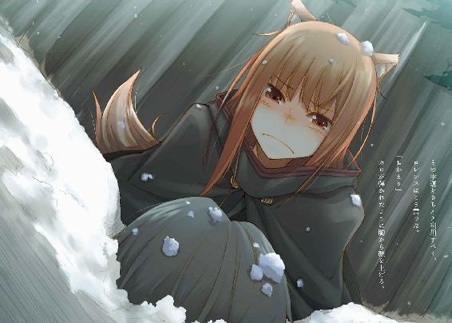

| 狼と香辛料 16 太陽の金貨＜下＞ | |
| 支倉凍砂 | |
| KADOKAWA / アスキー・メディアワークス (2013) | |

本書（電子版）に掲載されているコンテンツ（ソフトウェア／プログラム／データ／情報を含む）の著作権およびその他の権利は、すべて株式会社アスキー・メディアワークスおよび正当な権利を有する第三者に帰属しています。
法律の定めがある場合または権利者の明示的な承諾がある場合を除き、これらのコンテンツを複製・転載、改変・編集、翻案・翻訳、放送・出版、公衆送信（送信可能化を含む）・再配信、販売・頒布、貸与等に使用することはできません。
テーブルの上に投げ出された頭陀袋に視線を奪われていた。
それはこの場所より遠く離れた町キッシェンに向かっているはずの、コルのものだったからだ。
追剥、盗人、山賊の単語が即座に頭を駆け巡る。コルの心がどれほど強かろうと、無慈悲な暴力の前ではなんの役にも立ちはしない。
だが、それにしては妙だ。頭の中で、物事がうまくつながらない。
ロレンスが顔を上げると、テーブル脇にはフードを目深に被った痩せぎすの男がいた。瞬時に自分の記憶を探るが、その輪郭から思い出せる人物はいない。しかも、悪人独特の匂いがなかったことに戸惑った。むしろそこにはどことなく上品な匂いがあった。
そして、その謎の人物は一言もなく幽鬼のようにふらりと歩き出す。滑るようにテーブルから離れたので、ロレンスには追いかけるという発想もなかった。
我に返ったのは、ホロがテーブルの上の頭陀袋を掴み、椅子から立ち上がったからだ。
「っ、待て」
なんとかその一言を挟む。
ホロはフードの奥から、不自然なほどにまばたきをしなくなった目で、こちらを見た。
そこには止めるお前も敵と同じだ、と言わんばかりの怒りがあった。
「一人のはずがない。周りは？」
ホロはじっとロレンスのことを見つめている。
怒りに染まりすぎて逆に感情が感じられないような目だ。
ロレンスがじっとその目を真正面から受け止め続けていると、ホロは少しずつ呼吸が大きくなっていく。頭に血が上り、自分でもうまく制御ができていないようだった。熱病に浮かされたように細い肩を大きく動かして、なんとか爆発するのを防いでいる。
その様は、ふいごで炉に空気を送り込むようにも見えた。
やがて、理性がその目に戻ってくる。
「周りは？」
再度聞くと、ホロは立ちくらみを起こしたように自分の目を片手で覆った。それから深呼吸をして、辺りを見回した。
「わからぬ。多分おらぬ。じゃが」
ホロの唇の下で牙が光る。
「何人いようと関係ありんせん」
説得は無理だ。即座にそう判断して、うなずいた。
ロレンスはテーブルを借りた代金を置いて立ち上がり、歩き出したホロのすぐ側にぴったりとついた。
「確認しよう。それはコルのものか？」
ロレンスの質問に、ホロは頭陀袋を押しつけてくる。
見慣れた形だし、押しつけられてみると確かに軽くコルの匂いがした。
ホロの鼻ならば嗅ぎ間違えるということもないだろう。
それに、紐がちぎれた頭陀袋は、中身を覗き込めば見覚えのあるものが入っていた。
布の切れ端とか、コルが全財産を巻き上げられた証書の類が何枚かとか、虎の子のほんのわずかな現金など。
元より奪うに値するようなものではないし、単純な物取りでないことは明確だった。
しかも、相手はホロのことを知っていた。
「追えるのか？」
ロレンスが尋ねると、ホロはむしろ笑顔を見せた。
「地に果てがなくとも逃がしはせぬ」
ホロはそこに道しるべでもあるかのように、人がうごめく道を確信を持って進んでいく。
町は真夜中になろうとしているのになお騒ぎが消えることはない。
しかし、その雰囲気は陽気なものからどこか粘り気のあるまとわりつくようなものに変わっていた。彼らはろれつの回らなくなった口に、酒だか馬の小便だかも区別がつかなくなったような酒をゆるゆると流し込み笑っている。
古代の聖人に導かれ、地獄巡りをした聖職者が書いた書物の内容を思い出す。地獄に至る前の道では、人々が七つの大罪の全てに浸り、この世の偽りの春を謳歌していた。咲き乱れるのは溶岩の花であり、ザクロのように熟れた果実は死んだことに気がつかない売春婦たちの体だ。
デバウ商会が治めるレスコの町には、規律を説くうるさい組合がない。退廃的な笑い声と歌声が響く中、道の端ではあっちこっちで罪がなされていた。
この寒い時期には息を飲むほど綺麗に現れる星や月も、今はなりを潜めている。
きっとどこか離れた所からこの町を見下ろしたら、赤い火の中でうごめく釜の底に見えたことだろう。つい先刻までここは希望と野心に満ちた町だったのに、ロレンスの目には雰囲気が一変していた。コルの頭陀袋をテーブルに投げ込まれ、そこで魔法が解けたかのようだった。
ロレンスはホロの手を握り、酔っ払いたちの間を縫うように歩いていく。デバウ商会は周到な準備と底なしの度胸と峻厳の叡智でこの町を造り上げた。それは素晴らしいことで、ロレンスは同じ商人として不遜にも誇らしい気持ちですらあった。
しかし、ここははっきりと"造られた町"だった。途方もない金額の儲けや権力を使った壮大なる摩天楼とあれば、舞台裏がどうなっているかは想像するだに恐ろしい。
ホロが鼻を鳴らし、路地の前で止まる。
そこから覗き込んでも、かがり火のせいで路地の暗がりはいつもより濃く、なにも見通すことはできない。罠を張って待ち構えるには、おあつらえ向きだ。
「姑息なことをするならなおのこと好都合じゃ」
ホロは言いながら、胸元から麦袋を引っ張り出し、首を回してこきりと鳴らす。手加減をする必要がない、ということだろう。それから、大胆に一歩を踏み出した。
ロレンスはついて行かざるを得ない。頭陀袋を肩に担ぎ、ホロのあとを追いかける。
路地はこの町が成長しているまさにその瞬間をよく現していた。踏み固められて間もない道の両脇に建設途中の家があり、運び込まれて組み立てられるのを待っている資材が積み上げられ、つい先ほどまで作業していたような石組みがそのままの形で雨晒しになっている。
昼間に見れば、きっと活気に満ちた希望の礎だと思えるに違いない。
しかし、夜の夜中に見るそれは、所々に雪が残っていることもあって、きらびやかな世界の舞台裏を見せられたような気になった。
ロレンスが固唾を飲みながら、暗闇の中でも平気で歩いていくホロになんとかついていくと、ちょっとした広場に出た。周りを建物に囲まれて、真ん中には井戸がある。建物が完成して人が住めば、日の当たる憩いの場所になるはずだ。
しかし、今は資材が積み上げられ、造りかけの家々が戦争のあとのように見えた。
そして、井戸の縁には思いがけないものがいた。一羽の兎がいたのだ。
一瞬、どこかの店から逃げ出してきたものだろうかと思ったが、その兎は逃げようとも隠れようともしていない。
ロレンスはようやく、その兎の目が、人の言葉を理解するに相応しい、理知的な色をたたえていることに気がついた。
ホロが大きく深呼吸したのは、勢いで飛びかかってしまいそうなのを必死で堪えるためだろう。
「袋の持ち主を悲しませたことはお詫びします」
兎はまずそう言った。
最初に感じた印象どおり、上品な語り口だった。
「ですが、傷はつけていません。できればそんな事態も避けたいと思っています」
その言葉が嘘か本当かは、ホロに判断させればいい。
ロレンスがすべきことは、可能な限り落ち着いて、全体を見回すことだ。
「目的はなんなのですか？」
単なる金銭目当てではあり得ない。
相手は喋る兎であり、ホロのことを知っている。
「あなた方がレノスの町をうろついているのを、仲間が見つけました。狼が商人を連れて町をうろつき、なにをするつもりなのかと探らせてもらいました」
「なにかわかりましたか？」
ロレンスが慇懃に尋ねると、兎はピンと耳を張った。
「我々は、禁書と呼ばれた技術書を必要としています」
驚きの風は、軽く頬を撫でただけだ。レノスの町でのことを監視されていて、コルの頭陀袋をわざわざロレンスたちに見せつけるのであれば、その可能性は大いにあり得た。
「......なんのために？」
「少なくとも、あなたたちと敵対するためではありません」
ロレンスの質問に答えはしなかったが、その言葉はホロへの牽制だったのかもしれない。
ホロは些細なきっかけさえあれば兎に飛びかかりそうだった。
その小さな手は、胸元の麦袋を握り締めたままだ。
兎はロレンスとホロを見据え、言った。
「北の地が未曾有の危機にあります」
ロレンスは少し大きく息を吸った。
自分の認識が正しければ、禁書の存在は北の地の騒乱の火種にはなっても、危機を救うようなものになるとはとても思えない。
「禁書があれば、その危機を防げるかもしれません」
兎の話し方はとても理性的だ。発音もしっかりとしていて、ひとかどの人物らしい風格を備えている。
ただ、コルの頭陀袋は紐がちぎれていた。話し合いのうえに譲り受けたもの、とはとても思えない。要するに、脅しだ。次にテーブルの上に載るのは、首でないとも限らない、とも。
ロレンスは、尋ねた。
「あなたは何者なのですか？」
兎の口から出てきた言葉に、ロレンスは思わず顎が上がっていた。
「ヒルデ・シュナウ。デバウ商会で帳簿を預かっています」
どの商会でも、帳簿を預かるのは主人の右腕といっていい。ましてやデバウ商会ともなれば相当な地位になるだろう。あれほどの規模の商会で、しかも新規に通貨を発行するような組織であれば、控えめに言っても小国と呼んで差し支えない。
言うなれば、王の右腕だ。
あるいは、嘘？
ロレンスが視線をホロに向けると、ホロはじっとその場に佇んだまま。
ヒルデと名乗った兎の言葉は、どうやら本当らしい。
ロレンスは軽く唾を飲む。そして、呼吸を意識的に三回する。
一回、二回、三回。
頭の中身を、全て商談用に切り替える。
「そのヒルデさんが、どうして禁書を？」
「疑いを持たれるのは当然です。我々もあなた方の目的を知らないわけではありませんから」
レノスで網を張られていたのなら、そのくらい調べがついているかもしれない。特に、デバウ商会は傭兵たちをたくさん取り込んでいる。ロレンスたちがレノスの町で傭兵相手の商会に出入りしていたところから足がついたのだとしたら、それも十分に考えられる。
「ですが、あらゆる可能性を考えて、もう我々には禁書の話にすがるほかないのです」
ヒルデがデバウ商会の帳簿を預かるほどの商人ならば、その真剣で差し迫った語り口をどこまで信用していいものかはわからない。
しかし、まったくの嘘だとも思えない。
なにせ、ヒルデはホロを相手に牙を貸してくれと頼んでいるわけでも、ましてやロレンスの行商人としての能力を貸してくれと頼んでいるわけでもなく、単純に禁書を必要としていた。
それも、ホロの前にコルの頭陀袋を出して、殺される覚悟をしたうえでのことだ。
そんな博打を打つには、デバウ商会の帳簿を預かる存在の命は重すぎる。
本当に、あらゆることを試したうえでここに来たのかもしれない。
だから、ロレンスはもう一度こう尋ねた。
「なにが起こっているのか、お聞きしても？」
ヒルデは、一瞬息を止めて、認めたくない現実を語るかのように、言った。
「今、デバウ商会の内部は二つに分かれています。そして、私がいるのは分が悪いほうです」
「......それで？」
ロレンスは可能な限り即座に尋ね返したものの、動揺は隠せなかった。
デバウ商会が内部で割れている。
それが、楽しい報せのはずがない。
「我々が通貨の発行を決めたことはご存じかと思います」
「ええ、素晴らしいことだと思いました。もちろん、通貨の発行益のほうも、という意味で」
「まさしくそのとおりです」
ここまで路地の奥深い場所だと、さすがに表通りの喧騒は届いてこない。
しかし、顔を上げれば真っ黒い夜空にかがり火の赤い光が妖しく映っているのが見える。
「ただ、我々は、端的に言えばあまりにも儲かりすぎたのです」
儲かりすぎた、とデバウ商会の帳簿を預かる者が言う。
ロレンスは、それしか言葉を知らないかのように、繰り返す。
「儲かりすぎた」
「はい。通貨発行を決めた時点で、莫大な儲けになっています。それに加え、すでに両替商たちの間では新貨幣が高騰しています」
まだ存在しない貨幣をやり取りして、投機が始まっているのだ。
信じられない高純度で、今後はその純度が維持されるとほとんどの人間が信じている。
多少値が張ってもその貨幣を持って帰りたいと願う者たちが多いのだろうし、それにつけ込んで値をつり上げようとする両替商たちや、値上がりを当て込んで投機をする者が多いのだろう。
「貨幣の値が上がれば、それは本来我々にとって嬉しいことです。ただ、多すぎるなにかが人によい影響を与える、というのはなかなかないことです。特に、事前に新貨幣の割り当てを受けている諸侯はなおさらです。どの家の歴史でもついぞ見なかった金額が懐に転がり込んできます。そのことに気がついた彼らは、至極単純なことを言い出しました」
「もっと銀貨を発行しろ、と？」
兎がうなずくと、呆れてため息をついているようにも見える。
「たくさん銀貨を発行すればそれだけ発行益は増え、儲けが増えます」
「ですが、それがなぜ、北の地の未曾有の危機に？」
ロレンスがしつこく尋ねると、ヒルデは一瞬目をそらした。
策を練っているのか？ とロレンスが訝しんだのもつかの間、空に向けられたその視線は、哀しげなものだった。それは羽のような耳を持ちながら、飛べないことを恨んで空を見つめるようだった。
ヒルデの視線がロレンスに戻る。これが演技なら、騙されてやってもいい。
「貨幣の発行には地金が必要です。すでに現在、両替商から注文を受けている貨幣の量だけで、備蓄していた地金に匹敵しています。これ以上は、即時の発行はできません。しかし、売れる時に売れるだけ売るのが商いの基本となれば、問題の簡単な解決法がなにか、ご存じでしょう？」
ロレンスは口の中に嫌な味が広がってくる。
話の行く先が、見えてきた。
「地金か、材料となりうる貨幣の奪取」
「そうです。貿易の乏しい北の地といっても、富を蓄えているところはあります。欲に目がくらんだ彼らは、今のこの勢いに乗って富を蓄えている場所を襲撃しろと主張しています。実際、我々の一連の計に乗らず、門戸を閉ざしている領主や町がいくつかあります。我々の側にいる領主たちは、積年の領土欲も合わせて、そんな主張をしているのです」
ヒルデの軽蔑するような口調は、実際に軽蔑しているからだろう。
あまりにも単純な主張は、デバウ商会の印象にはそぐわない。わめいているのは、デバウ商会に寄生し、その儲けを吸い上げようと画策している領主たちだろう。
しかし、領主たちが主張をするだけでは、ここまで話を進めてきたデバウ商会の面々がその主張に嫌々従うとも思えない。なぜなら、デバウ商会はそんな面々を操り人形のようにすることで、ここまでやってきたのだから。
つまり、考えられる可能性は一つしかない。
「そんな野蛮な主張を支える人間が、デバウ商会の内部にいるというわけですね？」
「はい。そして、彼らの勢いを減じるために必要なのが、鉱山の採掘技術を記した禁書なのです」
ロレンスは頭を巡らせて、吐き気に似たものを感じていた。
難しい話ではないのだ。ただ、利害の対立がどうしてこうも芸術的な組み合わせになりうるのかと、神が意地悪をしているようにしか思えなかった。
ヒルデは、悪魔の宴を見てきたように、静かに言った。
「侵略を主張する者たちも、一応は考える頭を持っています。単純に足りないものを奪えと主張しているわけではありません。彼らは、今ある鉱山の枯渇の可能性を主張しています」
もっともらしい理屈をくっつけるのは、商人の十八番。
「すなわち、近い将来鉱山が枯渇する可能性を考えれば、その日を少しでも遅らせるためにゆっくりと採掘するか、さもなければ、新しい鉱山の開発をするべきだ、と。そして、鉱山の開発は平時にはとても難しい政治的問題です。しかし、商会に勢いのある今ならば、簡単に鉱床となる土地を手に入れられるのでは？ ならば今のうちに手に入れておくのが理に適っているのでは？ そのついでに落とした町や領主の宝箱から地金を奪えば一石二鳥なのでは？ と、主張しているのです」
燃え盛る欲望と、手に入れたい利益と、排除しておくべき障害が、全て一直線上に並んでいる。確かに、今のこの状況下でデバウ商会に歯向かって生き残れる連中がいるとは思えない。ルワードは、攻めに出ればどこの領地であっても叩きつぶすことができるはずだ、と明言していた。
なにせ、デバウ商会には金があり、戦は結局金と金の勝負なのだから。
しかも、デバウ商会が勝てば、その土地の富や鉱床ばかりか、さらにその場所で自分たちの貨幣の使用を強制することによってよりたくさんの通貨を発行し、多大なる利益を手に入れることができる。
敵を飲み込めば飲み込むほど強くなる、大昔の神話に出てくる蛇の暴神のようだ。
あの蛇の神はどうやって最後に死ぬことになったのか？
蛇の神の胃袋には限度があるが、発行できる貨幣の枚数は事実上無限なのだ。
「しかし、禁書があれば、少なくとも鉱山枯渇の理屈は崩せます。なぜなら、新しい採掘をしなくとも、閉山になった鉱床を新たに採掘することができるからです。一度閉山となった鉱山なら、大抵の領主がすんなり金で売ってくれるでしょう。その意味を考えてください。あなた方は、北の地がほじくり返されるのをよしとせず禁書を追っていたはずです」
採掘技術が進歩するたびに、枯渇したと思われていた鉱床が復活する事例が山ほどある。
それは新しい土地が切り開かれる可能性を少しでも減じてくれる。その上、その入手が金で解決できるとなれば、戦火に見舞われることもない。
ロレンスたちにとって、そのことがどういう意味を持つのか、改めて問うまでもない。
「我々は多くの問題を金で解決することができますし、これからはそうすべきなのです。剣を振り上げ血を流す時代はもう終わりにしなければいけません。大きさと力の時代がどういう終焉を迎えるかは、月を狩る熊が何百年も前に示しているはずです！」
ヒルデは身を乗り出すように喋り、口を閉じた時には息を切らしていた。
ホロはじっとしている。
ロレンスが、その代わりに最も重要なことを聞いた。
「その主張は、あなただけのものなのですか？」
たった一人でデバウ商会の内部で孤軍奮闘する小さな兎。
もしもそうなのだとしたら、火に油を注ぐことになりかねない禁書を託すことなど馬鹿げている。ロレンスは商人の合理性の下に、そんな危険は冒せない、ときっぱり主張しなければならない。
しかし、ヒルデははっきりと、「違います」と言った。
「我らが商会の主、ヒルベルト・フォン・デバウその人も、同じ考えです」
デバウ商会の元締めが、自分の商会内部で立場の悪い場所にいる。
そんな馬鹿なことが、と驚くことすらない。独りで運営することが不可能なほど大きな商会では、どうしても権力を分散しなければならなくなる。力をつけた部下たちが、主人を追い落とすなどよく聞く話だ。だから、時として大商会の主が尊大に振る舞うのも、必要に迫られてのことと聞いたことがある。
そしてそれは、デバウ商会という存在そのものが、欲望の火に煽られ別のものに生まれ変わろうとしているということだ。
「お願いします。今ここで彼ら造反者の勢いをくじけなければ、デバウ商会はただの侵略者に成り下がってしまいます。金と武力が結びつけば、教会だって寄ってきます。そうなれば野火のように戦火がこの地を覆うでしょう。我々はデバウ商会を地獄への入り口にしたくないのです。この町の夢と希望にあなたたちも惹かれたのではないですか？ それこそが我が主デバウの夢なのです。このままでは、デバウの夢が潰えてしまいます！」
ヒルデの悲痛な叫びが、赤みがかった夜空に飲み込まれていった。
この世は無数の人間がそれぞれの糸を手繰り、無限の布を織り上げている。ロレンスが、デバウ商会が織り上げようとした奇跡の布を、自分の旗のように誇らしく思ったのも事実だ。
世の覇権がホロのような古代の存在から人間に移り、その人間の世の覇者であった王や貴族を出し抜き、ついに商人が世の頂点に立つ。
そんな御伽噺以上の白昼夢を一瞬見ることすらできた。
デバウ商会がここでやり遂げようとしたことは、それほどのことなのだ。
「私はご覧のとおり兎の身でありながら、デバウの夢に共感して協力してきました。彼はこの地に自由な国を作るのだと言っていました。何者にも縛られず、ただ知恵と努力のみが民を導く場所を、そして、小競り合いの絶えない不安定なこの土地に平和と安定をもたらそうと。その夢は私が命を捧げるに相応しいものだと思いました。ですから狼の群れに手を出したのも」
そして、ホロをはっきりと見据えて、言う。
「あとには引けないからです」
きっと、最初からコルを殺すつもりなどなかったに違いない。そもそも殺すこともできなかったのかもしれない。牙か爪を持っていれば、ル・ロワを脅し上げ、締め上げ、禁書のありかを吐かせればいいからだ。
しかし、それでもなお、ホロに殺される覚悟でコルたちを人質に取るかたちにした。
そんなところだろうか。
それぞれにはそれぞれの理由がある。
ヒルデはふと長い耳をひくりと動かすと、顔をあらぬ方向に向けて、それから無言のホロに向きなおった。
「全てがうまくいった暁には、もちろん礼を支払えます。あなたたちはこの町に店を買い、住み着こうとしていた。私はデバウをずっと側で支えてきた、デバウ商会の帳簿を預かる存在です」
金銭的な利益は言うに及ばず、それ以上の便宜を図ってくれるということだ。
「事態は一刻を争います。デバウ商会に関わる者たちは皆が一生のほとんどを鉄火場で生きています。鉄は熱いうちに打たなければならないとなによりも理解している人たちです。すでに長のデバウをはじめ、我々の派閥は商会の中に閉じ込められています。なんとか抜け出せるのは私だけなのです」
ヒルデは井戸の縁から下りて、御伽噺の兎がそうするように、たたまれていた衣服を器用に前脚で持ち上げた。
「納屋の鍵を持ったまま、納屋に閉じ込められたくありません。よく考えてください。我々の利害は全て一致しているはずです。明日の夕方に、宿に結論を伺いに行きます」
そして、ヒルデはひょこひょこと歩き、建設途中の家の石壁の隙間に体を押し込み、消えていった。追いかけようとしたロレンスを止めたのは意外にもホロであり、直後、反対側の路地から赤い光が見えてきた。
「ん？ こんなところでお楽しみか？」
遅れて現れたのは、肩に槍を担いだ三人組の男たちだった。
身なりからして、町の自警団だろう。
「酔漢に絡まれて俺たちの仕事を増やすなよ。宿でやれ、宿で」
犬か猫を追い払うように、しっ、しっ、と手を振る。ロレンスはもちろん逆らうことなどせず、ホロの両肩を支えるように抱いて、元来た路地を戻った。彼らはしばらくの間こちらを見ていたが、やがて見回りを続けるために別の路地の奥に消えていった。
すると、途端に辺りは暗く、静かになる。ランプの灯りを見たせいで、すぐ側にいるホロの姿ですらうまく見ることができない。目に入るのは、夜空の怪しげな輝きだけだ。
そこに、ホロが言葉を向けてきた。
「どうするんじゃ？」
ロレンスの目では、暗闇に目が慣れるまで資材やゴミであふれるこの道を先導することはできない。もう少し待ってくれ、と言おうとしたところで、ホロが意外な行動に出た。
ロレンスの腕にすがりつく力を、強めてきたのだ。
「あれの言葉に、嘘は感じられんかった」
そして、禁書を巡る話なのだと気がついた。
「利害ははっきりしている。あの兎、ヒルデと言ったか。彼が言ったように」
デバウ商会内部で自分たちのさらなる儲けを追い求める者たちは、戦に打って出ようと考えている。彼らはその正当性を、鉱山の枯渇の可能性に求めている。
ならば、禁書があれば既存の鉱山の増産を見込めるのだから彼らの主張をくじくことができる、とヒルデは考えている。
「ぬしは、どう思う？」
「俺は......」
ロレンスは答えようとして、言葉を止める。
考え、一つの筋道をたどる。
「俺は、自分自身の利害として、ヒルデの案に乗りたい。デバウの夢とやらには共感できるし、戦はいつだって儲からない。儲かるのは一瞬だけだ。山火事で暖を取るようなものだからな。確かに暖かいが、あとにはなにも残らない」
しかも、ルワードはこの町を戦に向かないと評している。
ロレンスもそう思う。
常に攻めていられればいいが、攻められる側になった時どうするつもりなのだろうか。
ここには市壁もなにもない。
それでも人々が町に残ると思っているのか、さもなくば、逃がすつもりはない、と思っているのか。
「それに、禁書を渡すだけならば危険はない」
「ぬしがそう言うのなら、それでよい」
くぐもった声でホロは言う。
ロレンスは少し呆気に取られて、言い返した。
「いや......この話は、お前が決断を下したほうがいいだろう？ 北の地に関わることだ。お前は、ヒルデの案に賛成しないのか？」
ホロの口ぶりからすれば、どちらとも決めかねているふうに取れる。
さもなくば、どちらかと問われたら、反対のほうにすら傾きかねない雰囲気だ。
それでも、ホロはロレンスの質問に答えない。
「......北の地が戦火に見舞われなければ、お前だって助かるだろう？ ヒルデにはヒルデの野望があるのだろうが、今のところ俺たちの利害が対立しているようには見えない。閉山の開発というのは確かに好手だ。金も儲かるうえ、新たに土地も荒らさない。ヒルデの言葉には、嘘がなかったんだろう？」
それならば、禁書をヒルデに渡すことは理に適っている気がする。
渡さなければ、少なくとも逆転の芽は見込めない。
逆転に失敗しても渡さなくても、結果が同じことになるのなら、よい結果が出る可能性のある選択肢を選ぶべきだ。
こんな計算くらい、ホロの頭ならば簡単にできるはずだ。
ならば、考えられる可能性は、これしかない。
「なにか、渡したくない理由があるのか？」
ロレンスの質問に、ホロの体がびくりと震えた。大事な決断をホロがロレンスに丸投げするなどということはあり得ない。そんなことをするのは、自暴自棄になっているか、考えたくもないなにかがあるせいだ
しかし、それは一体なんだ？
「......ヒルデが信用できないのか？ 確かに、お前から見たら頼りなさそうな兎だが......要点は全て心得ているように見えた。デバウ商会のような組織の中で、帳簿を預かれるようになるには相当頭が切れないとならない。そういう点においては、なんの心配もいらないと思う」
嘘偽りなくロレンスはそう思う。
だからといってヒルデが対立する者たちの説得に成功するかどうかは保証の限りではないが、そんなこと、今更言うべきことではない気がする。
「それとも、デバウが信用できないのか？ 見たこともない奴を信用しろというのは確かに難しいかもしれない......。それに、デバウ商会はなんといったって不穏な噂の絶えなかったところだしな」
それは単なる印象論ではない。実際に、ロレンスたちはついこの間までその不穏な噂を追いかけていたのだ。
しかし、ホロはうんともすんとも言わない。
ロレンスの腕にすがりついたまま、じっとうつむいていた。
ロレンスはため息をつきたいのを必死に堪えていた。
これ以上なにかあるのか？ 自分はなにを見落としているのだろうか？ なにより、なぜホロはそのことを言ってくれないのだ？
そんな疑問が、少しずつ、なにも言わないホロへの苛立ちに変わっていく。
これ以上ホロが禁書を渡したくない理由があるのだろうか。
あるとすれば、もう本当に限られてくる。
「それとも、あいつらがコルに危害を加えるかもしれない可能性を？」
なにせ、今ここには実際にコルの頭陀袋があるし、その中身の少なさはいかにもコルの非力さを表しているようだった。
ただ、ヒルデは彼らに危害を加えるつもりはない、と言った。
ホロはその言葉に嘘がないと思っているし、心配であるのならばあの場でヒルデの小さな体を巨大な牙の生える口の中にしまい込むべきだった。
そして、ホロはその衝動を抑えるのに必死だった。
そこから導かれる結論は、ホロはヒルデの言葉を信用しているし、ヒルデは本当にコルたちに危害を加えるつもりがないということだ。多分それは、禁書を渡すことを拒んでもそうだろう。
ヒルデは信条を持っている。
そのために無意味に誰かを殺すような信条だとは、とても思えない。
「それとも、俺がなにかを見落としているのか？」
ロレンスは、我慢しきれずについにそう尋ねた。
ヒルデの案に乗ることがホロの利益に適うことは間違いない。ロレンスがそのことを勘違いするような余地はない。その上、ロレンスにだって非常な利益の好機といえた。
成功の暁には、この町で非常な便宜を図ってもらえるだろう。それは安い値段で店を構えられるということ以上の特別な意味がある。町を支配する人間に便宜を図ってもらえるなど、幸運の女神がずっと側で微笑みっぱなしであるのと変わらない。ホロと共にそんな店で商いをできるのであれば、ロレンスはエーブの尻尾すら掴まえられそうな気がしてくる。
ロレンスは、駄々をこねる子供が落ち着くのを待つように、じっとホロを見た。
ホロは子供ではない。口にすべきことがあるのであれば、必ず理性がその口を動かすことになる。
やがてホロは何度か唇を動かし、そして、口で呼吸をするようにして、ようやく、言葉を紡ぎ出した。
「禁書を渡せば、のちのちさらに土地が荒れるかもしれぬ」
ロレンスは、自分の視界が倍に広がったような気すらした。
それは驚きのためであり、ホロの理解がそんなに浅いとは思わなかったからだ。
「その可能性は......確かにあるかもしれない。だが、新しい技術は往々にしてすでに閉山になった鉱山を復活させることができる。そうすれば、新しい土地が切り開かれる可能性はぐんと減る。木が生い茂る山よりも、すでに切り開かれ、鉱山の体をなしている場所のほうが開発しやすいからだ。しかも、ヒルデが言ったように、それら全ては金で解決できる場合が多い。俺も旅の途中で聞いたことがある。実際に、枯れた鉱山が復活することに賭けて、それを専門に商う者たちもいるくらいだ。だから」
ロレンスはそこで言葉を切った。
それでも、ホロは言葉を返してこない。
「だから、今やるべきことは、デバウ商会内部の強硬論を唱える者たちが北の地に攻め込む理由を排除することだと俺は思う。もっと言えば、この町を造るような夢を持った商人が再び表舞台に立ってくれるのを支援することだと思う。当然、お前が懸念することはわかる。禁書にはきっと本当に凄まじい技術が記されていることだろう。それをデバウ商会に渡せば、その技術をもって更なる開発をしようという欲望に火をつけるかもしれない。しかし」
ロレンスはいつの間にかホロを説得している自分に気がついた。
それは、ロレンスがこの町に店を買おうと手付金を支払った、ということもある。だが一番の理由は、デバウ商会がやろうとしていたこと、やり遂げたことを目の当たりにして、感動したし、興奮したからだ。
商人が世を統べれば、きっと山ほどの愚かなことや理不尽なことがこの世から消え去ってくれる。なんといったって商人は町が発展し、人々が幸せになってくれなければ商売上がったりなのだ。王や貴族のように、名誉や欲のために馬鹿げたことは滅多にしない。大商人が横暴と贅の限りを尽くす、というのは彼らをよく知らない民衆の発想だ。そんなことをする商人は、やがて別の商人に取って代わられる。
なにより重要なこととして、金庫がすっからかんでも威張り散らすことのできる王や貴族はいるが、金庫がすっからかんで威張り散らせる商人はいない。真面目に働かざるを得ないのがどちらで、どちらが世を統べるべきかは、明らかな気がする。
それに、行商人としての経験からいって、商いが活発な場所はいつも活気と幸福に満ちている。だからロレンスはデバウを応援したい。
禁書を渡したら土地の開発が進むかもしれない、というそんな可能性に怯えて、全ての希望の芽を摘むのは馬鹿らしいとすら思う。
それに、ロレンスはホロに言いたいことがあった。
「なぜ今更そんなことを言うんだ？ お前は、デバウ商会が北の地をどうしようと気にしない、と言ったじゃないか。だからこそ、俺がここに店を買うことを応援してくれたんじゃないのか？」
今度はホロは体を少しも動かさない。
「なのに、禁書を渡せないというのは──」
「違う」
ホロは、言った。
「違う。話は、全然違う」
ホロはロレンスの腕を痛いくらいに握り締め、違う、違う、と繰り返した。
それはうまくいかないなにかに対して駄々をこねる子供のように見えたし、事実そのとおりだったのかもしれない。
ホロは違うと繰り返し、その声がどんどん涙声になっていった。ロレンスの腕を掴む手からも力が抜けてきて、やがてホロは二の腕をだらりとたらしてしまった。
雨の日に外に放り出されてすすり泣く子供のように、肩を震わせていた。
「なにが違うんだ。程度には確かに多少の差はあるかもしれない。しかし、禁書といったって魔法の書じゃないんだ。確かに鉱山採掘を促進させるようなことがあるかもしれないが......だからといって、突然劇的に北の地が丸裸になるとはとても思えない」
「じゃが......じゃが、長い先もそうかはわからぬ」
ホロはフードの奥から、ロレンスを見上げて言った。
暗闇の中で見るその顔は、隊商を組んでいる時に狼に襲われ、我々はどうすればいいのだと絶望していた商人に見えた。
「......何十年か先には、もちろんそうかもしれない。けど、そこまで考えたって仕方がないだろう？」
ホロはその言葉に、大きく息を吸った。
怒鳴ろうとしたようにも見えたし、あまりにも恐ろしい言葉に息を飲んだようにも見えた。
多分その両方だったのだ、と気がついたのは、ホロが涙をぼろぼろとこぼし始めたからだ。
「仕方なくなど......ありんせん......」
「......え？」
ロレンスは、暗闇の中ですらわかるホロの泣き顔にうろたえ、頭が回らなかった。
ただ、そのあとに言ったホロの言葉に自分の力で思い至ったとしても、自分にできることは変わらなかっただろうと思う。
なぜなら、それはこの世の摂理であり、ホロとロレンスの間に永遠に横たわる事実だったのだから。
「仕方なくなどありんせん......。わっちゃあ長い時を生きる。ぬしはずっとわっちの側におるわけではありんせん。なのに、なのに、わっちゃあ自分の決断のせいで森が剥げていくのをたった独りで見なければならぬのかや？ 山が削られるのを見なければならぬのかや？ そんなの嫌じゃ。絶対に嫌じゃ。ぬしはすぐにいなくなる。でも、わっちゃあずっといるんじゃ。ぬしは、なのに、ぬしは、わっちに決断しろと言うのかや？ わっちのせいにしたいのかや？ 自分はすぐに死んでしまうくせに、死んだらもうわっちのことなどどうでもいいのかや？ ぬしは、ぬしは......」
ホロは握り拳を作って、ロレンスの腕を叩いてくる。
何度もホロの本気の拳に叩かれてきた。
目の前のそれは全然力がこもっていないし、抵抗しようと思えばいくらでもできる。
しかし、今のホロのそれは、これまでのどんな一撃よりも痛かった。
ホロは絶望するような顔で、泣きじゃくりながら拳を振るっているのだ。
抗えぬ運命を前に、いかに自分が無力かを晒すように。
どれだけロレンスの胸を叩いたって、決して目を覚まさなくなるその瞬間を予見するように。
「ぬしがいるから耐えられるんじゃ......わっちは、わっちゃあ......」
鼻をすすり上げ、ぐしゃぐしゃな顔のままロレンスを見上げて、必死にすがりつくように言った。
「そんなに強くありんせん」
ロレンスの腕を力なく叩く拳が、最後の力を振り絞るかのように、ロレンスの服の袖を掴んだ。置いていかないでくれと懇願するように、ホロは泣きながらロレンスの袖を掴んでいる。
ホロはロレンスの空想の店の絵を描く時に、自分の居場所はないのかと言い張った。あれはかけらも冗談ではなかった。
ホロは自分の居場所が本当に欲しかったのだし、だからこそその居場所が手に入るのなら嫌なことに目をつぶれるはずだと決心した。
しかし、禁書を渡す決心をすれば、その後何百年と続くであろう鉱山の開発を、全て自分の責任としなければならない。事実がどうであるかを問わず、ホロは必ずそう思うだろう。
そして、その時にロレンスはいない。どうあがいたって、五十年がいいところだ。
うっかり病にでもかかれば来週に死んでいたっておかしくはない。
人の命はとても儚い。なにかを失うのが怖いのなら、人を好きになるなどもってのほか、と詩人が言うくらいだ。
ホロはそのことを最初から覚悟していたはずだし、何度も経験してきたはず。それでもこんなに取り乱してくれると、正直、ロレンスは自分が男として生まれてきたことを誇らしいとすら思う。
ホロの手に視線を落とし、ゆっくりと、再びホロに向ける。ホロは自称賢狼の見栄も誇りもかなぐり捨てて、ひっくひっくとしゃくりながらロレンスのことを見つめている。
ロレンスはその手を取った。
ホロはまた泣き出した。
ロレンスがなんと言うのか、この賢い狼は最初から全てわかっているのだ。
「なら、お前は決断しなくてもいい」
ホロの小さい体を両腕の中に収めながら、ロレンスは言った。
「ヒルデに禁書を渡すべきだということは、最初からわかっていたんだろう？」
ロレンスに思いつくことのほとんどはホロにも思いつく。
利害がはっきりしていたり、条件がはっきりしていたりする時にはなおさらだ。
それでもロレンスがなんとかホロに勝てることがあるのは、商人特有の諦めの悪さゆえ、とすらいえる。
そして、ホロは最終的にロレンスがどう言うのかも予想していたはずだ。
それはホロが望むことだった。
泣きじゃくっているのは、望む言葉を待つほかない自分が情けないからだ。
しかし、この世で一番大事な相手が自分の言葉を待ってくれているのなら、ロレンスは誇りを持って、その言葉を告げる。
「俺が、俺の利害に従って、禁書をヒルデに渡す。お前は反対した。様々な理由で反対した。その責任は俺が取る。どうやって取るかはまだわからないがな。取る。絶対に取る。俺の言葉に嘘があるか？」
ホロは、弱々しく首を横に振る。
すまぬ、と何度も謝っていた。
「なら、結論だ。禁書はヒルデに渡す。お前は顔を上げて、俺を見ろ」
ロレンスはホロの細い両肩を掴んで、少し乱暴なくらいに押して距離を開けた。
ホロはまだ泣いている。
およそ賢狼とは思えない。
ただ、それはそのとおりなのだろう。
賢狼という名は、ヨイツで村人たちに崇められていた、ホロの仮の姿だった。
「これまでどうにかしてきた。今度もまたいつかどうにかする」
ホロはこんな理屈でも、遠からずやってくる孤独の支えのために、必要としていたのだ。
「だから、もう泣くなよ」
ロレンスはホロの目を指の腹で強めに拭う。
すると指に押されてまた涙がこぼれるが、ロレンスはそれもさらに拭う。
「あまり泣いていると、また俺が変な気を起こすぞ」
軽く頬を叩いて、笑ってやる。ホロはあまりにもひどい冗談に咳き込むように笑い、その拍子にまた少し泣いた。
けれども、言いたいことは全部言った。
ホロは自分の手で顔を拭い、さらに袖で乱暴に拭った。もう、これ以上ロレンスにしてやれることはない。最後に、ロレンスはホロに手を差し出した。
「宿に帰ろう」
ホロはその手を取って、しっかりとうなずいたのだった。
翌日、ロレンスはホロより先に目を覚ました。
ホロは今まさに泣き疲れて眠ったような顔をして、どこか苦しそうに寝息を立てている。いつもは獣のように丸まって眠るので、布団から顔を出している時点で普段どおりではない、とわかる。
昨晩はずっとロレンスの側にいた。
ホロからすれば、わずかな時間ののちにロレンスは死んでしまう。感情に流されたせいとはいえ、そんなことを口にしてしまったせいで、自分の言葉に怯えきっているようだった。
ロレンスは見送る側ではない。
レノスの町でコルを見送った時のことを思い出して、そう思った。
ホロがコルを見送る顔は、とても疲れていた。必死に笑顔で見送ってはいたものの、その下には見送って戻ってきた者がいないことに対する疲れがあった。
いつか、一人くらいは、見送った者が戻ってくればいいのに。
そんな馬鹿げた空想すらできないほどの、疲れに見えた。
没落から再興の奇跡を起こした偉人は山ほどいても、時間をさかのぼった者は誰一人としていない。
ホロはいつも見送る側だ。これまでも、そしてこれからも。
ホロの頬を撫でて、ベッドから下りた。木窓を軽く開けると、今日も寒さの割にはよく晴れている。外は賑やかだし、デバウ商会内部が真っ二つに割れているとか、それどころか戦が起こるかもしれないとか、そんなことなどかけらも気にしているような雰囲気ではなかった。
悲劇はいつも唐突にやってきて、全てをさらっていってしまう。
ロレンスにできることは、嵐の中でも決して足を止めないことだ。
前に進むことだけが、ホロに対してしてやれることの全てになる。
負け戦の話はいつも陰鬱で、ホロの人生はその点、運命と世の摂理においてずっと負け戦なのだ。
ロレンスは身支度を整え、部屋をあとにする。
少し寒いと思ったが、すぐに帰ってくることを示すように、上着は枕もとに残しておいた。
「若に御用、ですか？」
ロレンスが三階に上ってモイジの部屋に行くと、どうやら自分の部屋でも飲んでいたらしい。
猛烈な酒の匂いと共に、眠そうなモイジがのっそりと部屋の中から出てきた。
「はい。ちょっと、お話が」
「うー......部屋にいないとなると......駄目だ。ちょっと、すみません」
扉を開け、ロレンスに入るように促すと、モイジはさっさと部屋の中に戻り、水差しを手に取った。
そして、机の前だというのに頭から中の水を被ると、犬のようにぶるぶると頭を振った。
「ふう。やれやれ。あの程度で酔ってしまうとは、歳は取りたくないものです」
「相当盛り上がったようですね」
「はは。お恥ずかしい。いつ死ぬともわからない身空だ、という言い訳がありますからね。ついつい酒は派手になってしまう」
生きているうちの最後の飲み収め。
そんな言い訳があれば、確かに深酒を戒める言葉など世界中のどこにもないだろう。
「それで、若でしたかな」
ざ、と頭を撫で上げると、銀色の髪の毛が針のようになる。
この歳でこの勇猛さだ。
若い頃は本当に熊か狼かという傭兵だったに違いない。
「はい。どこにいらっしゃるかわかりますか？」
「おそらくレボネトのところ......ああ、フーゴ傭兵団というところの長の名前なのですが、多分そこだとは思いますが......若や団の長たちは団員とは違うつながりを持っていますから。どこの酒に誘われてどこで酔いつぶれているかわかったものじゃありません」
このあたりはきちんと豪放な傭兵らしくてちょっとほっとする。
それに、群れをまとめ上げる者たちは、やはり彼ら特有のつながりがあるようだった。
「お急ぎのようでしたら、小僧を走らせますが」
モイジの言葉に、ロレンスはほんの数瞬ためらった。
そのためらいに気づいて、モイジが戦人らしく剣のように言葉をするりと滑り込ませてくる。
「私では役に立てませんかな？」
実質的に団の運営を担う古参兵。
そのモイジを飛ばして団長に掛け合うからには、本来それ相応の理由が必要になる。
「もちろん、問題ありません。ただ、私がこの話をモイジさんに先に伝えると、ルワードさんが自分は大変な時に酔って寝ていたと自責の念に駆られるのではないかと、少し心配してしまいます」
酒の残っているらしいモイジの頭には難しすぎる言い回しだったろうか。
そんな心配は、一瞬のうちに消し飛んだ。
「小僧を走らせます。しばしお待ちを」
モイジはロレンスの脇を駆け抜けて廊下に出る。
建物が崩れ落ちそうなほどの大声で、「伝令！」と叫んでいた。
全知全能の神より賜った権利によって、領主は土地を治め、騎士はその領主に忠誠を誓う。
土地の上でなにが起こり、なにが求められるかは、神の代理人たる領主の胸三寸で決まってくる。これまではのんびりと暮らせていた森と草原の広がる土地が、突然悲鳴とすすり泣きの広がる焼け野原になることだってある。
この町の命運を握っているのは、デバウ商会という名の、顔なき領主の存在だ。
その内部で意見が対立し、造反が成功しかけているとなると、そこに命を預けようとしている傭兵たちにとっては重大な問題となる。
「なんと」
二人の小僧の手に引かれ、歳の離れた弟たちに懐かれている兄のようにふらふらと宿に戻ってきたルワードは、顔を拭っていた湯で温めた手ぬぐいから顔を上げた。
「その情報の確度は？」
水車の歯車のように、ルワードたちは情報を得ればその都度自分たちの進むべき方向を変えていく。その時、間違った情報を取り込むことほど怖いことはない。
ロレンスならば多少の損ですむようなそれも、ルワードたちの場合は文字どおり命運がかかっているのだ。
「ヒルデ・シュナウという方にお心当たりは？」
ロレンスの言葉にルワードがモイジを見る。
モイジが、代わりに答えた。
「デバウ商会の会計人です。デバウ商会の主の右腕といわれています」
「ホロの耳が確かならば、彼はヒルデ・シュナウと名乗りました」
ホロの耳は嘘を聞き漏らさないし、ホロのような古代の存在には、その手の言い伝えに事欠かない。ルワードは自分の顔を拭いた手ぬぐいをじっと見つめ、血のりを拭い取った剣のように鋭くなった目を向けてきた。
「仲間の中に、デバウ商会の対応が悪くなり、どうも内部がごたごたしているらしい、という話をする者がいた」
小僧が気を利かして手ぬぐいを受け取ろうしたが、ルワードはもう一度顔を拭いて、自分の首に掛けてしまう。
「新規通貨の発行は大事業だ。それに、儲けも目がくらむようなものに違いない。だから使い終わった我々のことなど構っていられないのだろう、と自虐的に笑っていたのだが......」
「すでに主とその一派の多くが商会内部に監禁されているそうです」
ロレンスが言うと、ルワードとモイジの二人はかけらも表情を動かさない。今日はパンの値段が安いですよ、という情報のほうがまだしも彼らの表情を動かしたに違いない。
「欲が出たな」
そして、ルワードは即座に看破する。
「馬鹿め。熊の毛皮を身にまとったからといって熊になれるわけではない。たんまりの利益を手に入れたから南の領主たちのように振る舞えるとでも思っているのか？ ここは教会の連中ですら音を上げた北の地だ。手段を目的と取り違えたらどうなるか、まったくわかっていない。攻め落として戦が終わりだと考えているから田舎領主だと言われるんだ」
壁に張られた地図には、山と山の間を窮屈そうに通り抜ける細い道が何本も描かれている。
平原ばかりが続くプロアニア以南であれば、決して地図には載らないような細い道だ。
しかし、それが北の地では主な通りであり、山のくぼみややっとの思いで切り開いた深い森の一部をつなぐ重要な生命線になっている。
それは言うなれば、先に進むたびに部隊を小さく細切れにされるようなものであり、互いに連絡を取り合えなくなることは商人ですら恐れる事態だ。
「それで？ 会計人はそのことをロレンスさんに伝えただけなのですか？」
他にこのことを知らせるべき仲間を思い浮かべているのか、はたまた、最初に戦火に見舞われるとしたらどこになるのかと考えているのか。
壁に張られた地図を見て黙り込むルワードの代わりに、モイジがそう尋ねてきた。
「いえ。デバウ商会内部の覇権を取り戻すために協力して欲しいと」
ルワードが振り向く。
「協力」
戦において、誰が誰の味方であるかは生死を分ける。
「といっても、私たちがレノスの町で手に入れようと画策した品物を譲ってくれと、その程度のことなのですが」
「むう」
髭面の老兵が顎を引き、ルワードが腕を組んで顎を上げる。
「ロレンスさんは、レノスでどんな宝物を巡る冒険を？」
「ちょっとした取引に関わっていました。それが、鉱山の採掘技術を記した禁書です」
二人の傭兵はやはり表情を変えることがない。
どうやら、本当に重要な情報を前にした時ほど表情が動かないらしい。
どれほど不自然だろうとも、慌てればその瞬間に負ける、と心から信じているように。
「私とホロは、その禁書がはるか南の地の好事家の書棚に永遠に収まり続けてくれることを願いながら、書籍商に協力をしました。今、その書籍商は私たちの知り合いを連れ、はるか東に位置するキッシェンという町に向かっています」
「キッシェン......早馬でも一週間近くかかるな」
ルワードが独り言のようにモイジに確認を取る。
「私は昨晩、書籍商と一緒に遠方にいるはずの知り合いの荷物を、目の前に放り出されました。彼らと話し合いの末に受け取ってきた、というものではないでしょう。その上で、ヒルデさんから協力を要請されたわけです」
「我々の仲間内では、そういう協力要請の仕方を、脅迫、と恭しく呼ぶことがあるのだが」
「はい。しかし、ヒルデさんは決死の覚悟を示すために、敢えてそんなことをしたらしいのです」
ホロの正体を知るルワードは、なるほど、とうなずいて、直後に顔を上げた。
「ならば、ヒルデは、人では......」
「はい」
ルワードは信用できる。ロレンスが短くうなずくと、さすがにルワードも無表情を貫けなかったらしく、言葉に詰まったあと、「そ、そうか......」とだけ呟いた。
「それで、私たちはヒルデさんに協力することにしました」
ロレンスがそう告げても、ルワードは視線を上げようとはしない。頭の中の図を整理するように、机の上のなにもない場所をじっと見つめていた。
「もっとも、禁書を渡すだけですが。今晩、そのことを伝えます」
「彼の勝算は？」
まっすぐに聞いてくる。
心地よいくらい、現実的だ。
「存在はする、程度かと思います」
図体が大きければ大きいほど、一度欲望の火によって動き出すと止めるのが難しくなる。
単独で領主たちをまとめ上げ、新規に通貨を発行してしまうような商会がそうなった時、内部の有力者とはいえ、彼らが果たしてどこまで対抗できるかはわからない。
なにせ、とにかく儲かる話なのだ。
夢だとかなんだとかはもちろん、小難しい理屈の話をされれば興醒めもいいところ。
その点、剣を腰に差した人間であれば、「黙れ」の一言で諫言してくる忠実な部下を切り捨てることは日常茶飯事だ。
「つまり、ロレンスさんは我々に逃げろというわけだね？」
この歯車が回ればあの歯車が回り、杵はこのあたりに落ちてくる。
ルワードの頭の中はなにからなにまでそんな風になっているに違いない。
ロレンスは、うなずいた。
「はい。ヒルデさんが説得に失敗すれば、我々も身の危険に晒されると思います。私のほうは身軽ですし、守ってくれる者もいます。しかし、こちらが......進軍の向きを変える時には、時間が必要になる」
撤退、という言葉は、なによりも傭兵たちの不名誉につながる。
「うむ。確かに、進軍の向きを変えるのには時間がかかる。だが、撤退にはもっと時間がかかる」
ルワードはにやりと笑う。
「我々は頑固で意地っ張りだからね」
ロレンスなりに言葉を選んだつもりだが、ルワードは殊更気にいったらしい。「進軍の向きを変える、か......」と、小さく笑いながら繰り返していた。
「燃え盛るところに冷や水を浴びせればどうなるかは目に見えている。ロレンスさんは、精錬所を見たことは？」
聞かれ、いや、と答える。
もちろん、町中の工房にある炉ならばいくらでも見たことはあるが、ルワードが言うのは、丘の斜面を丸ごとくりぬいたりして作る、大きな炉のことだろう。
「五人とか六人がかりで動かすふいごを使い、攻城機よりも背の高い炉に空気を送る。炭が悪魔のため息のような音を立てながら、こおおお、と火をたたえている。そんなところに水を入れるとな、火は消えるどころか、爆発するように燃え盛る」
火を消すはずの水が、逆に火を大きくする。
何事も、極端なところにまで行くと結果が逆転することがあるらしい。
「連中が欲望を実現するには、今の勢いが必要なことは痛いほど理解しているだろう。今、あそこはかんかんに熱くなっている。果敢に水をぶっかけようという勇気には敬意を表す。しかし、失敗した時の代償は大きい」
ルワードは、「どかん」と天井を見ながら言う。
「わかった。ロレンスさん、ありがとう。私はロレンスさんを説得するような真似はしない。なんにせよ、ここの町はあとにする予定だった。それが早まるというだけのことだ。この世にはまだ飲んだことのない酒がたくさんあるのだからね、ぐずぐずしている場合ではない」
まるでホロのようなものの言い方だ。もしかしたら、酒好きなのはヨイツ近辺の土地柄なのかもしれない。
ルワードは、ロレンスの手をしっかりと握ってきた。
「何人か、腕のいいのを残していく。逃げる時には使ってくれればいい。我々は、ヨイツへ続く道で待っている。そこからなら、東へ向かう道をいくらでも知っている」
あくまでも、ヨイツへの道案内はしてくれるつもりなのだ。
傭兵は義理堅い。
ロレンスは、「お願いします」と手を握り返して答えていた。
「ならば、さっさと、そして静かに動かないとな。内輪で揉めて外を見る余裕がないうちに積荷をまとめたいところだ。モイジ、食料その他は？」
「せいぜい二日分といったところです」
「至急五日分用意して、七日間をそれで持たせろ。金貨は売るな。ありったけの銀貨で買い物をしろ」
トレニー銀貨と連動している新しい貨幣が高騰していれば、理屈としてトレニー銀貨も連れ高になっているはずだ。すると金貨は銀貨に対して価値を大幅に下げているはずだから、金貨で買い物をするのは馬鹿を見ることになる。
ルワードは即座にそんな計算ができる。
やはり、単なる戦馬鹿ではない。
傭兵をいつか引退したら、一緒に商いをしてみたいとすら思う。
「ミューリ傭兵団は明後日の早朝、朝霧の中、進軍の向きを変える」
最後は唇の片方をつり上げながら。
モイジもにやりと笑い、「了解しました」と背筋を伸ばしたのだった。
ホロの故郷の仲間であるミューリの名を受け継いだ傭兵団の身の安全は、これで確保できた。
万が一ヒルデが説得に失敗し、ロレンスたちとのつながりが表に出た時は、手ごろな見せしめとして血祭りに上げられる可能性がとても高い。戦が始まる直前に、わざわざ元気な豚を敵の前で殺すといった脅しが使われることもあるらしい。それを傭兵を使ってやれば、周囲の小規模の権力者たちは震え上がるだろう。
「ならば、あとはぬしじゃな」
散々泣いたせいでやや顔がむくんでいて、不機嫌そうにも見える。
しかし、ホロはロレンスの側にぴったりと寄り添って、パンをもそもそかじっている。
開きなおりといえばそうなのだろうが、不機嫌そうな顔が照れ隠しに見えて、ロレンスはふとした弾みに愛しさで頭がどうにかなりそうだった。
「ん、あ、ああ......？」
そんな心中を見透かされていたようでちょっとぎくりとしたが、ホロは「？」と怪訝そうにこちらを見る。
「店はどうするのかや？」
そして、ホロはちょっとためらいがちにそう言ってきた。
「あの兎がうまく事を運ぶかどうかはわからぬが......危ない場所に大事なものがあると、ろくなことにならぬとぬしが言っておった」
守るものがあると悲劇に巻き込まれやすくなる、という話をしたことを思い出す。
確かに、ヒルデがもしも反撃に失敗すれば、この町に店を構えていることは危ない賭けになる。なにしろ、店が安くない買い物だとはホロもわかっている。
ホロなりに、一生懸命に心配してくれているのだ。
「じゃが、金を払ってしまったんじゃろう？ ぬしにとっては夢の店じゃろうし......なにより、ぬしは金に意地汚いからの......」
と、不安そうな言葉に憎まれ口をまぜてくる。
ホロのそんな性格に、ロレンスはついつい苦笑してしまう。
ただ、嬉しくないわけがない。
「金については、手付金を払っただけだ」
ベッドに腰掛けているので、いつもより身長差が少ない。
ホロの窺うような目に、はっきりとこう答える。
「売る以外にないだろう」
売ったところで、ヒルデが説得に成功すればきっと店の一つや二つ都合をつけてくれるだろうし、失敗すれば尻尾を巻いて逃げるだけになる。それに、たとえヒルデが口を割らず、ロレンスたちがこの町に引き続きいられるとしても、戦に突入したあとにまだ町がこの輝きを保っていられるかは怪しいものだ。むしろ、戦が戦を呼ぶことが往々にしてある。ならば市壁のないこの町に大切な財産を置くのは馬鹿げている。
大昔の伝説的な王は、三百回の戦を経てもなお体に一つの傷も負わなかったらしい。しかし、レスコの町がその王と同じ栄光の道を歩むと信じるにはいささかロレンスの心は醒めている。
この町の建物に投資をしている領主たちが戦に反対しないのは、彼らが今まさに成功の真っただ中にいるからだろう。成功は自分たちはなんでもできるという陶酔感をもたらすものだ。
ただ、往々にして成功は次の成功をもたらすから、その感覚を馬鹿げた妄想だと一笑に付すことはできない。
そのなかで大事なことは、失敗すれば全てを失いかねないロレンスは、彼らと一緒に博打をするべきではない、ということだ。
それに、ホロはロレンスがこの町に店を買うと決めた時、北の地がどうなろうとも気にはしない、と思い切ってくれた。ならば、自分が店の一つや二つ思い切れなくてどうするのか。
ロレンスはそう思うし、そうすべきだった。
「しかし」
「む？」
ロレンスが言うと、ホロはこちらを見つめてくる。
「店を開く前に売るだなんてな......なんだか、妙な感じがするな」
ロレンスはてっきり、これから町商人ロレンスの冒険が始まるのだと思っていた。そうしたら、レスコの町では自分などではとても太刀打ちできないような大きな話が進行中だった。
自分にできることは、頼まれた品を渡し、あとは荷物をまとめて避難することだけ。
ただ、落胆や情けなさよりも、拍子抜け、といえば近いかもしれない。
「店のことはわっちも残念じゃと思いんす。じゃが、過去に囚われておるとどうなるか、ぬしは知らぬわけではないじゃろう？」
すると、ホロがそんなことを言った。珍しく、自虐的な発言だった。
ホロは過去のあれこれに散々振り回されてきた。その教訓を生かすならば、ロレンスは危険な場所に立つ店などさっさと手放して、次の場所に希望をつなぐべきだ。
そんなこと、ロレンスにだってわかっている。
それでもなおホロの言葉にちょっと呆然としてしまったのは、もっと別の理由からだった。
「それはそうだが......」
「......じゃが、なんじゃ？」
ロレンスは尋ねてくるホロの頭に手を置いて、ぐしぐしと撫でる。
ホロが不機嫌そうに手で払おうとするのも構わず、ぐしぐしぐしと撫でる。
毛並みの良い尻尾がベッドの上でわさわさと音を立てているのは、本当に怒っているからではない。
ロレンスはそのままホロの体を抱きしめたら、二度と離せなくなってしまいそうだった。
「だが、過去に囚われていたせいでめぐりあえることもある」
ホロが月夜の晩に、荷馬車の荷台に潜り込んでいたあの時のことを思い出す。
ヨイツに帰りたい、とこの狼は言った。
その一言がなければ、ロレンスはこんなところまでは絶対に来なかった。
「幸運はそう何度も起きぬということじゃ、たわけ」
ホロはようやくロレンスの手を振り払って、言う。
その通りだ。
そして、それは逆もまた真だ。
「辛いことも同じようにこのへんで打ち止めだろうさ」
ロレンスが言うと、ホロは鼻で笑う。
ロレンスがホロの頭の上に顎を載せると、ホロの尻尾がばさりと一度、大きく揺れたのだった。
店の売却があっさり終了した夜、予告どおりに宿の部屋にヒルデが現れた。
今度は最初から兎の姿であり、背中に衣服をくくりつけているわけでもなかった。
町の中にはヒルデの真の姿を知る協力者が他にいるのかもしれない。
お祭り騒ぎで肉が飛ぶように売れるなか、兎がひょこひょこと町を歩いていたら森の中を歩くよりも死ぬ可能性が高い。
「結論をお聞かせ願えますか」
昨日よりもさらに痩せたように見えるヒルデは、かすれているというよりも、乾ききっているというほうが相応しいような声でそう言った。
商会内部で必死に弁を尽くし、死力を尽くしている様が容易に想像できる。
将来年代記作家に自分の半生を書かせるとしたら、もっとも力を込める箇所だろう。
椅子の上に兎らしからぬ存在感を持って座るヒルデに対し、ロレンスが代表して答えた。
「禁書をお渡しします」
ロレンスの言葉が、ヒルデの小さな体を貫いた。
「......」
ヒルデは赤い瞳でじっとロレンスのことを見つめ、しばらく声が出せないようだった。
長い耳すらが動かなかった。
気絶しているのか、と疑ったほどだ。
きっと、それほど商会内部は絶望的な状況になっているのだろう。ヒルデたちがどんな運命の糸を手繰っているのかロレンスには窺い知ることなどできはしない。しかし、デバウ商会に群がるほどの者たちであれば、どれ一人をとってもエーブ並みの猛者揃いだろうと予想がつく。恐ろしい舌戦と、権謀術数が入り乱れているのだろう。
その中で自分たちの決断が助けになるのなら、それだけでも嬉しいものだ。ましてや、自分たちに利益になるのであればなおのこと。ヒルデが小さな体には似つかわしくないほど大きく息を吸い込んで止めるのを、ロレンスは微笑ましく思ってすらいた。
「ありがとうございます」
地獄の中でようやく見つけた一筋の光明、とばかりにヒルデは言った。
それでも、その瞬間に全ての問題が解決するわけではない。
なにせ、ヒルデが造反者の説得に成功するかどうか以前に、まず禁書を手に入れるという現実的な問題があった。
「禁書を渡すことに異存はありません。しかし、禁書を買い付けに向かっている書籍商は、我々と同じような信条を持っているわけではありません」
おそらく、実際のところ北の地がどうなろうと書籍商のル・ロワにとってはどうでもよいことだろう。ロレンスたちの協力を取りつけるために、禁書の存在と北の地にとってのその意味を持ち出してきたにすぎない。
つまり、泣き落としではル・ロワはなびかないということだ。
「現金があります」
デバウ商会の帳簿を預かる兎は、間髪入れずに率直に言った。
「いかほど？」
「リュミオーネ金貨で三百枚は出せます。町の中の私の隠れ家に置いてあります」
言葉の真偽をホロに確認するまでもない。
周辺地域の領主すら手玉に取るような鉱物商の帳簿を預かる身となれば、その程度の蓄財は難しいことではないだろう。あるいは、デバウの長がいつか起こるであろう緊急の案件のためにヒルデにその金を預けていたのかもしれない。
一度没落した王家が再度復興する時、いつもその陰には亡命先に金塊を運ぶ優秀な部下の姿があった。転ばぬ先の杖の準備を怠った者は、ほとんどが永久に転がったままだ。
「おそらく十分すぎるほどでしょう。ただ、一つ気になることが」
「なんでしょう」
兎のくせに、腹が立つほど綺麗な発音だ。
姿かたちが兎であればこそ、ロレンスはヒルデと対等に対応ができるのだろうと思う。
フードの下の人間の時の顔を見ていないが、きっと、自信に満ちたいい顔に違いない。
「説得に失敗した時、あるいは、実質的に禁書が必要なくなった時のことなのですが」
後半部分を、意味深に聞こえるように語調を変えて言った。
ヒルデはじっとロレンスのことを見て、ホロもまた、同じようにロレンスのことを見上げていた。ホロは禁書の技術によって北の地が荒れれば、その責任の一端が自分にあると考える。
ならば、可能な限り、選択肢を残しておかなければならない。
「はい。説得に失敗したら、禁書を力ずくで奪い返しても構いません。万が一必要なくなれば、秘密裏にお返しします」
「っ──」
ヒルデの言葉にホロが息を飲む。
ロレンスは、「ありがとうございます」と答えた。
禁書がデバウ商会にあるかないかで、ホロの罪悪感は雲泥の差だろう。
その言質は値千金だ。
「それで、キッシェンまで禁書を取りに行く方法なのですが」
「書籍商の方は狡猾で用心深く、しかも義理堅い。融通を利かせるには最悪の相手といってもいいでしょう」
ヒルデははっきりとうなずく。
その赤い目は、窮地に陥った時にただ誰かに助けを求めるだけの愚昧な玉ではない。
「文書という手段は迂遠にすぎます。即決、即断で欲しいのです。とにかく時間がありません。今はまだ商会内部の分裂は内輪の揉め事です。しかし、そこに注力している多くの領主は、家督を巡る争いの中の立ち振る舞いに非常に長けています」
「あっという間に主導権を握ってしまうと？」
「はい。それがどれほど理に適わないことであろうと、見事にやってのけるでしょう」
親の子殺し、子の親殺し。ただれた婚姻関係や落胤の子の王冠奪取。どんな神をも恐れぬ不道徳な振る舞いであろうとも、彼らは立派に胸を張って自分たちの正当性を主張する。
商会の実権を無理やり握ることなど、彼らにとっては朝飯前かもしれない。
「私の仲間に鳥がいます。彼の翼がもっとも速いとは思うのですが......彼が運べるのは、せいぜいあの頭陀袋が限界なのです」
コルの頭陀袋を取ってきたのは、どうやらその鳥らしい。草原で飯を食べていたら、空から舞い降りてきた大型の鳥に持っていかれることなど珍しくもない。
コルの場合も、その延長だったのだろう。
「ですから、私はホロ様に赴いていただきたい」
ヒルデはようやくホロを見て、言った。
ベッドに腰掛けていたホロは、小さくため息のようなものをついた。
「鳥の代わりかや」
「言い方を選ばなければ」
人に化けられる存在とはいえ、その全てが巨大で強大な力を持つわけではないのだろう。目の前のヒルデもそうだし、ヒルデのために尽力する仲間の鳥もそうなのだ。
「わっちゃあ構わぬ。それに、たまには元の姿で駆け巡るのもよいじゃろう」
ベッドから立ち上がって、ホロは言う。
ヒルデは頼もしい仲間の意見にうなずくように、顎を上下させる。
「ホロ様の足でどのくらいかかりそうですか」
「さあ......町までの距離がわからぬからの」
ヒルデの顔が、少し歪む。今ヒルデにとってなにより大事なのは、金でも武器でもない。
時間だ。
「ここからレノスまでの距離と、ここからキッシェンまでの距離はどのくらい違いますか？」
ロレンスが助け舟を出す。
ヒルデはぴんと長い耳を伸ばし、顔を上げた。
「早馬で連絡を取ると、大体レノスまでの倍の時間がかかります」
「道は悪いのですか？」
「多少」
多少の道の悪さなら、ホロにとっては関係ないだろう。
目で問うと、ホロは面倒くさそうに答えた。
「寝ずに走って片道一日と半。往復で三日から四日」
ヒルデが力強くうなずく。
そして、さらにもう一度うなずく。
「仲間の鳥が自らの翼を嘆くかもしれません」
「当然死に物狂いじゃ」
鼻の頭に小さな皺が寄っている。
ホロに限っては、なかなか謙遜などというものにお目にかかれることがない。
つまり、それは言葉どおりのことだ。
「狼が兎の使い走りなど、昔の仲間に知られたらわっちゃあ物笑いの種じゃ。それでも、今の世はそういう世の中じゃ。今のわっちには牙を剥いて商会に飛び込むしか能がありんせん。そして、それが問題を解決する時代は去った。違うかや？」
敵対する連中を殺し、それで問題が解決するとはホロですら思わない。
全ては複雑に絡み合い、微妙な天秤の釣り合いによって保たれている。
人の世を操作するには、太い爪ではなく、細い指が必要なのだ。
しかし、きっとウィンフィール王国でのことがなければ、ホロはヒルデに協力しなかったのではないか、とも思う。故郷を守るためにどこまでも一線を越え続けるハスキンズの姿は、ロレンスの記憶にも焼きついている。
羊が羊の肉を食い、黄金の羊伝説として今も語り継がれるような存在でありながら、ついには人の走狗にまで成り下がった。
それでも、決して自分の目標のためには諦めない。
複雑そうなホロの顔は、あの時のハスキンズのことを思い出しているからだろう。
そして、その複雑そうな顔を深呼吸一つで消せるのだから、ホロもまた成長しているのだ。
「あの本屋が本を手に入れる時間まではわっちにもわかりんせん。どうなんじゃ？」
ホロはロレンスに話を振ってくる。
自分の役目はもう決まっていて、それに全力を傾けるのも決まっているので、あとはそちらで話しておけということだろう。
「レノスの町の時点で、即決以外にあり得ないような手段を提案し、託しておいたのですが」
「功を奏しそうですか？」
確定的なことはなにも言えない。
それでも、ロレンスにはこう言うことができる。
「金貨三百枚が詰まった袋でさらに尻を叩かれれば、慌てて走り出しそうな人ではあります」
丸々としたル・ロワの尻に火がついて走り出す様でも想像したのか、ホロが「ししし」と小さく笑う。ヒルデも冗談に多少は笑う余裕ができてきたらしい。
どんな状況でも笑うための余裕はとても大事なことだ。
ロレンスは、咳払いを挟んで、言った。
「では、五日から六日といったところでしょう」
日一日と状況が悪くなっていく中では、永遠にも近い日数に違いない。
しかし、神が作り出した大地は無慈悲なほどに広い。
「約束はできぬ」
「彼らはもうキッシェンに入っている頃だと思います。私はすでに彼らが本を手に入れていることを望むばかりです」
商人であるロレンスは気休めを言わない。ホロもまた、同じだ。
それでも、先ほどとは違い、二人とも無言なりにうなずいた。
たとえ親の敵と協力する羽目になった時でさえ、握手をすることで計画の成功率は上がるという。
協力するとなれば、一切のことを忘れて協力する。
ヒルデは兎とは思えぬ迫力のある声で、こう言った。
「では、早速発っていただきたい」
ホロは欠伸でそれに応える。
「いい子にしててくりゃれ？」
ロレンスへ向けたのは、そんな言葉だった。
まさか騾馬のようにたくさんの荷物をくくりつけるわけにもいかないので、ホロは結局金貨の詰まった袋と着替えに、わずかな水と食料だけをくくりつけて町をあとにした。
上空には月明かりに照らされた鳥が一羽飛んでいるのが見え、しばらくロレンスたちの上を旋回したあと、東に進路を向けていった。
ヒルデはその場に立ち会わなかった。
商会を長く空けすぎ、どこかに出ていることがばれれば暗殺までありうる。
これからの数日は、ヒルデにとって最も長い数日になるに違いない。
行商人として、ヒルデの目的を達成する一助になれることはとても嬉しいと思う。
ただ、結局ヒルデから直接の助けを求められることはなかった。
当然と言えば当然のことだ。ロレンスは行商人だし、デバウ商会の内紛に首を突っ込むなど考えるだけで恐ろしい。
だというのに、自分は単なる行商人なのだ、と改めて突きつけられると少し寂しいものがあった。
ロレンスは宿に戻り、妙に広く感じる部屋の中で独り、ベッドに仰向けに寝転がった。
ホロと別れて一時間も経っていないのに、早く帰ってきて欲しい、と思ったのだった。
翌日、ロレンスが目を覚まして真っ先にしたことは、ホロを目で探すことだった。
もちろん無意識のことで、自分がしていることに気がついた直後、一人で軽く赤面してしまった。
ホロが自分のことを目で探していることに気がついて可愛い奴だなどと思っていたら、自分もそうだったらしい。木窓の向こうから通りの騒ぎが聞こえてくるだけの静かな部屋の中で、ロレンスはやれやれと自分の頭を掻いて、ため息をついた。
宿の中庭に出て、ちょっとした鍛錬や雑談をしている傭兵たちに挨拶をして、顔を洗い髭の手入れをする。これまで何百回となく繰り返してきたことなのに、どうにもすっきりしない。
その理由はもちろんわかっている。
ホロだ。
数日いなくなるだけだとはわかっていても、使いなれたナイフを修理に出した時のような、手持ち無沙汰の感がある。やはり、レノスの町でなりふり構わずにホロと一緒にヨイツに行くと言い張ったのは正解だった。ホロがいないのをいいことに、そんな恥ずかしいことも気兼ねなく思うことができた。
ロレンスはひとしきり物思いに耽ってから町に繰り出して、手持ちの銀貨をできる限り金貨に替えた。本来リュミオーネ金貨の交換はデバウ商会が管理する商会で行われていたらしいのだが、新しい銀貨への投機が始まっている今、誰もが銀貨を喉から手が出るほど欲しがっている。市井の両替商たちが、信じられないような値段で金貨を並べていた。
普通の町ならば投機熱が高まれば、参事会や各職業組合が適宜戒めて落ち着かせる。
祈る者が祈らず、耕す者が耕さず、戦う者が戦わずに博打にのめり込んだ町がどうなるかは誰だって想像がつく。
しかし、ここは自由と希望の町。誰も銀貨への投機を止めようとしている気配はなく、むしろデバウ商会を牛耳ろうとしている一派が、この騒ぎに注力している可能性まであった。
銀貨の値段が上がれば上がるほど、彼らの懐は潤うことになる。しょせん銀貨はどこまで行っても模様の刻まれた銀であるというのに、その値段は天井知らずにもなる可能性がある。
そこに刻まれている模様は、きっと鉛でも金に変える魔法の刻印なのだろう。
ロレンスは人でごった返す両替商が軒を並べる通りで、首尾よく金貨を手に入れた。銀とは違って錆びたり溶けたりしないので、金貨はいつも光り輝いている。ロレンスは自分の生まれた寒村では金貨など当然見たことはなかったし、師匠について町や村を巡るようになってからも、金貨を目の当たりにするまでには何年もかかることになった。
そして、いざ実際に本物の金貨を目にした時、ロレンスは人がその歴史の中で金を常に特別な位置に置いていた本当の理由がわかったような気がした。重く、光り輝くそれは、世界の大切ななにかを凝縮したようだった。軽々しく扱うことははばかられるような、人をひれ伏させるなにかが金にはある。
リュミオーネ金貨には当然貨幣としての模様が刻まれているが、金貨においてはどんな模様が刻まれていようとも関係がない。金よりも大事にされ、長いこと敬われてきた領主はいないからだ。
だが、大事にしまわれ、滅多に取引の場に顔を出さない金貨と違い、日々の取引で主役を務める銀貨の場合は若干話が変わってくる。
だからロレンスがやることもなく傭兵たちと色々な土地の話をしたりして時間をつぶしているとき、ふと、新規貨幣の模様の話になった。
「俺は普通に領主の顔じゃないかと思うんだが」
目の縁に大きな切り傷のある男が言った。
「そうか？ だって、領主って誰だよ。何人もの顔をいっぺんに載せるのか？」
「じゃあ......デバウ商会の長か？」
粗野に見えても、傭兵たちの知識や見聞は思いのほか広かった。たくさんの町を渡り歩き、色々なものを見ていればそれだけで見聞というのは広まるものだ。優秀な人間はなにも見ずにその視野を手に入れられるのだが、普通の人間でも十分に視野を広げることはできる。
ロレンスが師匠から受けた、数少ない前向きな教えのうちの一つだ。
「商会の長の顔を刻んだ貨幣なんて、領主たちが許すわけないだろう。それに、こいつ誰だ？ なんて話になったら、ありがたみもなにもないだろう」
「......じゃあ、誰の顔を載せると思うんだ？」
「さあね」
大きくてごつい肩を器用にすくませて、博打用の札の上に賭け金を載せた。
「商人さんはどう思う？」
と、札遊びを眺めていたロレンスは話を振られた。
ルワードやモイジたちと親しくしているのを彼らはもちろん知っている。
しかし、ロレンスは猛獣たちを前にしているように若干の緊張をしながら、こう答えた。
「鉱山ですから、採掘用の道具とかではないでしょうか」
「おお、そうか。道具か。それはあり得るな」
戦の旗に、布ではなくて鉄鍋を掲げる集団だってあるくらいだ。
要はあるものを見れば即座に彼らだとわかり、また、そのあるものがしっかりと彼らの存在の根っこに位置していればなんだっていい。普通、貨幣は流通する時に権力者の裏打ちが必要だから、領主の顔が刻まれるだけのこと。
複数の領主たちが雁首揃えて枚数を数えるような貨幣となれば、その模様は人以外のなにかである可能性がとても高い。
「だが、貨幣に道具の模様を刻むなんて、なんかもったいねえなあ」
「もったいねえって？」
「そうだろう？ だって、顔を売る絶好の機会だぜ」
「馬鹿。その売りたい連中が多すぎて、載せる場所がねえっつー話だろ」
「あ、そうか」
野太い笑い声が上がる。
「しかし、鉱山の道具だと、嫌がる連中も多いんじゃないのか」
どういう決まりなのか、札を出したり引っ込めたりしている。
そう言った一人が一枚札を捨て、もう一人がその上に一枚出した瞬間、残る全員が「馬鹿野郎！」と叫んで札を投げ出した。
「駄目だ、駄目だ。くそ」
口々にそんなことを言って、粗末な銅貨をテーブルの上に投げ出していく。
最後に札を出した男は笑いながら貨幣を集め、手元に積み上げると、「どうなんかな」と小さく言った。
「俺の生まれたところはまさしく鉱山の採掘のせいで深い穴と泥水になっちまったからよ。そんな道具を貨幣に刻んだら、揉め事が起きるんじゃねえのか」
負けたらしい者たちは酒に手を伸ばしていたが、そんな言葉に、「んー」と揃って考えている。
「なんか考えるんじゃねーの？ どこにも角が立たないなにかを」
「それってなんだ？」
「さあね。だが、俺はよう」
と、札遊びの面子を入れ替えるのか、周りで見ていた一人がテーブルに手を伸ばし、貨幣を一枚裏返してから、言った。
「できれば知ってる領主の顔がいいなあ。俺、ゴルベア公国のリージィー豪胆公が好きなんだよ。だから、あの銀貨が使えなくなって、がっかりしたぜ」
武勇伝に事欠かない王の名だが、愛人に産ませた子に暗殺され、王位を奪い取られてしまった。当然先代の王の顔が刻まれた貨幣は回収され、鋳つぶされて新しい貨幣になったし、古い貨幣は使うと処罰の対象になる。典型的な、敵の貨幣は使えない事例だ。
「まあ、そら、あるな。でもよ、誰かの顔を載せることは基本的に揉め事の原因なんだろうよ」
比較的歳のいった男が言った。
きっと、それが正しい。
貨幣は貨幣であるべきで、権力者の名前を売るための道具ではない。
むしろそれは貨幣が流通するにあたって邪魔になることが多い。
貨幣の鋳造権が王権をはじめとする権力とほとんど一緒になっているのは、貨幣発行に際して儲かるからというよりも、それが権威の一つの象徴になるからだ。
「けど、俺らは揉め事があったほうがいいんじゃないのかい」
別の一人が言った。
「間違いねえ」
再び野太い笑い声が上がり、それからは口々に好きな領主の話になった。
ロレンスの知っている名前もあったし、知らない名前もあった。ただ、その場で退屈しなかったのは、商人たちとはまた違う、非常に血の通った話が聞けたからだ。
誰と誰はいいが、あいつは気にくわないだとか、そんな話は商人同士だとなかなか出てこない。商人同士で出てくるのは、あそこは儲かるがあそこは支払いが渋いなど、その手の話だけで、結局、儲かるかどうかが重要なのだ。
ただ、今でもそのわかりやすい基準をとても大事に思っている。全てがそれくらい単純なことになれば、もっと世の中はよくなるのではないだろうか、とすら思う。
誰と誰が気にくわないとかそういう話になるせいで、貨幣が何百種類と必要になる。
それは端的に言って不便だ。
不便よりかは、便利なほうがいい。
デバウ商会がやろうとしていたことは、やはり正しいことのような気がする。
それを邪魔しようとしたり、壊してまで利益を得ようとするような勢力は、古い時代に生きているのだと思う。
ヒルデには頑張ってもらいたいし、そのために、ホロに早く戻ってきてもらいたい。
傭兵たちの札遊びをあとにして、町をぶらつく間もずっとそう思っていた。
もっと合理的に、面子だとか権威だとかそんなことに関係なく、金で換算できる損得だけで物事が進めばいいのにと思う。
デバウ商会内部で騒いでいるのも、結局は領主たちだという。
彼らはなぜそれほどまでに愚かなのだろうか。
やはり、貨幣になにかを刻むとしたら、そんな権力者以外のものがいい。
傭兵たちではないが、では一体その模様とはなんだろうか。
どこにも角が立たず、誰にでも理解できて、みんなが受け入れてくれるもの。
ほとんど謎々に近いものだが、ロレンスにはわからない。
ルワードやモイジたちと夕食を共にし、デバウ商会がますます軋んでいるような兆候の報告とか、ヨイツに向かうための手順とか、若干きな臭い話題の中でも、ずっと考え続けていた。
単純に気になったということもあるのだが、本当の理由は手持ち無沙汰だったからだ。
一人になって静まり返った部屋で、早めに床に就く以外にすることがない。
ヒルデに協力することもできないし、金儲けに勤しむような時間もない。なにもすることがない、というのは心休まることではなくて、とても寂しいことなのだと気がついた。
商いは必ず商売相手が存在する。自分の言葉も、普通は誰かが返事をしてくれると期待するから発するのだ。
ロレンスは、自分が今、世界の中でなんのつながりもない糸の断片であると気がついた。ホロはこんな感覚のまま、きっと何百年と村の麦畑にいた。そのことを思うと、麦畑での孤独と静寂に気が狂いそうな気がしてくる。
やはりホロはすごい奴なのだろうと思う。
そのホロは首尾よく事が進んでいれば、早ければ明後日の夜か、その次の日の夜に帰ってくる。そうでなくとも、ヒルデの仲間の鳥だけは、状況を知らせに戻ってくるはずだった。
全てがうまく行けばいいと思う。
そんなことはなかなかないが、なかなかないからこそ、たまにはあってもいいだろうと思うのだ。
争いは静まり、問題は解決し、全ては迷いなく前に進んでいく。そして、自分は店を構え、隣にホロがいて、信頼できる部下がいる。望むなら、そこに跡継ぎなどいればいい。
だが、その跡継ぎにもやはり狼の耳と尻尾がついていたりするのだろうか、と図々しくも考える。レノスの町で手を叩かれたことなど、見て見ぬふりだ。
耳と尻尾については、ちょいちょいと鋏で切れたりしないものだろうか。
切ったあとはノーラにでも頼んで縫ってもらえばいい。
いや、それだとホロが怒るだろうから、エーブにでもしてもらおうか？ ほら、ホロも怒ってどんどんと机を叩いている。そんなにむきになるな。それほど言うならお前がやってみればいいだろう。もっとも、お前みたいながさつな性格だと、針の穴に糸が通るか怪しいものだがな......。
ロレンスはそんなことを考えているつもりだったのだが、どうやらいつの間にかうとうとしていたらしい。
ふと、真っ暗な部屋の中で目を覚ました。
そして、どんどんという音はホロが机を叩く音ではなく、扉をノックする音だった。
「はい！」
ベッドの上で大きく返事をすると、ノックは止まった。
一体誰だろうか。
そう思う間もなく、扉が勝手に開かれた。
「ロレンスさん」
蝋燭の灯りと共に部屋に入ってきたのは、年季の入った声だった。
そこにはモイジが小僧を引き連れて立っていた。
下から蝋燭の灯りに照らされて、その顔はいやに真剣に見えた。
「すみません、寝てしまっていたようです......。どうしました？」
ロレンスはベッドから下り、上着も脱がないまま寝ていたことに気がついた。
襟や袖を直していたのだが、モイジは身支度が終わる前に、こう言った。
「兵が召集されました」
「え？」
ロレンスが聞き返すと、モイジはかけらも揺るがない視線のまま、堅く結ばれた靴紐のように、断固とした事実をはっきりと述べた。
「デバウ商会は派兵の決断を下しました」
一瞬、暗闇が自分の体を後ろに引っ張るような感覚があった。
それが意味するところは明白だ。
ヒルデは、禁書の到着を待たずに敗北したのだ。
「我々は予定を早めて今晩出発しようかと思います」
確かに、宿の中は静かだが、妙なざわめきがある。階下では大急ぎで出発のための準備が進められているのだろう。
「ロレンスさんはどうしますか？」
モイジは尋ねてくるが、ロレンスは少しためらってしまった。
なぜなら、派兵のために召集された傭兵団が町をあとにするとなれば、それはデバウ商会に非協力的であるということを示す。その時点で即座に敵認定されることはないだろうが、そんな傭兵団に世話になっていた行商人が一人ぽつんと町に残っていたら、密偵と疑われたっておかしくはない。
ロレンスは訓練された密偵のように、自分の身分を偽ることも、隠れることもできない。疑われれば、ここは拷問のあとに首をはねたところで誰も文句をつける者がいないデバウ商会の治める場所だ。危険度は、計り知れない。
しかし、ロレンスにはヒルデとの約束がある。
この期に及んで禁書が役に立つとは思えないし、自分が残ったところでどうにかなるとはかけらも思わない。それでも、ヒルデは万策尽きて、内容の真偽のほどには多大な疑いが残る禁書に一縷の望みを託してきた。だから、こうなってはヒルデにろくな逃げ道など残されてはいないだろう。そのことがわかっていて、なお即座に尻尾を巻いて逃げるということはロレンスにはできない。
ロレンスは、禁書を渡すということが少なからず自分の利益になると思ったから協力した。
ならばその決断には、少なからぬ責任が伴う。
「連絡を取りたい人物が」
「連絡を？」
モイジは意外そうな顔をしたが、すぐにヒルデのことなのだろうと合点がいったらしい。
ただ、だからといって顔が晴れないのは、ヒルデに会うことが難しいからだろう。
「町は突然の召集に浮き足立っていますよ。夜になってから派兵の召集を出したのは、デバウ商会に誰か戦いなれた者がいる証拠ですね。朝が来れば、もうデバウ商会に協力せざるを得ない。しかし、なんの準備もしていない連中は、たとえ応召に消極的でも夜に町の外に出ることができない。いい手です」
派兵を決めた連中のことを褒めるということは、その反対側につく者たちがどうなるかは言わなくてもわかるだろう、ということだ。
そして、実際にそのはずだ。
ロレンスが即座に思ったのは、ヒルデはまだ生きているのだろうか、ということなのだから。
「ですが......会わないわけにはいきません」
モイジはじっとロレンスを見る。
しばらく間を空けたあとのうなずきは、自分は傭兵であり、相手は行商人だ、ということにうなずいたのだろう。
「人をおつけしますか？」
親切に申し出てくれる。
ロレンスは首を横に振った。
「我々はもう間もなく準備を終えて外に出ます。道は南東の肉屋が軒を連ねる区画を使います。共に逃げる古い仲間がいるかもしれませんから、彼らを待つためにしばらく郊外でとどまります。間に合うようでしたら、是非」
たくさんの戦場で、その場に残るという者たちに対して似たようなことを言ってきたのだろう。モイジの言い方には、自分たちは常にあなたを気にかけている、という想いが滲み出ていた。ロレンスははっきりとうなずき、「外は危険な様子に？」と一応尋ねておく。
「いわゆる戦の報せに慌てている感じではありません。ですから、略奪や殺しの心配はしなくてもいいかと思います。ただ、デバウ商会の人間はどこがどう動くかを監視しているでしょうね。そういう意味では、外を出歩くのは、お勧めしません」
この町はまだ市壁がないぶん、出ていくのには楽だ。
モイジたちが落ち着いているのは、市壁に囲まれた、もっと絶望的な状況で絶望的な展開になったことが何度もあるからだろう。隣にいる小僧ですら、夜中に遠くの区画で火事が起こったといって起こされた子供のような顔をしていた。
「お世話になりました」
ロレンスは、別れが当たり前の行商人らしく、そう言った。
モイジは「またお世話させてください」とだけ言った。
「是非お願いします」
モイジたちは「御武運を」と真摯な顔で言ってくれた。
それからしばらくのち、傭兵たちは静かに宿を去った。
宿の部屋から見下ろす町は、確かに妙な雰囲気だった。
ここ数日の例に漏れず、こんな時間になっても酒に踊りに浮かれている者たちは多かったが、どことなくうらぶれた雰囲気があった。
ただれたような、熟れすぎたザクロのような退廃的な雰囲気だけではなく、どこかに研ぎ澄まされた悪意が潜んでいるような感じがした。
傭兵たちが召集されたということは、間違いなくデバウ商会の中で実権が移動している。
王国や領地では、旧勢力は新勢力に殺されるのが普通だ。いつ何時寝首を掻きに来るかわからない相手を生かしておく理由はない。新しい王が古い勢力を国外追放だけで許すと、その寛大さに呆れる領民が多いほど斬首は当たり前のことになっている。
ただ、商会はそこまで単純なものではない。商いに関する特別な知識や、たくさんの場所に持っている知己などは一朝一夕で手に入れられるものではない。デバウの主はもちろん、ヒルデだってなかなか代わりを見つけられるような人材ではないはずだ。
そういう意味では、簡単に殺されないとは思う。
しかし、ものの弾み、ということはいつだってある。剣は軽く振るだけで人の首が落ちる。それは不思議なほどあっさりしていることを、立ち寄った町の公開処刑などでよく知っている。
窓から外を眺めるぶんには誰かがこちらを監視しているような感覚は特にないが、ホロではないので当てになるかどうかは怪しいものだ。
ロレンスには他に行く場所もなく、誰もいなくなったこの部屋にとどまっている。
それに、ヒルデがもしもロレンスと連絡を取りたければ、へたに場所を動くことは逆効果になる。
状況は悪い。取り返しがつかなくなる前にこの町をあとにしたほうがいい。ホロと離れ離れになってしまうが、あちこちの町に伝は残っているのですぐに再会できるだろう。
ただ、その前に一瞬でもいいからヒルデには会っておきたかった。反撃の計画についての話をしたいわけではない。そんな知恵も、度胸もロレンスにはない。できれば無茶をせずに逃げ出したほうがいいと説得したかったのだ。
ヒルデはデバウ商会内部の存在とはいえ、広い意味でのホロの仲間だ。心情的にも、ヒルデはこの地に安定と平和をもたらしたかったのだというから、余計に助けてやりたいと思う。そんなヒルデが自分の理想のために戦って、勝ち目がなくなってもなお戦い続けて死んだとなれば、誰にとっても面白い話ではない。
そうであれば、せめて命だけでものちにつなぎ、再起を狙うなりするほうがいい。
なにより、ヒルデに死なれればホロはまた目の前で一つ自分の時代の灯が消えるのを見ることになる。
ロレンスにとっては、そのことのほうが重要といえた。
そんな折、階下で物音がした。
この宿はミューリ傭兵団が完全に借り上げていたので、本来ならば建物に残っているはずの宿の主人や使用人たちは別の屋敷に間借りしている。借り上げていた傭兵団がいなくなった今、この宿には誰もいない。
だとすれば、訪問者の種類は限られる。
ロレンスは襟を正し、軽く咳払いをし、そして最後に短剣の位置を確認し、部屋から出た。
人のいなくなった宿はそれだけで寒々しく感じる。
今にも吐く息が白くなりそうで、人がいるだけで建物というのは暖められるのだと今更ながらに実感する。
目が暗闇に慣れているので、燭台なしで階段を下りていく。
ぎ、ぎ、と小さい音が、心臓の音と重なっていく。
ロレンスが閑散とした一階の酒場に出ると、裏口に続く廊下からうっすらと灯りが感じられた。そちらに向かうと、裏口の扉が少しだけ開いていた。
抜け目のなさでは商人をしのぐ傭兵団が借り上げていた宿で、戸締りを忘れるなどということは考えづらい。ロレンスがその場でしばらくじっとしていると、やがて視界の隅を白いものがよぎった。
「ヒルデさん？」
裏口の脇には扉のない倉庫がある。
ロレンスが小さく声をかけると、ためらうように一羽の兎が現れた。
ただし、しみ一つない白兎ではない。右の肩口からざっくりと切り傷が入り、毛皮が裂けていた。右前脚は塗料の樽の中に突っ込んだかのように真っ赤になっている。
なにがあったかは、問うまでもない。
「ヒルデさん、無事でしたか」
「ええ......死ぬようなことはありませんでした」
無表情な兎の顔に、ロレンスのほうが強がりの笑みを浮かべてしまう。
「状況は？」
ロレンスが尋ねると、ヒルデは長い耳を機敏に動かし、怪我に似合わないきびきびとした口調でこう言った。
「時間がありません。要点だけ述べます」
追われている身なのは間違いない。
「実権は完全に急進派が取りました。商会の権限委譲の文書に無理やり署名させられました。私や私の主は実権を失っています。しかし、彼らは私たちなしでは商会を運営することが難しいことも知っています。おそらく殺されはしないだろうと思います」
ロレンスの予想とぴったり合っている。
そのあとに続く言葉も、そうだった。
「ですから、私は諦めません」
ヒルデは言って、後ろを振り向くと、ひょこ、ひょこ、と足を引きずって歩き、倉庫の奥に入っていく。
すぐに戻ってくると、その口には封書が咥えられていた。
「ホロ様が禁書を手に入れることも考えれば、ここで諦めるわけにはいきません」
「......どうするつもりなのですか？」
ロレンスはそう尋ねた。
デバウ商会は、銀や銅といった富がいくらでもわいて出てくる井戸を持っているようなものだ。それを相手に立ち回るなど、ホロがいようが決してできることではない。ましてや、今、そこは怒濤の勢いを有している。そこら中の領主が味方についているなかで、どうやって戦い抜くというのだろうか。
「この町を出て山の中の道を北東に向かうと、スヴェルネルという町があります」
聞いたことのある町の名前だと思ったら、ルワードの口から出た町の名だ。
「スヴェルネルの町は、我々に最後まで抵抗していた数少ない町です。毛皮と琥珀の流通があるので、利権を取られると考えているのでしょう。また、地理的にも要衝にありますから、我々のことを敵と見なす者たちが集まりやすい場所でもあります。そこに」
と、ヒルデは足元に置いた封書を、鼻でロレンスのほうに押し出してきた。
「これを届けてください。急進派を止めるために手を貸して欲しいと記してあります」
敵の敵は味方という理屈だろう。
しかし、ロレンスは同意をためらっていた。
「仲間の鳥は万が一のことがあればスヴェルネルに、というのはわかっています。ホロ様とはぐれるということはないでしょう。ああ、それで、もう一通の手紙ですが」
と、ヒルデはロレンスを見て、言った。
ロレンスがためらっているのを、手紙がどうして二通あるのか不思議がっていると勘違いしたらしい。
「スヴェルネルからさらに北に行った先に、やはり我々に非協力的だった領主がいます。この近辺ではほぼ唯一反対しているという領主です。土地を荒らす者や変化を招く者に協力はできない、と。ですから、急進派の話を聞けば、立ち上がってくれるかもしれません」
デバウ商会の勢いや圧力にもめげなかった領主だからこそ、今のデバウ商会を打倒するためには心強い味方になる。そんな考えは、確かに正しいかもしれないし、少なくともこの状況ならばすがりつきたくなる考えだ。
ただ、ヒルデが言ったあとの表情は、ほとんど泣き笑いに見えた。
心が折れて諦めていないのが不思議なくらい、ヒルデは磨り減っていた。
「お願いします。ロレンスさん。この手紙をスヴェルネルに届けてください。そして、ホロ様と共に急進派の勢いをくじいてください」
ヒルデの右前脚にはほとんど力が入っていないようだった。
だから、その姿勢は前のめりになるとひどく不自然に見える。
ロレンスがたじろいでしまったのは、それがこの世に未練を残したゆえに、死んだあとも死にきれない亡霊のように見えたからだ。勝負はもう完全についているように見えた。商人としての理性に従うのなら、ここからの状況逆転は絶対にあり得ない。
自分が言うべき言葉はその一言以外にない。
しかし、言葉は出てこなかった。
相手を説得するというのは、相手の信念を変えるということだ。
本当に死を覚悟している相手に、生半可な説得が功を奏するとは思えなかった。
そして、相手が死をも恐れず自分の信念に殉じるのであれば、そんなヒルデが差し出してきた手紙を受け取ることもまた、ロレンスにはできなかった。
無責任に相手の物語を引き継ぐべきではない。
それが雲の上のような話となればなおさらだ。
「ロレンスさん」
ロレンスが動けないでいると、ヒルデがその名を呼んだ。
ロレンスは、はっと我に返って、ヒルデを見た。
傷ついたヒルデは、ロレンスのことを見上げたまま、無表情に言った。
「もう勝負を投げたらどうか、と思いますか？」
はっきりと胸中の核心を突かれ、表情を取り繕うことすらできない。
しかし、ヒルデはさらに語気を強くしただけだった。
「これまでもたくさんの危機がありましたが、乗り越えてきましたからね。今度もまた、乗り越えますよ。今度のは......」
と、ちらりと自分の肩口を見る。
血は固まり始めているようで、元は白いはずの毛が皮膚病のように歪に固まっている。
「少しばかり、戦況が悪いですが」
ロレンスがホロとしてきた旅だって、傍から見たらもう諦めるしかない、という状況が何度かあった。それでも、決して諦めなかったからこそ今があるし、諦めの悪さが裏目に出たら今頃奴隷船か土の下、という可能性は十分にあった。
だというのに、他人の諦めの悪さには理性を動員してしまう自分は、身勝手なのだろうか、と思う。
ヒルデはヒルデの物語で間違いなく主人公だ。これまでの困難に全て打ち勝ってきて、多大なる成功を手に入れてきた。ならば、ヒルデからすればこの困難に負けるわけがない、と思うのも当然だろう。
だが、客観的に見るというのはこれほどまでに残酷なことなのだと、ロレンスは初めて気がついた。ヒルデがもう駄目だというのはあまりにもわかりきったことだ。わかっていないのは、幸運の女神が側にいると信じている、本人だけなのだ。
そんなヒルデが、じっとロレンスのことを見る。
ロレンスが目をそらしてしまったのは、言うべき言葉を持たなかったからだ。
「私はデバウと共に進むと決めたのです。なにがあっても、絶対に、道を外れない。私は馬鹿なのかもしれませんが、それでもいいと思っています」
そんな決意を聞かされても困る。ロレンスは、手で制しようとした。
そして、ヒルデは怯まなかった。
「生き延びるためだけに生き延びることがどれほど辛いことか、私は知っているつもりです。何事もなさない時間はなかったのと同じです。そして、信頼できる相手がいないことは、自分が世界の中でたった独りであることと同じです。ロレンスさんならばこの言葉の意味がわかっていただけると思います。だからこそ、あなたは人の身でありながらホロ様と──」
「やめてください」
ヒルデの言葉を遮って、ロレンスはもう一度、「やめてください」と言った。
「協力できることとできないことがあります。私とホロの間ですら、そうなのです」
絶対に諦めたくないというヒルデの気持ちもわかるが、ロレンスはホロがたくさんのことを諦めてきたのを褒めたくもある。
諦めが肝心、とは負け犬の口癖というわけでは決してない。
諦めるからこそ先に進めるということが本当にある。
ヒルデの場合はどちらなのだろうか。
ロレンスとヒルデは、じっと見つめ合っていた。
「手紙を、お願いします」
ヒルデはそうとだけ言って、歩き出した。
ロレンスの体はやはり動かず、口だけが動いた。
「受け取りませんよ」
その言葉に、ヒルデは一瞬足を止めたが、結局振り向かずに再び歩き出した。形勢が圧倒的に逆転した中、ヒルデの味方が何人いるだろうか。きっと、もうその手紙をスヴェルネルに持ち込めるような者はいないのだろう。
ヒルデのその小さな体がよろめきながら、赤みがかった灯りの漏れる裏口の扉の隙間に消える。扉が静かに閉じられると、あとに残されたのは沈黙と二通の手紙だけ。届けたところで戦況が変わるとも思えないし、へたをすればデバウ商会からの攪乱要員だとして首をはね飛ばされかねない。
ただ、届けるだけならばできないこともない。
ロレンスはそう思うが、頭を振って冷静になれと自分に言い聞かせる。自分がこの手紙を届けることで得られる利益とはなんだ？ 失うかもしれないものはなんだ？ 全ては損と得で考えられるし、そのように考えるべきだ。万が一スヴェルネルがデバウ商会の進軍を止められれば、本来はデバウ商会に反対意見を持つ者たちが、恐る恐るでも反旗を翻してくれるかもしれない。現状のデバウ商会としてももっとも恐れることといえばそれだろう。
ヒルデの考えでは、スヴェルネルがデバウ商会の進軍を一時的にでも止められれば、きっと割り込む隙ができると思っているのだろう。鉄から熱が失われれば、好きな形にすることは難しくなる。そして、剣と盾のやり取りから損と得のやり取りになれば、ヒルデたちに一日の長がある。そうなれば、デバウ商会を再び元の鞘に収めることができるかもしれない。
しかし、全ては「もし」とか「ならば」の話であり、現状でそれがいかに夢物語かは火を見るよりも明らかだ。ヒルデやデバウの夢はここで潰え、生まれかけた理想郷は兵士の足で踏みつぶされていく。確かにロレンスも心が痛むことだ。残念なことだ、と思う。
だからといって、この世の中の全ての者の全ての夢を実現させることなど不可能だ。
ヒルデとデバウはあと一歩のところで失敗した。
ロレンスだって、店を持つという夢の本当に直前のところで引き返した。
見込みのないことに拘泥するのは馬鹿のすることだ。その話がどれほど壮大で崇高であろうとも、命よりも大事なことがあるはずがない。
ロレンスは拳を握り締め、手紙をそのままに、その場をあとにする。交渉が決裂したのであれば、ロレンスにできることはミューリ傭兵団と合流し、身の安全を少しでも確保することだ。
それは正しい選択であり、なにも間違ってはいない。
身にかかる火の粉を全て叩きつぶせとは言わないが、進んで地獄の釜の中に身を投じる理由はどこにもない。禁書を渡すという行為には、まだしも逆転の可能性があった。さらに重要なこととして、ロレンスたちが直接危険に身を晒す必要がない、という事実があった。それに対し、手紙をスヴェルネルに運ぶのは希望が見えず、直接的な身の危険すらもある行為になる。
全ての理屈は合っているし、ホロだって賛成してくれるはずだ。
どうしようもないことなのであれば諦めて、さっさとそこから逃げ出すべきで、前向きに生きるとはそういうことのはずだ。
しかし、ロレンスは倉庫から離れれば離れるほど、胸が苦しく、足が重くなっていた。
その原因がなんなのか、もちろん痛いほどにわかっている。
何事もなさなければその時間はなかったも同然で、誰かを信頼できなければ世界の中で独りになるなどと、改めて言われるまでもない。
行商人が店を欲しがるのは、自分の居場所に形が欲しいからだ。自分はこれだけのことを成したのだという結果が欲しいからだ。
そして、なによりも自分の死んだのちにもその店が残るからであり、信頼のおける誰かが引き継いでくれるとなれば、それ以上心安らかに死ねる方法など存在しないだろう。
ロレンスは、その幸福がどれほど素晴らしいかわかっている。誰かを信頼し、信頼されることがどれほど生きる糧になるのかを、恐ろしいほどにわかっている。
ヒルデは、今そのどちらをも失おうとしている。
追い詰められた兎は、ロレンスにこう言いたかったのだ。
あなただけが幸せでいられるなどずるい、と。
「くそ」
と、ロレンスは吐き捨てる。ヒルデはロレンスに呪いをかけたようなものだ。
他人の幸せを見殺しにしてもなお、自分が幸せでいられればロレンスは今頃もう少し金を持った商人だったはずだ。
ロレンスは部屋に戻り、荷物をまとめながらも、身を引き裂かれるような思いだった。
それでも、必死に歯を食いしばって、ここで諦めるのが正しいはずだと自分に言い聞かせた。
自ら死地に赴く者を止めることはできない。
ヒルデは自分の夢と心中することを覚悟し、またそのことを望んでいるのだ。
ロレンスとホロは一瞬だけその悲劇の物語に交錯し、協力することになった。
舞台を右から左に流れ行く脇役の一人であり、気にすることはない。
自分は商人なのだ。損得勘定に従わない商人がいずれどうなるか、身をもって知っている。
そんなことを考え、自分に言い聞かせ、全ての荷物をまとめて部屋を出ようとした。
窓の外から酔っ払いの声が聞こえてきたのは、扉に手をかけた瞬間のことだった。
「お、なんだあ？」
相当に酔っ払っているのが即座にわかるほどの、間延びして無意味に大きい声だった。
これだけ町が浮かれている中では珍しくもないが、妙に耳についたのは、そのあとにこう続いたからだ。
「や、こいつあいい。いいものを見つけたな、おい」
「これは神の思し召しか。いい土産ができたなあ」
うまそうな兎じゃないか。
その言葉に、ロレンスは総毛立った。
「あー、怪我してるな。あれか、どっかの厨房から逃げてきたな？」
「構わん、構わん。周りに誰もいねえ、持って帰っちまおう」
「おー、そうする......ん？ おや、まだ生きてやがる」
瞬間、ロレンスは荷物を放り出して部屋から飛び出していた。
階段を駆け下り、一階の酒場を抜け、狭くて暗い廊下を飛ぶように走る。
今しがたヒルデが出ていったばかりの裏口の扉を開け、通りに飛び出すや左右を見回した。
一区画も離れていない通りの隅っこで、二人の酔っ払いが地面に視線を向けていた。
その足で小突かれているのは、間違いなく、ヒルデだった。
「お、と、と、逃げるなよお」
「面倒だ。首の骨折っちまえ」
「お？ おお、それ、行くぞお」
男が片足を上げた。
同時に、ロレンスは叫んでいた。
「待ってください！」
夜もふけている。ロレンスの声はよく響き、酔っ払い二人はすぐにこちらに気がついた。
「待ってください！」
「んん？」
「その兎」
ロレンスは指差しながら走り、酔っ払いは自分の足元を見る。
傷つき、その場でぐったりしている兎を見て、それから、ロレンスを見る。
「なんだあ？ この兎、横取りするつもりかあ」
危ういろれつもそうだが、酒だけでは説明できない粗野な喋り方だ。
話し合いをしている暇はない。
騒ぎを聞きつけていつ自警団が来るともわからない。
その自警団の中に、ヒルデのことを追いかけている者がいれば、万事休すだ。
「いえ、その兎、料理の最中に逃げ出しまして、ずっと探していたのです。ですから、そのお礼をと」
ロレンスは腰から短剣を抜く代わりに、財布の紐を緩めて銀貨を取り出した。
けちなことは言わない。
トレニー銀貨を一人一枚。合わせて二枚。本来なら籠一杯兎が買えるほどのもの。
酔っ払いは手に押しつけられた貨幣を見て、言葉を失っている。
そして、自分の手の中にある貨幣の価値に気がついた直後、飛び上がるように兎から距離を開けた。
「あ、いや、こりゃすみません。まさか貴族様の家から逃げてきたものだとは知らず」
「お、俺らはなあ？ これが逃げたらいかんと、これから持ち主を探そうと思ってたところで」
兎一羽にトレニー銀貨を差し出す相手がまともなわけがない。
酔っ払いは互いに言い合って、後難を恐れてのことか身を縮めて逃げていった。
ロレンスは二人の背中を見送って、それから、ヒルデを見下ろした。
傷つき、惨めな毛皮を晒し、横たわっている。
こうしていると、生きているのかどうかも怪しいほどのやつれようだ。
ヒルデはもう、協力を要請できる相手などまったくいなかったのだ。
仲間が恐れをなして逃げたのか、相手に寝返ったのかまではわからない。
少なくともわかっていることは、ヒルデが路上でこんな無様を晒していても、誰も助けてはくれないこと。危うく酔っ払いに殺されるところだったことだ。
つい最近までは、世の覇者を代えようかというほどに偉大なる計画の真っただ中にいたはずだ。その後は、卑怯で強欲な連中の裏切りに遭い、それを覆そうと奮闘しているところだった。
文句のつけようもないほどに、熱い物語の渦中にいたことだろう。
それが、ついに夢の成就はならず、裏切りにも屈することになった。
世の中で成功者がもてはやされるのは、成功の陰で失敗する者の数がいかに多いかを暗に物語っている。ヒルデはその内の一人だったということだ。
自分の分を超えたことを成すのは、それほど難しいことなのだろう。
それでも、ヒルデはデバウと協力し、一瞬でもロレンスたち市井の商人に夢を見せてくれた。
世の覇者が代わるかもしれないというあの興奮は、決して忘れることがないだろう。
だが、彼らは領主たちの、あるいは領主たちのような、古くて血なまぐさい欲望の前に敗北した。過去にも数多くの挑戦者がいたのだろうが、その多くは人知れず敗北したに違いない。
ここで手を貸す気には、やはりなれない。現実的な問題が立ちはだかってもいるし、なによりも彼らはいつかこうなることを覚悟して危ない橋を渡っていたはずなのだから。
ただ、助ける気にはなった。
命があれば再出発はできる。大事なものがなにかを見失わなければどうにかなる。なぜなら、大きなことを成し遂げるだけが意味のある人生ではないということもまた、真実なのだから。
ヒルデの小さな体を抱え上げ、宿屋に戻り手紙を拾うと、荷物をまとめた。
しばらくあと、ルワードたちと無事に合流した。
ヒルデの小さな体は、夢の亡骸みたいだった。
「こうなっちまうと、希代の大商人様も呆気ないもんだ」
肩口の傷を縫ったばかりのヒルデの体をつまみ上げ、ルワードが言った。団員にはヒルデのことを話していないので、兎を治療しろと命令された者は面食らっていた。軟膏を塗って縫合をして、今は籐の籠の中で死んだように眠っている。今日の夜食はこれだ、と傭兵たちの粗野な冗談に使われそうだった。
ロレンスたちは、レスコの町からさほど離れていない郊外にいた。
空は雲ひとつなく、星が綺麗に瞬いているのが見える。
その代わりに寒さは厳しく、団員たちは毛布にくるまっていたり道端の枯れ草を集めてたき火をしていたりと、思い思いに暖を取っている。彼らは遠巻きにちらちらとロレンスの荷馬車の荷台に視線を寄越してくるが、場違いな場所に場違いな奴がいるのはなぜだ、という疑問ではない。結論を早く出してくれと、催促の視線を寄越しているのだ。
「距離はありますが、南下するのが賢明ではないかと」
ロレンスの荷馬車の荷台に広げられた地図を示しながら、モイジが言った。
「レノスか。万が一デバウ商会の連中が我々を血祭りに上げようと思えば、どうだ。平野で大軍に攻められれば我が部隊といえど一瞬だろう？」
「はい。ですが、北上すれば逆賊として追われましょうが、南下する我々を攻撃する大義名分が彼らにはないでしょう」
強大な暴力は常に理不尽だが、一応彼らも大義名分を必要とするらしい。
「まあ、レノスならばホロ様とも合流しやすいか」
「さようですな。東、西、共にろくな町や村がありません。おとなしく川を下り、ほとぼりが冷めるのを待って、改めてトールキンに向かわれるのが良策かと。いかにデバウ商会といえど、レノスに軍は進められないでしょうからな」
レノスより南はすぐにプロアニアの領土になる。軍を向ければまず間違いなくプロアニアの王や諸侯を刺激することになる。確かに、そんな愚は冒さないだろう。
「ロレンスさんは、どうだ。それでいいか」
歴史ある傭兵団の進軍会議に自分が参加している、ということにうまく頭がついていっていない。むしろ、行商途中に積み荷を略奪されて、どこで殺されたい？ と聞かれていたほうがよほど現実的だ。
「良い案だと思います」
「よし。ならば決まりだな」
ルワードは立ち上がり、荷台からひょいと飛び降りると、大股に歩いていった。
すると、広場に現れた道化師に子供が集まるかのように、わらわらと兵たちが集まってくる。
ルワードは外套を翻し、手を大きく振って、決定したことを伝えている。端的に、わかりやすく、そして、四の五の言わせない。
どうやら夜通しの行軍をするらしい。そのためにはまず腹ごしらえということで、夜食の準備をするようにと指示を出していた。その瞬間に、寒さに震えていた兵たちは、子供のように両手を上げて喜んだ。
そんな様子を眺めるともなく眺めていたら、大きな地図を器用に丸めていたモイジに不意に話しかけられた。
「ロレンスさんはどうされますか」
「え？」
食事の話かと思ったら、モイジは荷馬車を引く馬のほうを顎でしゃくりながら、続けた。
「なんなら、誰かに馬を引かせます。夜通しの行軍は、途中ではぐれても気がつかないことがありますからね」
体力のない行商人は、おとなしく荷台で眠っていろ、ということだろう。
ただ、いくらなんでも傭兵たちが歩くど真ん中で一人横になっていられる自信はない。
相手は親切なのだろうが、歩くほかない。
「いえ、歩きます。なにせ......」
ロレンスは答え、わざとらしくこう付け加える。
「ホロもまた、昼夜問わず走っているはずですから」
モイジは地図を丸める手を止めて、自分の額をぱちんと叩く。
「失礼を。軽率な発言でした」
生真面目な人たちなのだ。
全ての傭兵たちがこうであるのなら、少し傭兵に対する印象を改めてもいい。
「しかし、本当によいのですか？」
丸め終わった地図を馬の毛を撚った紐でくくり、荷台の側に控えていた小僧に渡す。
ホロが荷台でごそごそしていると広く見えるものの、モイジがいると狭苦しい。
「禁書とやらのことが、無駄になりますでしょう」
「......確かにそうですが」
ロレンスは答え、籐の籠で死んだように眠るヒルデを見る。
「引き際は心得るべきかと。大きな商会であればあるほど、一人で動かせるものではありません。完全に内部がひっくり返ってしまったのであれば、もうどうにもならないでしょう」
「ふむ......ならば生きて次につなげるべきだ、と」
「せせこましい行商人の考えですが」
夜食に先立って、皆に酒が配られている。
モイジも小僧から瓶を受け取って、荷台に置いた。
「正しいことだと思いますよ。全てが全てそれだと......ややつまらないところがあるかと思いますが」
戦に生きる者は伊達好きが多い。彼らからすればロレンスのような考え方はいかにも矮小な商人のものだろう。
それでも控えめな表現にとどめてくれたのは、さほど間違った判断ではないからだ。
ただ、周りに指示を出し終えていつの間にか戻ってきていたルワードが、モイジの真後ろに立って、こう言った。
「俺に言っていたことと違うようだな、モイジ？」
「わ、若」
「若と言うな。しかし、あれほど俺には現実的であれと叩き込んでおいて、自分だけは戦いの美学に酔いしれるのか？」
意地悪そうに言うルワードに、モイジはただでさえいかめしい顔をさらにいかめしくして頭を掻いている。
ルワードはそんなモイジを笑い、ひょいと身軽に荷台に飛び乗った。
「どちらにせよ、俺はロレンスさんの判断を推すな。守旧派だろうが急進派だろうが、デバウ商会はなんにせよ気に食わない」
新たなる時代を切り開こうとしたのがヒルデやデバウならば、古い世界に置き去りにされそうになったのがルワードたちのような者だ。
そういう意味でいえば、ルワードはむしろ今のデバウ商会にこそ親しみを感じるかもしれない。
「なにが悲しくて自分たちを張り子にするような画策をしている商会を助けなければならんのだ。確かに金は儲かる。儲かるかもしれんが......」
ルワードが酒を飲んで言葉を途切らせたところに、小僧が夜食を運んでくる。
パンに腸詰を挟んだだけの単純なものだが、この寒さの中ではどんなご馳走にも勝る。
「金だけだろう。飲んで、騒いだらおしまいだ」
そう言って、ルワードはパンを三口ほどで平らげてしまう。
確かに、食うためだけに金を稼ぐのであれば、結局食べてしまえば終わりなのだ。
「ロレンスさんはどうだ。商人だろう？ そういったことを考えないのか」
話を振られ、ロレンスは腸詰を噛み切って、弾けた脂に顔を背けた。
ルワードの質問もまた、焼けた脂のようなものだ。
「レノスの町で揉めた商人に、私でも呆れるほどの守銭奴がいましたよ」
「ほう」
ルワードのみならず、モイジも興味深そうにこちらを見る。
「金を稼いで稼いで、他人の命を平気で金儲けに使うだけでなく、自分の命すら金に換えようとするすごい人でした。私はその人に聞きました。それも、鉈とナイフを向け合った、人気のない倉庫でのことです」
二人の傭兵が一瞬驚きに目を見開いて、それから子供のような無邪気な笑顔を浮かべる。
「そんなに金を求めてどうするのか。海水を飲むようなものではないのかと」
ロレンスは、あの時のエーブの顔を思い出すことはできない。それどころではなかったからだ。それでも、あの時の口調は今でも思い出せる。
無邪気で、力強くて、そして、少し恥ずかしそうな口調だった。
エーブは、そんなに金を稼いでどうするのか、その先になにがあるのかと尋ねたロレンスに、こう答えた。
「期待しているのだ、と言いましたよ」
「期待」
ルワードだけが繰り返した。モイジは固く口を引き結び、太い首を動かして顎を引いた。
「期待」
傭兵団の若い長はもう一度言い、すいっと視線を遠くに向ける。
答えの書かれた紙を口に咥えた鳥が、軽やかに飛んでいくのを目で追うようだった。
「そいつは、いい戦士になれるね」
そして、ルワードは視線をロレンスに向けて、笑いながら言った。
「うちに呼んだら来てもらえないかね。なあ、モイジ。どうだろう？」
「うーむ......確かに、よい戦士になるとは思います。ですが、人の言うことを聞くような性格ではないでしょうな。目的のためならどれほど無謀な策であっても他人と協力できる。だが、そうでないのなら、どれだけ親しかろうと平気で相手に煮え湯を飲ませることができる。ここではないどこかに期待する御仁というのは、えてしてそういう人たちが多い」
まるでエーブを見てきたかのような的確な表現だ。
ルワードは不満げに眉をつり上げるが、ロレンスがうなずくと、遊びを途中で止められた子供みたいに、大きくため息をついた。
「ロレンスさんも煮え湯を飲まされたのかな」
「ホロを質に入れる羽目になった挙句、知らないうちに自分の命まで賭け金にされていました」
ルワードは口笛を軽く鳴らし、モイジは残りのパンを一口で頬張った。
「商人とは恐ろしいな。見た目がそうではないからこそ、余計に恐ろしい」
その言葉は、籐の籠で眠るヒルデを見ながらだ。
「人が持てる剣の大きさには限りがある。だが、商人が紙に書ける金額は限りがない。こいつらはここで失敗したが、本当にいつの日か商人が世を支配する時が来るのかもしれない」
ルワードの左手はずっと剣の柄に添えられている。
無表情にヒルデを見下ろしている姿は、王位を奪われないように、相手がまだ乳飲み子のうちに、相手が無力なうちに切り捨てておこうかと考える王のように見える。
「そうかもしれませんが、未だ先でしょう。ならばその時までに存分に戦われたらよろしい」
モイジの言葉に、ルワードは少しつまらなそうに片眉を上げる。
無益な殺生はするものではありません、と諭された子供のようだ。
「......ただ、北の地の騒乱だけは少し心配だな」
かちゃ、と剣の柄から手を離して、ルワードは言った。
「まともな頭で考えれば、今の勢いを持つあの連中を止められる相手がいるとは思えない。スヴェルネルには反対派が集まっているとは聞くが、無理だろう」
歴戦の傭兵がそんな評価をする町に、ヒルデは救援を請う手紙を送ろうとしていた。
やはり、ロレンスが手紙を届けたところで、自らの身を危険に晒すだけだった。
さもしい考えだが、言い訳を一つ手に入れて、少しだけ気分が軽くなったような気がした。
「ホロ様はどうするつもりなのだろう。戦いを少しでも食い止めようとするだろうか」
ホロの腹はすでに決まっている。
きっと、そんなことはしないだろう。この世の中の流れに必死に合わせ、絵画商を営む羊のユーグのように、見て見ぬふりを貫くに違いない。
ロレンスが首を横に振ると、ルワードは自らの胸が痛むように顎を引き、うなずいた。
「辛くとも決断しなければならないことはある。さすが、立派だ」
「我々も旗印に恥じぬ働きをせねばなりませんな」
「まったくだ。ひとまずは、進軍の向きを変えて、様子見だな」
撤退、とは言わずに、そう言った。
どうやら、気に入っているらしい。
「しかし、久しぶりに夜の行軍で楽しみだ。晴れるといいんだが」
ルワードは言って、昼間に空を見上げるように、手で庇を作って空を見上げた。
今のところ雲ひとつなく、綺麗な星が寒い夜空に瞬いている。
「雪ならともかく、雨に降られると厄介ですね」
雪は払えばどうにかなるし、雪が降るほど分厚い雲に覆われると意外に暖かくなる。
ロレンスはそう思って言ったのだが、ルワードは笑いながら、首をかしげていた。
「雨も雪も心配していない。朝日を拝めるか心配している」
「朝日？」
「そうだ。徹夜の行軍中に見る朝日が好きなんだよ。特に、戦いでずたぼろになって、誰も一言も口を利かないような状況だとなお素晴らしい。夜の闇の中、自分たちはこれからどうなるのか、この先に救いはあるのか、どうしてこんなことになったのか、と煩悶し続けたあとだと最高だ」
意気揚々と喋るルワードに、モイジは苦笑している。
「血と、汗と、死の匂いが体の周りを蠅のように飛び交って、払っても払っても消え去らない。両手には闇がべっとりと血のようにまとわりつき、こすってもこすっても消え去らない。だが、日の出の瞬間だ。その瞬間、全てが洗われるんだ。あの朝日を拝んだら......」
ルワードは目を閉じ、その時のことを思い出すように、ゆっくりと余韻を持たせて、続けた。
「傭兵稼業はやめられない」
果てのない戦いの生活だからこそ、特にそう思うのだろう。
全ての悪いことが断ち切られ、一切が洗い流されるということは本当にある。
気分はとても良いものだろう。
ただ、商人としては、できれば絶望的な状況になる前に、手を打っておきたいと思うところだった。
「ま、今回はさほど美しいものを拝むことにはならなそうだがね」
デバウ商会の蜂起を受けて町を出たものの、今のところデバウ商会が追いかけてくる気配はない。それに、ルワードたちは向こうに大義名分がないから攻められることもないだろうと言っている。
特に難なくレノスの町に到着し、遠からずホロと合流する。
ヒルデもレノスまで連れてこられれば、頭が冷えて考えなおすことだろう。
それからどうするかは、その時に考えればいい。
ホロとヨイツに行くでもいいが、ホロが許してくれるのなら先にロレンスのほうの用事を片づけたい。ずいぶん回り道をしてしまったが、本格的に春が始まる前に行商に回らなければならない場所がたくさんある。
それに、ホロと二人で新しいことを始めることになるならば、清算したいことだってたくさんある。
「さて、腹に飯は詰めたし、そろそろ行くか」
ルワードが言うと、モイジはのっそりと腰を上げる。
闇夜に傭兵団のど真ん中で旅をするなど、幽霊御一行様と共に旅をするほうがよほど現実的だ。
ロレンスは目の前の不可思議さに笑い出したくなる。しかし、それどころか自分の荷馬車の荷台には、前代未聞の鉱物商の片腕を務めた者までが乗っている。しかも彼は兎の化身であり、北の地に平和をもたらすために奮闘していたという。
巡り合わせによって、こんなことが本当に起こりうるのだ。
ただ、結局この世の全ては人と人が織り成していることであり、個々人の力はそれほどでもない。ルワードが言ったように、希代の大商人も「こうなっては呆気ないもの」になる。
素晴らしい業績を出したからその人物の周りに常に神のような後光が差しているとか、触れたもの全てが金になるとか、そんなことは起こらないのだ。
ホロが自分の牙で全てを解決しようと思わなくなったのは、いち早くそのことに気がついたからではないのだろうか。
自分の力には限界がある。
ヒルデですらあっさり剣で傷つけられ、絶大な商人としての影響力も失って、酔っ払いに殺されそうになった挙句、今は籐の籠で眠っている。その姿は弱々しく、兎以上でも以下でもない。
このことを心の底から理解してようやく、人は目を開いて世界を見られるのかもしれない。
「忘れ物はないか？」
ルワードがなんの気なしに聞いてくる。
ロレンスはその言葉に、ふっとレスコの町のほうを見る。
一時はそこで店を構えることが確実に見えた。実際に手付金も払い込んだ。だが、すっぱりと諦めてきた。新しい旅路のためには諦めることが肝心だし、だからこそ旅人は親切な人の多い村に長居をしないのだ。
レスコでの出来事もそのうち笑い話になるだろうし、自分はその話をホロの側でできればいいと思う。だから、ロレンスは顔を上げて、ルワードに返事をしようとした。
出発は早いほうがいい。人生は短いのだから。
それが、声が出なかったのは、自分のせいではない。ルワードの顔が、「おや」と言いたげな表情になったからだ。突然どうしたのか、と思う間もなかった。
ロレンスの背後から、苦しげなかすれた声が聞こえてきたのだ。
「忘、れ......物が......」
「ヒルデさんっ」
驚くルワードの視線を追いかけるようにロレンスが振り向くと、籐の籠の中で傷ついた兎が必死に頭をもたげていた。
「あり......ます......」
怪我のせいで高熱が出ているのか、意識は朦朧としているようだ。ふら、ふら、と小さな頭が揺れ、片目はきちんと開いていない。それでも、伝えようとする必死の決意があった。
ヒルデはレスコに未練がある。
ルワードが、詰め寄った。
「おい、兎野郎」
ルワードは、傷つき、体力がないせいか片目の開かない兎に向かい、節くれ立った指を突きつけた。
「お前は戦に負けたんだ。理解しろ。これから我々は南に向かう。死にたくなかったら、口を閉じてそこで丸まってろ。わかったか」
傷つき、顔を上げるだけでもぶるぶると震えるほど衰弱した兎に向かって大人げない、とは思わない。傭兵団は一つの群れであり、頭と口が一つでなければたちまち手足は混乱する。
「理解したか？」
最後にルワードが指で顎を弾くと、虐げられる奴隷のように、力なくヒルデの顔が横を向く。目はうっすらと開いているものの、気絶しているようだった。
ルワードは、ふん、と鼻から息を吐く。
「さすがデバウ商会の商人、と言うべきか？ 執念だけは認めてやらねばな」
「た、確かに、兎にしておくにはもったいない根性ですな」
さすがのモイジも、喋る動物を目の当たりにしてやや動揺していたものの、彼らは原理原則に忠実な傭兵だ。自分たちがすごいと思った相手には、たとえ兎であろうとも敬意を表す。
ずれてしまった毛布を、モイジが太すぎる指で丁寧に掛けなおしていた。
そして、ルワードが立ち上がって部下に指示を出そうとした、その瞬間だ。
「手紙、を......」
かすれる声が小さく響き、ルワードが振り向いた。
「残......し」
そして、ルワードの顔は、驚きの表情に似たものになった。
「っ手紙、だと？」
ただ、見開かれた目と脱力した顎は、その薄皮の下に煮えたぎる怒りを秘めていた。
「おい、その話は本当なのか」
ルワードはモイジを押しのけて、籐の籠の中に手を突っ込んだ。
「おい、起きろ！」
そして、酔っ払いの目を無理やり覚まさせるように、胸倉を掴んでがくがくと頭を揺さぶった。
さすがにモイジが慌てて止めに入る。ヒルデはぐったりとしたままで、長い耳が重そうにたれている。
手紙を残してきた。
ヒルデはたったその一言で、ルワードの思考に強烈なくさびを打ち込んだのだ。
「くそっ！ 手紙、手紙だと？」
ルワードはヒルデの胸倉から手を離す。小さな兎の体は力なく再び籠の中に戻る。
ロレンスは、ヒルデの口元がうっすら笑ったように見えた。
「そうだ、その可能性だ......こいつがロレンスさんを頼ったのなら......その可能性はある。十分にあるぞ......」
苛立たしげに、荷台の床を見つめながらルワードが早口に繰り返す。
そして、唐突に顔を上げた。
「ロレンスさん」
思わず背筋が伸びてしまうような、すごい目つきだ。
まばたきをする間が惜しいとでも言わんばかりに見開かれた目は、人よりも獣に近い。
「あなたはこいつに最後に出会った人だ。だが、俺はうっかりして聞くのを忘れていた。すでに終わったことだと思っていたからな」
ルワードの目が、ロレンスの頭の中を直接覗き込むように、ロレンスを見つめている。
「こいつの最後の願いが助けを求めることだったというのはわかっている。だが、具体的には、なんだったんだ？」
その瞬間、脳裏に浮かんだのは手紙のことだ。静まり返った宿の裏口で、ヒルデは瀕死になりながら、死力を尽くして宿にたどり着き、二通の手紙を託してきた。助けてくれ、とスヴェルネルととある領主に請うための手紙だ。ロレンスはそれでようやく、ヒルデが打ち込んだくさびの効果を理解した。
ヒルデが助けを求める手紙は、すなわち、誰が今現在のデバウ商会の敵かを明確に示す。では、ロレンスに助けを求めたヒルデが、他に助けを求めていないと考えられるだろうか？ 例えば、宿に出入りしていた先に駐留する、歴史があり、精鋭揃いと誉れ高い傭兵団に助けを求めるという発想は、さほどおかしなことではない。
事実はどうであれ、ヒルデの動きを好ましくないと思う連中は、そう考える。
ロレンスは、取り返しのつかない失敗を告白する小僧のように、唾を飲んで、こう言った。
「現状のデバウ商会の勢いを止めるために、彼らに反対する勢力へと助力を請う手紙を、私に託そうとしてきました」
ロレンスは、胸元からその二通の手紙を取り出した。どこかで折を見て燃やせばいいと思っていた。少なくとも、「自分に託された手紙」はそうだ。
だが、当たり前のようだが、「他のもの」はそうではない。
ヒルデはあの状況で、書きかけの手紙を処分しきれずにどこかに残していたとしてもまったくおかしくはない。むしろ、わざと残していた可能性が大いにある。
なぜなら、あの宿屋でロレンスが諦めろと説得してくる可能性もまた高かった。その上、自分の体力が限界に近いことを考えれば、有無を言わせず町の外に連れ出される可能性がヒルデからすれば十分に考えられた。
町の外に出てしまったら、デバウ商会と戦ってくれと説得することは難しい。力ずくで、ということだってヒルデには難しい。ならば、どうするのか。
デバウ商会自身に追いかけさせればいい。例えば、目立つ場所にミューリ傭兵団に助力を請う手紙を残すか、さもなければ、「助力を感謝する」手紙を残すことで。
そんな手紙が見つかれば、デバウ商会は後難を排除するために刺客を差し向ける。さもなければ、見せしめとするためかもしれない。なににせよ、デバウ商会には追いかける理由ができる。
もしもロレンスがあの時のヒルデの立場なら、自分は目立つ場所に感謝の手紙を残すだろう。
ミューリ傭兵団団長ルワード・ミューリ殿へ。私の頼みを聞いてくれて感謝する。共に手を携えてデバウ商会を取り返そう、と。
「やりやがったな、兎野郎っ」
ルワードが歯を食いしばり、食いしばった歯の間からうめき声を漏らすかのように苦々しく呟いた。今更レスコの町に戻って確認できるようなことではない。悪魔の証明と同じことで、ない、とは誰にも証明ができないからだ。
だが、ヒルデがミューリ傭兵団という戦力をスヴェルネルに向かわせたければ絶対にそうする。ヒルデと手を組んだことを示唆すれば、ミューリ傭兵団は南に下ることができなくなるからだ。
なぜなら、レノスに至るまでの道のりはだだっ広い平原で、戦力はデバウ商会のほうが圧倒的といえる。ミューリ傭兵団がいかに強かろうとも、広い平原で追いつかれたら確実に勢力の大きいほうが勝つ。対して、スヴェルネルに続く細い山道であれば、数の不利を克服することができる。
ただ、可能性としては、ヒルデのまったくのはったりということが十分にありうる。
ありうるが、万が一本当だった場合、南に下ることはミューリ傭兵団の歴史がそこで閉じることになる。
ロレンスの乏しい戦の知識ですら、ミューリ傭兵団がデバウ商会の軍勢に追いかけられて生き延びられることがあるとすれば、それは細い山道に逃げ込む場合に限られる。
小さい身なりで生き延びるには、狭い場所に逃げ込むのが自然の道理だからだ。
それこそ、兎が兎穴に逃げ込むように。
「スヴェルネル、スヴェルネルだと......」

ルワードは自分の額に手を当て、勘弁してくれとばかりにその名を繰り返す。ロレンスですらが無謀だと思ったことだし、ルワードたちは最初から歯牙にもかけていなかった。
まともな頭で考えれば、そういうことだ。
だが、ヒルデの執念はまともなものでなく、その頭の巡り方もまた普通ではなかった。ヒルデが残した一言というのはそれほどのものだ。ホロが側にいれば歯を剥いて素晴らしい笑顔を披露したかもしれない。
残された本当にわずかな体力の中で、最も効果的に、最も威力を持つように、最適の頃合で最適の単語を選んで口にした。そのほんのわずかな言葉だけで、傭兵団の長の思考を強烈に縛り上げた。
彼はデバウ商会主人の右腕なのだ。
ロレンスは、商人としての格の違いに、強烈な嫉妬を覚えていた。
「南に下る選択はあり得ません。全滅の危険性があります」
モイジが、はっきりと言う。
「かといって、南が駄目だからと東や西に向かったところで、我々への疑いが晴れることはないでしょう。その上、どちらに行っても平原です。では、南のレノスへと駆け足で向かうべきでしょうか？ 無理です。連中には船がある。必ず追いつかれ、戦いになる。それは避けなければなりません。絶対に、です」
「わかっている」
ルワードは短く言う。モイジは、うなずいて、続ける。
「ならば、向かう先は北しかありません。我々を守ってくれる盾の役目を発揮するのは、山の中の細い道以外にありません。ここから最も近いのは」
モイジは、作戦の失敗ですら冷静に告げる、優秀な参謀らしく、はっきりと言った。
「スヴェルネルに向かう道。交通の要衝にありますから、避けられない」
「つまり、我々は兎によって、兎穴に追い立てられたわけだ」
まさしくそのとおりで、歴戦の参謀は重々しくうなずいた。
ただ、その顔には怒りも絶望もない。
そこにあるのは、策士ヒルデに対する敬意だった。
「一本の弓矢が戦況をひっくり返すことがある。商人は、それを言葉一つで成し遂げるのか」
ルワードは外套をばさりと払い、諦めたように顔を上げた。
「乗るしかない。乗って、見事に踊ってやろう」
そして、荷台から飛び降りると、傭兵たちを集めて宣言した。
モイジもルワードに続き、あれこれの細かい指示を出しにかかっている。
残されたのはロレンスと、ヒルデだけだ。
しかし、ヒルデはルワードやモイジから敬意を払われるほどの策を見せた。
対するロレンスは、単なる道化役だった。
片や大商会の主人の右腕で、片や単なる行商人であれば、嫉妬するだけでもおこがましい、といえるかもしれない。
ロレンスは、気絶しているヒルデを見下ろし、目をそらす。
希代の商人もこうなっては呆気ない？
愚かな判断だった。
自分は行商人。
ロレンスはその一言を、自分の胸にぐさりと突き立てたのだった。
商いにおいて損することは避けられない。
ただし、絶対に避けなければならない損がある。
それは長引く損でも、莫大な損でもない。再起不可能な損だ。
傭兵たちの場合も同様だろう。
戦という不確実なことを生業にしていれば、甚大な被害をこうむることも珍しくはないだろう。しかし、旗を引き継ぐこともできないほどの損害だけは、絶対に避けなければならない。
だから、全滅を避けるためならば、敢えて大きな危険を引き受けることだってありうる。
ヒルデの策によって南へと下ることには全滅の可能性が出てしまった。だから、ミューリ傭兵団は進路を変え、スヴェルネルへと続く山道に入っていた。
夜の暗いうちにある程度の距離を稼いでおかなければ、いざデバウ商会がミューリ傭兵団を敵認定し追いかけてきた時に、逃げるための策を講じることができなくなる。ただ、昼間ですら危険が伴う雪の積もる山道を、暗い中進む重圧は並々ならぬものがある。急な斜面へと滑り落ちてしまったり、道ではない場所を道と誤認してしまう危険性だって跳ね上がる。傭兵たちはその点統率が取れていて、斥候を何人も出し、松明を掲げ、互いの位置を確認し合いながら進んでいく。普段ならば、見事な手際だと感心しているところだろう。
しかし、今は後ろから強大な敵が攻めてくるかもしれない可能性の中の行軍だ。しかも、ロレンス自身はお荷物以外の何物でもない。むしろ、この状況を作り出したヒルデのほうが、その策謀の素晴らしさに一目置かれ気を遣われている節がある。だから、ヒルデの眠る籐の籠も、ロレンスの荷馬車の荷台から、傭兵団の全財産を運ぶ荷車に移されていた。
ロレンスは土地勘もないので道案内など当然できず、傭兵たちと連携も取れない。しかも、ロレンスの荷馬車は基本的に山道を行くためのものではなく、それも雪道となればなおさら不向きで、車輪が雪に嵌まることも少なくなかった。
傭兵団が所有する荷馬車が同じ目に遭うことも少なくはなかったが、ロレンスが積んでいるものはロレンスのためのものであり、傭兵たちとはなんの関係もない。
ルワードやモイジは決して嫌な顔をしなかったが、部下たちまでもがそうとは限らない。
嵌まった車輪を出すのを手伝ってもらうのは、針の筵に座らされるのとほとんど変わらなかった。
それに、ロレンスの気分がずっと晴れなかったのは、他にも理由がある。ルワードやモイジが広げていた地図を見れば明らかに予測できていたことがあったのだ。
運が良ければ杞憂に終わるかもしれない、と思いながらも、そろそろだろうか、もう駄目だろうか、と思っていた。そして、その一言が向けられたのは、出発前に食べた夜食もとっくに消化され、朝飯が恋しくなるような時刻になってからのことだった。
坂が急になり、道が細くなり、荷馬車ではついに通過できなくなった。モイジの指示で、傭兵団が引く荷車からは荷物が下ろされ、その場で荷車がひっくり返された。手慣れた手つきで車輪を外し、代わりに組み上げられたのは橇だった。冬の行軍を考慮に入れていれば、当然あってしかるべき装備だ。しかし、ロレンスの荷馬車はそんな仕掛けを搭載した高級品ではない。
かといって、安くもない代物だった。
この雪道で荷台に座っている度胸もなかったので、ロレンスはずっと馬の前を歩き手綱を引いていたのだが、そのせいで汗をかいて立ち止まると急激に体が冷えてくる。
それでも、その時に寒気を感じたのは、決して寒さのせいではない。
モイジが指示の合間にこちらに駆け寄ってくるのが見えたからだ。
「ロレンスさん」
行軍中の傭兵の顔がいかめしいものであってもなにもおかしくはない。
しかし、人の表情を読み取るのが仕事といってもいい商人の目には、明らかに言いにくいことを伝えに来たというのがわかった。
「荷車、ですか？」
なので、先にロレンスが言うと、モイジは真摯にロレンスの目を見たまま、かけらも表情を緩めずに、うなずいた。
「商人様には辛い決断かもしれませんが」
荷車を放棄しろ、ということだ。
独り立ちをして、売れるものなら自分の命以外なんでも売るような生活をして金をため、ついに念願叶って購入したものだ。何年にも亘ってロレンスと共にロレンスの財産を載せてきた、一人前の行商人の証ともいえるものだ。
旅をしていればこれを失う可能性は低くない。一人で旅をしている間に泥道に車輪が嵌まれば、もうそれでおしまいになることがある。それでも、今のところ車輪が嵌まっているわけでも、壊れたわけでもない。
しかし、前に進むためには、ここで捨てなければならない。
「覚悟していましたよ」
ロレンスはせめて笑みを見せて、気丈に振る舞った。
手付金を振り込んだ店を売るよりも、よほど辛いことだった。
相手もまた交渉の場で商人よりも過酷な取引をするのだろう傭兵だ。ロレンスの表情に陰りがあることなど容易に見て取っただろう。それでも無意味な同情の言葉など寄せず、厳かにうなずいた。
そして、手を上げて人を呼ぶと、積荷を馬に載せ替え、載りきらないものは団の橇に移し替えるようにと指示を出した。
「では、参りましょう」
切り離しはあっという間に終わった。
他の荷馬車の橇への移行もすぐに終わったらしい。時間は惜しく、道は長い。
傭兵たちは一息も入れずに進軍を開始する。
松明の灯りに照らされた雪道は、不気味に白く輝いている。
ロレンスが振り向くと、その白い道の上にぽつんと荷車が置かれていた。
今のところ、なにが悪くなったわけでもない。
ただ、行商人としての自分の体の一部をそこに置いてきてしまったような、そんな喪失感があった。
ホロがいれば、幾分ましだったのかもしれない。
しかし、その合流がいつになるかは分からない。
へたをすれば、あの荷車のようにロレンスも道半ばで切り離される可能性がある。万が一戦いにでもなればまったくあり得ないことではない。
暗闇の中に消えていく荷馬車が、嫌ななにかを暗示しているようで、いつまでも脳裏に残っていた。
その後、一行は何事もなく道を進み、旅人用の無人の小屋にたどり着いた。
交代で休憩し、やがて夜が明けた。
ルワードが望んでいたような朝日の拝めない、薄曇りの夜明けだった。
スヴェルネルまでは三日か四日かかるという話だった。距離的には大したことがなくとも、本格的な雪の山道の上に大人数のせいでどうしても動きが鈍る。ただし、それは追手が来た場合相手も同じ条件なので、ルワードやモイジが今後のことを話す際に、進軍速度は問題にならなかった。
それよりも、ルワードたちはヒルデの策略によって追い立てられるようにこの山の細い道に入らざるを得なかったために、この山道を抜けたあとにどうするかのほうが、最優先して考慮すべき事柄だった。
「当初の見立てでも、スヴェルネルは北の地にとって要衝になる場所でした」
雪の降る地方には必ずある、旅人用の寒さをしのぐ小屋を出て、最初の休憩の時だ。
進軍に関する重要な取り決めが行われている天幕の内側で、まずモイジがそう言った。
「しかし、そこにまともな戦力が集まっているかというと、疑問符がつきます」
「我々がそこに加わっても、大して状況に変化はない、と」
モイジが返事をしないのは、不確実なことを言うのを控えているのではない。広げられた地図を見つめているルワードの目が、自分の言葉を確信していたからだ。
「ロレンスさんが受け取っていたこの手紙だが」
と、ルワードは地図の横に広げられた手紙をもう一度見る。ヒルデの手により、末尾にはデバウ商会の印が捺されている。文章は簡潔にして正確であり、書き手の知能の高さを読む者に強く印象づける。
しかし、慌てて書いたことが筆跡からもわかるし、インクが乾く暇もなかったことが、こすれて滲んだ文字からよくわかる。その上、これほど重要な内容を記しながら、蝋で封をされていない。
「スヴェルネルから北に向かった先の領主にも協力を求めている。これはどうだ？」
「クラウス・フォン・ハビリシ三世ですね。確かにデバウ商会には一貫して協力しませんでしたが、反対派とは違う、といったところでしょう」
「気構えはどうなのだ」
ルワードが尋ねると、モイジはしばらく沈黙し、顎髭を撫でる。
「勇猛な噂を聞いたことがありませんな。領土はそこそこ広いはずです。山脈の北側に続く道をいくつか支配しています。スヴェルネルより北に向かうには、必ずどこかの道を通らざるを得ません。つまり、山脈の北側との交易をするには、ハビリシの領地を通らざるを得ない。それはデバウ商会が新しい鉱床を探しに行く際も、そうでしょう」
「では、通行税をせしめて、あとはのんびり城で金を数えるのが好きな類か」
「おそらくは。これまで生きながらえてこれたのは、単純に領土の地形によるのでしょう。現在の当主はともかく、先祖には名君がいたのでしょうな」
「あてにはできんか」
ルワードは唸るように言う。
空は明るいが、風向きによっては粉雪がちらつく天候だ。
雲があれば日が暮れるのも早い。そういう意味でも、深く考えている暇はない。
「やはり、まともに考えればスヴェルネルの町に入る選択肢はあり得ない。だが」
ルワードは言って、ため息をつく。
「さらに北に逃げるわけにいかない。そうだな？」
「はい。食料が持ちません。スヴェルネルを抜ければ、次のまともな町までは寂れた村が点在するだけです。彼らに『協力』してもらっても、我々を養いきれるか怪しいところです」
イナゴの大群のように村の食料を食い尽くしても、寂れた村の備蓄には限度がある。
しかも、冬も一番深まっているこの時期だ。
備蓄した食料は減り、残ったものもカチカチに乾くかネズミにかじられている頃だろう。
どこも越冬は命懸けだ。
ロレンスが行商人として最初に得た顧客は、他の行商人が見向きもしないそんな村々だった。だから、この季節にそういう村がどうなっているかは痛いほどによくわかっている。
もしもルワードたちが立ち寄ったら、まず間違いなくその村は壊滅する。
「完璧だな。追い込んだ巣穴は、行き止まりだ」
いっそすがすがしいとばかりに、ルワードははっきりと言う。
しかし、それは決して追い詰められた者たち特有の諦念から来ているわけではない。
ヒルデの策謀が素晴らしいのは、もう一つ理由がある。
それが、一介の行商人にすぎないロレンスが、この会議に参加している最大の理由だった。
「それで、ホロ様とはいつ頃合流できそうか？」
地図に視線を落としたまま、ルワードは尋ねてくる。
ホロの存在は、札遊びにおける道化の札のようなものといえる。
皇帝を倒すことのできる、唯一の切り札だ。
「早ければ、今日か、あるいは明日頃にはレスコに戻ってくる予定です」
ただ、なにもかもがうまくいくなどということはあり得ない。
「レスコの町に到着し、デバウ商会が乗っ取られたと気がつく。その後、どうするだろうか？ 我々を見つけてもらえるだろうか」
ロレンスがヒルデに称賛を送りたいのは、本当に計算し尽くしたかのようなお膳立てだからだ。
「宿屋でこの手紙を渡された時、その可能性も言及していました。なにかあればスヴェルネルに向かう、というのは確定事項だったようです。ホロと共にキッシェンを目指しているヒルデさんの仲間と、そのように打ち合わせができていると」
「つまり」
ルワードは大きく息を吸い、体を熊のように大きくする。
たっぷり間を開けて吐き出したのは、冷たい空気で胸の内を冷やす必要があったからだろう。
「忌々しいことに、戦力が手に入るということだ」
ルワードたちはホロの狼の姿を見たわけではない。
しかし、ホロに関する言い伝えはロレンスがどこかで聞きかじった比ではないだろう。
「戦に放り込まれても、徒手空拳では逃げることばかり考える。だが、わずかでも武器が手に入れば、無茶な状況でも人は意外に勇敢さを見せるものだ。だから、新入りの初陣の時は、手に槍を縛りつけたりするものだが......まさか、自分がそんなことをされるとはね」
「お言葉ですが、ホロ様をそれほど信用しても？」
お追従をするのが参謀の仕事ではない。
モイジの疑念に、ルワードは片目を細めて、顎をしゃくる。
「ロレンスさんが落ち着いているということは、そういうことだろ？」
決して褒め言葉ではない。
しかし、事実だ。
「......はい。もしもホロと合流ができれば、大きな戦力になるのは確かです。しかし──」
ホロを戦いには赴かせたくない。
ロレンスが続けようとしたのを、ルワードが手で遮った。
「その先は、いい。今は事実だけが欲しい」
ぴしゃりと言い渡される。行商人をやっていれば、人以下の扱いをされることなどままあるので、腹も立たない。
「ならば、やはり目標はスヴェルネルか」
デバウ商会に敵対する者たちが集まるという、北の地の要衝だ。
ルワードたちは元々、そこが戦乱になった際に逃げ出す者たちがヨイツの近辺に向かうのを刈り取る算段だった。傷つき逃げた者たちがヨイツ方面に行き、そこの村々の生活を脅かすのを防ぐ目的もあった。
そのことを考えると、スヴェルネルが戦乱に見舞われることを前提に考えていたミューリ傭兵団がわざわざそこに赴くのはずいぶん滑稽なことだった。
ただ、ルワードは兎に追い詰められるだけの負け犬ではない。
地図を眺めながら、酒でも飲みに行くかのような気軽な口調で、こう付け加えた。
「なんなら、食料を奪えるだけ奪って逃げればいいしな」
失念していたが、彼らは傭兵だった。
「よし、進軍開始！」
頼もしくはあるが、住む世界の違う連中だ。
今、自分の隣に賢狼はいない。
人を小馬鹿にした、くすぐったそうな笑い声を聞きたかった。
ヒルデが目を覚ましたのは、昼食後に出発してしばらくしてからのことだった。
進軍中にまさか長や参謀が兎の世話をするわけにもいかず、ヒルデの正体を知らない者たちならばなおさらだ。
結局、再びロレンスの下にお鉢が回ってくることになった。
「よく太らせてやってくれよ」
ヒルデの収まる籐の籠をロレンスに手渡した傭兵は、嘲りまじりにそう言った。
ルワードやモイジが言ったわけではないが、商人の策略によってルワードたちはスヴェルネルに向かっているという噂はしっかりと広まっている。ならば、誰のせいかと目されるかは簡単なことだ。
ロレンスの周りには傭兵たちが寄りつかず、前も後ろも距離を開けられていた。その距離は、いつ何時でも裏切りが発覚すれば即座に槍衾で殺せるようにと、そんな態勢にも見えた。
ただ、それもこの期に及んでは幸いした。
ヒルデは目を覚ましたからといって不用意に声を上げるようなことはせず、じっと状況を見極めていたようだ。
「多少なら話せます」
ロレンスが言いながら水を含ませた布を口元に近づけると、匂いを嗅いでから、水分を口に含んだ。ヒルデは不器用に飲み込み、眩しそうに目をしばたかせた。
「......スヴェルネルに？」
端的な質問だ。
そして、ロレンスはその一言で、ヒルデのあの言葉はとっさに思いついた嘘なのだと確信した。
「あなたの計は実りましたよ」
だから、せめてもの意趣返しに言ってやる。ヒルデはその言葉に一瞬息を止め、それから、ゆっくりと吐いた。ロレンスがもう一度布を口元に近づけると、先ほどよりもしっかりと、水を吸った。
「今......どの辺り、なのですか」
囁くような声なのは、決して遠慮しているからではない。毛艶からして、本当に体力がないのだろう。
「山道に入り、一つ目の山小屋を朝のうちに発ちました。今は、東に山が二つ、北に一つ見えます」
土地勘があれば、これだけで通じるはずだ。ヒルデはうなずいた。
「ホロ様は？」
そして、この質問。誰も彼もが、ホロをあてにしている。そのたびに胸がざわつくのは、またぞろホロに重責を背負わせるわけにはいかないという責任感か、それとも、単なる嫉妬なのかわからない。
多分、両方だろうと思う。
「まだです。ですが、レスコに戻ってくれば、スヴェルネルに向かう手筈だと言っていましたね？」
「......はい。向こうに向かう道は......限られています。空を飛ぶ仲間なら、すぐに見つけてくれるでしょう......」
陸も海も人は制覇したが、空だけは鳥のものだ。
ロレンスはうなずきもせず、かさかさのパンをヒルデに見せた。
「食事は？」
「......。飲み込めるかどうか......」
「水で練りましょう」
行商途中で弱った家畜の世話をすることもよくあった。麦でも豆でもとにかく磨りつぶし、湯とまぜてから無理やりにでも口の中に詰め込んだ。
その点、ヒルデは言葉が通じるので、無理やり口を開かせる苦労がない。
「おいしくないと思いますが」
ロレンスは水で練ったパンをヒルデの口に塗り込むように入れ、布にしみ込ませた水を口元に滴らせる。ヒルデは目を細め、苦しそうにではあるが、なんとか嚥下する。それを数回繰り返し、ヒルデは力なく首を振った。
「......情けない」
「え？」
「私が......この様では......」
ヒルデのかすれるような声に、ロレンスは苦笑した。
決して、病人のいらぬ心配を一笑に付したわけではない。
むしろ、自分自身のことを笑ったのだ。
「あなたはたった一言でルワードさんの考えを縛りつけた。大金を積んですら、動きを変えられるかどうかわからない人だ。それで、まだこれ以上に望むことが？」
ヒルデの目が、片方だけロレンスのことを捉える。深遠で、思慮深そうな目だ。弱ってはいてもその瞳に感情の色が直接現れることはない。分厚い知略と思考の奥に、注意深くしまわれている。
「そうですね......望みすぎれば、失敗する」
「あなたの敵のように」
ロレンスが言うと、ヒルデは目を閉じて、苦しそうに笑った。
「追手は？」
「今のところは。ただ、来るとしたら、今日か明日には監視役から連絡があるだろうと」
来ないわけがない。それとも、小規模な傭兵たちが加わったところで問題にならない、と放置するだろうか。それならそれで構わないが、今頃町ではヒルデが消えたことで騒ぎになっているはずだ。二つの事実を並べれば、なにか推論したくなるのが人間の性といえる。
さすがに、ヒルデのような人物まで無視する、ということは考えにくい。
「今は眠ることです。悔しいですが、あなたは素晴らしい商人です。いざという時には、きっとその知恵が役に立つと思います。一介の行商人の、私よりもね」
自分にはきっとできない、素晴らしいまでの策略を放ったヒルデに感服してしまう。しかも、行軍の主導権は完全にルワードが握っていて、いつの間にか自分はホロと仲が良いから生かされている捕虜のようになっている。
そんな思いが、自虐的な発言を誘い出す。
いくらでも相手の靴の裏をなめる覚悟がある商人でも、卑屈になっては負けてしまう。
そのことがわかっていても、どうしようもない。
「......御忠告に、従います」
ヒルデはじっとロレンスの目を見つめたあと、そう言った。その目には、卑屈なロレンスを嘲る色はない。ヒルデは優秀な商人なのだから、そんなことをする理由がない。
ロレンスは、目を閉じたヒルデの体に毛布を掛けなおしてやった。こんな顔をしていては、ホロと再会した時に尻を蹴飛ばされるかもしれないな、と思う。
頭のどこかが緩んでいる。ヒルデのすごさを目の当たりにし、ルワードたちからはただの行商人と見なされ、周りの皆が揃ってホロばかりをあてにしている状況にふてくされているのかもしれない。
馬鹿な話だ、と思う。ホロと一緒にいたせいで、自分もいつの間にかいっぱしの狼気取りだったのかもしれない。ロレンスはやれやれと呆れ笑いながら、傭兵たちの真ん中で黙々と歩いていた。
そして、黙々と歩くこと自体がすごく久しぶりな気がした。ホロと出会う以前は、常にこんな旅程だったのだと思うと、新鮮な驚きすらあった。しかも、もうその頃のことはうまく思い出せない。ホロと一緒に旅をするのが当たり前になっていたことに、ロレンスは自分自身呆れてしまう。
坂を上り、凍りついた沢を越え、鹿や兎の足跡を踏みながら先に進んでいく。日はとっくに頂点を越え、寒さから逃げるように足早に地平線を目指している。
そろそろホロが今晩の飯はなんだと言い出す頃合だな、と顔を上げると、周りの傭兵たちも目を覚ましたように顔を上げた。そんな偶然があったせいか、傭兵たちが揃って後ろを振り向いた時、ロレンスはその先にホロを期待してしまっていた。
そして、後ろから走ってくる者はどう見ても傭兵だった。ただ、ロレンスたちの側を通り抜けて先頭に向けて走り抜けても、しばらくホロが現れないかと期待していた。
来ない、と認めざるを得なくなってから、ロレンスは自分がいかにホロに惚れているか、情けないほどに理解した。
ほどなくして行進が止まり、ルワードの周りに人が集められた。やはり、彼はレスコから出発した追手の情報を持ってきたのだ。自分の周りを包むぼんやりとした膜の向こうから、緊張感が伝わってくる。
そして、ルワードは聴衆に向かって、こう言った。
「今しがた、レスコから追手が迫ってきていると連絡が入った」
傭兵たちはざわつかない。水を打ったように静まり返り、自分たちの長の次の言葉を待つ。
ルワードはそれに満足するかのように、堂々と言う。
「相手の規模は我々の三倍から四倍だ」
さすがに、軽く息を飲む音がする。
ただし、誰にしても自らが一番勇敢と自認する傭兵のことであるから、決して取り乱しはしない。熱い視線と注意が、静かにルワードに注がれる。
「しかも、資金は潤沢ときているうえに、貴族の三男坊が面白半分に指揮を執るような甘い部隊ではない。山岳では我々と同等か、それ以上。少なくとも、勇気を試すにはいい相手だ」
勇気を試すにはいい相手。撤退のことを進軍の向きを変える、と言い換えるに等しいような言い回しだ。傭兵たちの間にも忍び笑いに似たものが広がるが、どちらかというと、強がりの笑いにも聞こえた。
普通、戦いに赴く前は相手のことを貶し倒して恐怖を減じると聞く。それが敢えて厳しい現況をまっすぐに伝えたのは、油断するなと戒める以上に、逃げ場がないことが関係しているのかもしれない。
細い山道で、仮に山の中に逃げ込んだところで不毛な冬の雪山だ。あっという間に寒さと飢えで死んでしまう。
戦うしかない。
そして、袋の鼠が戦うしかないのなら、猫を噛むようにしむけなければならない。
「で、どこの部隊なんですか」
傭兵の一人が、我慢できなくなったように、言った。
誰もその傭兵のことを振り向かず、じっと長であるルワードのことを見つめているのは、全員の共通の関心がそれだからだ。
傭兵は狭い業界だという。
相手が誰かわかれば、戦い方もその錬度もわかる。
わかったところで状況が好転するというわけでもなかろうが、少なくとも自分たちがなにと戦うのかわかることは、ある種の安心をもたらすだろう。
「本当に聞きたいのか？」
ルワードが真顔で言ったせいで、傭兵たちがざわついた。ロレンスですら、固唾を飲む。知ったほうが安心できることもあれば、知らなかったほうがよかった、ということも往々にしてある。
どちらにせよ、追手に追いつかれれば、戦わざるを得ない。
しかし、そこは見栄っ張りの傭兵たちだ。別の傭兵が、代表して言った。
「誰なんです？」
その質問に、全員のざわめきが本当にぴたりと止まる。
ルワードはやれやれと笑うように足元を見て、顔を上げた。
全員の息が止まる。
ルワードは、こう言った。
「フーゴ傭兵団」
レスコの町でその名を聞いた。レボネトとかいう長が率いる部隊だったはず。
デバウ商会は決して油断していない。どんな目的であれ、ミューリ傭兵団の規模がさほど大きくなかろうと、圧倒的な戦力をもって百戦錬磨の連中をきっちりとぶつけてくる。
ロレンスは、ぎう、と拳を握り締める。
死ぬかもしれない、と本気で思ったのだ。
しかし、歓声が上がったのはその直後のことだった。
「なんだよ！ 驚かせるなよお頭！」
「びびってもう少しで小便漏らすところだったぜ！」
口々に騒ぎ立て、剣やら槍やらを掲げて笑いながら抗議をしている。
ロレンスは妖精に鼻でもくすぐられたかのようだった。どうして彼らが突然喜んだのかまったくわからない。
「はは、怒るな怒るな。俺だって誰が追手か聞くまでは気が気じゃなかったんだ。だが、レボネトの奴はうまいことやりやがった。デバウ商会からたっぷりと金を受け取ったらしいからな。その上俺たちに恩まで売ろうって腹積もりらしい」
ルワードが楽しげに言うと、傭兵たちはフーゴ傭兵団を率いるレボネトへと、不満を示すために太い間延びした声を上げた。
ただ、ロレンスには相変わらず意味がわからない。
「まあ、あいつらが言い訳できるくらいには付き合ってやらんとな」
ルワードは言って、モイジにあとを任せた。
「そういうわけだ！ 行進準備！ 屋根のあるところで一日でも早く眠りたかったらきりきりと歩け！」
モイジが張り上げる指示にも、傭兵たちはやれやれと気抜けした雰囲気で応じている。
ぞろぞろと解散し、再び元の隊列に戻るが、さっきまでとは打って変わった雰囲気だ。
追手がフーゴ傭兵団であるというのは、そこまで安心できることなのか。
あるいは、元々話が通じていたのだろうか？ 確かに、ルワードはレボネトと酒を酌み交わす仲らしい。だが、傭兵というのは金さえ受け取ればいくらでも反旗を翻す存在ではないのか。
ロレンスが自分の馬まで戻ると、馬の背に載せたままだった籐の籠から、ヒルデが軽く顔を覗かせていた。
「何事、ですか？」
先ほどの大声で目を覚ましたらしい。
早速先頭が歩き出したので、ロレンスはその流れに乗ってから、返事をした。
「追手が来たらしいです」
その言葉に、ヒルデは驚きも悲しみもしない。なにも映さない目をロレンスに無言で向けている。
「ただ、彼らはまったく心配しているようではありませんが......」
籐の籠を馬の背から下ろし、片手で小脇に抱えながら話しかける。
ヒルデはしばし思案してから、言葉を選ぶように答えた。
「知己の部隊なのでしょう」
そして、安堵するようにため息をつく。ヒルデもまた、そのことの意味を知っているのだ。
「どういうことですか？」
ロレンスが尋ねると、ヒルデは少し耳を上げた。
「単純なことです。傭兵は世間で恐れられるほど野蛮ではありませんし、金さえ払えばなんでもしてくれるというわけではありません。特に、彼らは同業には滅多に刃を向けません」
傭兵が単なる殺人狂というわけではない、というのはここ数日のことで理解し始めた。
しかし、だからといって即座に安心できるというわけでもない。
「ですから、雇う側として......一体どれだけ扱いに苦労したことか」
籐の籠の中で、兎が目を細めて笑う。
ロレンスはいつも傭兵に襲われる側として見ていた。
それがヒルデの場合は、傭兵を雇う側なのだ。
「戦場での殺し合いは騎士や臨時雇いのごろつきが主役です。本物の傭兵たちは彼らを生け捕りにするのが仕事です。その上で、捕虜として換金するわけです。近くの村や町も必要以上には荒らしません。レスコの町で......彼らの生活は見ませんでしたか。特に、互いの部隊の仲の良さなど」
確かに、ルワードは二日酔いで真っ青になりながら、あちこちに顔を出しているようだった。
デバウ商会の新規通貨発行の知らせが表に出てからは、夜通し痛飲していたらしい。
ロレンスがうなずくと、ヒルデは呆れるようにため息をついた。
「傭兵団の中には長い歴史を持つ者たちがいます。何度も戦場で相まみえていれば、自ずと絆も生まれてくるものでしょう。彼らは、彼らの理屈で動く独特の集団です」
「では......」
「はい。ですから......傭兵たちは戦力としてよりも、本当は抑止力として雇うものです。場合によっては、村や町を荒らして、その地方を荒廃させるためにも用いますけどね。間違っても、別の傭兵を、しかも互いによく知っている傭兵を追いかけさせるために雇うものではありません。そんなことをしても......金の無駄遣いです」
籠の中の毛布に頭を預け、話しながら赤い目を細めているその姿は、徐々に悔しそうなものになっていった。
多分、自分が信頼する者と作り上げてきた商会が、そんなことすらわからない馬鹿どもに乗っ取られていると、情けないのだろう。
「......おそらく、各種の決定権を、領主たちに握られているのでしょう。こんなに無様な金の使い方を、私の部下が......」
ヒルデは言いかけて、口を止めた。
そして、やや恥ずかしげに笑った。
「いえ、裏切り者たちが......するわけありません」
ロレンスはそれにどう反応していいのかわからない。その代わり、ヒルデはやはり大商人だということだけはよくわかった。
ルワードが、レボネトをうまくやった奴だと褒めていたのも、そういうことだったのだ。うまく取り入って、絶対にまともに戦火を交えない追撃戦の追手を買って出る。ルワードのほうも心得ているから、雇い主に言い訳ができる程度に相手をしてくれる。素晴らしい商売だ。
「ただ、この様子だと、どうにかなるかもしれません」
不意に、ヒルデが言った。
「え？」
「こんな決断を下すようならばきっと......ならばホロ様がいなくても......あるいは......」
籠の中で、毛布に頭を預けたまま、ヒルデは遠い目をしていた。
思考に没頭し、次なる一手を考え続けている。
ただ、ロレンスにはとても追いつけない。こんな規模の大きい話は完全に手に余る。
莫大な金額を動かせる者たちだけが知る世界というものが、本当にある。
そんな世界を少しでも覗き見したくて背伸びをする時期はとうに過ぎた。
「水は飲まれますか」
だから、そう尋ねた。
ヒルデはそれでようやくロレンスを見て、「いただきます」と丁寧な言葉遣いで言ったのだった。
翌日の昼過ぎ、ミューリ傭兵団はデバウ商会の追手であるフーゴ傭兵団に追いつかれた。
商会からの使者がヒルデをこちらに受け渡して降伏しろと通告してきた。ヒルデ云々はかまかけだろうとすぐにわかる。一夜にして傭兵とヒルデがいなくなれば、二つを結びつけるのは悪い考えではない。
ただ、正当な理由があろうがなかろうが降伏勧告に応じる傭兵など聞いたことがない。
都合が悪くなったら降伏してしまう傭兵など、誰も雇いたがらない。だから、彼らは旗色が悪くなると降伏する代わりに急に道に迷うのだ。結果として、戦場からいなくなる。
そのために、世の中には無敗の傭兵団があふれ返っている。
「討て！」
結局、デバウ商会側もヒルデを連れているという因縁をつけて見せしめにミューリ傭兵団を蹴散らすつもりだったのか、宣戦布告のあとに戦いになった。
ただ、直接傭兵たちがぶつかり合うのではなく、弓矢の応酬になった。
たちまちのうちに雨あられのごとくに矢が降ってくる。それぞれの兵は木の板で身を守り、相手が矢を番えている間に攻撃を放つ。
ロレンスたちはその間に先に進み、ある程度進んだら弓手たちも前進する。
今のところ、怪我人は二人いるだけで、それも放たれた矢を回収している際にたまたま矢が当たったような感じだった。
信じられないことに、飛び交う弓矢は規格が揃っておらず、あっちこっちの町の職人が作ったものの寄せ集めだった。手入れはもちろんのこと、何度も射たれているせいで、矢じりの先が丸くなっている。だから怪我人二人のうちの一人は打撲だった。よほど当たり所が悪くなければ、子供だって死なないだろう。
そんな具合でも、体格のいい男たちが鬨の声を上げながら大量の矢を射っていれば、傍目には激しい戦いに見えるものだ。
デバウ商会から派遣されたと思しき目付け役の商人の姿が相手の隊列の中にちらちらと見えたが、彼だけは素直に手に汗握って戦いを見つめているようだった。
「偉い商人様は椅子に座ったまま、あっちからこっちに大量の人や商品を動かすことができる。だが、実際に動く人や物を見たことがある者はほとんどいない。賢い連中が嵌められるのは決まって無能が原因じゃない。その怠慢が原因だ」
「耳の痛いお言葉です」
ロレンスの抱える籠の中から、ヒルデがそっと答える。斥候と荷物を満載にした橇が部隊の先頭を行き、そのあとにルワードたち幹部の馬が続く。
モイジは一応の指揮を執るために、部隊の最後方で大声を張り上げている。ただし、時折喉を湿らせに戻ってきては、ぶどう酒を口にしている。酒の肴にちょうどよいような余興なのだろう。
「レボネトから、うまくお目付け役を誤魔化せている、と連絡があったが、真偽のほどをどう思う？」
「お言葉どおりでしょう。彼は戦場を目の当たりにするのも初めてのはずですからね」
目付け役の商人はヒルデも見知った人物らしい。全ての手の内が、呆れるほど透けている。
「典型的な頭でっかちのお坊ちゃんか。教会文字で名前を綴れるのが自慢といったところか？ あんたは大丈夫なんだろうな？」
ルワードは馬の背に片足を乗せながら座り、頬杖をついている。そうしていると、いかにも歴戦の傭兵らしく見える。実際にそのとおりだが、答えるヒルデもまた落ち着いていた。
「それこそ、あなた様が目で見て判断されればよろしいかと思います」
ルワードは静かにヒルデを見据えるが、籐の籠の中でじっとしているしかないヒルデは、どこか眠そうですらある。
ルワードは鼻を鳴らして、「まあいい」と言った。
「レボネトが食いついている限り、スヴェルネルまでは安心して行ける。あんたの元同僚を悪く言うわけじゃないがな」
「いいえ、派兵の決定を下したのは領主たちでしょう。身内だから褒めるわけではありませんが、さすがに本気でこちらを攻撃しようと思ったらあの人選はあり得ません。目付け役があんなに若いのも、それが原因でしょう」
「わざわざ見に来るまでもなく結果がわかっていると」
「はい」
二人は互いに互いの手の内をよく知っている、ということ以上に、とても冷静だった。
片や相手を嵌め、片や嵌められた者なのに、いがみ合いなどかけらもしない。
泣こうがわめこうがすでに賽は投げられている。そんなことをしている暇があれば、建設的なことを考えるのに的を絞る。
掛け値なしに優秀な者同士、旧知の友人のように会話が滑らかだった。
「それで、俺らはこのままいくと、あんたの描いた絵図どおりスヴェルネルに到着するんだがね」
「はい」
「勝算があってのことなのか？」
まさか傭兵団の長が兎に話しかけるわけにもいかないので、馬の側でロレンスが籐の籠を持って共に歩いている。周りから見るとロレンスがルワードと話しているようだが、実際は口を挟む権利などどこにもない。上から見ても下から見ても、紛うことなき荷物持ちだ。
「......。ええ」
ヒルデは間を開けてから、答える。
それを受けて、ルワードは苦笑するように鼻を鳴らし、こう言った。
「嘘をつけ。勝算が出てきたのはレボネトが来てからのはずだ」
気楽な調子で話してはいるが、その慧眼は相当なものだ。
道具は使う者によって素晴らしい道具にもガラクタにもなりうる。
ヒルデがそうしたように、ルワードもまたフーゴ傭兵団という道具の使われ方を見て、今のデバウ商会の内情を即座に見抜いたのだろう。
「儲けに目がくらんだ領主や貴族どもが、思いのほか幅を利かせている。力任せに物事を進めればどうにかなると思っている。それを、あんたはこれまでやってきたように受け流すつもりだ」
「はい。装備や人数を見ても、馬鹿げた予算配分だとすぐにわかります。おそらく、執務室に領主たちを入れてしまったのでしょう」
ロレンスはそれをなにかの比喩かと思ったのだが、ルワードは顔を空に向けるほど笑った。
「腰に剣をぶら下げた連中をテーブルに座らせても、まともな議論などできやしない。その点、あんたとデバウが率いていた商会は素晴らしかったね。俺のような弱小傭兵団の長では、あんたらの尊顔を拝することすらあたわずだった」
嫌味であればあるほど、褒め言葉にしか聞こえない。ヒルデは当然褒められてあっさり喜ぶような玉ではないが、まんざらでもなさそうにため息をついている。
どこか、ホロとのやり取りを思い出させるものがある。
「今頃商会では、本当は誰が誰の口車に乗せられてしまっていたのか、ということがわかっていることでしょう。そうであれば、私たちに反旗を翻した幹部たちは、手段を問わず領主たちから主導権を取り返したいと思っているはずです」
「つまり、スヴェルネルにあんたがいるとわかれば、商人連中が我らの出番とばかりに交渉に乗ってくる？」
「そして、領主たちから主導権を取り返すために、私の協力を取り付けようといくらか譲歩を持ちかけてくるかもしれません。その可能性が、大いにあると思います」
それどころか、監禁されているヒルベルト・フォン・デバウその人を再び表舞台に戻そうという動きが出てきたっておかしくはない。少なくとも、デバウは並みいる権力者の隙間を縫うように泳ぎ、まとめ、束ね、利用し尽くしてきたのだから。
「それに、事情を知らない者たちから見れば、私たちが無事にスヴェルネルにたどり着けば、何倍もの規模の戦力からウナギのごとく逃げきってきた、と思わせられるでしょう。それは素晴らしく士気を上げることになります」
「同感だ。その上で、戦力を結集し、あんたが言うようにデバウ商会の要求をはねつけ、譲歩を引き出す......か。相手は勢いに任せていた集団だしな。領主連中には深い策があるわけでもないだろう。領主たちの口車で踊らされていたと気がついた商会の連中は、全てが瓦解するくらいならば、恥を忍んで元の鞘に収めるほうがいいと判断する、というところか」
「ええ。商人は損得勘定にて、生きる者ですから」
ルワードは肩を揺らして笑う。商人たちの節操のなさに呆れているのだろう。
「で、万事うまくいった暁には、それ相応の見返りがあるのだろうな？」
その点、傭兵たちも負けてはいない。常に自分たちの行動に対価を求めている。
ただ、それは私利私欲というよりも、旗の下に部隊を存続させるには、どう言い繕ったところで金が必要になるからに他ならない。
「当然です。商人は感謝の情ですら、金に換算しますからね」
この冗談には、ルワードも虚を突かれたらしい。
しばし声なく笑ってから、やがて楽しそうに声を上げて笑っていた。
「くっくっく......わかった。全てわかった。しかし、そうか......」
ヒルデとの会話の中で、ルワードが初めて言葉を濁した。
そのことがヒルデにも気になったのか、長い耳をホロみたいに立て、興味深そうにルワードのことを見た。
「どうかされましたか」
「ん？ ああ、まあ、な」
やはり歯切れは悪い。
ただ、それはへたな隠し事をしているとか、なにかを誤魔化そうとしている感じではない。
若き傭兵団の長は、楽しそうに戸惑っていたのだ。
そして、しばらくその戸惑いを静かにもてあそんでから、小さな決意を示すように、ヒルデを見た。
「当初は、デバウ商会など勝手に揉めて自滅すればいい、と思っていたんだがね」
単刀直入だった。
「それが、いつの間にか傭兵冥利に尽きる構図になっている」
ヒルデはじっとルワードの顔を見つめている。商人の性か、どこに自分を罠に嵌めるための言葉があるのかと、油断なく構える目だった。
ルワードはそんなヒルデを見て、肩をすくめて軽く笑う。
「単純なことだ。道義にもとる裏切りに出会った奴が、起死回生を図っている。状況はあまりよろしくない。しかも、敵は強大であり、圧倒的ですらある。そのために、戦力を集めなければならない。かけらも反撃の芽を見逃してはならない。そして、そいつは策を弄し、ついに反撃の糸口を掴むに至った。そのわずかに光る貴重な希望の一つに、我がミューリ傭兵団が入っている。金で雇われたわけではない。むしろ、俺はレスコの町であんたらを殴りたい衝動を抑えるのに精一杯だった。つまりだ」
名将に演説家が多いのは、おそらく偶然ではない。
ルワードの言葉は力強く、聞いている者を引き込む独特の力があった。
ただ、それは単に喋り方がうまいというのではない。ルワードは本気で自分の言葉を信じきっているのだ。きっと、モイジがどれほど現実的であれと厳しく仕込んでも、何百年と続く旗を受け継ぎ、掲げて戦う猛者たちをまとめるような人間は、夢見がちでなければ務まらないのだろう。
そして、他人の本気の夢にこそ、人は深く共感する。
「つまり、我々は今、純粋に傭兵だ。徹頭徹尾傭兵だ。偉大なる千人隊長、ヨハン・シュラウゼヴィッツの言だ。傭兵が傭兵であるためには、その力を必要とされなければならない。そして、力を必要とする者が無力であればあるほど、その使い方を心得ていればいるほど、傭兵は傭兵として生きることができる。剣を振るうことだけを考え、肉を食むように息を吸い、ただひたすらに戦場を駆け抜ける。それこそが傭兵だ。完璧な道具だ。そして、道具というものは単純なほど、美しいのだ」
機能美、とでもいうのかもしれない。
ホロは怒るかもしれないが、金の玉座を目指してなにもかもを金儲けに費やしていたエーブもまた美しかった。
だが、滔々と語ったルワードに、ヒルデは冷めた顔つきだった。
大商会の帳簿を預かる会計人は、あっさりとこう言ったのだ。
「契約とは、互いに望ましい取引でなければならないだけのことです。商いの基本です」
ヒルデはかけらもぶれていない。
ヒルデはやはりデバウ商会の重鎮だった。新規通貨発行を企て、成功させ、ルワードのような傭兵たちに悪夢を見せ、ロレンスたち市井の商人に夢を見せてきた大商人の一人だった。
ロレンスは、その様に羨望も、もう、嫉妬すらもない。ただ純粋に感じ入っていた。
大きなことをなすのは、こういう人物なのであり、自分のような行商人風情ではない。
ルワードが興奮に目を見開いて歯を剥いている。こんな奴が雇い主なら、世界だって取れる、とすら思っていそうだった。
潰えようとしたその夢が今また、ヒルデの知略と傭兵の力をもって続きを花開こうとしていた。このままうまくいけば、ホロが運んでくる禁書ですら、必要とされないかもしれない。
「まあ、せいぜい張り子ながらに頑張らせてもらうよ。成功の暁には、たんまりの報酬が欲しいしな」
憎まれ口は、ルワードの照れ隠しだ。ヒルデはそよ風を楽しむように目をつぶるだけ。
「くっくっ。せいぜい夢を見させてくれ。流れ矢に当たるなよ？」
「晩ご飯のおかずにされないかに注意したほうがよさそうです」
「違いない」
そして二人は、静かに笑い合っていた。
夜営を挟んで翌日の行軍も、前日と似たようなものだった。
大騒ぎではあるものの、決して死者など出ようはずもない茶番劇が繰り広げられていた。
それでも、時には相手が押し、時にはこちらがうまく距離を稼ぎ、と一進一退の攻防のように見えるから不思議だ。
実際のところは、単純に上り坂になれば先頭の橇がゆっくりにならざるを得ず、下り坂ならその逆というのが真相だった。おそらく、指揮を執るモイジの手際が素晴らしいのだろう。
雪の上には腸詰を煮崩して作った血のりを時折撒き、怪我人たちが運ばれる様子に箔をつけている。
部下たちが精一杯そんな演技をしている間に、フーゴ傭兵団からはデバウ商会の目付け役の様子や、別の大きな道からスヴェルネルに進軍しているデバウ商会の部隊の情報などが寄せられていた。ルワードがフーゴ傭兵団に協力するように、向こうもこちらに情報を寄越すことで貸し借りをなしにしたいのだろう。
ルワードやヒルデが言ったように、実際に現場に出たことのある者でなければ、舞台裏がこんなことになっているだなんて想像もできないだろう。商会の椅子に座ってふんぞり返り、ただ命令と金を出しているだけでは、賢い連中にどんどん吸い上げられてしまうのだ。
また、ルワードは後方をモイジに任せる間、斥候を出してスヴェルネルの状況を探らせていた。ルワードたちは元々デバウ商会に雇われるためにレスコに集まっていたため、のこのことなにも考えずにスヴェルネルに赴けば、うっかり敵と思われて攻撃されかねない。
それでなくても、スヴェルネルがまだ反デバウの旗を掲げる意志があるかどうか怪しいところがある。
なにせ、デバウ商会のその威光と勢いは、未だ衰えたわけではない。
「まあ、大丈夫だとは思うんだが」
馬の上で、ルワードは欠伸をしながら言った。
「損得勘定の苦手な奴らは、そんなに簡単に考えを翻さない」
「良くも悪くも」
ヒルデが付け加えると、ルワードは下唇を突き出して肩をすくめた。
「確かにそうだ。だが、スヴェルネルの連中には期待していいはずだ」
「そうなのですか？ 生憎と、実際に彼らと取引をしたことがあるわけではなく」
「そうだとも。なにせ、連中は町の周りに市壁を築き、税を徴収し、組合を組織し、職人を監視し、パンの値段を慎重に決め、行き交う物資に目を光らせるごく普通の連中だからな。市壁がないわ税は取らないわの摩訶不思議な町を取り仕切る連中よりかはよほど行動が予想できる」
ルワードの言葉に、ヒルデは鼻をひくひくと動かす。
「確かに、そんな連中は信用なりません」
裏切られたヒルデならではの冗談に、ルワードは楽しそうに馬の首を叩いていた。
「ま、行ってみればわかる。明日中には、遅くとも明後日の昼には到着する距離だ。それよりも、レボネトたちからどうやって逃げるかをそろそろ考えないとな」
逃げる、という言葉には意味深な響きがあった。実際、本当に戦っているわけではないので、逃げきるという状況を演出するのはちょっと大変そうだった。
ましてや、スヴェルネルの中にこもる連中の士気を上げるような劇的なものとなるとなおさらだ。
「向こうがどう出るか、だが」
ルワードは言って、遠い目で彼方の山を見る。向こうの傭兵団としても、みすみす取り逃したというかたちにはしたくないだろう。そうなれば多少の策が必要になる。
しかし、ヒルデは籐の籠の中からなにか知恵を授けるわけでもなく、敷き詰められた毛布の中で頭を巡らせているようでもなかった。寒さから逃げるように顔を毛布の中にごそごそと埋め、眠りに入っている。
頭が良いからといって、全ての問題に答えを出せるとはかけらも思っていないのだろう。
その道に秀でた者が、最高の答えを引き出せばそれでいい。
行商人と違って、大商会は分担作業が当たり前になる。誰かになにかを任せるというのは、とても勇気の必要なことだ。ロレンスは、自分などホロが相手ですら、判断を任せきることなどできないかもしれない、と思う。それを、彼らは自分の命に関わることで平気で行ってしまう。懐の広さが、根本から違う。
レスコの町を出てからこっち、ロレンスは自分が蚊帳の外に置かれているのをひしひしと感じているが、もはや悔しさもない。彼らの美しいまでに合理的な世界を垣間見られるだけで嬉しかった。
そうこうしているうちに、日が昇りきり、昼になった。ロレンスたちに昼食が配られ、多くの者が談笑を交わし、のんびり歩きながら飯を食べている。今しがた怪我人として連れてこられた者もいて、顔半分に豚の血をつけていた。
そんな弛緩した雰囲気の中、その雰囲気に相応しい来客があった。
「なに？ 剣と槍で？」
ルワードは、足を止めた馬の上からそう言った。
眼下で膝をついているのは、フーゴ傭兵団からやってきた通信兵だ。
「はい。お頭にくっついております目付け役の野郎が痺れをきらしかけているようでありまして。ここらでひとつ、派手な戦いが欲しいと」
「あー......」
ルワードは目を閉じ、顎を上げて手で撫でるが、生憎と若さと体質のせいで髭が生え揃っていない。そういう点を見ると、妙な子供っぽさが際立って愛嬌がある。
「だが、そうなったら互いに捕虜を出さんわけにはいかないだろう。そのへんはどうなっている？」
「はい。お頭は、こちらから四人お渡しし、そちらからは......ざっと十五人ほど出してもらうと──」
「なに？」
ルワードの声質が変わった。その瞬間、一匹の狼の声で群れ全体に緊張感がみなぎるように、周りの傭兵たちも目つきを変えた。
ただ、それは当然かもしれない。ロレンスの頭でだって、その取引はあまりにも無茶だとわかる。ミューリ傭兵団のような部隊から十五人も捕虜を出したら、人数が激減してしまうし、なによりも、自分たちのほうが強いという自負の塊のような傭兵たちからすれば、飲みがたい条件に違いなかった。
「そっちの四人は、こっちの十五人に匹敵すると、そう言いたいのか」
なあなあの戦いを暗黙の協定に従ってやっていても、譲れないところがある。
「いえ、お頭には考えがございます」
ルワードは鼻白む。大上段に構え、「言ってみろ」と言った。
「恐れながら。お頭は、そのあとに捕虜の交換交渉と、その際に最後通告を行いたいそうで」
「交渉だと？」
ルワードは聞き返す。
そして、ちらりとモイジを見た。
「はい。殲滅戦は互いに損であります。ならば交渉の余地があるでしょう。その際に、こちらはお頭と共に例の目付け役の商人を引っ張り出します。こちら様も、ルワード・ミューリ様と、もう一人交渉役を立てていただきます」
ロレンスはその様子を想像する。
雪道の真ん中で、傭兵団の長と商人の二人組みが、揃って対峙する。
そこで交渉されるのは、片や部隊が半分になりそうなほど捕虜を取られながら、必死に逃げ延びようとする傭兵団。片や、圧倒的な戦力と資金力で、デバウ商会を後ろ盾に持つ傭兵団。
降伏し、スヴェルネル行きを諦めれば命だけは許してやる、ということだ。
交渉は一方的なものになるだろう。
その時に得意げに交渉をする奴は誰だ？
ロレンスはそこまで考えて、絵図を理解した。
「つまり、あれか。俺たちに捕虜の身代金を要求し、ついでに諦めて降伏しろと迫るのが、無知で無垢な若い商人だというわけだ」
通信兵は、ずっと無表情だった顔に一瞬だけにんまりと笑みを浮かべて、また元の無表情に戻った。
「こちら様は、おそらく交渉内容に激怒するでしょう。そして、無理難題を居丈高に突きつけて、油断しきっている青二才を人質に取ることなど朝飯前でしょう。我々になす術はありません。捕虜を解放し、あなた方は逃げおおせる。我々は誠心誠意を尽くして、誰が間抜けだったか報告する」
「うまくいきそうか？ 青二才といえど、デバウ商会の人間だろう」
ルワードの質問に、通信兵があからさまにため息をついた。
「ひどいものですよ。お頭もよく我慢していると思います。一思いに殺しちまえばいいんだ」
形式ばったやり取りの最中に、本音がちらりと顔を出す。
通信兵の男も、「と、皆が申しております」と恭しく言葉を締めた。
「わかった。我々もスヴェルネルに入るに当たって、思案をしていたところだ。それでいいと思う。さすが、古強者と名高いフーゴ傭兵団団長の案だ」
「そのように言っていただければ、団長も鼻が高いというもの。では、この線でよろしくお願いします」
「わかった。なら、ちょっと細工が必要だな......。細工はこちらに任せてもらっても？」
「お頭にはそのように言われています」
ルワードは軽く笑う。なんでもお見通し、と言いたそうだ。
「では、どのあたりでどんな調子でやり合うかを追って知らせる。それでいいか？」
「畏まりました」
通信兵は膝をついたまま頭をたれて、その直後には雪を蹴散らして走り出していた。
脱兎のごとく、という表現がぴったりな素早さだ。
あっという間に道からそれた木々の中に消えていった。
「さて、そういうわけだモイジ。十五人ほど不運な奴らを選び出せ。それと、豚の血も全部使ってしまえ。細工についてだが......レッソ渓谷のあれみたいなのでいいだろう」
「......なるほど。わかりました。急ぎ場所の探索も行わせます」
「頼む」
それから、各々準備を始めて、やがて全てが整った。
広場で演じる劇団だって、こんな大掛かりな仕掛けを築きはすまい。
ロレンスは彼らの作業を見ながらやや呆れていた。
ただ、準備をする傭兵たちは、子供みたいに楽しそうだった。
両軍が対峙したのは、緩やかな谷間を挟んだ丘の上だった。
谷間の底には元々川が流れているらしいのだが、冬の間は水が涸れ、雪のお陰で周辺一帯が地ならしをされたようになっている。戦場としては、おあつらえむきというわけだ。
谷の両側の丘の上には、ルワードやレボネトといった指揮官たちが立ち、丘から谷間に続く坂にずらりと兵士たちが並んでいる。高い場所から自軍と敵軍を見下ろすことができるため、戦力差は一目瞭然だった。
しかし、大軍を小さい軍が打ち破った逸話は数知れない。戦力的に不利なはずのミューリ傭兵団の士気が異様に高かったのは、そういった逸話に裏づけられているのかもしれない。
と、この両軍の対峙を外から眺めた者がいるとすれば、そう思ったことだろう。
「全員、刃には脂を塗ったな？」
しかし、ルワードの口から聞こえたのはそんな言葉だ。刃に脂を塗れば、剣は棒切れと変わらない。ミューリ傭兵団がフーゴ傭兵団を迎え撃つこの構図も、一応は逃げ続けたがこのままでは振り切れないと悟り、最後に一戦交える覚悟を決めた、という体だ。
ロレンスは、うまくそんなことが演出できるのかと訝しんでいたのだが、モイジの采配はとても見事なものだった。あるいは、フーゴ傭兵団の側も、こういう時にどう追い立てればいいのか心得ているのかもしれない。
なににせよ、演技だとわかっていてもはらはらするほどに、ロレンスたちは逃げ進み、谷を渡って丘を登った。
「はい。あちらさんも、ずいぶん使い古しの武器を下げている様子。戦闘中に壊れたと言って、費用を請求するのでしょうな」
「ほう、それは羨ましいな......。うちはその点について、どうなんだ？」
ルワードが後ろを振り向いて、聞いてくる。
もちろんロレンスにではなく、ロレンスが抱く、籐の籠の中のヒルデに向けてだ。
ヒルデは長い耳をぴくりと籠から出すだけで、横になったまま顔も上げない。事実上の雇い主だが、慎重な商人は書面の契約のみならず口約束にも注意を払う。
ルワードはくつくつと笑っているが、モイジは気が気ではないようだった。
「ま、最大の懸案はきちんと策どおり動くかだ。抜かりないな？」
「はい。あちらさんにも話は通しております。揃って仕掛けを用意しているので、うまくいくでしょう」
「そうか」
ルワードは言って、大きくゆっくりと息を吸う。眉根が上がり、眉尻が下がっているのは、馬鹿げた戦いだということがわかっているからだろう。
しかし、この戦いは無意味な死者を出さず、敵と可能な限り遺恨を残さず、しかも互いの雇い主とも良好な関係を保つという離れ業だ。馬鹿げているかもしれないが、重要でないわけではない。
もっとも、こんなことはルワード一人が考えついてどうこうなることではない。傭兵たちが長い年月をかけて築き上げてきた、たくさんの暗黙の了解がなければできはしない。それは金だけで解決する問題でもないし、恫喝や懐柔でどうにかなるものでもない。
そこにあるのは、傭兵という生き方に賛同する多くの者たちの意志の結晶だ。
行商人をしていれば、たくさんの職種のたくさんの世界を垣間見ることになる。
その中では、金が解決できる問題というのは限られている。
ロレンスとしては、もう少し金で解決できる問題が増えてもいいと思うし、ヒルデはまさしくそう思ってデバウ商会を支えてきた。しかし、狭い世界での取り決め事は、時としてこんなにも馬鹿げた素晴らしい舞台を作り上げることがある。
丘の向こう側で、腕を組みながらこちらを見ている大柄な男がレボネトだろう。その姿は、燃え盛るモイジのようにも見えた。四方八方に縮れて伸びる赤毛と、この季節でも日焼けした顔。腕組みをしているだけなのに、服がはちきれそうなほどに筋肉が盛り上がっている。
そのレボネトが、ルワードを見ながら軽くうなずいた。ルワードはモイジに確認の視線を向けてから、うなずき返す。
これだけの人数が一堂に会しながら、咳払いの一つも聞こえてこない。
冷たい風が緩やかに吹き流れる中、口火を切ったのはレボネトだった。
「逃げきれぬと見て戦おうというその意気や良し！ ミューリ傭兵団の旗印に敬意を表し、我がフーゴ傭兵団、全力をもって戦おう！」
雪道は音が通りにくい。だというのに、レボネトの声は手で触れられそうなほどの威力を持って、こちらの丘まで届いてきた。
これに応えるのはルワードだ。
腰にぶら下げている剣をすらりと抜き、頭上に掲げて返答した。
「神より賜りし命によって我らは進む者である！ 剣に生きる者、時として神にすら背く背教者の烙印を甘んじて受けることがあろう！ だが、敵の背後より襲う卑怯者の烙印には耐えられぬであろう！ 数多の栄誉に彩られたフーゴ傭兵団の名誉のために、我ら一命を賭して臨む者である！」
定型句のやり取りなのかはわからないが、ロレンスは危うく笑い出しそうだった。
特に、これから起こることが大掛かりな茶番だとわかっているからなおさらだ。
レボネトは遠目にもわかるほど憤怒の形相をし、ただでさえ盛り上がった肩をさらに怒らせている。その隣に立つ、例のデバウ商会からの目付け役も、ルワードの口上に憤慨しているようだった。
この中で本当に真剣なのは目付け役だけなのだから、すごい。
あるいは、ルワードもレボネトも、ある意味で真剣なのかもしれない。
これが、彼らが傭兵であるための儀式なのだとしたら、そうかもしれない。
ホロが見たら、大喜びだろう。
「よかろう！ 戦神ラジテルこそが真実を明らかにするだろう！」
レボネトがその言葉と共に、腰から提げていた手斧を振り上げると、斜面に沿って配備されていた傭兵たちも一斉に武器を手に取った。
百人以上の人間が合わせて剣やら槍やらを構える光景など、なかなか見られるものではない。
ロレンスも竜を倒す英雄譚に憧れたことがある人間として、この光景には胸が震えるものがあった。
「敵に不足なし！ かかれ！」
開戦の言を放ったのはルワードだ。
その直後に、雪崩のごとくに兵たちが坂を駆け下りていった。
ロレンスと同い年か、もう少し若いくらいの目付け役の商人は、場の雰囲気に飲まれているのか、剣を渡したら自分の足で戦いに参加しそうなほど、興奮して声を張り上げていた。
確かに、こんな光景を前にしたら、ほとんどの男子は冷静ではいられないだろう。
戦を馬鹿げたこと、儲からないことだと切り捨てられる商人ですら、そうなのだ。
危険で、世間から嫌われ、決して儲かるともいえない戦争稼業を続ける者たちが多い理由もわかるような気がした。この興奮は、他ではなかなか味わえない。
ここで問われているのはつまるところ、どっちが強いのかという、まだ言葉も喋れない幼子だって理解できる単純なことなのだ。
ホロがいたら、きっとむきになって自軍を応援するに違いない。場合によっては狼の姿になって飛び込んでしまうかもしれない。
その様が容易に想像できて、ロレンスは一人小さく笑ってしまう。
そんな折だ。
ロレンスの腕の中がすっかり定位置になった籐の籠がかさりと動いた。
ヒルデが顔を上げたのだと気がついた直後、こんな言葉が背後から聞こえてきた。
「なにが面白いのかや？」
「なにがって、それは──」
ロレンスは笑いながら応えようとして、振り返った自分の目に映っているものをようやく理解した。
ホロだった。
「ホロ！」
ロレンスが思わず声を上げると、ホロはうるさそうに目を閉じる。
そして、その声でようやく周りも闖入者に気がついていた。
ホロのような娘がふらふらとこんな場所を歩いていたら目立つだろうに、誰かが気がついていたわけでもない。そのあたりは、さすが狼と言うべきなのか。
「お前......いつ戻ってきたんだ？」
「町には一昨日戻ったんじゃがな、そこでちょっと手間取っておった」
久しぶりに見るホロは少し疲れているようにも見えた。フードやその下の顔も心なしか埃っぽい。よくよく考えずとも、ホロは人の足でならば七日はかかるような旅程を往復してきたのだ。馬だって、そんな無茶をやらされればつぶれてしまう。
しかし、そんなことよりも、たった数日いなかっただけなのに、ホロの姿を数年ぶりに見たような嬉しさがあった。
「そうか......いや、しかし無事でよか──」
と、ロレンスが言おうとしたのを、ホロは手で遮った。
「で？ どうして兎がここにおるのかや」
ロレンスは、言葉を続けようとした口が、そのままの形で固まってしまう。弟子の頃、見知らぬ町で師匠とはぐれ、ようやく見つけ出したと思ったら別人だった時のことを思い出した。
そういえば、似たようなことが以前にもあったような気がする。
あれは確か、ホロがパッツィオで囚われの身になった時のこと。地下水道の中でホロを待っていた時のことだ。
「それは我々もまったく予想外のことでした」
答えたのはルワードだった。フードを被って尻尾を隠していれば娘に見えるホロならともかく、人目のある場所でヒルデに喋らせるわけにはいかない。
「口車にでも乗せられたのかや？」
ホロが嫌味っぽく言うと、ルワードは苦笑する。まったくそのとおりなのだから、なにも言い返せない。
「ふん。まあ、おおまかなところはわっちらも町で聞いてきたからの。予測はつきんす」
「わっち、ら？」
ロレンスが尋ねると、ホロは面倒くさそうにこちらを振り向いて、頭上を指差した。
ロレンスやルワードが空を見ると、鳥が一羽、円を描いて飛んでいた。
「ま、詳しくはあとで聞かせてもらいんす。それより、あれはなにをしておるのかや？ 豚の血まで使って、なんのお祭りじゃ？」
さすがと言うべきか、ホロは一瞬であれが茶番だとわかるらしい。
「傭兵同士の格好のつけ合いとでも言えば、わかりやすいでしょうか」
ルワードの言葉に、ホロは声なく笑っている。状況と合わせて考えれば、その言葉がなにを示すのか大まかなところが理解できたのかもしれない。
「格好をつけるのは大事なことじゃ。各々には、それ相応の役割があるからの」
「理解いただけて幸いです。茶番でミューリの名に泥を塗るのかとどやされるかと思いました」
「うまくやらなかったら、怒ったかもしれぬ」
ルワードは、口をすぼめてひょうきんな顔を作る。
「じゃが、あれはうまい。ミューリも他のとじゃれ合うのが好きな奴じゃったからの」
ホロが言うと、わざとらしい驚きの顔を作っていたルワードは、本気で驚嘆した。
そして、弾けるような笑顔になって掲げられた旗を振り向き、もう一度ホロを見た。
「本当ですか！」
「ふむ。じゃが、雄なんてものは皆ああいうのが好きなんじゃろう？ このたわけですら、手に汗握っておるようじゃったからな」
ホロがロレンスのことを物かなにかのように叩く。
なにか言い返したい気になっても、事実なのだから抗弁のしようがない。
「傭兵に限らず、戦に生きる連中は大抵そんなところですね。まあ、見苦しいでしょうが、しばし我慢してください。じきに、幕が引けますのでね」
「そのようじゃな。山のほうでなにかごそごそとしておったのは、それか」
ホロが呆れるように言うと、谷間に向かって形ばかりの指揮を飛ばしていたモイジが驚いたように振り向いた。
本当にこの狼は、あれこれよく気がつくものだ。
「そのとおりです」
「でかい橇などを前に進ませているのも、そういうことじゃろう？」
ルワードは肩をすくめて、仰るとおりです、と言外に示した。
「そのせいで、わっちも隠れる場所に難儀したからの」
「隠れる場所？」
「うむ。というわけで、ぬしよ、いつまでも兎の世話などしておるでない」
と、ホロはロレンスの手からヒルデの籐の籠を乱暴に取り上げる。
冷静沈着なヒルデも、その扱いにさすがに慌てるように毛布の隙間から顔を出していた。
「ふん。血の匂いがするのも、そういうことかや。たわけめ」
ホロは意地悪そうな顔で言って、あろうことか籠を左右に揺すったり上下に振ったりした。
ヒルデはされるがままになっているほかない。
毛布の中で、蛇に睨まれた蛙ではなく、狼に睨まれた兎だった。
「持っててくりゃれ」
ホロはヒルデに意地悪をして憂さを晴らすと、籠を近くにいた小僧に押しつける。
突然部隊の中心部に現れ、団長が敬意を払う不可思議な娘に当惑していた小僧は、さらに当惑して、団長に救いを求めていた。
「預かっていろ。大事な兎だ」
「頼みんす。ではぬしよ、行くぞ」
団長の命令とホロの笑顔におどおどしている小僧をよそに、ホロはロレンスの手を取って歩き出す。戸惑ったのは、当のロレンスだけではない。
「どちらに？」
ルワードが、至極当然の質問をする。
ロレンスを引っ張ってすでに歩き出していたホロは、唐突に足を止めて、振り向いた。
「例のあれこれを山の中に隠しておるからの。取ってこなければならぬ」
「それでしたら、うちの者を使っていただければ......」
ルワードの申し出に、ホロは一応敬意を払うためか、一度ロレンスから手を離し、きちんとルワードを見て答えた。
「気遣いはありがたいんじゃがな、このたわけはすぐすねるからの」
ホロが指先でロレンスの脇腹をぐいと押す。
確かに禁書云々はロレンスが責任を持つからと言ってホロに頼んだことだ。それをロレンスを素通りしてルワードやヒルデに渡されては、ちょっと面白くないところがなくもない。
ただ、そこまで子供ではないと抗弁しようとしたところ、ホロはさっさと身を翻し、ロレンスの手を取った。そして、肩越しに振り向いて、こう言った。
「というわけで、ちょっと待っててくりゃれ。すぐ戻りんす」
「はあ......」
ルワードは間の抜けた声で返事をして、こちらを見送った。
ホロはロレンスの手を取ってどんどん進み、やがて騒乱の気配も届かない場所までやってきた。そこには、先に進んでいる橇や、それを運ぶ者たちの足跡がまだくっきりと残っている。
その中に一際小さいものがまじり出し、それは途中で道からそれて山に向かって続いていた。
「こんなところから来たのか」
「んむ。戦いの声が聞こえたからの、よっぽど狼のままで参戦しようかと思ったんじゃが」
場合によってはホロの助けを祈る状況になっていたかもしれないので、安易に笑うことはできない。しかし、あの大掛かりな茶番の内幕を知っている身としては、どうしても苦笑が出てしまう。
「危なかったな。そんなことをされたら、台無しだ」
「ルイスが教えてくれなかったら、危ないところじゃった」
「ルイス？」
ホロがローブの裾をたくし上げ、下りてきた山の斜面を上ろうとするところに、ロレンスが問い返す。
「そんな顔をするでない。あれじゃ、あれ」
と、空を指で差す。
鳥のことだ、と気がついた。
「お前が名前を覚えるなんて珍しいな」
ロレンスが言うと、ホロは楽しい玩具を見つけたとばかりににんまりと笑う。
「なんじゃ、嫉妬かや？」
言われ、むっとする。
「ま、わっちに気がついた直後のぬしを見れば、それもありなんじゃな。なんじゃあの慌てようは。まるで久しぶりに主人を見た犬ではないかや」
ホロはからからと笑い、一人でさっさと斜面を上っていってしまう。
恥ずかしさと悔しさで、言葉を返すこともできない。ロレンスは、それでもいつものことかと諦めのため息をついて、遅れを取り戻すべく斜面に足を踏み入れた。
まったく、久しぶりに顔を合わせたと思ったらこの憎まれ口の嵐だ。
体の軽いホロと違って、ロレンスだと降り積もった雪の深い部分にまで足が嵌まり込んでしまう。なので、雪から足を抜くたびに、ホロの意地悪へも一緒に悪態をついた。
久しぶりに再会したら、嬉しいに決まっているじゃないか。
パッツィオの地下水道でホロを待ち受けていた時も、こっちがどれほど心配していたと思っているのか。確かに、今回はなにか直接に心配するようなことはなかった。しかし、なにが起こるかわからないのが旅というものだ。
特に、ロレンスの側には一つ間違えれば本当に死んでいることも十分にあり得た。ロレンスがホロを心配するのはともかく、ホロはロレンスのことをもう少し心配してくれていてもよかったのではないか。
期待するほうが間違っているのか？ と、我ながらやや理不尽だとはわかっていても、そう思わずにはいられなかった。
埋まる足を引き抜き、次の足場となりそうな場所を探し、木々に手をかけて急な斜面を上っていく。視線を上げられないので、ホロがどこまで行っているのか見当もつかない。足音はとっくに聞こえなくなっている。
これなら下で待っていればよかったな。
足を止め、ため息まじりに一息ついた瞬間だった。
「うっ、わあ！」
ロレンスはすごい衝撃を受け、天と地がひっくり返った。
斜面で、斜面の下に向かって後ろ向きに倒れるというのは、味わったことがある者でないとわからない恐怖感だ。文字どおり、全てがひっくり返る。
しかし、体が一回転する前になんとか深い雪がロレンスの体の全てを受け止めた。
「......ぐ、う......」
くらくらする頭と、胸の上になにかが乗っているような圧迫感に加え、ばさ、ばささ、と雪の音がする。どうやら、木の上からの落雪をまともに食らったらしい。
ホロにまた笑われるな、と見事にひっくり返った体を起こすべく、手足でもがこうとした。
そのことに気がついたのは、ようやく、その頃のことだった。
「..................ホロ？」
助けに来てくれたのではない。笑いに来たのでもない。
ホロは、ずっとロレンスの胸の上に顔を埋めて、動かなかった。
つまり、ロレンスは雪の落下を受けたのではない。
ホロに、飛びつかれたのだ。
「......」
ホロは無言で顔を押しつけ、ロレンスの背中に力一杯両手を回している。
本当に力の限りにそうしているらしく、時折息継ぎをして、手と体の位置を少し入れ替えてから、もう一度力の限りに抱きついてくる。ばさ、ばさ、と雪が落ちるような音も、ホロの見事な毛並みの尻尾が雪を掃いているのだ。
ロレンスは、一通り状況が理解できると、雪に埋まった頭を起こすのを諦め、力を抜いてまた雪の中に戻した。結構な衝撃で倒れたようで、頭はすっぽりと深く雪の中に埋まり、視界は雪の壁の向こうに小さく区切られている。両耳は当然雪で蓋をされ、限られた音しかしない。それこそ、自分と、ホロの立てる音だけだ。
視線の先には空も見えず、たっぷりと雪をたたえた常緑樹の寒そうな緑がある。ロレンスはそれで、ホロが山の中に禁書を隠した本当の理由に気がついた。ホロはロレンスをここまで連れてきたかったのだ。ルワードもモイジもヒルデもおらず、そして、空を飛ぶルイスの視線からも隠れることのできるこの場所に。
ロレンスは、胸の上のホロの背中に腕を回して、軽くその背中を撫でた。ちょっと、痩せたような気がする。ホロの背中を撫でると、ホロは苦しそうなくぐもった声を上げて、小さく身をよじる。背中に回された手が、痛いくらいに爪を立てる。
久しぶりに会えて嬉しかったのは自分だけではない。たった数日のことと割り切れなかったのは自分だけではない。ロレンスは、軽く笑って、こう言った。
「格好つけはお前のほうだったのか」
ルワードに言っていた言葉だ。ロレンスが笑うと、ホロは抗議の意味を含めてだろう、背中に立てていた爪の力を込めてくる。
「痛い、痛い。だが、まあ、こっちもお前が知ったら呆れるようなことを思ったりしてたよ」
ロレンスが言うと、ホロは言葉を疑うようにしばしの間をあけてから、爪を少し引っ込めてくれた。ロレンスはやれやれと笑い、そういえばパッツィオの地下水道でのやり取りも、似たようなものだったかと思い出した。口に出さないでよかった、とちょっとほっとする。
その代わり、その幸運をきちんと利用すべく、ロレンスはこう言った。
「おかえり」
ホロが弾かれたように胸から顔を上げる。
そして、ロレンスのことを見て無様に顔を歪めてしまう。
ロレンスは、もう慌てない。今にも泣きそうなホロの体をもう一度抱きしめて、それから体を起こすべく足の位置を動かした。ホロが不満を訴えるようなまなざしを向けてくるが、ロレンスは苦笑いで返事をする。
「あんまり遅いと様子を見に誰か来るぞ」
見栄っ張りのホロには、我慢できないことだろう。
唇を尖らせると、ロレンスの胸に顔を押しつけて滲んだ涙を拭いて、最後にもう一度しがみつくと、反動をつけて体を起こした。
「なんか、馬乗りになられてばっかりだな」
一度はあの狼の巨大な爪で地面に縫いつけられたこともあった。
ただ、今度はホロは牙を向ける代わりに、体をずらして、ロレンスが起き上がれるようにと手を伸ばしてきてくれた。
「......どうして手綱を握る者が下になるんじゃ？」
ありがたいお言葉を頂戴したが、首に縄をかけられたがっているのはどっちなんだ？ とは言い返さなかった。代わりに、体を起こしたロレンスは、ホロの目尻にまだ残っていた涙を指で拭った。ホロは顔を嫌そうに背けながらも、耳と尻尾は嬉しそうだ。
しかも、右目のそれを拭ってやったら、今度は左も向けられた。
ロレンスはため息まじりに、しかし右目よりも丁寧に、涙を拭ってやったのだった。
「これが禁書か」
ホロがキッシェンから運んできた荷物の中に、その本があった。
革で作られた立派な装丁は、それだけで圧倒的な威圧感がある。
「内容は？」
「さあ......じゃが、あの丸い本屋の言では......」
服を着ながら喋っていたホロは、シャツから顔を出して、「ぷう」と言った。
「本物じゃと」
「っ......そうか......」
軽く開いてみると、インク独特の芳しい知識の香りがする。
ただ、書かれている文字は当然ロレンスに読めるものではない。内容を簡単に読まれないために砂漠の国の言葉で書かれているらしい。妙な細かい点とくねくねした曲線ばかりだ。本当に文字なのかすら、ロレンスにはわからない。
「しかし、よく受け取ってきてくれた」
ロレンスが言うと、長い髪の毛をシャツの間から引っ張り出していたホロは、手を止めて急に不機嫌そうな顔になった。
「......一悶着あったのか？」
安くない金額の本だから、ル・ロワとの間でなにかあってもおかしくはない。
ロレンスはそう思って聞いたのだが、ホロはばさりと髪の毛を払って、忌々しそうに言った。
「それなりにの」
「そ、そう......か？」
ロレンスが一応の気遣いをもってそう言ったところに、ホロが本当に嫌なことがあったと顔に大書して詰め寄ってきた。
「コル坊を振り切るのがどれだけ大変だったか、ぬしにわかるかや」
「あ」
ロレンスは、ようやく合点がいった。
「元々無理に別れたのに、こっちから顔を見せれば泣きわめくのも当然じゃ。あのくそ生意気な教会の娘が引き止めておるうちに、逃げ出すように出てきたんじゃ！」
ホロが禁書を受け取りに来れば、またぞろなにか大きな揉め事の渦中にあるのだと馬鹿にでもわかる。
コルはどうにかして自分も協力したいとすがりついたことだろう。
エルサが止めてくれなければ、本当にホロは背中にコルを乗せて帰ってくる羽目になったかもしれない。
「まあ、それは......本当に......」
ロレンスは当事者ではないので、そんなふうに同情するしかない。
ホロもそのことがわかっているので、憤懣やるかたないといった顔でそっぽを向く。
「まったくじゃ！ それに、それだけならまだしもあのくそ生意気な娘、このわっちに向かって......」
と、ホロはなにがあったのかその時の怒りを思い出すかのようにわなわなとしている。
エルサほど物怖じしない娘もそうそういないだろうから、なにかホロに言ったのだろう。
ただ、ホロはばっさばっさと尻尾を振ると、かぶりを振って、こう言った。
「それよりも、なぜぬしらがあの兎を連れて危なげな町に向かっておるのかやっ」
ホロからすれば、次から次に気に食わないことの連続だろう。
いつもはロレンスに巻かせる腰帯も、ホロはロレンスの肩から奪い取って、乱暴に腰に巻いていく。たまたま通りがかった誰かが見たらあれこれ思われそうな状況ではあるが、なんのことはない。ホロが雪の中に狐よろしく本やらなにやらを埋めていたので、狼の姿に戻って掘り返していたのだ。
ホロはロレンスに、不機嫌そうに言葉を向ける。
「町ではぬしらが兎を抱えてスヴェルネルに向かい、反乱を企てておる、などという話を聞いたんじゃがな。わっちの大切なぬし様は、何遍言っても危険なことに顔を突っ込まねば気がすまぬのかや？」
禁書を渡すだけならば危険はほとんどなかった。
だが、スヴェルネルにヒルデを抱えて向かう場合は、その限りにない。
「それについては......ヒルデさんの策があまりにもすごすぎたせいだ、としか言いようがない」
ロレンスはレスコの宿でのヒルデとのやり取りと、町を出てからのヒルデの放った一言に縛られた傭兵団たちの苦渋の選択につながる説明をした。
ホロは当然面白くなさそうだ。
そして、聞き終わるとこう言った。
「じゃが、だからといってわざわざ敵地に向かう馬鹿がどこにおる？」
ホロの言いたいことはわかる。
ヒルデの反撃が無謀なことであるのは火を見るよりも明らかなのだから、手を貸すべきではない。
しかし、ロレンスたちは一連の流れからこの細い山道を歩く羽目になっている。
ならば、ロレンスはホロにこう尋ねるしかない。
「じゃあ、俺たちだけ逃げるか？」
その選択肢は、このままスヴェルネルに向かって逆転劇を演じるよりよほど簡単なことだろうが、当然問題がある。
「......言ってみただけじゃ」
ホロは、つまらなそうに言った。
ヒルデやミューリ傭兵団をあっさり見捨てられるほど情が薄ければ、ホロもこの世の中をもう少し謳歌していることだろう。
「じゃが、多少の芽くらいはあるのじゃろうな」
どうにか事態を打開できる可能性、という意味だろう。
ロレンスは本を閉じ、その質問には軽くうなずいた。そしてホロが運んできた麻袋の中にしまい、しっかりと口を閉じる。安物ではなく、がっちり編み込まれた鎖にも匹敵しそうな上等な麻袋だ。中には、ホロがヒルデに託されて持っていった金貨が丸ごと入っていた。
ル・ロワほどの書籍商なら、とっさに天秤が動いたに違いない。計画に失敗して禁書が必要でなくなれば、ホロが必ず力ずくで奪い返してくれる。ならば、うまくいった時のことを考えて、ここでヒルデに恩を売っておくほうが得。それこそ、今リュミオーネ金貨三百枚を受け取るよりも、はるかに利が見込める賭けだと考えた。
多分、そんなところだろう。
「お前もあの茶番劇を見ただろう？ デバウ商会内部はだいぶ揺れ動いているらしい。商会の幹部たちが領主たちの威を借りて権力を奪取したつもりが、実は領主たちに利用されていた、というところらしい。そのせいで、だいぶ馬鹿な判断を下さざるを得ない状況になっているようだ」
ホロは話すロレンスをじっと見つめ、そして、じっくりとその言葉を吟味して飲み込むように、顎を引いた。
「......自業自得じゃな」
「まあな。だが、それはこちらにとっては好都合だ」
ロレンスの答えに、ホロは少し不満そうだ。
「そうかや？ 敵が裏切り者の商人から威張り散らすしか能のない連中に代わったというだけじゃろう」
「それはそうだが、元々デバウ商会は領主たちを操り人形にして、彼らから覇権を奪い取ろうとしていた。つまり、今のこの状況はデバウ商会内部の裏切り者たちも望んではいない可能性が高い、と考えられる」
「じゃから、反撃の狼煙を上げれば、裏切り者の中に協力者が出てきて云々......と？」
ホロはカチカチになった苦いライ麦パンをかじった時のような顔をする。
確かに、都合のいい考え方かもしれない。
だが、それをまったくの素人が言うのではなく、デバウ商会内部にいたヒルデが言うのだから、説得力があった。
「少なくとも、ヒルデさんはそう考えている。楽観的な見方だと俺も思うが、裏切り者の中にも温度差があるだろう。このまま意地を張って領主たちに商会を駄目にされるよりかは......と考える者がいても、決しておかしくはない」
「......」
ホロも理屈はわかっているのだろうが、ひどく不満げだった。
ロレンスが真意を尋ねようとする前に、ホロはこう言った。
「それで、一度は牙を剥いた元の主を呼び戻すのかや？ 呼び戻されるほうも、許すのかや？」
確かに、それがまともな反応だろう。
だが、商人は呆れるほど意地汚いし、厚顔無恥だ。凄腕の商人であればあるほどそういう傾向がある。威張り散らすことで有名な大商人の得意技が、平気で人前で額を地面にこすりつけることだと聞いたこともある。
実際、そんなことをされたら大抵のことはうやむやにせざるを得ないし、幹部たちがデバウその人を利用価値から殺せずにいるのだとすれば、その逆も成立する。つまり、デバウが再び商会の頭に返り咲いても、ヒルデやデバウだけでは商会を元に戻すことはできないのだ。
「俺は、ある、と思っている。そして、だからこそ、ヒルデさんらに反撃の芽が出てきたと思っている」
ホロはしばらくロレンスのことを不気味な魔術師でも見るかのような目で見つめていたが、やがてため息をついた。視線をそらしたのは、慣れ親しんだ森を見て心を落ち着けようと思ったのかもしれない。
「ぬしら商人というのは本当にたわけじゃな......」
そうは言うものの、一応納得はしたらしい。それに、この話はホロにとっても朗報だ。
ミューリ傭兵団やヒルデを単に見捨てて逃げるなどという選択肢は、ホロだって可能な限り取りたくないはずだ。
なにせ、ヒルデに対しては、禁書を渡せばヒルデが北の地の未曾有の危機とやらを回避してくれるかもしれないと考えた。それ以上に、ホロやロレンスが関わらなければ、ミューリ傭兵団はこんな危機に巻き込まれることはなかった。
そのことを考えれば、ホロとロレンスだけが逃げ出すような真似はできない。
できることならば全てが丸く収まって欲しいと願うし、今はその可能性が出てきている。
そして、そのことがわからないホロではない。
不満げではあったが納得してくれた。あるいは、最初から自分たちが逃げ出さないための口実を欲しがっていたのかもしれないが、確認するようなことではない。
ロレンスはその代わりに、ちょっと言ってみたいことがあった。
「で、お前が呆れるそういうことをあっさりできるのが凄腕の商人だとしたら、どうする？」
「む？」
ホロがこちらを見て、言葉の意味を理解するまでにちょっと時間差があった。
ホロに手玉に取られるだけではなくなったことでなにが一番嬉しいかといえば、ホロの小さな顔が目まぐるしく表情を変えるところをまじまじと見つめていられるところだ。
その様は、きっと百年見ていたって飽きはしない。
「......それでわっちを言いくるめたつもりかや？ ぬしはそれだから小物だと言うんじゃ」
「得意げに鼻を膨らませる馬鹿な雄が好きかと思ってね」
そして、ホロは笑いもせず、ロレンスの側にぴったり寄り添って、こう言ってくる。
「はいはい。そうでありんす」
これでいいかや？ とホロはロレンスの手を取る。
ロレンスは、満面の笑みを返してやる。
「ふん」
ホロはつまらなそうにそっぽを向いた。
それから二人は斜面を下り、道に出た。
右のほうがルワードたちが戦う場所で、左に折れれば道はスヴェルネルまで続いている。
今は重い橇やらは全て道のかなり先を行っているはずだ。剣と槍の饗宴は素晴らしい幕切れを約束されているので、関係のない者たちは先に進ませている。
「そういえば」
と、道を右に曲がり、歩き出してからロレンスは尋ねた。
「一昨日レスコに到着してたなら、ここに来る間なにをしてたんだ？」
ヒルデの話では、レスコでなにかあればヒルデはスヴェルネルに向かう、とルイスという名の鳥に伝えているとのことだった。
ならば、空を飛べる鳥の目をもってすればロレンスたちなどすぐに見つけられそうなものなのに、結構な時間が経っている。
すると、ホロは軽く肩をすくめて、こう言った。
「町は固く閉じた貝のようじゃった。あの兎になにかあったのは間違いないとまではわかっても、実際のところどうなったかまではなかなかわからんかった。誰かさんは書き置きも残さず宿からいなくなっておるしの」
ホロが嫌味ったらしく言ってくるが、あの時点では書き置きなど絶対に残せない。
へたなものを残せば、それをどんな意味に取られるかわからない。
「じゃあ、状況を調べてたのか」
「うむ。ルイスの仲間も揃って雲隠れじゃ。じゃが、ルイスは人に化けられこそせんがの、本当に勇気を持った勇敢な奴じゃった。諦めずに探すと言い張っての。うむ。鳥にしておくのはもったいないくらいじゃった」
滅多に他人の名前を覚えないホロが、ずいぶんと褒めるものだ。
ただ、そんなことを思っていると、また嫉妬しているだのすねるだのと言われてしまう。
ロレンスはそう思ってなるべく無表情に努めようと思ったのだが、時すでに遅かったらしい。気がつけば、ホロが隣でにやにやと笑っていた。
「......そんなにルイスとやらはすごいのですかね」
だから、言われる前に、言ってやった。
「うむ。ちょっとした冒険があったと言っておこう」
「そうか」
ロレンスは落ち着いて答えたが、ホロはロレンスを試すようにこんなことを言ってくる。
「強行軍をして、ふらふらになりながら昼夜問わず走って、ようやくたどり着いた町でいなくなった者たちを探し、情報を集めるなど、一人では無理じゃ。時にはどちらかが励まし、時にはどちらかが導かねばならぬ。じゃから、わっちゃあ」
と、ホロは少し言葉を切った。
「ちょっと、惚れっぽくなっておったかもしれぬ」
顔を背けて言われたら、まだしもだった。
ホロはそんな言葉を、困ったように笑いながら言ったのだ。
困難が男女を結びつけるなど、使い古された戯曲の方法論だ。
まさか、まさかなのか？
人と狼が許されるなら、狼と鳥が許されない道理がない。
しかし、そんなことをかけらでも疑う時点でホロを信じていないことになる。
なにより、疑われたと思えばホロは傷つくに違いない。
ロレンスが必死に理性と自制心をかき集めている一方、そんなロレンスの顔をじっくりと丹念に眺めていたホロは、にんまりとした笑みを浮かべている。
「あ、お、お前っ──」
ロレンスが言い終えるか否かの瞬間、ホロはロレンスに抱きついていた。
そして、思いきりロレンスの服の匂いを嗅ぐように息を吸い込んで、しばらくためたのちに、ゆっくりと吐き出した。
離れた時には、ちょっと涙ぐむほど、嬉しそうだった。
「わっちがぬしをどれだけ好きだと思っておるんじゃ。このたわけ」
確かに、人気のないところにロレンスを誘い込んで、押し倒してきたのはホロのほうだ。
ロレンスは返す言葉がなく、間抜けにも頭を掻いていた。
「じゃが、実際にそれほどのことがありんす。町からはほうほうの体で逃げ出してきたんじゃ」
むずがゆいような、頭のどこかが麻痺したような感覚が、いっぺんに抜けていく。
「そうなのか？」
「んむ。ぬしらの判断をどうこう言うつもりはありんせんが......連中は依然として手ごわい敵じゃった。あるいは、中身が揉めておるからこそ、余計に防御が固いのかもしれんかったがの。なんにせよ、そんな具合じゃからな。その袋にはルイスの勇気がたっぷり詰まっておる」
ロレンスが肩に提げた麻袋を見やると、ちなみにたとえではありんせん、と言われた。
「ルイスは主から言われておったそうじゃ。万が一の時は、絶対に誰にも見せず、詮索せず、とにかくとある包みを兎に届けてくれと」
ホロの顔は冗談を言っているようなものではない。
ロレンスは、もう一度、自分が肩から提げる麻袋を見た。
「じゃが、町は敵だらけじゃからな。それを手に入れるのがどれほど大変だったか......。しかも、そんな大切なものを、わっちのほうが強いからとほいと預けてくれる度胸の持ち主じゃ。わっちが骨抜きになる理由がわかるじゃろう？」
最後は冗談だろうが、託されたのはきっとそれほどのものなのだ。確かに、ホロが名前を覚えて褒めたがるようなやり取りだ。
だが、一体なにを託されたというのだろうか？ 主というからには、ヒルベルト・フォン・デバウなのだろう。
ロレンスが思いつく限りでは、手紙か、あるいは現金、さもなければ様々な書類にデバウ商会の権威を持たせる印などだろうか。確かに、それならば誰にも知らせず、外に出たかもしれないという可能性すら考えさせてはならない。
商会業務はつまるところ信用というもので動いている。書類にその信用を付与する道具を外部に手放すことは、そのまま商会の信用を外に出すことになる。
これまでは利用価値から生かされていた主ですら、命を奪われかねないことだ。
あるいは、生かされているのは、その隠されたなにかを吐かせるためなのかもしれない。
「お前は、見たのか？」
ロレンスが尋ねると、ホロの顔から表情が消え、直後にロレンスの視界が上下に反転した。
ホロに足を引っ掛けられて転んだのだと気がつくのに、しばし時間がかかった。
「ぬしは本当にたわけじゃな」
大上段から冷たい目つきで見下ろされ、ロレンスは倒れたまま顔を上げて、確かに、とうなずいたのだった。
ロレンスたちが戻ると、宴もたけなわだった。
ルワード側の陣地には、縄で縛られた男が四人ほど座らされている。
顔にはいくつも打撲跡があり、手でもげそうなほど大きい赤黒いこぶになっている。
どうやら、雪を染めている血も作りものではないらしい。
印象的なのは、そんな様子なのに、どこかすがすがしい顔つきなところだろう。命の危険がないとわかっているだけではこうはならない。まるで馬上試合のあとのようだ。
「戻りました」
ロレンスがルワードに声をかけると、ルワードは無言でうなずき、モイジに目配せをする。
「そろそろです」
モイジの言葉にロレンスはうなずき、ホロの手を引いて道の隅に体を寄せた。
そこからでも十分に偽りの戦場が見渡せた。
雪が舞い、怒号が上がり、誰一人として手を抜いているようには見えない。実際、剣や槍は切れないだけで、鈍器としても十分に役に立つ。まともに頭に食らえばそれだけで昏倒し、簡単に命を落とすことだってありうる。ロレンスがホロと一緒に眺めていたわずかな間にも、骨折や気絶をして後方に運ばれる者たちが何人かいた。
なお、事前にわかっていたことだが、形勢は明らかにミューリ傭兵団の不利だ。圧倒的とすらいえる。
しかし、彼らは敵味方関係なく死力を尽くしている。誰にも等しく死ぬ可能性がある。だからこそ仲間同士協力し、励まし合い、一つの目標に向かっていた。根本のところは演技だとわかっていても、それでも胸が熱くなるほど彼らは真剣だった。本当に戦いが好きなのだということが、よくわかった。
だから、その目標がどれだけ馬鹿げたものであり、自己満足的なものであっても、ロレンスはそれを格好いいと思う。どうしたって格好いいと思う。自分もまざることができたなら、とすら思う。そこにあるのは剣と盾の世界であり、自分が進むことのなかった道の先にある世界なのだから。
「やっぱり羨ましそうじゃな」
そして、ホロに指摘されてしまう。
ロレンスは無表情のつもりだったので、ついつい自分の顔を撫でてしまう。
「なにがいいのかまったくわかりんせん」
ホロは呆れるように言って、肩をすくめる。ロレンス自身にも説明のしようがないし、戦っている彼らだって、本当のところはわかっていないだろう。それでも、惹きつけられるなにかがある。戦いには、そういうなにかがある。
女にはわからないだろうな、と言いたくなるなにかが、確かにそこにはある。
「じゃあ、俺が傭兵だったら、お前とは旅をしていなかったかもしれないのか」
だからロレンスが言うと、ホロは歳の離れた姉みたいに、苦笑する。
「さあのう？ 少なくとも、今のぬしのままではあんな連中とうまくやっていけないじゃろうからの。わっちと会うまでに死んでおるのではないかや？」
ずいぶん率直で現実的な意見だ。その上、説得力がある。
しかし、ロレンスは想像してしまう。
自分が今よりも逞しく豪放で、剣か槍の扱いに長け、武器一つで飯を食う傭兵だとする。
それがある日、ホロと出会って、ヨイツに向かう。当然傭兵なのだから、旅の間で起こるあれこれを、武器と策略で切り抜けていくだろう。
その時に、隣に立つのはホロだ。確かにホロだが、なにせ剣で道を切り開く傭兵稼業なのだから、ホロに遠慮してもらうことはない。その狼の姿を晒してもらって、自分はその横に剣を構えて並び立つ。
例えば、この丘のように眼下に敵を見据え、ホロと自分一人、牙と剣を構えて迎え撃つ。
巨大な牙を剥く狼のホロと、戦場の狼と呼ばれるような自分？
その様に、震えない男子がいるだろうか？
「じゃが」
と、ホロは言った。
ロレンスは、馬鹿な空想を覗き見されたような恥ずかしさを感じたが、ホロは目を細めて戦場をゆったりと眺めたまま、こう言った。
「ぬしとなら、なにをやっても楽しいかもしれぬがの」
そして、ロレンスのほうを見て、恥ずかしそうに笑った。ロレンスはそんな笑顔を受けて、綺麗に立ち回ることができない。傭兵稼業に身を投じ、普段は眉一つ動かさず命のやり取りをする猛者であれば、それもまた一つの愛嬌となるだろう。
しかし、生憎と自分の場合はただ単に情けないだけだ。
ロレンスはどうしてもそう考えてしまうのだが、ホロはそう思っていないらしい。楽しそうに首をすくめて笑うと、もう一度戦場を見た。息を吸って、吐くと、当たり前のことだが、口元が白く翳った。
「運命というものはある。わっちゃあ、そう思っておる」
唐突な言葉、とは思わない。
ホロと出会ったのは偶然で、ここまでやってこれたのも偶然のなすところがとても大きかった。全ては別の可能性でもよかったのだから、それこそ、傭兵として出会い、どこかの戦場で死に別れることだってあり得たかもしれない。
「嘆くのはもう飽いた。悩むのも、迷うのも飽いた。わっちゃあ、腹が減って、寒さで四肢が痛くなって、それでも必死に雪道を走ってきて、思ったんじゃ。ヨイツの賢狼と呼ばれたわっちがこんなことをするなんて、ちょっと前までは想像もつかんかった。じゃが、これが運命なら、悪くありんせん、とな」
ホロとロレンスの間には、ちょっと距離がある。
さすがにここでぴったり寄り添ってくるほどホロも間抜けではない。
しかし、ロレンスはその距離をなんとも思わなかった。
たとえ手が届かなくても、ホロはもっと近いところにいると思うことができた。
ホロはロレンスから数歩離れた場所で、ゆっくりとこちらを振り向くと、こう言った。
「それで、走っておる途中に暇じゃったからな。考えたんじゃ」
「考えた？」
なにを？
ロレンスが尋ねるよりも早く、ホロが我慢できなかったらしく言葉を続けた。
「ぬしの店の名前」
「え」
目を見開き、ホロの肩を掴もうと一歩足を出そうとした、その瞬間だった。
凄まじい怒号が大地を割らんばかりに鳴り響いた。
それはまさしく木々をもなぎ倒すほどのもの。ロレンスはそう思って、そうではないと気がついた。実際に、木々がなぎ倒されていたのだから。
「雪崩だ！」
誰かが叫んだ。
戦場を見やれば、全ての兵たちが武器を持って相手に切りかかっていたり、それを受け止めたままの姿勢で固まっていた。彼らは一様に同じ方向をぽかんと眺めている。
傭兵がどれだけ体を鍛えて筋肉を盛り上げようと決して熊には勝てないように、人がどれだけ束になろうとも自然には決して勝つことができない。最初はゆっくりと落ちてくるように見えた雪の塊が、木々の堤防をむりむりと押しのけ、しならせ、そして、ついにバチンと音がした。その瞬間、雪山が弾けたのだ。
谷底に、一気に雪がなだれ込む。
「退け！ 退けえ！」
ルワードが叫び、レボネトも反対側の丘の上で叫んでいるが、すでにその声は届かない。
体を直接揺すられるかのような轟音の中、兵士たちが水に追われる蟻のように散り散りになる。雪の塊は容赦なく降り注ぎ、全てをなぎ倒し、もうもうと雪煙を上げて飲み込んだ。
終わってしまえばほんの一瞬のことだった。
しかし、全てを一変させた。
それこそ、この戦いに無理やり幕を引いてしまったのだから。
「怪我人を積め！ 退くぞ！ 神の御業だ！」
しんと静まり返った戦場に、ルワードがいち早く指示を飛ばす。
デバウ商会の目付け役が腰を抜かし、レボネトが谷向こうで呆気に取られているのが見えたが、ミューリ傭兵団は気にしない。引っ張り出せるだけ仲間を雪から引っ張り出し、坂を駆け上ってきて、そのまま駆け抜けた。ロレンスたちもこれ幸いと脱兎のごとく逃げ出してようやく、レボネトは我に返る。
「逃げるか、卑怯者！」
そして、怒りに任せて手斧を投げてきた。信じられない距離を飛んで手斧はこちら側の陣地に突き刺さったが、当然誰にも当たらない。もぬけの殻になった陣地を見やり、レボネトはとても演技とは思えない怒気をはらんだ声で、「ちくしょう！」と叫んでいた。
ロレンスたちが先に進んでいた橇の場所までたどり着くと、温かいスープが待っていた。
茶番劇には相応しい幕引きだが、仕掛けを知っていたロレンスですら、あんなすごいことになるとは思わなかった。正直、雪崩に巻き込まれた彼らは大丈夫なのだろうか、と思う。
そんなことを考えながらスープを飲んでいたので、心配が顔に出ていたのかもしれない。
点呼を終えてどうやら計画どおりに十五人をあの戦場に置いてこれたらしいことを確認し、ルワードに報告し終わったモイジが、こんなことを言った。
「雪崩に巻き込まれた連中の得物は長槍です。まあ、大丈夫でしょう」
なるほど、と思う。
「それに、雪煙ばっかりで本物ほどひどくはありません。あれで死ぬような奴なら、うちにはいりません」
そして、にやりと笑う。
「もう少し落ち着けば、向こうから連絡があるでしょう。それより、我々が気にすべきは、次のことです」
モイジの言葉に、ロレンスは神妙にうなずいておく。
確かにそうだ。ここまではなあなあの傭兵同士のやり取りですんだが、ここから先はそうではない。スヴェルネルに入れば、そこからはデバウ商会そのものが相手なのだから。
その間、ルワードは怪我人や見せかけの捕虜たちの具合を見て回り、山に分け入って仕掛けを作り、見事雪崩を起こしてみせた者たちをいたわっていた。
人を使う者は、居丈高で時として横暴に見えつつも、こういうところに配慮ができてこそなのだろう。
「皆、ご苦労だった」
そして、一通り落ち着いてから、ルワードは言った。
「規模も大きく歴史もあるフーゴ傭兵団に比べ、勝るとも劣らない良い働きであった。残念ながら勝負はつかなかったが、次回やり合うことがあれば、楽しみな結果になることだろう」
これまでも、これからもそんなことはないとわかっているからこそ、皆は軽々しく笑う。
傭兵を雇う立場のヒルデは、籠の中で苦笑いだろう。
「では、今日はゆっくり休んでくれ、と言いたいところだが、生憎と屋根の下で眠るにはまだもう少し距離がある。加えて、我々は突然の雪崩を利用して辛くも逃げきった傭兵団でなければならない。そういうわけで、早速進軍といきたい。泣き言を言いたい奴はいるか？」
ルワードはぐるりと見回すが、いるわけがない。
全員が笑い、自分たちの役を楽しんでいる。
「では、各々準備ののち、進軍！」
台本では、スヴェルネルに向かって必死に逃げるところである。
しかし、お互いに戦いの自慢話や感想に花を咲かせ、緊迫感などかけらもない。
今頃フーゴ傭兵団は、谷間に埋もれた仲間やミューリ傭兵団の団員を掘り出しているだろう。向こう側からすれば、十五人もの仲間を見捨てて逃げ出すほど追い詰められていた、と見ることができる。
実際、演技とはいえ、戦いは圧倒的にフーゴ傭兵団が有利だった。
目付け役のなにも知らない商人は、簡単に騙されるだろう。
「それで、どうするんじゃ、こやつら」
ホロが歩きながら尋ねてくる。
馬の背中に荷物が積まれ、荷車がないことにはなにも言葉を向けてこない。
触れて楽しい話題のはずがない、とわかっているのだ。
「どうすると思う？ 計画を聞いた時、俺も舌を巻いた」
ホロはしばらく考えていたが、肩をすくめて「わからぬ」と言ってきた。
「このあとは、彼らと交渉する。なにせ、こちらは十五人もの仲間を捕虜に取られた満身創痍の身だ。向こう側は圧倒的に有利な立場から、交渉すればこちらが折れざるを得ないと思っている。我々は、その交渉に臨み、勝ちを確信している哀れな若い商人を人質にとる」
「......それで、捕らわれた仲間を解放させ、わっちらは逃げる？」
「向こうのごろつき連中は、悪いのは己ではなく、商人だと主張して間抜け役を押しつける」
ホロはつまらなそうな顔で、「ふん」と鼻からため息をつく。
「姑息じゃな」
と、言下に裁断する。
「だが、素晴らしいだろう？」
「ぬしがそのたわけ役を仰せつからないかと心配のほうが勝りんす」
はっきりと言われてしまうが、自分でも考えていた可能性なので、特に腹も立たない。
「少なくとも、見えていることだけを信じているとひどい目に遭うという示唆には富んでいる。場数を踏むとは、そういうことなんだろう」
「ふむ。まさしくぬしに足りんものじゃな」
抗弁する気も起きないし、ため息をつくだけでホロには満足だったようだ。
「それはそうと、こう人が多いと困るの」
「ん？」
ホロが身を寄せてきて囁いたので「お」と思ってしまったのだが、目ざといホロにはすぐに見咎められた。
「ぬしの頭にはそれしかないのかや？」
軽蔑の視線だった。
「群れの長も兎にご執心じゃからな。それを渡す頃合が掴めぬ」
ホロは馬の背にくくりつけておいた麻袋を顎で示す。
そこには、こんな場所にこんな無造作にくくりつけられてはいけないようなものがいくつも詰まっている。まず、リュミオーネ金貨が三百枚あり、それに加えて教会が焚書処分にした禁書の原本がある。しかも、それだけでなく、そこにはレスコの町でデバウから託されたというものまである。
ちょっと前までなら、そんな話を聞いたとしても馬鹿馬鹿しい作り話だと相手にしなかっただろう。大抵のことには驚かなくなったといっても、自分の馬の背に大商会の宝物庫にしまわれているようなものが乗っているとなれば、やはり夢を見ているような感じがする。
「確かに、さっさと渡して肩の荷を一つ下ろしたいところだな」
「じゃが、渡したあとのことも考えねばならぬ。人の目に触れてはならぬものならばなおさらじゃ」
「そうだな......。ただ、どれなんだ？ 袋の中にはごちゃごちゃ色々入ってたが......」
ホロはロレンスを諫めるように見つめてくるが、別に詮索するつもりではない。
そのことを示すように体を引くと、ホロは軽くため息をついた。
「これくらいの、布で包まれたものじゃ」
ホロは両手の指で大体の大きさを示す。短い棒のようなもので、ロレンスがとっさに思いついたのは、短剣の類だ。本当に重要な取引の際には、互いに命を懸ける証として、儀式用のナイフを交換することがある。もしもそれだとすれば、本当にデバウ商会の命を預けられたことになる。
「ちょっと隠しておく、というには不向きそうだな」
「うむ。ましてや兎じゃとな」
詮索は別にして、それは現実的な問題だ。
ロレンスはしばし思案して、無難な結論を出さざるを得なかった。
「スヴェルネルに行って、腰を落ち着けると決まれば機会もあるだろう。デバウ商会と交渉するためにも、いつまでも兎のままでいるわけにもいかないしな」
ロレンスの言葉に、ホロはゆっくりとうなずいた。
そして、なにかを言おうとして、やめた。
ロレンスもその視線の動きで気がつく。
見れば、モイジだった。
「よろしいですか？」
「はい」
「これからのことで、お話があると」
ロレンスはホロを見る。
互いにうなずいて、「はい」と返事をした。
一体あいつらは何者なんだ？ という視線を受けながら、ロレンスとホロは部隊の先頭へと歩いていった。
他の面々とはだいぶ距離を開けたところをルワードは歩いていて、側にはヒルデの入った籠を抱えている小僧を連れている。
「お連れしました」
モイジが言うと、ルワードは振り返り、小僧に目を向ける。ロレンスは、ホロが嫌がるだろうなと思いつつ、丁寧にヒルデの入った籠を受け取った。
「さて、ここからは台本のない戦いだ」
ルワードは、つい先ほどまでとは違う質の声で言った。
「ホロ様と無事落ち合うことができた。しかも、なんたらいう本を持っているとお聞きした」
様づけされることも、ホロは諦めたらしい。特に指摘もせず、うなずいた。
「詳しくはこっちに聞いてくりゃれ」
そして、早々にロレンスに役目を譲る。
「鉱山の開発技術を記した書物です」
「禁書だと聞いているが」
「はい。もしかしたら、ヒルデさんのほうが詳しいかとは思いますが」
ロレンスの言葉に、それまで目を閉じていたヒルデは、ようやく瞼を開けた。
「以前こちらでも調べてみました。確かに著者が処刑された事実まではたどり着きましたが、さすがに専門ではありませんので、中身までは」
「本物なのだろうか？」
ルワードが真っ当な質問を挟む。
「書籍商の弁では、本物だと。しかし、砂漠地方の言葉で書かれているようで、私には単語も読めません」
「なるほど。同じデバウ商会の人間として、どう思う？ それは信用に足る取引道具になりうるか」
難しい質問だが、ヒルデは特に迷うこともなく即答した。
「我々がその本をどれだけ本物と信じられるかにかかっているでしょうね」
ホロの尻尾の膨らむ音が聞こえそうだった。
「ははっ。確かに、それこそがいつだって交渉の肝だな。頼もしい限りだ」
「現実問題として、翻訳する人間を探すだけで一苦労でしょう。それにしたって、その翻訳者を信じるかどうかが問われます。取引はいつだって、不確実です」
重みのある言葉だ。少し離れた場所で聞き耳を立てている者がいないか見張っているモイジですら、感じ入るようにうなずいている。
「では、条件が出揃ったな。一つは、我々ミューリ傭兵団。一つは、禁書とやら。そしてもう一つは、ホロ様だ」
ヒルデがデバウ商会と戦うための道具が三つ。どんなものであっても、達人が使えばなまくらが一流品に勝つ。その点、ヒルデとルワードの知略は折り紙つきだ。
ただ、ホロは自分がその中に数えられることの意味を嗅ぎつけて、少し不満そうにしていた。
「なお、スヴェルネルに出した斥候は、色よい返事を持って帰ってきた。少なくともスヴェルネルの市参事会は我々を歓迎している」
これで、市壁を前に言い争ったり、壁越しに矢を射られたりすることはなくなった。
「だが、問題がないわけでもない」
ルワードが追っ手の正体を明かそうとした時、やたらと不安を煽るようなことを言った。
そのことを考えれば、穏当な言い方は、ろくなことではない。
「スヴェルネルにはデバウ商会に反抗する者たちが集まっているのは事実だ。だが、連中が全員俺たちの味方かというと、わからない」
烏合の衆。さもなければ、それぞれの目的を持った雑多な寄せ集めばかりが集まっている。十分に考えられる可能性だ。
「一応は、デバウ商会に抵抗するという共通の目的がある。だが、殺すために抵抗する者と、とにかく食い止めることだけを考えて抵抗する者とでは、自ずと対応が変わるだろう」
ルワードはそう言って、ロレンスの手元、ヒルデのことを見る。
「つまり、私が身分を明かしてどうこうするのか、ということですね？」
「ああ。特に、我々はヒルデ・シュナウの知略に乗っかりたいのであって、おめでたいその他の連中に従うつもりは毛頭ない。とすれば、交渉の主導権はあんたに握ってもらわないとならない」
ヒルデがデバウ商会を取り返し、さらなる発展を目指していることに疑問の余地はない。
だとすれば、そのことをスヴェルネルに集まる者たちが全員納得するかというのは、微妙な問題だろう。どちらかと問われれば、悲観的な答えが待っている。
しかし、籐の籠から顔を出し、毛皮よりも白い包帯を肩に巻いたヒルデは、かけらも臆することなくこう言った。
「隠されたものは必ず暴かれると聖典にも書かれています。私は身分を明かさざるを得ないでしょう」
「その上で、相反する利害を持つ連中をまとめ上げられるのか？」
ルワードの鋭い目が、わずかの容赦もなくヒルデを射抜いている。一緒に市壁の中に入るのは、いわば運命共同体になるのと等しいことだ。ヒルデのことを信用できなければ、別の選択肢を取るに違いない。
だが、ヒルデからすればそんなことを確約できる保証などどこにもない。なにせ、デバウ商会の勢いが絶頂に見える今ですら、なお反抗している者たちなのだ。生半可なことでまとめられるとはとても思えない。
しかし、ヒルデはそよともぶれずに、こう言った。
「それをやるのが私の仕事です。お任せくださればよろしい」
懇願ですらない。
ルワードとヒルデはしばらく視線をかち合わせ、やがてルワードが折れた。
一歩足を引き、右手を胸に当て、軽く腰を曲げる。
誰が誰の主であるのか、この場で示された。
「我々はあなたの盾となり、剣となろう。あなたの血を拭うのは我々の旗であり、あなたの死体を包むのも我々の旗だ」
「そして、勝利の暁に翻るのも、あなた方の旗です」
ヒルデの言葉に、ルワードはとびきりの酒でも飲んだかのように目をつぶる。
ヒルデは誰がどんな言葉に最もよく痺れるのかを、憎いほどに心得ている。
「俺はガキの頃商人に憧れていたんだがな、それはあんただったのかもしれない」
ルワードにそこまで言わしめる。
ヒルデはロレンスの腕の中で、身じろぎ一つしなかった。
フーゴ傭兵団から使者がやってきたのは、夜もふけてからのことだった。
それは、これまでの舞台裏で行き来していたような者ではなく、旗持ちを一人従えて馬に乗るという正式なかたちの使者だった。
対するミューリ傭兵団はかがり火を焚き、槍と剣とで陣を守り、物々しい警備の中彼らを迎え入れた。
「いいだろう」
ルワードが使者の口上に向けたのは、その短い一言だった。
今まさに暗闇の中で目付け役の商人が見ているかのような、真剣な振る舞い方だった。
神は常にいまし。
ミューリ傭兵団の旗もまた、常に翻っている。
「では、フーゴ傭兵団はあなた方を約束の地にてお待ちしております」
最敬礼をして、使者はミューリ傭兵団の陣地をあとにした。
あとに残されたのは、沈黙だけ。これから起こることがわかっていても、緊張する。
「モイジ、準備を」
「はい」
沈黙を破ったのはルワードで、モイジは橇の側で荷物の番をする小僧に目配せをする。
すると、小僧は手馴れた手つきで荷物の中から毛皮つきの外套を取り出した。それは毛皮というものが単なる裕福な人間の証ではなく、着る者の身分の高さを示していた時代のものだ。
重く、そのくせ少しも暖かそうには見えない外套を身にまとい、ルワードは宝剣を腰に差す。
「緊張してるのか、単に装備が重いのかいつもわからない」
ルワードはつまらなそうに冗談を言う。
多分、ルワードもまた緊張しているのだろう。
「さて、ロレンスさんのほうはどうだ」
ロレンスは声をかけられ、うなずいた。
食事の前に打診されていたのだが、一緒に交渉に赴くのはロレンスの役目になった。ヒルデは傷ついている身であるし、なによりも居場所を悟られるのはなんの得にもならないからだ。
ただ、打ち合わせどおりにいくつかのことを運ぶだけだし、それは行商人としてやっていた取引と比べてもなにも難しいことではない。だから大丈夫だと何度も言い聞かせるが、緊張は隠せない。
そんなロレンスを見かねたのか、ホロが無言で腰の辺りをぽんと叩いてくれた。
「万が一の時のために、出立の準備を整えておけ」
ルワードは部下たちにそんな指示を出す。モイジが渋い顔つきになるが、部下たちは笑いながら応じている。ロレンスもホロになにか冗談を言おうかと思ったが、ホロは欠伸をしながら酒をなめるだけで視線すら向けてくれなかった。
ちょっと不機嫌そうなのは、こんなことで緊張するなと言いたいのかもしれない。
それから、ロレンス、モイジ、それに二人ほどの護衛を連れて、ルワードを先頭にした一行は夜の雪道を進んでいった。月は出たり隠れたりの雲の多い夜であり、気温は恐ろしく低い。どんな言葉を口にしたってその場で凍りつきそうなほどだ。時折雪が降っているように感じるのは、風が冷たすぎるせいだろう。
さく、さく、と馬が雪を踏みしめる音を聞きながら、ロレンスたちはやがて昼間に雪崩を起こした谷間までやってきた。フーゴ傭兵団はすでに谷間の底にいて、傍から見れば勝者の余裕と映るだろう。
しかし、彼らの姿を見て、ルワードとモイジの二人はやや驚いているようだった。ロレンスはそれで、フーゴ傭兵団の長であるレボネトが、普通の防寒具に身を包んでいることに気がついた。それは決して質の悪いものではないだろうが、儀式用の毛皮と宝剣を身にまとったルワードには不釣合いなものだ。
それでも、向こうからすれば対等な交渉ではないのだから、それくらいの無礼な演出が必要なのかもしれない。ロレンスはそう思ったし、ルワードやモイジもそう判断したらしい。
「では、行こう」
そう言って、ルワードが率先して馬を駆り、器用に坂道を下りていく。ロレンスもなんとか手綱を操り、慣れない坂道を下りていった。谷底に積もった雪は踏み固められていて、足が埋まるということもなかった。フーゴ傭兵団の長と、デバウ商会の目付け役の若い商人が並んで立ち、その後ろにこちらと同じ二人の護衛が控えている。
モイジが習慣的に辺りに視線を配っているが、伏兵は当然のことにいない。
モイジがルワードに軽く視線を寄越し、ルワードはうなずいて、最後の距離を詰めた。
「待たせたな」
馬から下りて、まずそう言った。
「伝言は受け取ったと思うが」
フーゴ傭兵団のレボネトは、返事をせずに切り出した。
「改めて述べよう。これは交渉ではない。通告だ」
ルワードが身にまとう威厳を出すための服とは違い、レボネトの防寒具は実用一辺倒のものだ。
そんなレボネトがはっきり言うと、誰がどう聞いても容赦のない最後通告に聞こえた。
「構わないよ。剣ならばともかく、言葉での交渉事は苦手なのでね」
ルワードは見栄を張って、そう答える。レボネトの隣で、若い商人が不快そうに眉をひそめる。レボネトは、モイジよりもさらにごつい顔を凍らせたような無表情で、言葉を続けた。
「我々が捕らえた捕虜は十五人になる。対して、我々は四人の捕虜を取られたにすぎない。これが示す事実は、議論の余地もあるまい。だが、我々はミューリ傭兵団の旗とこれまでの栄誉をよく知っている。なればこそ、我らはこれ以上剣を向けることに大義を見出せない」
大仰な言葉遣いが大好きだ。
しかし、実際十五人も捕虜に取られれば、次は全滅か壊走かしかない。
これが演技でなかったとしても、レボネト側は同じ台詞を向けてきたに違いない。
「貴殿らがどこに向かっているか、それを敢えて問うことはしない。その上で、我々の結論を知らせよう」
レボネトはルワードに対話を求めてはいない。
この寒く、暗い谷間に相応しい振る舞いだった。
そして、その言葉を受けて、レボネトの隣でずっと不快そうに眉をひそめていた商人が、ようやく引導を渡せるとばかりに嬉しそうな顔をした。
「我が名はラジ・グレム。デバウ商会所属の商人である。我が声、我が命は、デバウ商会の名の下になされるものと思ってもらいたい」
言い終えると、じっと挑戦的な目をルワードに向けている。
デバウ商会の名を出せば皆がひれ伏すとでも思っていそうな雰囲気だ。
実際、ルワードがその口上に恐れおののくどころか、グレムを一瞥もしなかったことに、ぎり、と音がするほど奥歯を食いしばっていた。
しかし、さすがに怒鳴りつけるほど愚かではなかったらしい。
殊更冷たい空気だったということも幸いしたのか、深呼吸をして怒りの熱を静めていた。それから、この決定的な負けを前にしても屈服しない頑迷者に引導を渡す書を、胸から取り出した。
「我々の要求は二つ。一つは、捕虜の身代金の支払い。もう一つは、進軍の停止である」
事前に知らされていたとおりの内容だ。
そして、目付け役のグレムは、事前の情報以上に、自尊心の強い商人らしい。
「返事がないが？」
居丈高に聞いてくる。
レボネトが隣のグレムを見たが、挑発的な言動を止めはしない。
ルワードは、子供のようにそっぽを向きながら、言った。
「身代金？ 相場くらい知っているんだろうな？」
あからさまな挑発なのに、グレムは哀れなほど顔を真っ赤にしている。
ロレンスは同じ商人として相手の器の小ささに呆れてしまう。しかし、ろくに苦労もしないままずっと成功し続けてきた商会にいれば、いつしかこうなってしまうものなのかもしれない。
まるっきり、甘やかされきった貴族の三男坊だった。
グレムはルワードを睨みつけたまま、怒鳴りつけるように言った。
「一人頭十リュミオーネだ！ 即刻支払ってもらおう！」
十五人ともなれば、トレニー銀貨にして五千枚以上になる。
身代金の相場などロレンスでも知らないが、さすがに異常だとすぐにわかる。
レボネトが驚いて、隣で激昂しているグレムに慌てて声をかけた。
「な、なにを勝手に──」
「はんっ！ お高くとまった負け犬には相応しい値段だろう！」
これは交渉ではないとレボネトは確かに言ったが、こうなっては通告ですらない。
ルワードはグレムがいきり立てば立つほど、冷めた態度で対応した。
「話にならんな。レボネト団長。おたくの品位に関わる話だぞ」
ルワードに声を向けられたレボネトは、ぐっと言葉に詰まる。
グレムはそんなレボネトのことなどかけらも気にかけず、手にしていた紙を振りかざして怒鳴り散らした。
「おい、野良犬めが！ これは交渉ではない！ 通告だ！ これが見えないのか！」
ルワードはようやく、面倒くさそうにグレムに視線を戻す。
グレムは顔から湯気が出そうなほど興奮して、ふうふうと荒い息をついている。
普通、交渉事はこうなったほうの負けだ。
しかし、ルワードはグレムの手にしている紙を見て、驚愕した。
「っな、それは......」
「......は、はは、ははは！ どうだ！ 野良犬め！ そうだ、これは証文だ！ お前が見捨てた部下は我々に命を助けてもらった礼に、これだけの金額を支払いたいと申し出てきた。血判もある！ これがどういうことかわかるか！ これを無視すれば、我々はお前らをいつでも契約違反者として追い詰めることができるということだ！」
契約がどうなっているかよくは見えないが、血判もあれば普通はそういうことになる。
契約とはそういうものであり、そうあるべきことだからだ。
「く......だが、それが本物であると、誰が......」
苦しむルワードに、目も鼻の穴も限界まで広げてグレムは有頂天になっている。
「よーく見るがいい！ これが、お前らを縛る契約だ！」
しかし、ロレンスはもうグレムのことを気の毒にしか思えなかった。
きっと、彼は商会の中で、商会との契約に怯え、縛られる者たちしか見てこなかったのだろう。
だから、彼は至極単純なことを失念していた。
「いや、だが、そんなはずは......」
「まだ言うか！ 貴様、本当は文字が読めな──」
「ふん」
契約とは、どんな種類の悪魔でも縛りつけられる、万能の魔法ではないのだ。
ルワードが鼻でため息をついた瞬間、グレムは自分の胸倉を掴むものがなんであるのか、よくわかっていないようだった。
「よくわめく奴だ」
「ルワード！」
レボネトが叫び、手斧に手をかけた頃には、全てが終わっていた。
ルワードの手によってグレムの体が引き寄せられ、後ろに控えていたモイジに手荷物のように引き渡される。
形勢というものは一瞬で逆転し、それが取引であれ戦いであれ、そうなのだ。
「ぐっ......うっ......」
モイジの恐ろしく太い腕に、グレムの細い首が腕ごと挟まれている。
見れば、ばたつくグレムの足が地面から浮いている。
「動くなよ、糞野郎。首の骨が折れると本当に糞が漏れるんだ」
ルワードがレボネトを見据えたまま、言った。
グレムの動きが、ぴたりと止まる。
「ルワード......」
「そんな顔をするなよ、レボネトのおっさん。馬鹿を頭に戴いた間抜けの末路だぜ」
レボネトは、視線をグレムに向ける。
厳しい顔がさらに厳しくなり、深呼吸をして、顎を引く。
「グレム氏を放せ」
「はっ！ グレム氏ときたか。旗印が泣くな。一体、いくら積まれたんだ？」
ルワードは言って、くるりと身を翻す。
グレムの足が再びばたついたのは、なにをされるのか予感があったからだろう。
「誰が野良犬だって？」
ルワードは腰を捻り、右拳をグレムの脇腹に突き刺した。
ロレンスの耳にもはっきりと、骨の折れる音が聞こえた。
「おい、ルワード！」
レボネトが叫ぶ。
「わめくな、わめくなよ......」
ルワードは降参するように両手を肩まで上げた。
そして、振り向くと、主を人質に取られた哀れなレボネトを見た。
「我が部下を全員この場に連れてこい」
「う、ぐ......！」
ルワードの真後ろでグレムが何事かを叫んだような気がしたが、モイジの太い腕はグレムの口まで塞いでいる。それに、それはなにか意味のある声ではなく、単に泣き声だったのかもしれない。
「これは交渉の場ではない、と聞いていたが？」
ルワードの声は、芯から冷えている。
レボネトとは話が通っていても、グレムの無礼までは許せない、というところかもしれない。
レボネトはもう一度グレムを見て、それから、ルワードを見た。
「......グレム氏は解放してもらえるのだろうな」
「ミューリ傭兵団の名にかけて」
しかし、今度ははっきりとグレムが何事かをうめく。
レボネトはルワード越しにグレムを苦しそうに見る。
ルワードはいったん後ろを振り返り、ため息をついた。
「レボネトのおっさんよ。あんたのことだ、なにか理由があるにせよ、情けなくないのか」
「......ほざけ、小僧。そいつは、デバウ商会の......」
「ふん。そんなに雇い主のご意向が気になるのなら、お伺いを立ててみればいい。グレム坊ちゃんが勇気ある商人なら、交渉をしてやろう」
ルワードがにやりと笑うと、レボネトはかすかにうなずく。どちらの演技も完璧だ。
そして、ルワードが身を翻すと、今度はモイジに向かって軽くうなずいた。モイジは忠実な部下らしく腕の力を緩め、グレムがずるりと雪の上に崩れ落ちる。膝をついたグレムは苦しそうにうめき、咳き込んでいる。ルワードがグレムを見る目つきは、完全に虫を見るそれだ。いつ殺しても、どんなふうに殺しても、もう二度と思い出すこともない。哀れなグレムはそんな中、顔を上げて必死に息をしながら、その名を呼んだ。
「......レボネト......」
助けてくれ。
そう続くのだと、思っていた。
「やれ」
直後、ルワードが横っ跳びに飛んだ。ロレンスがそう思ったのは、あまりにも唐突で、その勢いが凄まじかったからだ。事実に気がついたのは、レボネトのはちきれんばかりの筋肉で包まれた体が、拳を振り抜いたままの姿勢で止まっていたからだ。
「......これで死ぬようなルワードではないと思うが......」
レボネトは、たちまちのうちにルワードの首に剣を突きつける護衛の者たちの手際を眺めながら、言った。
それから、ゆっくりと、熊がそうするように、振り向いた。
「さて、油断したのは誰だったか」
「っ......っ？ レボネト、殿......？」
「なんだ？」
モイジの言葉に、レボネトは耳をほじりながら言った。
演技？ 演出？ 手違い？ 予定どおり？ それとも？
違う、裏切りだ。
ロレンスがようやく思い至ったその瞬間、レボネトが腕を軽く振った。
直後、ロレンスは左腿に激痛を感じ、縫いつけられるように膝をついた。
「なんだ、本物の商人か？」
がっかりするような声を聞きながら、ロレンスは自分の腿に刺さった短剣に気がついた。そこで、モイジが足元のグレムに再び手を伸ばそうとする。
「おい、がっかりさせるなよお......」
レボネトの、粘りつくような声がモイジの動きを止める。
モイジの目は、レボネトから、殴り飛ばされたルワードに向けられる。
ルワードは死んでおらず、気絶もしていない。
だが、首に剣が突きつけられているのに起き上がろうとするのは、状況がまったく飲み込めていないからだ。それに、頭を殴られたせいか、起き上がろうとするルワードは今にもばらばらになってしまいそうなほどに震えている。その様子では立てるわけがないし、きちんと意識があるかさえ怪しい。
今のルワードを殺すことなど、赤子の腕を捻るようなものだ。
「グレムさんよ、こっちに来い」
レボネトが言って、グレムがよろよろと這うように前に進む。
モイジはそれを黙って見ていることしかできない。
当然、ロレンスなど路傍の木よりも役に立たない。
「まったく、ひでえことしやがる。こんなことするとは思ってなかったぜ」
ようやくレボネトの近くにまで這ってきたグレムは、レボネトの太い腕に掴まれ、引っ張り上げられる。
「ぐあ、あ......」
「ふん......なに、あばらがちょっと折れただけだろう。しっかりしろ。血も吐いてねえし、そのへんはさすがルワードだな」
レボネトがそう言うと、自分の名前に反応したのかもしれない。
起き上がろうとして失敗し、仰向けになっていたルワードが、うめき声のように声を上げた。
「レボ......ネ......ト......」
「お、意識があるのか。手加減しすぎたか」
レボネトはグレムを部下に任せると、ルワードに大股で近づいて、その様を見下ろした。
「おい、ルワード、聞こえるなら言うぞ。お前ら、降伏しろ。スヴェルネルに行くのをやめろ。それから、ヒルデ・シュナウの居場所を知っているはずだ。言え。なに、悪いようにはしねえよ。捕虜だって生きて帰す」
しかし、ルワードは空ろな目をしているだけで、聞こえているとは思えない。
レボネトはため息をついて、しゃがみ込むとルワードの耳を掴んで顔を引き上げた。
「聞こえてるか？ 聞こえてるだろ？ 体の位置を変えてるのばれてるんだよ」
そう言って、レボネトは牛のような巨大な足をルワードの右膝に乗せた。
「よいしょ」
直後、立ち上がりざまに全体重をかけて、ぼきり、と折った。
「あっ......がぁっ......！」
「いい目覚ましになったな。さて、答えは？」
そして、またしゃがむ。
裏切りだということはわかる。
それ以上に、自分たちは途方もないほど罠に深く嵌まっていたのだと気がついた。
「ぐ......なぜ、だ......」
「なぜ？ 問いに問いで返すのか」
レボネトは言って、ルワードの腰から宝剣を引き抜く。そこそこ値段が張りそうなものだが、つまらないものを拾った、というような顔をしてから、手を下ろした。
宝剣は見た目重視で切れ味など二の次だが、その刃先は鈍くとも刃物だ。
ルワードの右手にずぶりと突き刺さった。
「まあ、そうだろうな。俺もそう思うよ」
レボネトはルワードの掌に突き立てた剣から手を離さず、二、三度ぐりぐりと手を捻る。それは、いじけて砂をいじくる子供のようにも見えた。
「だが、仕方ないだろう。金を積まれたんだ」
膝を折られたことよりも、剣を掌に突き立てられたことよりも、その言葉のほうがルワードに衝撃を与えていた。
「ま、さかっ」
「はは、そんなに純真無垢な目を向けられると、俺も辛いよ。なにせ、俺が......この俺が裏切りだからなあ」
レボネトは剣を抜いて、血の滴る刃先を見つめている。
「勇猛果敢にして、頑固一徹フーゴ傭兵団？ まあ、そんな愛嬌たっぷりの評判を守って二十年。ご先祖から数えたら数百年か？」
ルワードは激痛と、おそらくは頭を殴られた時の眩暈が残っているのだろう。不安定にレボネトを睨みつけながら、搾り出すように言った。
「......なぜ、なぜ......だ......答えろ！」
「うん。俺も悩んだぜ。どうして俺が裏切らなければいけない？ 俺たちは野蛮で獰猛かもしれないが、群れの掟は守る傭兵だ。だがなあ、金を積まれたんだ」
レボネトは立ち上がった。
グレムが必死の形相で、部下の手を借りながら、歩み寄ってきていた。
「金だよ、ルワード」
レボネトは、なまくらの宝剣をグレムに渡す。
グレムは燃えるような目をレボネトに向けたが、「それ以上の武器渡したら殺すだろ」と言った。モイジがさすがに動こうとするが、レボネトが腰に提げた手斧に手をかけた瞬間、モイジの動きが止まった。
レボネトが腰だめになると、それはまるきり熊だった。
人の足をとどまらせるなにかが、あった。
「モイジ、俺に誰も殺させるな」
そう言うレボネトの後ろで、グレムが宝剣をルワードの右腿に突き立てた。
「ぐっ......あぁ......！」
「そこまでにしておけ。死んじまったら、こっちも困る」
レボネトがグレムの肩に手を置くと、グレムはものすごい形相でルワードを睨みつけたまま立ち上がる。
そして、最後にその顔に唾を吐いた。
「俺も、考えたんだ。人生一回しかないってな。だから、目がくらむほど大金を積んでくれたデバウ商会に旗を売ってもいいかってな」
レボネトは、空に見え隠れする月を口説こうとするかのように切なげに言って、大きくため息をついた。
「だって、ルワードよ、考えてみろ。お前、ちょっと下手売っただけで消えていった傭兵団がいくつあると思う？ そのうち、いくつを思い出せる？」
ルワードは、その言葉に目をきつく閉じた。
それは苦痛が堪えきれないようにも、言葉から逃げるようにも見えた。
「聞けよ」
そして、それは逃げだったらしい。レボネトがルワードの腿の傷口を踏んで、言った。
「その上、レスコでのあれだ。俺たちの時代は終わったんだ。だからな、俺は、なんかこう、これまでこだわってきたことがな、馬鹿げたものに思えたんだ。なあ、ルワードよ」
圧倒的な優位を保っているはずなのに、レボネトの声は悲しそうだ。
ルワードに語りかける声は、演技ではなく、本当に悲しそうだった。
「結局、いい暮らしをして、いい思いをしてから、死にたいじゃないか。なあ？ その点、こいつら商人に頭を下げれば、叶うんだぜ。それだけのことなんだ」
ロレンスは、吐き気を感じながらその様子を眺めていた。
レボネトは赦しを請うているのだ。金で自分たちの矜持を売ってしまったことに赦しを請うているのだ。
グレムの脇腹に拳を突き立て、圧倒的に有利だったルワードがあっと言う間に雪の上に転がることになったのは、いわば金の力だった。それは言うまでもなく、デバウ商会の力だ。
それは、商人の視点から見れば喜ぶべきことなのかもしれない。デバウ商会は商人の集団であり、その商人の集団が、古い力を屈服させたのだから。
しかし、この気分の悪さはなんなのか。ロレンスは、本当に吐き気を感じていた。金で物事を解決するというのは、ロレンスも望んでいた手段だったはずなのに、目の前の出来事はあまりにも醜悪で、汚れきっていた。
金で魂を売ったレボネトが懇願するくらいに、醜い有様だった。
「俺は、結局忘れ去られてしまうものに命を張れなくなった。金は眩しく、うまい酒は高い。そういうことだ。ルワード」
レボネトは、もう一度、ルワードの顔を真上から見下ろした。
「ヒルデ・シュナウの居場所を知っているんだろう？ だからこそスヴェルネルに向かっているんだろう？ あいつはどこにいる？ デバウ商会のお偉いさんは、そのことをいたく気にしている。なあ、ルワード。言えよ。言ってくれ」
「言わなければ、私が殺す」
グレムが言葉を挟む。
ルワードへ意趣返しをしたことといい、激昂しやすい性格までは演技ではなかったらしい。
レボネトはちらりと視線をそちらに向け、再びルワードに戻した。
「なあ？ せめて、傭兵に殺されたいだろう？」
「レボネトっ......」
モイジがかすれた声で叫ぶが、空しく夜空に吸い込まれるだけだ。
その声は、恫喝には聞こえない。悲しいほどに、懇願の声だった。
「俺たちは金の威力を知らない田舎者だった。そのことを恥じる必要はない。だから、ルワード、言え。それとも......」
レボネトが、表情をすっと冷たくして、手斧を腰からゆっくりと抜いた。
「単純に、知らないのか？」
金でなんでもする傭兵。
ロレンスの知る傭兵が、そこにいた。
「っ......」
レボネトの手が止まったのは、ルワードの唇が動いたからだ。
レボネトはグレムと部下に目配せをしてから、膝を折った。
「ルワード、言え、言うんだ、ルワード！」
今にも死にそうな仲間を励ますようにレボネトは言った。
それは金に魂を売った卑しい男の声だ。
お前もこっちに来い。
そう、叫んでいた。
「......ロレンス......さん」
レボネトは「？」と顔を引いた。
ロレンスですら、虚を突かれた。
この期に及んで、なぜロレンスの名を呼ぶのか。
命乞いでも、素直に従うでも、ましてやモイジに最後の意地を見せろというのでもない。
ミューリ傭兵団長は、傷ついた行商人の名を口にしたのだ。
「......呼べ」
そういうことかと、ロレンスは崩れ落ちそうになった。しかし、自分の無力感に打ちひしがれている時間はない。こうするしかないのは、薄々わかっていた。
ロレンス自身、この吐き気を消し去るためには、叫ぶしかなかったのだ。
大商人の汚い手段に対抗するには、古い力に頼るしかないのだから。
大きく息を吸って、その名を呼んだ。
「ホロおおおぉぉっ......！」
空に向き、力の限りに叫んでいた。目を閉じていたのは、力を込めていたからではない。情けなかったからだ。
直後、ロレンスが無様に雪の上に倒れたのは、レボネトがその巨体からは想像もできないような俊敏さでロレンスに駆け寄り、腹を蹴り飛ばしたからだ。
ロレンスはのた打ち回り、胃の中身を吐きながら、苦痛にではなくホロの名を呼ぶしかない情けなさに今にも泣き出しそうだった。ホロなら聞きつけてくれるだろうという期待にすがりつくしかない、己の非力さに泣き出しそうだった。
「構えい！」
レボネトが叫び、直後に丘の上に弓を構えた兵たちが顔を出した。
彼らは準備万端整っていた。
しかし、しばらくしても、変化はない。
「......あ？」
警戒していたレボネトが、拍子抜けしたように眉をつり上げた。
「祈りの文句だったのか？ おい、ルワー......」
レボネトが、ルワードの肩を揺さぶろうと手を伸ばした、その瞬間だった。
全員の動きが止まった。ロレンスすら、背筋が凍りついた。
猟犬に睨まれた鳥は、狩人が放つ弓で殺されるまで、枝の上でじっとしていると聞く。蛇に睨まれた蛙は、飲み込まれるまでそこにじっとしている。圧倒的な相手に本気で睨まれた時、獲物は獲物としてしか、振る舞えなくなる。
「火だ、火を──」
レボネトの声は、そこまでしか聞こえなかった。おそらく、彼の記憶のほうも、そこで途切れているだろう。ただ、果たして続きがあるのかどうかは、ちょっとわからない。レボネトの巨体は、さらに巨大なもので弾き飛ばされ、未だ弾き飛ばされている最中に、踏みつぶされた。
雪に足を突き立て、ホロが唸りもせずにそこにいる。
月が雲に隠れたり現れたりする闇夜の中、ホロの牙の間から白い息が漏れ出ている。
ここは人の灯りが全てを照らす町の中ではない。
深い闇と静寂が支配する山や森の中は、獣と精霊の世界だ。
ホロがゆっくりと頭を振った。そのあとに他の者がどうなったのかなんて、ロレンスにはわからない。わからないが、立ち上がって、走るべきだということだけは、わかっていた。
だが、左腿にはナイフが刺さり、腹を蹴られたせいで両膝に力が入らない。無様に雪の上を這おうとしたところで、ミューリ傭兵団の護衛の一人に、襟首を掴まれて引きずられていった。
馬のいるところまで来ると、巨大な狼が牙と爪を振るう中で凍りついていないのはホロに慣れているロレンスの馬だけだった。ロレンスは護衛の手を借りてなんとか体を起こすと、手綱を掴み、モイジを振り向いて叫んだ。
「......わ、私の、馬にっ！」
ルワードを背負うモイジが、うなずきもせず駆け寄ってくる。その顔が涙でぐしゃぐしゃなのは、悔しくて仕方がないのだろう。
モイジはルワードを馬の背にまず乗せ、それからロレンスの様子に気がつくと、ロレンスも軽々と持ち上げて馬の背に乗せた。
「若を頼みますっ！」
モイジは言って、振り向く。護衛二人もその動きに倣い、その手には流れるように抜いた長剣が握られている。
しかし、その手は怒りのためか、情けなさのためか、それともホロに対する人としての畏れのためか、滑稽なほど震えている。
「じ、邪魔になります！」
ロレンスが事実を言うと、モイジや護衛はびくりと体をすくませた。
そんなことくらい、わかりきっている。フーゴ傭兵団が丘の向こうに隠していた兵たちは、ホロの手によって片っ端からなぎ倒されている。へたにその中に飛び込めば、モイジたちとて殺されかねない。
「逃げ......ましょう。逃げ、るんです」
ロレンスは恐れずに言った。
「負けたのです！」
完全に罠に嵌められていた。ホロがいなければ、全員殺されていたか、良くて生殺の権を握られた囚われの身だった。モイジは音がしそうなほど体を震わせ、怒りに耐えていた。
だが、彼は優秀な参謀でもあった。
「モイジさん......」
「......失礼しました。急ぎましょう。若も、あなたも危ない」
ロレンスは、手綱を握って馬を走らせた。
足からの出血はおびただしく、視界が暗いのは闇夜のせいだけではないはずだ。
寒さと出血に耐えながら、ロレンスたちは陣を目指す。
商人の力を素晴らしいものだと思っていたのに、彼らが行使した金の力は信じられないほどに醜悪だった。その事実が悪夢のようにロレンスの頭を蝕んでいる。金で物事を解決するとは、当然のことながらこういう可能性もまた含んでいたのだ。痛む左腿は、自分の青臭い夢に突き刺さった現実のようだった。
馬が起伏で背中を揺らすたびに、意識のないルワードが死体のようにずり落ちそうになる。
ロレンス自身体力もなく、何度かはモイジに助けられた。馬のあとに続く兵士は、後ろを振り向きながら警戒を怠らない。
大した距離ではないはずなのに、陣まで果てしない距離のように思えた。
ロレンスが思い出したのは、パッツィオの港町の地下水道だ。あの時もロレンスは腕を刺され、ふらふらになりながら走って逃げた。あの時から自分はなにも進歩していない。ロレンスは馬上で意識を失いかけながら、自分の情けなさに笑わざるを得なかった。
「陣が見えました！ もうすぐです！」
ロレンスはそれで、自分も危うく馬の背から落ちるところだったことに気がついた。
走るモイジに体を支えられ、慌てて手綱を手繰って体を起こす。腕の間になんとか収まってくれていたルワードは、死体のように冷たくなっている。
「薬だ！ 酒と薬を出せ！」
モイジが力の限りに叫ぶと、異変に気がついた者たちが駆け出してくる。
そして、詳細を聞かずとも遠目に見ただけで即座に命令をこなす。誰かが別の誰かに指示を出し、他の誰かが言われるまでもなく動き、さらに別の誰かは、その動きを予測して行動する。遠くから見ていると、それが良くできたお芝居のように見えて、ロレンスはなんだか少し面白かった。
傭兵は戦いに明け暮れ、こんなことが日常茶飯事で、危機には即座に対処し、これほどまでに美しい所作を見せてくれる。一朝一夕で手に入れられるようなことではない。長い年月を、同じ者同士、同じように戦ってきたからこそ得られるものだろう。
フーゴ傭兵団は、これを金で売った。
彼らはもう二度と、古き良き傭兵には戻れないはずだ。
「湯をありったけ持ってこい！ 若の治療を早く！」
傭兵たちがロレンスの馬の周りにあっという間に集まり、ロレンスもろともにルワードを馬の背から下ろす。ロレンスの扱いも、怪しげな行商人から身を挺してルワードを運んできた恩人に昇格したらしい。
雪の上に敷いた毛布の上に寝かされると、上から下まで叩くような触診を受け、突然思いきり頬を叩かれた。意識ならはっきりしている、と言おうと思ったが、口は動かないし、頭も自分ではもう動かせない。
しかし、叩かれ、乱暴に頭を元に戻された時には、自分の足に刺さっていたはずのナイフを持っている傭兵の姿が見えた。ナイフを抜く時の痛みを、誤魔化してくれたらしい。
「止血だ！ 薬草はまだか！」
「参謀、迎撃か、進軍か！」
「武器だ！ 武器を持ってこい！」
「小僧、走れ！ 二番の荷を解け、すぐにだ！」
そんな騒ぎが遠くから聞こえてくる。顔の側をたくさんの足が乱暴に走り、その都度舞い散った雪が顔にかかり、誰かがそれを払ってくれる。
これが戦場か、とロレンスはぼんやりと思う。
その直後、側に座った者がこう言ってきた。
「神はあなたの側におられます。祈りなさい」
髪に寝癖のついた、ずいぶんいかつい聖職者だ。ローブも羽織っているだけで、腰には長剣を提げているのが丸見えになっている。それでも、彼は立派な従軍司祭なのだろう。
「間に、合っています......」
ロレンスがなんとか答えると、即席の司祭はにやりと笑い、ロレンスの頬を叩いて立ち上がる。
「意識はあるか！」
その声はモイジだ。ロレンスがそう思った直後、ごつい手がロレンスの顔の向きを無理やり変える。
「ロレンスさん！ 私です！」
ロレンスはぼんやりとした意識の中、なんとかうなずく。
「あの狼は味方と考えてよろしいのか！」
モイジの目は冗談を言っているようには見えない。
しかし、そう聞きたくなる気持ちもわからないではない。
「ホロ......です」
ロレンスが小さく答えると、モイジは石でも飲み込んだかのように顎を引く。
「わかりました」
フーゴ傭兵団が裏切っていた以上、ここからの判断でなにかを間違えることはそのまま部隊の全滅を意味することになる。
モイジの決意に満ちた顔は、それほどのものだ。
「治療要員を残し、総員武器を持て！」
参謀が叫ぶと、すでにほとんどの者が武器を手に取っていた。
片手には剣、槍、斧を持ち、もう片方では松明を持つ。そんな彼らの間に回されるのは、酒があふれんばかりに注がれた瓶だ。彼らはそれを受け取るやごぶごぶと飲み、次の者に回している。
「フーゴ傭兵団は裏切った！ これより仲間の救出に向かう！」
その言葉に全員が雄叫びを上げようとした、その瞬間のことだ。
「さ、参謀！」
一人がぎょっとして道の先を指差した。モイジが振り返ると、わずかに後ずさった音が聞こえた。あるいは、それは他の者たちが腰だめに構えた音なのかもしれない。
ただ、彼らがなにを見たのかは、ロレンスにもわかる。あの巨体からは想像もできないほど優しげな足音が、横になった体全体に伝わってくる。
何度も危ないところを助けてもらった足音だ。
それだけで、眠気に似たものがやってくる。
「......ホロ、様か」
モイジがなんとか声を絞り出すと、ホロは答える代わりになにかを雪の上に落とした。どさりと音がして、傭兵たちの数人が声を上げた。
「な、なぜ、グレムを？」
モイジが言って、ホロが答える。
『なにかに使えるじゃろう』
ロレンスは寝かされたまま、無言で笑う。ヒルデも籠の中で満足げにしていることだろう。
『ぬしらの仲間もこちらに向かっておる。怪我人もいる。早く迎えに行くがよい』
ホロはぶっきらぼうに言って、腰を下ろしたらしい。
モイジをはじめとした傭兵たちは互いに顔を見合わせるような沈黙があったが、直後に鬨の声を上げて走り出していた。
その足音が聞こえなくなるかどうかの頃、ホロが腰を上げて、たし、たし、と近づいてくる。
『たわけ』
言葉と共に、べろりと顔をなめられる。
「......助......かった......」
『ふん。一応はの』
ホロはそう言って、モイジたちの走っていったほうを見る。
『じゃが、助けたのは間違いだったかもしれぬ』
そして、短く言うとどこかに歩いていった。
間違いだった？
ロレンスは途切れ途切れの意識の中、その言葉の意味を考えている最中で、意識を失った。
目を覚ますと、暖炉の火が静かに燃える部屋だった。
しばらく、なにか長い夢を見ていたかのような感覚があった。体を動かそうとした瞬間に腿に走った激痛で、ようやく頭の霧が全て晴れた。
夜も明けきらぬうちにスヴェルネルにたどり着いた記憶が、途切れ途切れに残っている。
ロレンスはゆっくりと体をずらし、痛む足をかばいながらベッドから下りる。
木窓の隙間から差し込む明かりはひどく弱々しく、外は重い鉛色の空で覆われているのだろう。
ただ、宿そのものもそうだし、外があまりにも静かなので、まだ朝が早いのかもしれない。
だとすればほとんど眠れていないはずだが、眠気はほとんどない。命の危険に見舞われた時はいつもそうだ。
しかし、眠気を感じない理由は、もう一つあるのだとロレンスにもわかっている。
それは、許せない、という想いだった。
フーゴ傭兵団に裏切られたことが腹立たしいのではない。フーゴ傭兵団を裏切らせたデバウ商会の手口が許せなかったのだ。
もちろん、究極のところはレボネトが裏切りを決意したのだから、レボネトにも非は当然ある。それでも、レボネトがルワードにかける言葉のどれもが、赦しを求めていた。あれを見れば、なんとなく予測はつく。レボネトはうなずかざるを得なかったのだ。それほどの金額を目の前に積まれたのだ。
レスコの町で、傭兵たちはデバウ商会によって時代は変わったのだと思い知らされた。彼らなりに動揺は避けられなかったはずで、そこに一生遊んで暮らせるだけの大金を積まれたらどうか。
商人ならば、人の欲をうまくくすぐって利益を得るというのは普通のことだ。
だが、レボネトはあの時、絶対的に有利な立場だった。ルワードは足を折られ、手と腿に短剣を突き立てられ、頭を激しく打っているせいでうまく喋ることすらできなかった。そのルワードを前に、レボネトは懇願していたのだ。
お前もどうかこちら側に来てくれ。俺だけを裏切り者にしないでくれ、と。
レボネトはおそらく買収に抗い、抵抗したが、金の重みに膝を折った。
そして、ロレンスはそのことを思うと吐き気がした。
商いとは、そういうことではないはずだ。
あれを商いと認めることは、絶対にできなかった。
「......」
ロレンスは立ち上がり、ベッド脇の椅子に掛けてあった上着を手に取って肩に羽織った。その際、椅子の下にこげ茶色の毛がたくさん落ちていることに気がついた。ホロが側にいて、看病してくれていたのだろう。
痛む足を引きずりながら、部屋から廊下に出る。やはりまだ早朝らしく、廊下には独特の澄んだ空気が満ちていた。部屋の広さからして、宿屋の三階か四階だろうと推測できる。ヒルデやルワードがいるとすれば二階の部屋のはずなので、ロレンスは肩を壁につけながら、一段一段階段を下りていく。
現状は、ひいき目に見ても悪いだろう。ヒルデたちはフーゴ傭兵団がミューリ傭兵団を襲うとは考えておらず、そこを基点にしてデバウ商会の現状を推測していた。デバウ商会はヒルデやデバウを追い出したあと、さらに内部で権力争いがあったと考えられていた。
それが、フーゴ傭兵団は実は買収されていて、ロレンスたちは一杯食わされるかたちになった。完璧な策略だったといってよく、ホロがいなければあそこで全てが終わっていたはずだった。
だとすれば、なんとかスヴェルネルに逃げ込めはしたものの、相手は万全を期してこの町を襲ってくることだろう。
楽な反撃にならないことだけは、確実にわかっていた。
そんなことを考えながら二階分を下りたところで、廊下の先に見張りの小僧が立っているのが見えた。眠そうに欠伸をしていたが、小僧はすぐにこちらに気がつき、慌てて扉をノックすると中に顔を突っ込んだ。小僧が顔を引っ込めて扉の前からどくと、出てきたのはホロだ。ロレンスを見るなり驚いて、怒ったように駆け寄ってくる。
「なにをしておる」
「寝ていろと？」
肩を貸そうとするホロを、そのまま押すようにして、ロレンスは前に進もうとする。
「ぬしよ、どこに行く」
「決まっている。この先どうするのか話し合っていたんだろう？」
まさかこの期に及んで怪我人だから、行商人だからと除け者にされるわけにはいかない。
あんな状況を目の当たりにして、引けるわけがない。
ヒルデやルワードに、少しでも力を貸せればと思う。
今のデバウ商会を、のさばらせるわけにはいかなかった。
「そんなこと、しておらぬ」
だが、ホロは静かに言った。
ロレンスが瞬時に感じたのは、怒りだ。そんな子供騙しに引っかかると思っているのかと。
「本当じゃ。ぬし、ぬしよ、落ち着いてくりゃれ」
押し問答をするロレンスとホロのことを、扉の前で見張りをしている小僧が困惑して見つめている。ロレンスは未だ本調子でないせいか、その姿が時折ぼやけて見えたが、頭だけははっきりしていると確信できる。
それが、ホロに押され、ロレンスは大した抵抗もできずに壁に背中をつけてしまった。
なにくそ、と体を立て直そうとするが、ホロの手が額に当たり、その冷たさに驚いた。
「......ぬしよ、熱のせいで興奮しておるんじゃ」
熱？
ロレンスは馬鹿な、と思ったが、事実として、体に力が入らない。
「足を刺されて、胃の中身を全部吐き出すほど殴られたんじゃ。このまま体を弱らせたら死ぬかもしれぬ。わっちが同じ目に遭っておったら、ぬしよ、どうじゃ？」
理詰めでホロに勝てるわけがない。
ロレンスはホロから目をそらし、もう一度歩き出そうとしたが、駄目だった。
「ぬしよ、ぬしは潔く言ったではないか」
「......なに？」
ホロは、ロレンスをまっすぐに見つめて言った。
「わっちらは負けたんじゃ」
「負......」
と、全てを言い終わらないうちに、なんとか支えていた片足から力が抜ける。
しかし、ロレンスは行商人だ。諦めの悪さならば、誰にも引けを取らない。
「ヒルデさんが諦めるとは思えない」
ロレンスが食い下がると、ホロは明らかに苦い顔をした。
ヒルデも諦めてはいないのだ。ならば、どうしてホロは負けたなどと言い張るのか。
あの部屋で会議をしていないはずがない。ヒルデはずたぼろになりながら、たった数語しか話す体力がない中で、本当に凄まじい機転の利かせ方でロレンスたちをスヴェルネルに向かわせた。ヒルデは死ぬ覚悟も、殺される覚悟もできていた。
確かに、フーゴ傭兵団を買収され裏切りに遭い、ルワードが重傷を負ったことは大きな痛手だった。
だが、こちらには禁書があり、丸々残った金貨が三百枚あり、ミューリ傭兵団がいる。
ならば、スヴェルネルはデバウ商会へと反抗する者たちが集まっている場所なのだから、一丸となれば相手の動きを止められるはず。
できることならヒルデとデバウの夢を応援したいという気持ちは元々ある。
しかし、今はそれ以上に今のデバウ商会をのさばらせてはいけないと思っていた。
「確かに、あの兎は諦めておらぬ」
「なら──」
「じゃが、ぬしが言うようなことは本当にしておらぬ」
「なら、なにをしてたんだ？」
ロレンスが尋ねると、ホロは珍しく目をそらした。
困ったように、長いまつげで陰ができるほど目を細めて、そのままそらした。
すると、扉の前で立っていた小僧が、軽く開いた扉から部屋の中に吸い込まれた。誰かに引っ張り込まれたのだろう。
ロレンスは、それを見てホロを見て、大まかな事態を察することができた。
そして、「まさか」と呟いていた。
「俺たちだけ逃げる、とか言うんじゃないよな？」
ホロは、ロレンスを見上げて、はっきりとうなずいた。
「そうじゃ」
凜とした、綺麗な瞳がロレンスを見つめている。
ロレンスは、ホロの細い両肩を鷲掴みにした。
「そんなっ、そんなことできるわけないだろう」
この町にヒルデとミューリ傭兵団を置いて、自分たちだけ逃げ出すなんてことができるわけなかった。
「じゃが、わっちらが残ってなにをする？ ぬしよ。ぬしはなにをする？」
ホロは、自分の肩を鷲掴みにする、自分の手よりも二回りは大きいロレンスの手を取った。
その手は恐ろしく冷たく、氷のようだ。
ホロの悲しげな目が、ロレンスの胸元に向けられる。
「ぬしよ......これは、わっちだけの考えではありんせん。兎と、ミューリの名を継ぐ者たちの考えでもありんす」
だからホロはあの部屋にいた。説得していたのではない。ホロは説得されたのだ。
相手の立場に立ってみれば当然のことだ。ロレンスがいたところでなんの役に立つわけでもないが、もしもロレンスが死にでもすれば、後味の悪さだけが残る。
ロレンスはそう察しつつ、それでも唾を飲み込んで、言った。
「彼らは、逃げないのか？」
ホロは、少しためらって、うなずく。
「兎は、まだ諦めておらぬ。ミューリの名を継ぐ者たちは、なんにせよとどまらねばならぬ」
ルワードはひどく傷つき、それでなくても怪我人が多い。そんな状況でこの町をあとにすれば、どこかきちんとした町にたどり着くまでに追いつかれ、今度こそ血祭りに上げられかねない。
背中に逃げ傷を負って死ぬのであれば、ここで正面きって戦うべきだ。
そんな精神論をぶったのかどうかは定かではないが、ここにとどまるのは合理的判断でもあるのだろう。
「お前はそれで......いいのか？」
卑怯な言い方だと思った。それでも、ヒルデは自分の夢を追いかけつつも、北の地のことを案じて動いている。ミューリ傭兵団に至っては、何百年と存続してきたおかげで、ミューリから受け継いだ伝言もついにホロの下へと届くことになった。ヒルデの夢と、そんな連綿と続いてきた傭兵団が潰えるかもしれないというのに、黙って見捨てることができるのだろうか。
彼らがこの町に残り負けた時にどうなるかは、悲観論者でなくとも楽しい結末は思い描けない。
「よくありんせん。いいわけがありんせん」
ホロが苦しそうに言う。答えはわかっていたのに、そう言わせたのは自分なのだ。
ロレンスはやめたいのに、許しを請いたいのに、そこが最後に残された手掛かりとばかりに攻め立ててしまう。
「なら、俺たちもとどまるべきじゃないのか。それで、頑張ってみるべきじゃないのか。都合が悪くなったら見捨てて逃げるだなんて、もしもこれが逆の立場だったら、ミューリ傭兵団はそうしないはずだ。腐っても、お前の故郷の仲間の名を継ぐ者たちじゃないか」
ロレンスの言葉に胸を押されるように顔を歪めていたホロは、最後の一言でついに目から涙をこぼした。
しかし、そこに悲しみはなかった。あったのは怒りだ。
「じゃが、それで残ってどうするんじゃ。どうしようもなくなるまで粘って、いよいよとなってから逃げるのかや？ わっちじゃって万能ではありんせん。不意を突かれれば助けられぬこともある。それに、なにより、いよいよ兎やらが殺される段になったとして、ぬしはそれこそ見捨てて逃げられる自信があるのかや？ ないじゃろう？ わっちだってそうなれば行くところまで行くしかありんせん。じゃが、それこそ無駄死にじゃ。結果が見えておるのなら、そんなこと、するべきではありんせん」
一気にまくし立てるホロの言葉は、賢しらな、という表現を皮肉げに言うのにぴったりなものだった。
ホロの言うことは一理ある。二理も三理もある。
ロレンスがここに残ってなにを手伝うのか。怪我を負った一介の行商人など、大商会が軍を率いて攻めてきた時に一体なんの役に立つというのだろうか。
「ぬしも、自分がなんの役にも立たないことくらい、わかっておるじゃろう？」
傷ついた足では戦うこともできず、ただ宿にいて、籠城戦ではなによりも貴重な食料を食いつぶすだけだろう。交渉事などには当然噛むことはできず、ただ勝利を応援するのみ。
いてもいなくても同じ。しかし、町に残ったところでろくに味方に協力できないのに、おそらく負けたときは立派な仲間の一員として敵には判断されることだろう。
王位を剥奪された先王が、追放刑だけですまされることはたまにあるが、先王が王位奪還を企てた時は例外なく殺される運命にある。
ヒルデは反乱を企てている。この町で闘えば間違いなく反乱の首謀者と見なされる。
デバウ商会がここを手始めに北の地を制圧していくのであれば、逆らった者を皆殺しにするのは、あとあとのために必要な儀式でもあろう。殺される、とわかっていれば無駄な抵抗をやめる者が多く出るだろうし、それで結局は全体として死者の数を抑えられることもある。
合理的な結論として、ロレンスはここにいないほうがいい。
ホロはまっすぐに、ロレンスを見つめて言った。
「ぬしは店を構えると言ったではないか。わっちにその店の名を考えさせてくれると言ったではないか。わっちゃあ決めたんじゃ。ぬしの店の名前も、ぬしの店で楽しく暮らすことも。ぬしは、ぬしは......その約束を破るのかや？」
自分のことしか考えていない女の浅はかな考え、とは思わなかった。
そうやって切り捨てるには、ホロがどれほど辛い思いをしてきたか、あまりにも知りすぎている。
熱があるせいか、ホロの体はとても冷たく感じられた。
だが、それはなにか象徴的なことのように思われた。
「わっちゃあ本当に楽しみにしておったんじゃ......。ぬしとのんびり暮らすのが、本当に楽しみだったんじゃ......。ぬしならわかるじゃろう？ 町の祭りで騒いだあと、いつもの生活に戻っていく者たちを前に、独り取り残される怖さを知っておるじゃろう？ わっちゃあ居場所が欲しい。ヨイツがどうなっておるのかなんて、本当はもう知りたくもないんじゃ。そんなことわかっておる。どうなっておるのかなんてわかっておる......。わっちゃあ独りになるためにヨイツに戻りたかったのではありんせん。じゃから、ぬしがレスコの町で慰めてくれたのは本当に嬉しかった。わっちゃあ独りではないのじゃと思うと、本当に嬉しかった......」
ホロは言い切って、最後に鼻をすすっていた。
キッシェンから禁書を持って帰ってきて、ロレンスに飛びついてきたのは茶目っ気やいたずらからではなかった。
ホロは本当に、慕ってくれている。必要としてくれている。
たくさん喧嘩して、何度も仲直りをして、命の危険を顧みずにその手を取ったのは一度や二度ではなく、もう駄目だと思った危機を何度も二人でくぐり抜けてきた。
世界で一番なにが大事かと問われたら、迷わずホロだと答えることができる。これまではそうしてきた。何度もそうしてきた。
それでもロレンスは、ホロの肩を抱きしめることができなかった。
「だ、だからといって──」
ロレンスが言いかけるのを、ホロが冷たい声で止めた。
「ぬしよ、わっちに言わせないでくりゃれ」
その雰囲気にロレンスが完全に言葉に詰まると、ホロは顔を上げた。
「ぬしは、自分がなにを諦めなければならぬのか、まだわかっておらぬようじゃ」
ホロの言葉が、まるで傷口に刺さるかのような痛みをロレンスにもたらした。
「これまでは、わっちを手に入れるためのこと。これからは、その先のこと。ぬしは未練があるんじゃろう？」
「......未、練？」
ロレンスが聞き返すと、ホロは自分が悪いことをしているかのように、苦しげに言った。
「いつまで冒険を続けるつもりなんじゃ？ ぬしはお人好しじゃ。あんな有様を見てなにに怒ってなにが許せないのかくらいわっちにだってわかりんす。じゃが、それは本当にぬしの中で譲れないものなのかや？ それこそが本当に守るべきものなのかや？ だとするなら、どうしてこれまで何度もわっちの手を取ったんじゃ？ ぬしよ......」
ホロは、悲しげに怒り、震える唇を、歯で噛んだ。
「わっちはぬしのお姫様ではなかったのかや？」
ロレンスは、呆然としていた。呆然として、ホロのことを見つめ返していた。
ホロが自分のことをお姫様と言ったのは、考えうる限り最高のロレンスへの皮肉だった。
なぜ、そんなことに気がつかなかったのだろうと、自分の愚かさが理解できなかった。旅をやめようと言うホロのことを無視して、一体何度その手を無理やりに握ってきたことだろうか。
ホロはロレンスの重石になることを嫌がり、本気で身を引こうとしたことがあった。別れが辛くなりすぎる前に別れよう、と言い出したこともあった。なのに、ロレンスはホロの懸念の全てを蹴飛ばして、その手を無理やり握ってきた。
ホロは怖がっていた。ロレンスの手を取ることを怖がっていた。手に入れたものはいつか失い、無慈悲な時間の流れの中で塵のごとくに消え去ってしまうことを知っていた。幸せであり続ける物語は存在しないのだと誰よりも知っていた。
なのにホロの手を取ったのは他ならぬ自分だった。
これは、その責任を取る覚悟があるのかどうかという分岐点だった。
大事な誰かを手に入れることと、手に入れたのちに守ることとはまったく別物なのだと、今になってようやく気がついた。
ロレンスはホロを見る。
こんな思い違いを自分がするとは、夢にも思わなかった。自分のことを、物語の英雄とでも勘違いしていたのかもしれなかった。英雄譚であれば、なにもかもをかなぐり捨てて後先考えずに愛する者を手に入れました、めでたしめでたしとなる。
だが、現実は違う。その先にも、続いていく。
手に入れたものには、責任が伴うのだ。
自分はあまりにも子供だった。そのことに、まったく気がついていなかったのだから。
「わっちゃあ、ぬしと静かに暮らしたいんじゃ......」
小さな店でささやかな商いをして、時折この時の決断を思い返しては胸に痛みを感じ、それでも格別の不満のない生活をよしとして毎日を過ごしていく。
幸せかもしれない。とても幸せかもしれない。
しかし、それはロレンスが軽蔑してやまなかった、向上心のない商人そのものの姿だ。慎ましやかな生活のためにたくさんのものを諦めた人の姿であり、守る者を抱えているせいで飛ぶことのできなくなった人の姿だった。
旅に出れば人は大きくなるといわれている。ロレンスは、自分は十分成熟し、世の多くのことを知ってきたとの自負があった。だが、それはまったくの思い込みだった。
ホロを選び、分を弁え、計り知れない妥協の道を選ぶことこそがきっと、大人になるということなのだ。悪いことではないはずだ。ホロとの生活を想像するだけでこんなにも胸が苦しくなるのだから、それが悪いことであるはずがない。
ロレンスはホロの手を取ってきた。何度も手に取ってきた。ホロはついにロレンスを信用してくれた。全ての心配も懸念も見ないふりをして、ロレンスの下に来てくれた。
ホロと旅をしてきて、ロレンスは他人と関わるということの本当の意味を知った。
ロレンスはホロに手を伸ばす。ホロが、その手を切なげに見つめている。ロレンスの手がホロの頬に触れた時、ホロはゆっくりと目を閉じた。
ロレンスはホロを引き寄せ、残る手でその背中に腕を回した。
ヒルデの見る夢は商人として胸が熱くなるものだった。フーゴ傭兵団を巡るデバウ商会の汚い策略は義憤で体が熱くなるものだった。
だが、もう燃え盛る炎に身を焦がすことはできなかった。
大事な者ができるとは、こういうことだったのだ。
ホロが言ったように、これが運命であるのだとしたら、悪くない。
ロレンスは自分に言い聞かせ、もう一度ホロを抱く腕に力を込めてから、その名を呼んだ。
「ホロ」
されるがままだったホロの耳がピクリと動き、顔を上げる。
そこに喜びはない。どちらかといえば、共に罪を犯したことを認め合う、共犯者のつながりのようなものがあった。ホロだって、元々感謝もされない麦畑で何百年と義理を果たしてきたような狼だ。ミューリ傭兵団やヒルデを置いて逃げ出すことが辛くないわけがない。
だが、だからこそ、互いに守れる秘密というものがある。
ロレンスは体を離し、ホロの手を取る。
ホロはロレンスとつながった手を見て、こくり、とうなずいた。
ロレンスの一人旅は、この瞬間に終わったのだ。
「う......」
そのせいでもなかろうが、ロレンスは眩暈を感じて再び壁に背をつけてしまう。
ホロが慌てて支えてくれるが、やはりまだまったく体力は回復していない。
「だ、大丈夫だ......」
「たわけ。ほれ、掴まりんす」
ホロはロレンスに手を貸してくれる。この先、きっとこうして二人で暮らしていけるのだ。
それになんの不満があるだろう。
ロレンスがホロに掴まり、歩き出そうした、その瞬間だった。
ドン、ドン、ドン、と階下から扉を叩く音がした。早朝の静かな中でのことだ。あまりにもよく響く音は不吉な印象すらもたらす。
そして、さらにもう一度扉が叩かれたあと、寝ずの番をしていたのだろう誰かが扉を開けたらしい。軽い悶着めいたやり取りと、ずかずかという大きな足音がする。
廊下の先の扉が開き、モイジと壮年の男が揃って出てきた。
レスコの町ではフードを目深に被った姿しか見ていなかったが、行商人をやっていれば人の姿は色々な特徴で覚えることができる。その輪郭から、ヒルデだとすぐにわかった。フードを被っていないその素顔は、銀髪のまじった長い髪をした、隠遁者のような見た目だった。
ただし、その目には深い知恵の色があり、口元は髭で隠されているものの強固な意志が見て取れる。
ロレンスは、ヒルデがこれまで兎の姿をしていたことに感謝をする。こんな男を前にしていたら、威圧されてまともな判断などなにひとつできなかっただろうからだ。
モイジはロレンスとホロに軽く目礼をすると、小僧と共に走って階下に下りていく。
ヒルデはゆっくりと歩いてきて、廊下の隅に寄るロレンスとホロの前で立ち止まった。
「結論は出ましたか？」
短く聞いてくる。
そして、ロレンスが返事をするよりも早く、二人がつないだままの手を見て悟っていた。
その瞬間に、目尻が好々爺のように柔らかくなった。
逃げる二人を前にして、恨み言の一つも言いはしない。
皺が寄り、節くれだった大きな手をホロの肩に載せ、それからロレンスの二の腕を祝福するように触った。
「お幸せに」
ロレンスは、ヒルデが「せめて」と付け加えようとしたような気がしたが、気のせいだったかもしれない。
なにより、その言葉を真正面から受け取ることができなくて、礼の代わりにこう言っていた。
「なにか、あったのですか」
お前にはもう関係のないことだろう？ とにべもなく無視をされてもおかしくはないところだった。しかし、ヒルデはそんなロレンスを正面から見つめ、一度目を閉じて、答えた。
「今、宿が兵で囲まれています」
「なっ」
「市参事会を牛耳るこの町の責任者が馬で乗りつけてくるのが見えました。穏やかな話ではないでしょうね」
そんな言葉を、かけらの緊張感も窺わせずに言い切った。
それは決して諦めから来る開きなおりではなく、場数を踏んでいるからこそできる芸当なのだろう。
「ただ、四六時中囲んでいるわけにもいかないでしょう。隙を見て逃げてください。では」
ヒルデは商会のちょっとした契約にでも向かうかのように、ロレンスたちの前を通り過ぎていく。宿を兵に囲まれているのに、これほどまでに堂々としている。冒険をし続けられる者たちは、そもそも器が違うのだ。
ロレンスとホロがヒルデの背中を見送っていると、階下から足音と声が聞こえてきた。「お待ちください！」というのはモイジの声だ。
襲撃なのか？
ロレンスがホロをかばおうと前に出ようとした、その直後だった。
「ほう」
周りの者の静止も聞かず、くるぶしまで届く外套を身にまとった男が、階段を数段上ったところでヒルデに気がついた。歳の頃はヒルデの人の姿よりも幾分若いだろうが、それでももう結構な歳だ。赤い髪をもみ上げから顎まで続く髭と一緒に綺麗に刈り込んでいる。権力の座についている、ということが一目でわかる雰囲気だ。
身につけているものはよくもないが、悪くもない。質実剛健という感じで、商いをする相手としては悪そうな相手ではない。大きく物を買ってくれはしないが、一度信用を勝ち取れば細かいことを言わずに長く付き合ってくれる類の連中だ。
そんな男が、ヒルデをまっすぐに見据えて、無表情に言った。
「見ればわかるものだな」
そして、その男はもう二段階段を上がると、こちらを見た。
「そちらも」
ロレンスは一瞬意味がわからなかったが、ホロが体を強張らせているのを見て、「まさか」と呟いた。
「話は早いほうがいい。奥の部屋を貸してもらおう」
「ミリケ殿っ」
モイジが止めようとするが、ミリケと呼ばれた男は歴戦の傭兵を一瞥でとどまらせる。
すると、ヒルデが聞き返す。
「ジャン・ミリケ？」
「いかにも。スヴェルネル参事会商人株筆頭議長、ジャン・ミリケ。あるいは」
ミリケはしっかりとした足取りで階段を上り、ヒルデと同じ段に立つ。
ヒルデも決して小柄ではないが、ミリケはもっとでかい。
モイジやレボネトとまではいかないが、迫力があった。
「クラウス・フォン・ハビリシ三世」
「なっ......」
驚くヒルデに、ミリケはつまらなそうな目を向ける。
「夜明け前に奇妙な報告を受けて、もしやと思ったが、本当に知らないとはな」
ミリケ、あるいはハビリシは、言葉を失うヒルデの横を通り抜け、ロレンスの目の前に立つ。
そして、隣のホロに恭しく頭をたれた。
「勇猛なお姿だったと聞き及んでおります」
ホロは、直後にミリケの頬を叩いていた。その場にいた全員が驚いたが、ホロもまた例外ではなかった。反射的に叩いてしまったというように、ミリケの顔を見つめたまま、自分の右手を左手で掴んでいた。
人の横面を叩くことくらい、ホロには珍しいことではない。
ロレンスが驚いたのは、ホロが怯えているように見えたことだ。
「......文字どおり手荒い歓迎だ。ただ、楽しい話をしに来たのではない。奥の部屋を借りよう。暖炉に火は入っているのだろう？」
ヒルデは髪を撫でつけ、顎を引いて気を取りなおす。「こちらです」と歩き出し、先導して案内する。ホロはヒルデのあとについていくミリケの背中を目で追いかけるが、歩き出そうとはしない。
ロレンスは、尋ねずにはいられなかった。
「人じゃないのか？」
ここは山と森が多くを支配する、北の地だ。
「半分ほどの」
だが、その答えにはさすがにロレンスも驚いた。
そして、ロレンスがミリケのほうを見ると、その視線に気がついたかのように、ふとミリケは足を止めて振り向いた。
「来たまえ。あなた方には来る責任がある」
ホロは一瞬無視しようかという素振りを見せたが、その手はロレンスの服の袖を掴んでいる。
ロレンスは握り返し、「聞くだけ聞けばいい」と答えた。それに、このまま逃げれば状況的にまずいことになるのは明らかだ。兎と狼が揃って傭兵を引き連れて町にやってきたとなれば、無関係ではすまされない。逃げれば町に残すヒルデやモイジたちにも不利になるだろう。
また、ロレンスは怪我によって素早く動くことができず、ホロが狼になろうとしてもこの狭い場所では身動きが取れない。へたに怪しげな素振りを見せれば、人ではないというミリケに皆が殺される可能性は十分にある。
ロレンスはホロに肩を借り、ゆっくりと進んでいく。
ミリケが部屋に入り際、ホロとロレンスの二人を一瞥していた。
二階の奥の、もっとも上等な部屋には四人だけがいた。
ヒルデ、ミリケ、ホロ、それにロレンスだ。
モイジも加わろうとしたが、ミリケに断られていた。
本来なら名誉に関わると意固地になりそうなところだが、ホロとロレンスを通すところを見て、なにかを察したらしい。強く抗弁することもなく、ミリケの要望に従って見張りも下げさせていた。
「さて」
口火を切ったのは、ミリケだ。
「よくもこの土地で騒ぎを起こしてくれたものだ」
スヴェルネルという、北の地の一部の交通の要衝になっている町を取り仕切っているだけにしては、あまりにも大仰な台詞だ。田舎の領主ほど世の中を知らず尊大になるとは聞くが、ミリケの場合はどうだろう。
この土地で、という言葉遣いは、ミリケにはおそらく相応しいものなのだ。
「ハビリシの名において、我が地は二百余年に亘り平穏を享受してきた。教会からの大遠征もそこまでは届かない。切り立った山と谷が愚か者の領土欲から守ってくれる。その唯一の弱点が、ここスヴェルネルだ。そこに敵をおびき寄せるような真似をするとはな。お前たちは、お前たちの土地で騒いでおればいいのだ。違うか、デバウ商会の者よ」
話し方も堂に入っている。
だが、ヒルデも怯まない。
「敵を招く結果になったのは言い訳のしようもありません。ですが、だからこそ私はここにいて、挽回をしようとしております」
「挽回」
ミリケは鸚鵡返しに言って、大きくため息をついた。
「本気で言っているわけではないだろう？ 町の南側の通商路の先に、どれだけの大軍がいると思っている。千人隊長の姿があると報告があった。山の中での小さな戦をしに来たのではない。彼らはこの町を落としに来たのだ」
デバウ商会は本気だ。千人隊長は文字どおり千人を率いるからこそ得られる称号だ。彼らはミューリ傭兵団のように山や谷などでの戦いには参加せず、大平原での合戦や攻城戦などの派手な戦いに従事する者たちだ。デバウ商会はヒルデがいるかもしれないと思ったら、フーゴ傭兵団に大金を積んででも裏切らせたほどだった。今度は本物の貴族が指揮を執り、年代記作家が記すような大合戦に顔を出す連中を引っ張り出してきた。それは彼らが本気でここを覇権の橋頭堡にしようとしているからだろう。
「知らないとは言わせないぞ。昨日から時折鳥が飛んでいるが、この辺では見ない鳥だ。仲間なのだろう？」
ヒルデは否定も肯定もしないが、認めているのと同じだ。
ミリケはそんなヒルデから、ホロに視線を移す。
「貴女のような気高き狼も、この馬鹿げた騒ぎに加わるおつもりですか？」
ホロを狼だと見抜いている。「半分」と言うのは、やはり、ミリケが半分人ではないことをいうのだ。
「こいつらを助けたのは貴女だと聞いている。この上さらに手を貸すのであれば──」
「わっちらは加わらぬ」
ホロが言うと、ミリケは口を閉じる。それから、満足げに少し眉を上げる。
「さすがです。それが現実的な判断というものだ」
皮肉か、とも思ったが、そうではないらしい。
ミリケは本気でそう思っているらしい。
ホロの言葉を受けて、もう一度ヒルデを見た。
「馬鹿げた夢を見るのはいつも力のない者だ。力のある者ならば、その力でなにができるのかをよく理解する。岩を持ち上げられても、山は動かせないことを理解する。小石ばかりで遊んでいるからこそ、山を動かす夢などを見る。私もこの町の商いを取りまとめる役をしているからな、商人たちにはとんでもない夢想家が多いのをよく知っている。スヴェルネルと我が領地は、だから極力お前らには関わってこなかった。再三再四、使者が来たがね。お前は一度も来なかった。自分の足で来ていれば、部下が裏切っていることくらい、わかったはずだ」
スヴェルネルの商いを取り仕切る権力者が、ヒルデが頼みの綱としていた領地の主と同一人物であった。そのことに、ヒルデは本気で驚いていた。領主の管理下に置かれている町などでは、領主と町の参事会の議長が同じ人物であることは珍しくない。
だが、ヒルデはそのことを知らなかった。
ミリケが言うように、裏切りはずっと前から進行していたのであり、それに気がつかなかったのはレスコのデバウ商会だけで全ての采配を振るっていたからだ。
「商いをしていると、世界の果てまで見通せるような気になってくる。素晴らしい営みだと思う。だが、それゆえに足元の落とし穴に気がつかない。私がジャン・ミリケの名を継いだのは五年ほど前になる。ジャン・ミリケは骨のあるいい男だったが、体が弱くてな。病で床に臥せってそれっきりだ。借りもあったから、以来、私はこの町で請われて毛皮と琥珀の流通を取り仕切り、流通上の揉め事も処理している。隠された事実ではないし、よくあることだ。そして、お前はそのよくあることを知らされていなかった。スヴェルネルと、さらにその後ろに別の領主がいる。そう思ったからこそ、この町にやってきた。違うか？」
あるいは、夢に殉じる覚悟だったから、関係なかったかもしれない。
ただ、ヒルデへの指摘の根本は間違ってはいない。
北の地の多くの領主たちを手なずけたと思っていたら、すぐ足元の部下たちに権力を奪われたのだ。足元の防御がまったく留守になっていたと言われても、反論のしようがないだろう。
「では、なぜ、我々が送った使いに、色よい返事を出されたのです？」
ヒルデは冷静に、反撃できるところから切り返す。
「簡単なことだ。我々が拒めば、迷走するだろう。この季節、どこの村も食料事情は厳しい。傭兵がイナゴのごとく村々を食い散らかした挙句どこかで野垂れ死ぬくらいならば、この町に取り込み、捕らえたほうがいい」
領地を守ってこその領主、というのに相応しい判断だ。
ヒルデは、静かに言った。
「我々を売るつもりですか」
ヒルデとモイジとホロが、ロレンスが未だ上の部屋で眠っている間に、この部屋で話をしたはずだった。そして、出た結論はあまりに悲観的だった。
それは迫り来る大軍の数が多すぎたからか？ それとも、ミューリ傭兵団の首領が傷つき、敗残兵として町に来たからか？
多分、そのどちらでもない。
もっと単純に、町に入った瞬間にわかったのだろう。
町を束ねる首脳部は、ヒルデたちを歓迎していなかったのだ。
「いいや？」
しかし、ミリケはそう言った。
そこで、安易に希望を抱くような甘いヒルデではない。
「我々、ではなく、私を、というわけですね」
「そう」
ミリケはかけらも声の調子を変えず、強弱を変えず、本当にただ普通のことのように、言った。
「そう。お前だけを売り渡す。その覚悟くらいはあるのだろう？」
利益には危険が伴う。大軍が動き、人が人を裏切るほどの大金がかかれば、人の命など物の数には入らない。
それだけの利益を手にしようとするならば、それに見合った危険を覚悟しなければならない。
賭けとは、そういうものなのだ。
「あります。ですが、と続けたい気持ちはもっとある」
「ああ。諦めないのは大事なことだ。だが、それが他人の庭先であることが問題なのだ。やりたいのなら自分のところでやれ」
拍子抜けするほどの常識論に、ヒルデは言葉をつっかえさせてしまう。
大商人だと思っていたヒルデが、理想に燃え、足元が留守になっていた青年のようにすら見えてくる。
しかし、ヒルデは必死に抗弁を試みる。
「話は、我々だけのことではありません。我々の計画が成功すれば、北の地は長期に亘って安定するはずです。数多の領主たちが同じ貨幣によって同じ経済圏の中に取り込まれる。そうなれば、その輪に加わらないことは単純に不利益になる。厳しい環境のこの北の地で、よその土地から食料を買い付けられなければ死ぬしかない。共通の貨幣は強力な外交の武器になる。我々はその元締めを司ることで、それまで神ですら戒められなかった領主たちを、金の頸木のもとに従わせることができると自負しています」
ロレンスがレスコで目の当たりにし、一人の商人として胸を熱くした話だ。その話を、ヒルデは目の前にいる領主ハビリシにする。
それは、話せばわかってくれるはずだ、という期待があるからなのか、それほど信頼しているのです、と伝えるヒルデの策なのかはわからない。わかっているのはミリケがその話にほとんど興味をそそられていないことだった。
確かに、頸木を嵌められる側からすれば面白い話ではない。
ただ、ミリケはじっとテーブルを見つめる間も、不機嫌そうな素振りはかけらも見せていない。その姿はまるで、息子の馬鹿げた夢を聞く、父親のようですらあった。
「商人が領主の代わりに世を統べて、うまく回るという保証はどこにあるのだ？」
ヒルデが言葉に詰まる。
誰が権力を握ろうと、必ず不確実性はついて回る。当初は善政を敷いていたのに、突如圧政を敷く王の例は枚挙に暇がない。
ならばその懸念にはもう行動で応えるしかない。ヒルデはそう言おうとしただろう。
だが、口を開いたのは、我慢できなかったロレンスだった。
「商人は商いをし、商いの基本は利益を得ることです。そして、商いの利益とは誰かを喜ばせて得るものだからです」
ヒルデの夢に、ロレンスは参加できなかった。
それでも、その夢を目の前で虚仮にされて黙っていることはできなかった。
「ほ」
ミリケは短く言って、笑う。よく頑張った、と子供を褒めるような笑顔だった。
馬鹿にされたと怒る気はロレンスにはまったくない。夢とはそういうものであるし、なによりヒルデが深くうなずいてくれたのだから、恐れることなどなにもない。
「世間知らずの小僧が言っていれば張り飛ばすところだが......そうでもなさそうだ」
ミリケの視線は、ロレンスの血の滲む包帯が巻かれた足と、隣に座るホロに向けられる。
「一抹の真理はあるのだろう。だが、現実の前に耐えられるかどうか」
「それはあなたにも言えることでしょう」
ヒルデがミリケに言った。
「どういうことか？」
「この町にはデバウ商会の横暴に異を唱える者たちがいるのは間違いがない。彼らにとって、私は大変に有用だということです」
小さな町であればあるほど、噂の広がる速度というものは凄まじいものだ。
ましてや、夜明け前に命からがら大人数でたどり着いたこの集団が、目立たないわけがない。
北の地に暮らす者たちならば、一人くらいはミューリ傭兵団のことを知る者がいたことだろうし、そこにヒルデがいるとわかれば、レスコで政変があったのだと馬鹿でもわかる。
敵の敵は、味方。それも、つい最近まで中枢部にいた者となれば、なによりも強力な味方になる。
「我々市参事会が町の民を押さえつけるのを邪魔する、ということかな」
「いえ。その必要はないでしょう。真理は我々の側にあると自負しています。民意は真理についてくる。今のデバウ商会は食い止めなければなりません」
ヒルデとミリケは互いに一歩も引かず視線をかち合わせる。
永遠に続くかと思われた沈黙は、ミリケが先に折れることで破られた。
「そうか。ならば、それでもいい。試してみればいい」
「私を売るのでは？」
ヒルデがちくりと刺すと、ミリケは苦笑いをする。
「それはいつでもできる。お前が兎でなかったら......考える必要があったが」
言外にホロのことを意味しているのは明らかだ。
「我々の自由を認めてくださるのですか」
「勝手にするがいい。民衆に正しき教えを説き、導くがいい。教会の宣教師がそうしたように。よその土地を攻めようと旗を振った、数多の領主のように」
ミリケは椅子から立ち上がる。
売り言葉に買い言葉で、いい加減な言葉を吐くようには見えない。
その全ては、ミリケの中にあるなにかしらの確信からもたらされているのだろう。
だからこそ、背の高さ、物腰、それらを差し引いてもなお有り余る重さを持って、その言葉が深く響いた。
「だが、果たして戦まで行くかどうか」
町に迫りくる大軍と戦になれば、間違いなくこの町は負ける。だからミリケは戦を回避しようと、ヒルデたちを説得、あるいは拘束しにきたのではないのか。
ロレンスはうまくミリケの思惑が読み取れない。
そして、ミリケはこうも付け加えた。
「お前がもっと愚鈍ならば、話がややこしくなりそうだったがな。それほど賢ければ、私の出る幕はないだろう」
賢い、というのが褒め言葉だとは思えない。
なのに、まったくの嘘や皮肉だとも思えない。
自分にはわからない交渉術の世界なのか？
ロレンスはそのやり取りを見つめながら、ヒルデの言葉を息を詰めて待った。
「あなたのような領主がいるから、世の中は変わらないのだ」
その一言に、ミリケは初めて嬉しそうに笑った。
「ははは。だが」
ミリケは笑い、親指の爪の汚れに気がついて、小指の爪で取ろうとする。
人を馬鹿にする仕草も、そつなく、優雅にこなす。
「世の中は変わらんよ。変わるのなら、力ある者がとっくに変えている」
ミリケははっきりとホロを見る。
ホロは無表情にその視線を受け止めて、無関心な猫のように、受け流した。
ミリケは鼻で笑い、ヒルデを見る。
ヒルデは、睨むようにミリケを見る。
「一体、おいくらでこの町を売るつもりに？」
あからさまな挑発だが、ヒルデがミリケから情報を引き出すにはもうこれしかない。
取り付く島のない相手には、泣き落としや懇願は通用しない。
怒らせ、その上で、話を引き出すほかない。
「金？ はは、金か。金であれば、よいのだがね」
ミリケが笑う。
その笑い方が不気味であったのは、ロレンスだけの気のせいではない。
隣でホロが、明らかに身を硬くしていた。
「ここは毛皮と琥珀が通過するだけの町だ。職人は去った。ここには何者もとどまらず、全てが通過するのみだ。愚か者は武器を携え、この町を越えて進むだろう。だが、その先は深く、険しい雪山だ。数多の困難が彼らを襲う。彼らは足跡をつけるだろうが、やがてそれも雪に覆われる。全ては通過し、去り行くのみ。誰もとどまりはしない。ただ、時間だけが澱のように積もるのみなのだ」
饒舌に語るミリケの声は、明らかに恨みがこもっていた。
ロレンスはそれで、この領主はホロと同じなのだと気がついた。
ホロと違うのは、ミリケが世のどうしようもない摂理に恨みを抱いていることだった。
「詩人ですね」
ホロと違い、ミリケと違い、世の中を変えられると確信しているヒルデはそのように答える。
「ほざけ」
クラウス・フォン・ハビリシ三世。この町では、ジャン・ミリケ。
ホロとヒルデが人ではないことを一目で見破り、ホロはミリケが半分人ではないと言う。
彼もまた、この地で目立たないながらに確固たる地歩を築いてきたのだろう。
身を隠すのもまた技量だ。
黄金の羊ハスキンズは、身を隠すために、仲間の羊の肉ですら食んでいた。
ミリケが単なる厭世的な半人の領主と思うのは、絶対に間違いだ。
「だが、金の力を侮るなよ」
「身にしみております」
新規貨幣発行の莫大な利益に目がくらんだ部下に裏切られ、フーゴ傭兵団を買収された。
しかし、ミリケはヒルデの言葉に、なぜか同情するような目を向けていた。
「そうか。では、失礼するよ」
ミリケは身を翻し、ためらいも見せず、余韻も残さず部屋をあとにした。
扉が閉じると、ヒルデは顔をうつむかせ、大きくため息をついた。
町の首脳部がヒルデたちを歓迎していない。それはほとんど負けを宣告されたようなものだ。
しかも、ミリケとハビリシが同一人物であるという基本的な事実すら知らなかった状況なのだから、今からミリケの人となりを調べて懐柔に努める、などということも時間的に無理だ。
残された選択肢は限られているように思われる。
暗殺。逃走。降伏。
どれも極端なものしか思い当たらず、そのどれをとっても、ろくな結末は待っていないだろう。
「策は、あるのですか」
だから、ロレンスは不安のあまりにそう尋ねずにはいられなかった。
ホロとの約束があり、大まかなところを知っているはずのヒルデは、顔を上げて力なく笑う。
きっと、ないと言われたらどうするつもりだ、と言いたかったに違いない。
ロレンスのことを、分が悪くなったからといって逃げ出すような人間ではないことを彼らは理解してくれている。
だが、ヒルデは「あります」と言った。
大商会の大商人の諦めの悪さは、行商人の比ではないのだ。
「私は腐ってもデバウ商会で帳簿を預かっていた者です。商会維持のために必要なもの、足りないものを把握しています。町の人間たちを集め、団結させ、市壁を閉じさせることができるのなら、交渉で譲歩を引き出すことは十分可能なはずです」
しかし、スヴェルネルには攻城戦を専門とするような傭兵たちが迫っている。
それに対し、市壁が保つとはとても思えない。
「彼らには、もう攻城戦を戦うだけの資金がないはずなのです」
湯水のように富がわき出る鉱山を抱えるデバウ商会に、戦う資金がない？
ロレンスには、そうは思えない。
「我々がそうだったように、彼らも新規通貨発行の利益によって領主や傭兵たちや、町の人間たちをつなぎ止めています。ですが、新規通貨のための地金は圧倒的に不足していますし、発行までにはまだ時間がかかります。品位の低い銀貨を鋳つぶして純度を高め、打ちなおす必要がある。では、もしも価値の高い新規発行通貨を、打ち出すそばから戦のためにどんどん領主や傭兵たちに支払っていたらどうなると思いますか？ 貨幣を欲しがる北の地からの旅人や農民たちに貨幣が行き渡らなかったらどうなるでしょうか？」
新規通貨を手に入れることを諦めた者たちは、トレニー銀貨などの次点の貨幣を手に取って、住処に戻っていくだろう。すると投機熱は下がり、新規通貨で支払いを約束されていた領主は価値の激減に激怒する。
ロレンスは、ヒルデの冷静な判断に瞠目する。
「私が記憶している商会の全ての帳簿から推測するに、フーゴ傭兵団を裏切らせ、千人隊長を引っ張り出してきた今、この厳しい状況で捻出できる資金はもう限界に達しているはずです」
行商人ですら、取引量というものは並々ならぬものになる。
それがデバウ商会ほどのところとなれば、一体どれだけ膨大な量になるのか見当もつきはしない。
だが、ロレンスが自分の取引の全てを覚えて行商路を回っていたように、ヒルデもまたそのほとんどを覚えているのかもしれない。
「そうであるからこそ、我々が即降伏するための状況を作っているはずなのです。そして、我々が戦わずして降伏すれば、デバウ商会は莫大な戦費を節約し、この先も表面上無限に資金があるかのように振る舞える。傷ついた帳簿係一人と、精鋭であろうとも小規模な傭兵団を追い詰めるためだけには、あまりにも策が大袈裟すぎる。いわば張り子で相手を倒そうという私やデバウが使っていた手段とまったく同じものです」
どんな状況であっても、手持ちの武器を忘れず、見逃さない。
ただ、そうであれば問題は一点に集約する。
「ですから、問題は市壁を閉じられるか否かです。市壁を閉じられれば交渉に持ち込める。戦わずに降伏してしまえば、相手の思う壺です」
ミリケもここまで予測していたのだろうか？
あるいは、単純にデバウ商会の使いから文を受け取り、こういう状況だから市壁を絶対に閉じないで欲しい、と頼まれている可能性がある。
その上で、ヒルデの策は実行できないと踏んでいるのだとしたら。そして、ヒルデが「詩人ですね」と皮肉ったあの退廃的な考え方が支えとなって、この町をデバウ商会に開放しても大したことにはならないと踏んでいるのだとしたら。
だが、デバウ商会の人間たちもまた、ヒルデを見くびっているとは思えない。ヒルデが帳簿を全て記憶していて、資金が危険な領域に達していることを見抜いている、と気がついているはずだ。
つまり、これはヒルデとミリケとデバウ商会の、知恵と度胸を試す賭けだった。
誰の策が一番甘く、弱いのか。誰の肝が一番細く、弱いのか。
ロレンスは、ヒルデの説明を聞いて、嘘偽りなく恐れを抱いていた。
こんな凄まじい争いに、自分の居場所があるわけがなかった。
「商戦、という言葉をとある商人から聞きました」
ロレンスはヒルデを見上げるように、言った。
「行商人である私がするのは商いです。私の居場所は、ここではありません」
ホロがほっとため息をつき、ヒルデが柔らかく笑う。人は山を動かせないのだ、と気がついた子供を褒めるような、そんな笑顔だった。
ほどなくして外が騒がしくなり、宿の外でミリケの声が撤退を命令していた。
ぞろぞろと足音が遠のく中、廊下のほうからは大きな足音が大股に近づいてくる。
部屋に入ってきたのは、モイジだ。
「どのようなお話だったのですが」
ヒルデがすぐに顔を上げなかったのは、うまく言葉で説明がしづらかったからかもしれない。
もちろん、一言で示すこともできる。
「やれるものならやってみろ、と」
だが、それ以上のなにかがあったような気がしてならない。
ヒルデは視線をホロに向ける。
「笑いますか？」
ホロは、つまらなそうに答える。
「笑わぬ。じゃが、妬ましくはある」
世界を変えられる、という確信は、ホロが失って久しいものだ。
ホロはそんなことを言うと、ロレンスの額に手を当てる。自分の手に収められるのは、一人の人間の額だけだといわんばかりに。
そして、立ち上がるとロレンスにも立つようにと促してきた。
「ロレンスさん」
ヒルデはロレンスに声をかける。
ホロは立ち止まる気など毛頭なかったようだが、ロレンスはホロに肩を借りながら振り向いた。
「なんでしょうか」
「ミリケ様に向けたあの言葉、素晴らしかった。我々が絶対に忘れてはならないことです。その事実に気づいたあなたのお店なら、きっと繁盛するでしょう」
「......。ありがとうございます」
喜ぶようなことはしない。
だが、しっかりと礼は言った。
そして、ロレンスはホロと二人で部屋をあとにする。行商人が最後に見た夢としては、悪くない終わり方だった。
ロレンスはひたすらに寝て、体力の回復に努めた。
その甲斐あってか、翌日には朝食の焼きたてパンをホロと取り合いながら食べていた。
町のパン屋がわざわざこの宿屋に泊まるヒルデやミューリ傭兵団のために焼いて持ってきてくれたものらしい。
ヒルデは決して事態を甘く見積もっていたわけではなかった。この町と、この町に集まる人間の多くは、実際にデバウ商会の横暴を恐れていた。そこでヒルデは、デバウ商会の横暴を正そうとやってきた大商人、という認識を植えつけることに成功しているようだった。部屋から階下を見下ろすと、色々な格好をした者たちがひっきりなしにやってくるのが見て取れた。
狩人、農民、商人、職人たちは、デバウ商会が戦を起こすことで生活が激変するのを恐れているのだろう。ヒルデは実際彼らの味方なのだから、商人としての弁舌のうまさを使わなくとも十分だった。
人は理想を聞けば笑いつつも、人の本気の夢には共感せずにはいられないものなのだ。
ただ、それと同時に宿のある区画に続く道の角には、同じ鎧と槍で武装した兵士が数人、監視のために立っているのが見えた。
ミリケをはじめとするこの町の参事会は、迫り来るデバウ商会と事を構えたがっていない。
万が一戦になれば間違いなく大変なことになるし、ミリケはデバウ商会の軍を迎え入れても連中は勝手に自滅すると踏んでいる。北の地の制圧に成功した者が誰一人としていない歴史的事実を見れば、それもまた決して安易で楽観的な考えではない。
それに、ミリケはホロが怯えるほど、世の摂理に恨みを抱いていた。世界は絶対に変わらず、変えられないのだと心から確信をするに至るなにかがあったに違いなかった。
ただ、今のところはヒルデたちが優勢だ。なにせ市参事会からの監視の兵を見やる町の人間たちの目は、とても焼きたてのパンを贈りそうな好意的なものではない。
ヒルデとミューリ傭兵団は、いわば義賊の地位を確立しつつあった。
「ぬしよ」
と、ロレンスが食事のあとに宿屋の窓際に椅子を置いて外を眺めていると、ホロがおもむろに声をかけてきた。
「どうした？」
「ちょっと、掴んでみてくりゃれ」
ホロはローブの袖をまくり、自分の細い腕を差し出しながらそんなことを言った。
ロレンスは「？」と疑問に思ったが、言われたとおりに掴んでみる。
「できる限り強く握るんじゃ」
「強く？」
一体なんだろうか、と思いつつも、握れと言われたので力を込めて握る。
ホロの腕は娘のそれで、思いきり握ったら折れてしまいそうだ。
とはいっても、実際に折れるほどロレンスの力は強くない。
徐々に力を込めていって、ホロが痛がったらすぐにやめられるようにしたが、結局ほとんど本気で握るまで止められなかった。
ロレンスが手を離すと、ホロの白くて細い腕にくっきりとロレンスの手の形が残っていた。
ホロがその跡を見て少し嬉しそうにしていると、ちょっと背徳的ななにかを感じてしまう。
「これなら大丈夫そうじゃな」
「あ、え？」
ホロの体に自分の跡をつける、などと変なことを考えていたので、慌てて聞き返してしまう。
「これだけ握れれば十分じゃろう。休み休み行けば、問題ありんせん」
出発のための試験だったのだ、とようやく気がついた。
「っ......。行くのか」
もう行くのか、と危うく言いそうになったが、そのことに気がつかないホロではない。
ホロは苦笑いを唇の端に浮かべて、ロレンスの顎髭をつまんでくる。
「そう。行くんじゃ」
ヒルデとミューリ傭兵団をこの町に置いていくことは、きっと一生忘れられないことになる。
せめて願うべきことは、いつかどこかの遠くの町で、彼らは困難を経て今も元気にやっている、と聞くことだ。
ロレンスはどうしようもなくなった行商仲間を何度も途中で見捨ててきたし、ホロは時間の流れの中に飲み込まれていくたくさんの者や事を眺めてきただろう。それに比べればはるかにましだ。彼らはまだ立っていて、武器を持っている。
そうやって、自分たちを納得させるしかない。
だからロレンスは、殊更明るく言ってやった。
「ああ。まずは、レノスに戻ろうか」
「またあの町かや......どこかほかに賑やかな町はないのかや？」
「南に下ればあるよ。お前に出会う前に回っていた行商路には、リュビンハイゲンくらい大きい町もいくつかある。季節もこれからは良くなるし、楽しい旅になる」
冬が終わり、春が来て夏が来れば、旅は素晴らしいものになる。
暑い日に泉に立ち寄ることもあるだろうし、むせ返るほどの青々とした草原で寝転がることだってあるだろう。
そして、どの町を巡る時だって必ず店探しをするのだから、楽しくないわけがない。
これまでと違うのは、もう冒険のために目を光らせることはない、というところだ。
店を持つためには大きな儲けは必要ないし、ホロをつなぎ止めるために無理をする必要もない。
大事なものがなにかはわかっているし、なにをすべきかもわかっている。
喧嘩はきっとするだろうし、言い争いになることだってあるだろう。
しかし、もう道から外れないということだけははっきりとわかる。
自分はホロを手に入れたのだ。
ならば、その責任を取る必要がある。
「では、荷物の整理と食べ物の手配をしてきんす」
ホロは言って、にゅっと右掌を出してくる。
「ん？ あ、ああ、頼む」
ロレンスは戸惑いながら、ホロの手を握ってそう言った。
すると、ホロはきょとんとしたあとに、尻尾を大きく揺らして吹き出した。
「ぬしの手などいい加減飽きてしまいんす。金じゃ金」
そうか、とようやく気がついた。
まったく、なんという勘違いなのかと我ながら呆れてしまう。
肌身離さず腰にくくりつけている財布を解いてホロに渡した。
これまでは旅の途中、財布ごとホロに託すようなことは絶対にあり得なかった。
それが、足に怪我をしているからという理由でなく、ホロに抵抗なく渡すことができた。
ホロになら、商人の命だって託すことができる。
「くふ。さて、なにを買ってこようかの」
「無駄遣いするなよ」
と、言われるのを待っていたように、ホロはべっと舌を出して身を翻す。
耳と尻尾が嬉しそうに揺れているので不安ではあったが、大丈夫だろう。
ホロが部屋を出ていくのを見送って、ロレンスは再び部屋の外に視線を向ける。
どこにでもありそうな北の町の、いつもどおりに見える町の様子を眺めている。ほどなくホロが出てくるだろうとちょっと楽しみに見ていたが、宿には裏口もあったことを思い出した。意地悪なホロのことだから、ロレンスが見ているのを知ってわざと裏口から出るかもしれない。
そんなことを考えながら一人笑っていると、ふと、一羽の鳥が綺麗な弧を描いて通りの上を滑るように飛び、ロレンスのいる部屋の下に舞い降りた。鳥のルイスだ。何度も彼が出入りしているのは見てきたが、なぜだか妙に気になった。
ロレンスが下を見下ろしていると、近くの交差点脇にホロが立っていることに気がついた。
こちらをしっかりと見ていて、笑っているのが雰囲気からでもすぐにわかる。
やはり裏口から出て、ロレンスが今か今かと待っている姿を眺めていたのだろう。
賢狼ホロ。
ロレンスはその名を、笑いながらゆっくりと呟いた。
ホロと二人で、最後にルワードを見舞った。
頭を殴られ、掌と足を刺され、さらに足の骨を折られている。
満身創痍と言って差し支えないし、こんこんと眠りについたままだが、その顔には回復に向けて全力を尽くす獣のような雰囲気があった。
ホロはなにも言わず、そっと眠るルワードの頬に自分の頬を当てる。
「狼流じゃ」
とだけ言って、ホロとロレンスは部屋をあとにした。
ホロの顔はなにかいつもと違うというわけでもなかったが、それでもロレンスにはなんとなくわかる。
突ついたらきっと、薄い膜のように破れてしまうことだろう。
それから最後にヒルデやモイジに挨拶に行った。モイジは町中に遊説に出ていて不在だった。
あるいは、わざと席を外したのかもしれない。
ただ、宿屋を出入りする者たちの数は明らかに増えていて、反撃の機運が高まっている感じが明確にあった。
元々人を使う才に秀でた商人と、危機にある者たちを鼓舞することに秀でた傭兵団の参謀が立ち回っているのだからそれも当然かもしれなかった。
これなら、スヴェルネルの町の住民をまとめ上げ、参事会をねじ伏せて市壁を閉じさせることができるかもしれない。
そうすれば、デバウ商会側は交渉に応じるしかなくなるだろう。
千人隊長は強力だが、ヒルデが言っていたように維持費というものがかかる。
一日戦が長引くことに、目がくらむような大金が消費されるはずだ。
その上、彼らがこの町を今後の侵略の橋頭堡として使用したいと望むのなら、可能な限り無傷で手に入れなければ、補修費用だって余計にかかる。ましてや、町の住民たちを迂闊に傷つけ、恨みでも買おうものなら厄介なことになる。
見た目ほどヒルデたちは不利ではないはずだった。
ただ、ジャン・ミリケことハビリシ三世の言ったことは当然気になる。
それでも、どうにかなるのでは。もしかするともしかするのではないか。
ロレンスはヒルデと握手をした際に、半ば本気でそう思っていた。
「では、こちらが預かっていた金貨になります」
頃合が掴めずに返せていなかった金貨も、ようやくヒルデに渡すことができた。
ロレンスなどはこの先一生見ることのない大金だろう。
そのことを思うとやや寂しくもあったが、ほっとするところもあった。
「それと、禁書も」
ヒルデはうなずき、麻袋の中から金貨の袋と禁書を取り出した。
「ありがとうございます。禁書については......」
ヒルデがホロに言葉を向けると、ホロは面倒くさそうに答える。
「好きにしてくりゃれ。こっちはこっちで勝手にしんす」
ヒルデが負けても、禁書一冊程度ならばホロが奪い返すのも難しくはない。
「わかりました。では......ん？」
と、ヒルデはロレンスたちに返そうとした麻袋の中に、まだなにか入っていることに気がついた。
「それは、ホロが」
「鳥からの。誰にも知られず渡してくれとのことじゃったから、なかなか渡せんかった」
ヒルデは緊張した面持ちでそれを取り出した。
儀式用の短剣にしては細く、蝋に印を押すためのものだとすると大きすぎる。
ロレンスにはやはりわからない。
それでも、ヒルデはそれを握った瞬間にわかったようだった。
「これは......」
ヒルデは中途半端な長さの棒のようなそれを、肩を怪我している右手のほうで掴んでいた。
ぶるぶると震えているのは、怪我と力みからだろう。
だが、それほどのものなのだ。
ヒルデはうつむき、肩まで震わせている。
「よくぞ......よくぞ、届けてくれました......」
「ルイスさんの勇気、だそうです」
ロレンスが言うと、ヒルデはロレンスを見て、もう一度それを見る。そしてこの世の救いであるかのように、額に当てて、目を閉じていた。
ここでこれ以上なにかを言うのは野暮だ。ロレンスとホロは顔を見合わせ、揃ってうなずくと、辞去しようと一礼した。
「待ってください」
それを止めたのは、ヒルデだった。
「どちらに転ぼうとも、おそらく、いつかどこかで知ることでしょう。ですが、できれば私を通して、あなたたちに知っておいてもらいたいのです」
なんのことか、と問う暇もない。
ヒルデは年甲斐もなく目を潤ませ、デバウから渡すようにと託された、その包みを解いていった。
「っ......」
ロレンスは、それを見て絶句する。
テーブルの上に現れたのは、一本の槌だ。
しかし、ただの槌ではない。それは貨幣の命ともいえる模様を刻みつけるための打刻槌だ。
それがどこにでもある打刻槌のはずがない。間違いなくデバウ商会が発行する新規通貨を作るためのものだ。
いわばデバウとヒルデの夢を現実のものにするための道具であり、架け橋であった。
ヒルデはそれを、まるで子供のように目を輝かせながら見つめていた。
打刻槌は貨幣を打つたびにすり減るから、一本で二千枚程度の貨幣しか作れないという。
だから、デバウ商会には同じものが何十本とあるはずで、これ一本を盗み出したところで今のデバウ商会が新規に貨幣を作ることを止められるというわけではない。トレニー銀貨なりを鋳つぶして純度を高める作業が終わり次第、これと同じ槌を使って一斉に貨幣が作られることだろう。
だが、この打刻槌をデバウが命懸けでヒルデに託したということは、あまりにも象徴的なことだった。
二人が見た夢を決して忘れるな。
デバウはそのことを、ヒルデに伝えたかったのだから。
「ヒルデさん」
ロレンスは、ヒルデの名を呼んだ。
その槌をテーブルに立てたまま、子供のように見つめているヒルデの名を。
「模様を、見せてもらっても？」
ヒルデの顔に笑みが浮かぶ。
ロレンスはレスコの町で、新規通貨の図柄はなんだろうかと思案した。傭兵たちは誰か権力者の顔ではなかろうかと考えていた。ただ、人の顔を使えば必ずその誰かを恨む者がいるはずであり、これほど権力や利害が入り組んだ北の地で統一の通貨として使うのはあまりにも不適当だった。ならば鉱山の道具だろうかとも思ったが、これだって鉱山によってひどい目に遭った土地ならば忌避されることが目に見えている。
ヒルデやデバウのことを知る前ならば、権勢と畏怖をもってどんな図柄でも流通させたに違いない、と思うことができる。
だが、今はそう思うことができない。
なにせ、目の前のヒルデは本当に活き活きとしているのだ。
そんなヒルデとデバウなのだから、新しい貨幣の図柄を考案する時に、これで世界を支配できる、これで北の地の民を従わせることができる、とは思わなかったはずだ。
きっとこの少年のような輝きを持って、夢と希望を胸に抱き、世を変えられるという確信を刻み込んだに違いなかった。
「もちろんです。それこそ、お見せしたいものなのですから」
ヒルデは打刻槌を持ち上げて、貨幣を打つ面をロレンスたちに向けた。その瞬間に、息を飲むことはしなかったし、驚くことはしなかった。ましてや、落胆などするはずもなかった。
ロレンスはそれを見た瞬間、顔が勝手に笑っていた。
この寒く、鉛色の雲が空を覆うことの多い北の地で、確かにそれこそが、全ての民に平等に喜びを与えるものだった。
太陽の図柄。
ヒルデは太陽を手に、北の地を治めようとしていたのだ。
「北の地に、馬鹿げた夢を抱いた商人がいると、覚えていてください」
ロレンスは、どんなことを言っても無粋になるとわかっていた。
だから黙ったままうなずき、臣下のように頭をたれた。
「では、長くお引き止めして申し訳ない。お二人の旅に、太陽のご加護がありますように」
神と言わずに、ヒルデはそう言った。
これで心置きなく先に進むことができる。
ロレンスが、再度礼をして引き下がろうとした、その時だった。
「ヒルデ様！」
扉を開けて、小僧が飛び込んできた。
ロレンスとホロを見て慌てて姿勢を正していたが、それでもはやる気持ちを抑えきれず、つまずきながらヒルデの下に駆け寄った。
「ヒルデ様、モ、モイジ様より伝言です。デバウ商会の使いが町に来たと」
「っ！」
その瞬間、ヒルデは商人の顔つきに戻り、打刻槌を手早く金貨の袋の中にしまう。
ただ、その報せの不自然さにヒルデとロレンスが同時に気がついた。
「使者？ 使者だと？」
ヒルデは自問するように呟く。
「なぜ......使者なんだ？」
戦の前に使者を送り、本当に戦火を交える前に最後の話し合いを持つことは珍しくない。つまり、普通に考えればミリケが受け入れを認め、話し合いの座を持つ。当然、ミリケの考えからいえば市壁を閉じることなく、町をデバウ商会に開放するよう話し合いを進めるだろう。
しかし、別の考え方も当然ある。
町の人間たちからすれば、使者の到着は明確な宣戦布告の第一歩と映る。もしもこの交渉に失敗したら、市壁は間違いなく閉まるだろう。
しかも、町の人間の雰囲気はヒルデたちを義賊と認めている。仮に使者とミリケが通じていたとしても、そんな中で民意を無視し、参事会が勝手に町をデバウ商会に開放する決断を下せば、内乱までありうる。ミリケがそんな危険を冒すだろうか。
完璧を期すならば、そもそも使者など受け入れるはずがない。
あるいは、なにか策があるのだろうか。
単純に考えれば、結論は一つしかない。
ただ、あまりにも単純ゆえに、ロレンスですら、信じられなかった。
それは、民意を静められる自信がある、ということだったのだから。
しかし、なににせよ求められるのは使者とミリケの交渉にヒルデが噛むことだ。勝手に彼らだけで話を進められるのが一番まずい。デバウ商会の軍をこの町に入れなくとも、内乱が起これば元も子もない。
「あの、それで、ヒルデ様......」
「まだなにか？」
ヒルデが尋ねると、小僧は精一杯の勇気を振り絞るように、こう言った。
「使者は、ヒルデ様との交渉を望んでおられるとのこと」
まったくの予想外。
だが、ヒルデは木窓から顔を出すと、即座に引っ込め、ロレンスを見た。
「今出るのはまずい。もう、ミリケ様が兵もろともにこちらに向かっています」
見咎められ、へたをすれば密偵と疑われる。
それでなくても、白昼の往来で身を検められれば、民衆の前でホロの耳と尻尾があらわになる。
「わかりました。しばらく身を隠し、頃合を見計って」
「そうしてください。無茶な拘束はしないと思います。あるいは、そうなったらあなた方だけでも」
へたに残り、万が一のことがあれば気に病むのはヒルデやモイジたちであり、一番苦しむのはホロなのだ。
ロレンスは覚悟を決めて、うなずいた。
「だが、だが......いや、あるいは......？」
ヒルデは必死に自問していた。ヒルデほどの頭脳でも、いや、ロレンスなどよりもよほど頭が回るからこそ、使者の行動が理解できないのだろう。
ヒルデと交渉し、どうするつもりなのか。
決裂するのは目に見えている。
あるいは、最初から譲歩をするつもりだったというのか？ ならば莫大な費用のかかる大軍を率いてきたのはどういうことなのか？ それとも、まさかヒルデを説得できるとでも思っているのだろうか？
「会ってみればわかるじゃろう」
そして、ホロが短く言った。
「目で見れば、謎が解けることはいくらでもありんす。ぬしは一度それで足元をすくわれた。もう一度同じ過ちを繰り返すのかや？」
賢狼ホロの言葉は、大商人ヒルデの浮ついた心を、しっかりと地に縫いつけた。
「......ありがとうございます」
「ふん」
ホロは鼻を鳴らし、ヒルデは小僧を引き連れて部屋を出ていった。
部屋に残されたホロは、麻袋からころりと顔を出した打刻槌に手を伸ばす。
指で突ついてそれを眺めながら、「たわけが」と呟いた。
「雄は皆たわけじゃ」
ホロは言って、太陽の図柄が刻まれた打刻槌を、つまらなそうに転がした。
「ヒルデ・シュナウ殿はいるか！」
木窓の外から声が聞こえてくる。
外を見れば、通りはいつの間にか人で埋め尽くされていた。
真ん中にいるのは立派な馬にまたがったミリケであり、それを護衛する兵士だ。
その後ろに控えている、浅ましいほどに立派な身なりをした男がデバウ商会からの使いだろう。宿の二階から見ただけでも、川鼠の毛皮を使った帽子に、毛皮で縁取りをしたもこもことした外套を着込み、馬には恥ずかしげもなく金糸や銀糸をぶら下げている様がよく見える。
控えている従者も相応の格好をしていて、なにやら荷を積んだ馬を引いている。
彼らは厳粛な面持ちで馬にまたがっているものの、そこには煮詰まった状況に置かれた者特有の苦味がない。誰が勝者であるかを確信しているのだ。
ただ、その彼らを取り囲むのはただの見物人たちではなかった。
手に肉切り包丁を構えた肉屋であったり、棍棒よりも重く硬い石の麺棒を持ったパン屋であったりした。町に攻め入る者は誰であれ敵であり、彼らのために戦ってくれるヒルデを義賊だと認めてくれている者たちだ。
さらにはこれまでのデバウ商会の躍進によって、次々と軍門に下されていくことを良しとしなかった古い考え方の傭兵たちが武器を構えて様子を眺めている。
事態は決して一方的なものではない。
そして、宿屋の扉の前にはモイジとミューリ傭兵団の屈強な男が立ちはだかり、ヒルデの出頭を求めた兵士と睨み合いを続けている。誰が誰の敵であり味方であるか、一目瞭然だった。
そこに動きがあったのは、宿屋の扉が開かれたからだ。
群衆が義賊の頭領と見なすヒルデに駆け寄ろうとして、ミリケやデバウ商会の使者を守る兵士と揉み合いが始まった。
「我々は話し合いを求める者である！ 使者を前に武器を手にするとは何事か！」
一喝したのはヒルデだ。
興奮していた民衆は、なんとか動きを止める。
「ヒルデ・シュナウ殿だな」
兵の一人が検める。ヒルデはうなずき、「いかにもそうです」と答えた。
「我が町はデバウ商会よりの使者を受け入れることとした。ついては、シュナウ殿と交渉の場を設けたい」
兵が口上を述べると、辺りにいた群衆が口々にミリケや兵の弱腰をなじる。
町が市壁を構えるのは、そこまでしなければ町の自治権というものは確保できないからだ。
町を狙う者は大勢いる。人々を土地から生える野菜程度にし考えない領主、略奪しか頭にない山賊、従わない異教徒は火にくべても構わないと思っている教会に、貪欲な大商人たち。それでなくても、山からは狼や熊が食べ物を狙って下りてくることが少なくない。膝を折ったら最後、骨までしゃぶられると恐れるのは決して怯えすぎというわけではない。
だが、ミリケは群衆の叫びを蝿の羽音ほども気にしていない。
まったくの無表情で、ヒルデのことを見つめている。
「願うところです」
「よろしい。では、商会よりの使者を......」
と、兵が紹介しようとしたところを、ヒルデは手で制した。
「よく知っている人物です」
ヒルデは静かに言って、一歩前に出た。
モイジや傭兵たちが、道を開けるためだけに横にずれたとは思えなかった。
二階から見ていてもわかるほどに、ヒルデからは凄まじい決意のようなものが見て取れた。
「エマニエル・ヤナーキン......！」
吐き捨てるような言葉に、馬上の男は冷笑するように答える。
「お元気そうでなによりです。ヒルデ・シュナウ殿」
ヒルデは右肩を軽く押さえている。
もしかしたら、その傷はヤナーキンに負わされたものなのかもしれない。
「交渉は、我が屋敷で行うということでよろしいか」
口を挟んだのはミリケだ。
市参事会にて最大の力を持つ商人株の筆頭議長ならば、それも当然だ。
しかし、町の群衆としては密室で行われるのかと納得がいかない。
その騒ぎが再びうねりとなってわき起ころうとした瞬間だった。
「私はなにもやましいところがありません。ここで会議をされても構いませんよ」
そんな台詞を言ったのは、ヤナーキンだった。
この場でもっとも腹の内になにかを秘めている者といえば、この男をおいて他にない。
しかも、それが単なる気まぐれでないことを示すように、馬上から降りてしまう。
群衆から、ぐっと息を飲むような気配が伝わってきたのは、馬上から降りたせいで見え透いた芝居だと騒ぐこともできなかったからだろう。
「......シュナウ殿はどうか」
あくまで交渉の場を取り持つ仲介役に徹するミリケは、馬上からヒルデを見下ろしてそう言った。
ただ、ヒルデにはこの展開が予想外だったようだ。
町の命運を左右しかねない交渉を、公衆の面前でやる？
密室での取引が当たり前であり、ましてや政治的な取引がなされるような話を人々の前でする理由はまったくない。
妥協と、妥協に見せかけた罠と、時には恫喝や懇願を交えて行うものだ。
おおよそ人に見せられるようなものではない。
だというのに、ヤナーキンは馬上から降り、道の上に立った。
「......構いません」
ヒルデはしばしの沈黙のあと、答えるしかなかった。
義賊であるからには、清廉潔白でなくてはならない。
デバウとヒルデの夢は間違いなく胸を張れるものだが、果たしてそこに至る道までが完全に人前に出せるものであるかどうかは別問題だ。
清濁併せ飲んでこその商人だと、ロレンスは痛いほどに理解している。
だが、群衆がそれを理解してくれるかどうかはわからない。
「よろしい。では、この場にて行うことにしよう」
ミリケは馬上から指示を出す。兵たちは槍を使い人々を下がらせ、通りの真ん中を広く開ける。気がつけば向かい側の建物の窓からも多くの見物人が顔を出して、様子を眺めていた。
兵に追い立てられ、人垣を作る者たちを見ても、ロレンスはやはり状況は悪くない、と思う。
むしろ、ヒルデのほうに有利であるとすら思える。
なにせ、この町に大軍を差し向けているという事実に疑いはなく、ヒルデが武力によらず北の地を統一しようと考えていることも嘘ではない。言葉だけのものではなく、具体的な方法論だってある。
だとすれば、人前で交渉をして不利なのは間違いなくヤナーキンのほうだ。
しかし、ヤナーキンはかけらも臆してはいない。ミリケはまったく慌てていない。
緊張をしているのは、有利なはずのヒルデのほうだった。
「なにか策があるのか？」
ロレンスは、思わず呟いてしまう。
「わからぬ。理屈で言えば兎のほうにある」
やはり、そうなのだ。ホロだってそう考える。
しかし、ホロはじっと窓の下を見つめたあとに、静かにこう言った。
「じゃが、あの暗い目をした領主は兎が、賢いゆえに出る幕はない、と言った。その意味が、あの余裕に現れておるのだとしたら......」
ロレンスは、ホロから通りに目を向ける。
口火を切ったのは、ヤナーキンだった。
「我々は誤解されている！」
それは一対一でなす会話にしてはあまりにも大きすぎる、声であり身振りであった。
「我々は、この地に害をなす者ではない！」
あまりにも見え透いた発言に、民衆は罵詈雑言の嵐だ。
やっていることと言っていることが違えば、人の信用など得られるわけがない。
ヒルデは当然、このように言う。
「よくも言ったものだ！ 軍を率いて進み、ではどこへ向かうというのか！ この先に無限に続く土地があるとでもいうのか？ あなた方は利益というものを見誤り、全ての麦穂を食べ尽くそうとしている！ 引き連れている軍勢がその証、私利と私欲、そして大欲の証であろう！」
大商会の会計人といえば、一日中部屋の中で数字と睨めっこをしているように思える。
しかし、ヒルデの態度は実に威風堂々とした素晴らしいものだった。
考えてみれば、デバウ商会も最初から大きい商会だったはずはない。
デバウと手を組み商いを始めた頃は、おちおち椅子に座ってもいられないくらい忙しかったのだろう。
ヒルデは決して地に足のついていない夢想家などではない。
数多の困難をくぐり抜け、なおも夢を見ることを忘れない冒険者なのだ。
「それが誤解だというのだ」
対して、ヤナーキンは静かに言った。
誤解、誤解だと？
周りの群衆が思わずそう囁き合ってしまうほどに、悪びれていない言い方だった。
「どのような誤解であるというのか。それとも、あなた方は大軍で身を守らなければならないほど臆病者であるというのだろうか！」
ヒルデが言い、群衆が同意する。大軍を率いて町に迫り、誤解も糞もない。この町がデバウ商会に反対しているというのは明らかな事実であり、だとすればどんな言い訳も成立しはしない。そもそも使者が来ている時点で、争い事が起こりそうだという認識が成立してしまっている。
だが、ロレンスはその瞬間に、ひどく嫌な予感がした。ヤナーキンは笑っている。はっきりと笑っている。語るに落ちたなと笑っている。
誤解。身を守る。臆病者。
ロレンスは、足の痛みも忘れて身を乗り出していた。
まずい。ミリケの言ったことは、真実だった。
「そのとおり！」
ヤナーキンは大声で言った。
群衆のみならず、ヒルデも驚いていた。
理解できない。そんな言い訳が通ると思っているのか。
だが、通るのだ。通ってしまうのだ。
ロレンスはヤナーキンが連れていた従者の荷物に目をやった。
馬の背に乗る、いくつもの木箱だ。
どうしてそれに気がつかなかったのか。その理由は今ならわかる。
ヒルデが昨日この部屋で説明したことが頭にあったからだ。
デバウ商会にはもはや余分な資金などない。戦をするほどの資金などどこにもない。
デバウ商会の全ての帳簿を暗記するヒルデがそう言っていた。
しかし、ロレンスは思い出す。川を下り、海に面した港町で繰り広げた、伝説の生き物であるイッカクを巡る取引を思い出す。ウィンフィール王国の大修道院での騒ぎを思い出す。
帳簿は神の記憶どおりではない。その数字が合っていても、現実がどうかはわからない。
ヒルデは当然不正を考えていたはずだ。それでもなお、大金を隠すような方法はない、という自信があったのだろう。だが、もしもその前提が崩れていたとしたら。そして、その資金を使うのがフーゴ傭兵団を裏切らせたのと同じデバウ商会なのであるとしたら。
ミリケは正しかった。ヒルデは賢い。賢すぎる。
だからこそ、愚かな手段の前に膝をつくのだ。
「我々はこの地に害をなす者ではない！ その逆であり、我々はだからこそ大軍に身を守らせているのである！ これをご覧あれ！」
ヤナーキンは従者が解いた木箱を受け取り、その蓋を開ける。
群衆が「おお」と声を上げた。
そこにぎっしりと詰まるのは、銀貨だ。トレニー銀貨が、詰まっていた。
同じ箱がわかるだけで八つ。すべてトレニー銀貨だとしたら、相当な金額になる。
「私は口だけで人々を扇動する思想家ではない！ 商人だ！ 商人は物を扱い、金を扱い、人々に喜びを届けるものだ！ そこに立つ、言葉だけで人々を騙そうとする者とは違うのだ！」
ヤナーキンは叫び、銀貨を掴むと思いきり放り投げた。
銀貨が雪のように舞い、人々の頭の上に降り注ぐ。「おぉ、銀貨だ......本物だ！」「本物の銀貨だ！」と人々が口々に騒ぐ。当然だ。場所によっては、トレニー銀貨一枚あれば節約して一月は暮らすことができる。
群衆の視線は銀貨の撒かれたほうに釘付けだ。
そこに、ヤナーキンは後ろを振り返り、銀貨を掴んで放り投げた。
「そうれ！ 受け取れい！ デバウ商会は民衆のために銀貨を撒くぞ！」
ばら、と音がして銀貨が舞い上がり、人々は武器を捨てて銀貨を追った。
「私は商人だ！ 商人は損をすることはしない！ ここで銀貨を撒くのは商いのためだ！ 私は銀貨を撒き、それが育ち、新たなる銀貨を産むことを知っているのだ！ 嘘だと思うのなら銀貨を手に取って眺めてみよ！ 本物だ！ 本物の銀貨である！」
ばら、ばら、と銀貨を撒き、箱に残ったものは箱ごと放り投げた。
従者も箱を取り、次から次へとばら撒いている。
もう、群衆は誰一人として武器など手に取ってはいない。そこに銀貨があるのだ。武器など手に取っている暇はない。
「待て、皆、待つんだっ」
ヒルデが叫ぶが、それはこの騒ぎの中でなんの意味も持ちはしない。
槍を携えた兵たちも、騒ぎを収拾しようという気持ちと、銀貨を拾いたい気持ちがせめぎ合って身動きが取れないようだった。そして、そのことに気がついたヤナーキンが歩み寄り、兵の手に直接こぼれんばかりの銀貨を載せていく。
ミリケはその様子を無表情に眺めている。彼に金銭欲がないのではない。そうではなく、ミリケは人の浅ましさと、金の凄まじさを知っていたのだ。賢すぎるヒルデの理想論などでは太刀打ちできないことを、知り尽くしていたのだ。
ヒルデやモイジが銀貨を拾う者たちの肩を掴み、説得しようとするがまるで無駄だった。
ロレンスは泣きたくなる。ヤナーキンが商人などと、認めたくなかった。こんなものが商いの方法であるなどと認めたくなかった。
これはヒルデやデバウが押さえ込もうとした古い力となんら変わりなかった。
金の暴力だ。大金だけが持つことのできる強大な暴力だった。
その前では、言葉も、大義も、なにもかもが無意味になる。
ヒルデとデバウの夢が、こんなにも醜悪な手段によってつぶされていく。商人が夢見た理想郷が、同じ商人によって台無しにされていく。
ここでは圧倒的な量だけが勝ち、有無を言わせず全てをなぎ倒していく。
世の中は変わらない、とミリケは言った。変わらない。世の中は変わらない。人の多くが変わらないのだから、それは真理だった。まったくの真理だった。
ヒルデがどれほど声を嗄らせようと、もはや無駄。
ロレンスは、窓枠を力の限りに叩き、体を起こした。
振り向き、テーブルの上に置かれている麻袋に手を伸ばした。
目には目を。武器には武器を。銀貨には、金貨を。
ロレンスが袋の紐を解こうとするのを、ホロが止めた。
「ぬしよ、馬鹿なことをするでない！」
「馬鹿なことだ！ ああ、馬鹿なことだ！ だが、このまま見ていていいのか！ あんなことに負けていいのか！」
だからといって金貨を撒いてどうにかなるとは思えない。
そんなことはわかっている。
それでもロレンスは叫ばずにはいられなかった。こんなことが許されていいはずがなかった。
ホロと金貨の袋を取り合いになり、テーブルの上のものが落ちる。ヒルデが記憶を頼りにまとめたデバウ商会の帳簿の写しや、コルの頭陀袋も落ちる。
ロレンスはそして、打刻槌も落ちるのを見た。
太陽の図柄が刻まれた、この地を、ひいてはこの世界を明るく正すために作られたはずの打刻槌だった。
「運命じゃ」
ホロが、かすれた声で言った。
何百年と泣き続けたあとのような、乾いた風のような声だった。
「変えられぬということは、ある。ぬしよ、世の中には、たくさんあるんじゃ......」
ミリケは言っていた。変えられるのなら、力ある者が変えているはずだと。
ホロは変えられなかった。ホロからなにもかもを奪おうとする世の摂理を変えられはしなかった。
ロレンスは袋から手を離し、よろめいて、尻もちをついた。ホロが金貨の袋を手にしたまま、そんなロレンスを苦しげに見下ろしている。窓の外からは、凄まじい騒ぎが聞こえてくる。もはやヒルデの声などかけらも聞こえない。
誰の耳にも、そうだろう。
「わっちゃあそのことに耐えて、ここまでやってきた」
だからお前も耐えろと言うのか？
自分は賢狼ではない。ロレンスは、絶望してホロを見る。
「じゃが、ぬしよ」
ホロはロレンスの隣にしゃがみ込み、ロレンスの頭を両手で抱きしめた。
「わっちじゃってぬしがおらねば耐えられなどしなかった。ぬしが手を引いてくれたから歩けたんじゃ。のう、ぬしよ」
ホロはロレンスの頭を抱きしめたまま、こめかみの辺りに口づけをしてきた。
それはまるで、ロレンスがこれまでホロにしてきたことのようだった。
「世界は変えられぬ。じゃが、わっちらは互いに大切なものを手に入れた。それで満足するべきなんじゃ。ぬしよ」
ロレンスは言葉を探す。
しかし、出てこない。出てくるのは、自分がなにもできず、商人の夢が蹂躙される音をただ聞くしかない情けなさを嘆く、嗚咽に近いものだけだった。
こんなことでいいのか？ こんなことが許されていいのか？ 神はいないのか？ どうしていつも正しい者を見捨てるのか？
世界は荒く、冷たく、無慈悲だ。
夢を叶えることはおろか、見ることすらおぼつかない。
ロレンスは、泣く。はばかりなく泣いた。
そして、床に散らばるヒルデの努力の跡や、今もキッシェンの地で夢を胸に抱いているはずのコルの頭陀袋を見た。
そのどちらもが今や等価値だった。
ヒルデの夢は潰え、貴重な帳簿の写しは単なる過去のものになった。コルの頭陀袋からはみ出しているのは、まさしくそんな抜け殻の証書類だ。詐欺師に騙され全財産をかけて購入し、全てが無駄な書類だと知らされていた。ヒルデの記した帳簿類も、そのうち似たような運命をたどることだろう。
人生は頭陀袋のようなものだ。繕っても繕っても、大事なものがこぼれ落ちていく。
コルは未だその胸に夢を抱いている。それがひどく残酷なことに思われた。
ヒルデやデバウほどの人物がうまくいかないのなら、一体誰が世の中を変えられるというのか。ロレンスは床に散らばる紙を、睨みつけていた。役に立たない紙束を睨みつけていた。
結局この世でものを言うのは金なのだ。大義でも夢でもなく、見て、触れて、飯を食うことのできる金なのだ。
ヒルデは紙束に数字を書くことを生業にしていた。そのために大事なものを見落として、ついにここまで来ることになってしまった。全てはそれが悪いかのような気がしてきた。
ロレンスは、床に散らばるその紙に八つ当たりをした。駄々っ子のように足で蹴飛ばし、見えない場所にやりたかった。だが、舞い上がった紙は嫌がらせのようにロレンスの手元にひらっ、ひらっと落ちてくる。なにもかもが、力ない者を馬鹿にしていた。
「くそ！」
ロレンスは舞ってきた紙を八つ裂きにしようとした、その瞬間だった。
「......っ？」
ロレンスの手が止まった。なにか理由があったわけではない。本当に唐突に手が止まった。
その紙を見た瞬間に、違和感があった。なにかおかしい。なにかが変だ。商人のあの、ホロがやめてくれと懇願した、冒険のための嗅覚が反応した。
ロレンスの手元に舞い落ちてきたのは、コルが騙されて買った証書の一部だ。商会への奉公などが辛く、逃げ出す小僧たちが行きがけの駄賃とばかりに盗み出し、詐欺師たちに売り渡される類のものだ。
それもよくある使い終わった為替証書であり、なんの価値もない。
だが、ロレンスの頭には釘でも打ち込まれたかのような強烈な衝撃があった。
為替。為替証書。
その方法がある。デバウ商会が資金を隠し持つ方法がある。
まだ、その方法があった。
しかし、ヒルデはそれを考えなかったのか？ ロレンスはホロの腕を振りほどき、床に散らばる書類に目を走らせる。
そして、ヒルデがあらゆる方法を書き出していた紙を見つけ、目を走らせる。
積荷の積み替え、架空取引、料金水増しと、おなじみの方法が並んでいる。
だが、それが書かれていなかった。為替証書のことが書かれていなかった。
旅人が重い現金を担がずにもすむようにと発明された素晴らしい方法だ。旅人は商会に貨幣を持ち込み為替証書にしてもらい、それを持って次の町まで行き、商会の支店で為替証書を現金にしてもらう。よくある方法であり、不正な使い方ができるようなものではない。
ただ、重要なのは、最初の商会に持ち込まれた現金は、ずっとその商会に留まるということだ。あくまで移動するのは旅人と証書だけであり、現金が移動するわけではない。
ヒルデはだから見落としていた。商品の取引ならば見落とさなかっただろう。
だが、そもそも儲けとはあまり関係のない、単なる便利な方法としての為替までは注意して見ていなかった。帳簿の上という数字の中でならば、為替証書はなんの働きもしない。だからといって、現実になにも影響を与えないわけではないのだ。
ましてや、デバウ商会ほど取引が巨大な組織ならば、為替証書に替えられる現金も信じられない金額になるだろう。彼らはそれを利用したに違いなかった。
そう考えれば、コルと出会った時の船の中で、船頭たちの世間話が値千金の情報になってくる。彼らは妙な為替証書を運ばされて困惑していた。ケルーベまで行くと、貨幣にされずにレスコへと送り返される証書だった。
あれは、ケルーベで現金を払えないほどの為替証書を発行していたせいだろう。なにせ、実際に現金が動くわけではないのだから、現金を支払う側の支店ではいつか現金が枯渇する。ロレンスがレノスの町で禁書を手に入れるためにル・ロワに授けた方法が、まさしくそのことを利用したものだった。
そして、為替はその逆もありうるのだ。
ましてや、レスコは他の町と比べて貨幣相場が異常だった。金貨が安く、銀貨が高い。
ならばたくさんの人間が、その相場の差を利用して儲けようとしたに違いない。つまり、レスコで手に入れた金貨をデバウ商会に持ち込んで為替証書にして、ケルーベで再び金にしてから銀貨に換えるという労せずして儲けられる方法だ。山ほどの人間が飛びついたに違いない。
ならば、レスコのデバウ商会には、信じがたいほどの現金が眠っているはずだった。
ロレンスは驚くホロをよそに、足の痛みを堪え、再び立ち上がった。
ヤナーキンは銀貨をばら撒き、ヒルデは必死に人々を説得しようと肩を掴んでいる。
ただ、ロレンスは声が出ない。
まだ出ない。
為替証書を利用すればデバウ商会がこの狂騒を演出するための貨幣を確保できることはわかった。でも、まだ足りない。この群衆を静まらせ、ヤナーキンを黙らせる方法が見つからない。なにせ、為替自体は悪いことではない。まったく悪いことではない。
それでも、ロレンスは胸の奥にざわざわとするなにかがあるのがわかっていた。
レスコでデバウ商会の企みを見抜いた時に感じたような、わかっているなにかがわからないあのもどかしさだ。
ヤナーキンを攻め立てる方法がある。為替証書と絡めた方法がなにかある。
なんだ？ それはなんだ？
為替証書。相場の差。受け取った貨幣の流用と、ロレンスの頭を言葉が駆け巡る。答えはすでに見えているのに言葉が出てこない。
ロレンスは助けを求めるためにホロを見る。
しかし、ホロは悲しげな顔でロレンスを見つめていた。
ホロを手に入れた責任を取るために、もう冒険はやめると言った舌の根も乾かないうちにこれなのだから、怒るのを通り越して悲しくなるのもわかる。
だが、これが性分なのだ。どうしようもない性分なのだ。
だから、ロレンスはホロの肩を掴んだ。言葉が出ない苦しみを助けてもらうかのように、その肩を両手でしっかりと掴んだ。
「ぬしよ......」
ホロは言って、諦めるようにうつむいた。
ホロの願いは小さな店の中で静かに暮らし、ささやかな幸せを追いかけることだ。決して危ないことに首を突っ込み、見果てぬ夢のために命を懸けるようなことではない。
ロレンスはそれらを諦めたはずだった。本気で諦めたはずだった。
それでも、馬鹿は一生治らない。
ここで捨てられるなら、それでもいいとすら思える自分に呆れてしまう。
そして、ホロが言った。
「さっさとしてくりゃれ。わっちの遠吠えで連中を黙らせる」
「っ」
ロレンスが息を飲むと、ホロは困ったように笑って言った。
「わっちもたいがいお人好しじゃ」
ホロの手がロレンスの手の上に置かれる。
「わっちに作った借り、いつか返してもらいんす」
借り。それだ。
その瞬間、ロレンスの胸の奥でつかえていたものが氷解した。
「なら、今すぐ頼む」
ホロはにんまりと笑い、窓枠に両手をつき、体をせり出すほど大きく息を吐くと、今度は体を反り返らせて思いきり息を吸う。
馬鹿な雄どもを怒鳴りつけるような、素晴らしい遠吠えだった。
「アオオオオオオオオオオオ!!」
市壁の中とはいえ、森や山がすぐ側まで迫っている町の人間は狼に敏感だ。
全ての騒ぎに冷水をぶっかけられたように全員が静まり返る。
「デバウ商会の不正を正さなければならない！」
ロレンスの声が響き渡った。
群衆の視線が一気にロレンスに集まった。
「デバウ商会の不正を正さなければならない！」
ヒルデもロレンスを見上げ、呆然としている。
「デバウ商会の不正を正さなければならない！」
ロレンスが三度言うと、動いたのはヤナーキンだった。
「な、なにを言うか！ なにを証拠に不正とするのだ！」
証拠。そうだ、証拠だ。証拠などない。
理屈は合っていても証拠がなければ話にならない。
ロレンスは頭の中が真っ白になる。また足元がお留守だった。
取り返しのつかなさに吐き気がする。
その瞬間、ホロに尻を叩かれた。ホロを見ると、くいっと顎をしゃくられた。
「ぬしには自信があるのではないかや。証拠など、その裏づけにすぎぬ」
賢狼ホロ。
ロレンスは、窓の外を見て、手にしていた紙を掲げた。
「デバウ商会の為替証書である！ これが証拠だ！」
大嘘だ。しかも仮に本物だとしても、それは証拠になどなりはしない。
だが、効果があった。てきめんだった。
「な、なにがっ......！ それが、なんの証拠だというのか！」
ヤナーキンが動揺した。間違ってはいない。これは正しい道だった。
ロレンスは、息を吸って怒鳴りつけた。
「レスコの町で為替証書と引き換えに現金を受け取り、その現金をばら撒いておいてなにを言う！ それは人から預かった金のはずだ！」
ヒルデの考えは正しかった。デバウ商会は現金がなく、戦をするような資金はもうなかったはずだ。閉じられた市壁をこじ開けるような戦をするほどの資金はない。もしもそんなことをすれば領主や傭兵をつなぎ止める新規貨幣の発行に支障をきたす。
ただ、デバウ商会の金庫には、為替証書を発行する際に受け取る現金があった。
為替証書はいつか現金にしなければいけないが、時間差がある。いわばその間、デバウ商会は現金を借りている形になる。だから、ヤナーキンたちもばら撒いた金はいつかどこかで返して帳尻を合わせなければならない。
もしも市壁を閉じられたら回収が遅れ、返済に支障を来す。ましてや、預けただけの金を勝手に使われている皆がそのことを知れば、誰も為替を利用しなくなるだろう。
そうなれば、彼らの資金繰りは急激に窒息する。
「我々はレスコの町に早馬を出し、事の次第を確認させようと思う！ 話は町の存亡、北の地の存亡を賭けた重要なものである！ 早急に結論を出す理由などかけらもない！ 町の人々は皆、盗人がばら撒いた金で夢を見たいというのか！」
その言葉に、多くの人間が首をすくめた。
互いに互いの顔を見て、ばら撒かれた銀貨を拾う自分たちの姿を思い出したのかもしれない。
浅ましく、みじめで、尊厳のかけらもない。
ロレンスは最後に叫ぼうとする。
しかし、息が続かず、頭がくらくらする。体力のなさがここに来てたたりになった。
眩暈がし、足元が揺れる。視線の先でヤナーキンが引きつった笑みを浮かべる。
まずい、ここでたたみかけられなければやり返される。
「ば、馬鹿な話だ！ 借りた金のわけがないだろう！ そんなことをすれば、き、教会だってお怒りになるだろう！ だが、我々デバウ商会には教会のお墨付きもある！ 我々は正しいことをしているからこそ、教会も、領主もついてくるのだ！」
北の地のど真ん中で、教会の話を持ち出してくる。もはや冷静でない証拠だ。
いける。
「ならばっ......！」
だが、ロレンスがそこまで言った直後だ。喉に蓋がされたかのような圧迫感と共に、ぐらりと視界が歪んだ。
大怪我。熱。立ちくらみ。
喋りすぎたのだ。
ロレンスは息がたりずに背筋が後ろに曲がる。視界の縁が暗くなる。頭が痺れて意識が飛びそうになる。言い返すべき言葉があるのに、その体力がない。
ロレンスは膝から崩れ落ちる。
力か、また力なのか。
ロレンスが嘆くと、天使に頬を叩かれた。
「ぬしは本当にたわけじゃな」
窓枠になんとかしがみつくようにする中、隣を見る。
「ぬしはもう一人ではありんせん」
一人では無理でも、二人ならば前に進むことができる。
その事実こそ、ホロと旅をしてきたことの意味だった。
「台詞」
そして、ホロの一言で全てを理解する。ホロの見た目は修道女であり、ましてやその語り口といえば商人すら舌を巻く素晴らしいものといえる。
ロレンスは、不様なほどに震える手と膝で、ばらばらになりそうな体をやっとのことで支えている。
それでも、これほどの心の支えを得たことは、今までの人生の中で一度もないと断言できた。
「......なら、問おう」
「ならば、問おう！」
ホロの凜とした声が響き渡る。娘の声というのはそれだけでなにがしかの意味と迫力を有している。
しかも、ホロは心底楽しそうなのだから、ロレンスにとっては百人力だった。
「お前らは、銀貨をばら撒きながら......」
「おぬしらは銀貨をばら撒きながら！」
「この銀貨が育ち......新たなる銀貨を産むと言った......」
「この銀貨が育ち、新たなる銀貨を産むと言った！」
ロレンスは窓枠にしがみつくのを諦め、腰を床に下ろし、壁に背を預けた。
「だが、教会はそうは教えない......銀貨は銀貨だからな。もしも銀貨がなにかを産み出すのなら、それは......」
ロレンスが呟くのに合わせてホロが声高に叫んでいく。
それはまるで、自分の構えた店で呼び込みを行う看板娘みたいだった。
「産むとすれば、それは利子じゃ！ 教会は利子など認めはせぬ！ 教会の名を騙る盗人め！ おぬしらの目的はなんじゃ！ 教会の怒りをわざと買い、罪なき地に攻め込ませ、滅びをもたらそうというのかや！」
ホロも漫然と旅をしてきたわけではなかった。コルの聖典を一緒に読んだり、あっちこっち見て回ってきた。そう思ったのは、ロレンスは後半の台詞をきちんと言えていたか定かではないからだった。
だが、ホロの口上はまったく完璧なもので、そのまま辻説教に出たっておかしくない。
そのホロが言い終えると、「はあ、はあ」と小さく荒い息が聞こえてくる。
そして、一度唾を飲み込むようにして息を整えると、ホロはこちらを振り向いた。
ロレンスはホロを見上げ、「お見事」と言った。
外では群衆がざわめいている。ロレンスからは見えないが、ヤナーキンは泣きそうな顔で辺りを見回していることだろう。
「だ、黙れ、黙れ！ 黙れ、違う、そんな話ではない......聞いてくれ、私のは、私の話は、もっと、もっと儲かる、儲けて、楽しい......」
しどろもどろになり、もはや言う言葉を持たない。
ロレンスがホロに支えられてなんとか立ち上がると、必死になって言葉を探し、ついには周りの群衆に視線を向け、助けを求めている姿が見えた。だが、銀貨をばら撒いていた時はあれほど引き付けられていた群衆は、今や遠巻きに眺めているだけだった。
ヤナーキンはついに、抱えていた箱にぶるぶると震える手を突っ込み、銀貨を撒いた。周りを取り囲む群衆は、小石を放り投げられた鳩のように一瞬それを目で追うが、もう誰も手は伸ばさない。
勝った。完全に、勝負があった。
金をばら撒いて人心を掌握するような奴らに勝った。
ヒルデがこちらを見上げ目が合った。
ロレンスはなにも言わずに目を閉じ、天を仰ぐ。
「今の私の仲間の勇気と正しさを見た者たちよ！ 市壁を閉じろ！ 大軍が攻めてくるぞ！」
ヒルデが叫び、群衆が一斉に走り出す。中にはぽつりぽつりと兵士もいたが、彼らだって町を愛し、なにが正しくてなにが正しくないかを判断する力を持っている。
やがてほとんど全員が群衆と共に大軍の来襲に備えて走っていった。
ヤナーキンは愕然としながら群衆の背中を見つめ、我に返るとよろよろとした足取りでヒルデに詰め寄った。
「ば、馬鹿なことをするな！ 市壁を閉じなどしたら、わ、私は責任を取って殺される。八つ裂きにされてしまう！」
見苦しいにもほどがある命乞いだ。そんな危険も考えずに、賭けを行っていたのかと怒る気すら起きない。
ヒルデはヤナーキンに胸倉を掴まれても抵抗しない。彼を引き剥がしたのはモイジである。
ヒルデの沈黙は、ほとんどヤナーキンへの死刑宣告だ。ヤナーキンはやがてモイジの腕の中で暴れるのをやめ、がっくりと頭をたれた。
ヒルデが次に視線を向けたのはミリケだった。市参事会を束ねる権力者は、まごつく取り巻きに囲まれながら、馬上で静かに群衆の流れを見つめていた。
彼の考えが間違っていたわけではない。
しかし、人々はそこまで愚かでもなく、また賢くもなかったのだ。
ミリケはヒルデの視線に気がつくとしばし無言で視線を交わしていたが、ふと馬を駆って、わずかに残った取り巻きたちと共に去っていった。モイジがヤナーキンを解放すると、ヤナーキンはよろよろとミリケたちのあとを追っていった。
終わった、らしい。
ヒルデとモイジが路上からロレンスを見上げ、敬礼のように手を軽く上げてくる。
ホロの肩を借りながら、ロレンスは軽く手を振るのみだ。
そして、二人は部下をまとめ、宿に戻ってくる。
ロレンスは、ようやくほっと一息ついて隣のホロを見る。
しかし、直後に視界がぶれ、なにが起こったのかわからないままに、気がついたら天井を見上げて仰向けに倒れていた。
横っ面をひっぱたかれたのだと思い至ると同時に、ホロの形のよい尻がロレンスの胸に、毛並みのよい尻尾が顔の上にぼすんと乗っけられた。
「この先店でおとなしくしてくれるなど、わっちの夢にすぎなそうじゃの......」
ロレンスの上に座り、立てた膝に頬杖をついたホロが疲れたような目を向けてくる。
ホロを手に入れたから、その責任を取って冒険をやめなければならない。ロレンスはその決意をするつもりでホロの手を取ったのだが、こんな場面を見せられたら確かに疑われて当然だ。
それどころか、ホロに捨てられてもいいとさえ思った。
ホロのことだから、そんな馬鹿げた決意に気がついたことだろう。
それでもなお、ホロは大馬鹿な男の道楽に付き合ってくれた。
ただ、そうは思いながらも、成り行き上仕方なかったと言い訳をしたくなる。
それに、うまくいったではないか。
ロレンスがわずかでも不服に思っていたのが顔に出ていたのかもしれない。
ホロの尻尾がぼふっとロレンスの顔を叩いてきた。
「わっちゃあろくでもない雄に引っかかってばかりじゃ」
ロレンスは、ホロに散々言われた言葉を言い返した。
「それでもそんな俺が好きなんだろう？」
ホロは一瞬呆気に取られてから、はいはいとばかりにあらぬほうを見る。
ただ、遠い目をしたホロは大騒ぎの余韻に浸るように、尻尾の先をわさわさと動かしながら、ため息まじりにこう言った。
「まったく......。確かに、それが問題なんじゃ」
最後にロレンスを横目に見て、ホロはやれやれと笑ったのだった。
ミューリ傭兵団の中でも命知らずで通っている二人が、断頭台に向かう罪人のような面持ちのヤナーキンを伴い、親書を携えて町を出た。向かう先は千人隊長率いる軍の陣地だ。
その返事が来る前に、ヒルデはミリケの下へと交渉に向かった。
今更なにを交渉することがあるのだろう、とホロはちょっと不思議がっていた。
しかし、スヴェルネルが依然としてこの地方の交通の要であるのならば、ヒルデにはやらなければならないことがあった。
ヤナーキンの目論見を粉砕し、義賊として民衆を扇動して市壁を閉じさせたのはよい。おそらくその事実を知れば千人隊長率いる傭兵たちも、元来た道を帰るほかないだろう。
ただ、それで全てが解決するわけではない。
ジャン・ミリケことハビリシ三世がこの町を統べている以上、彼との間に一定の信頼を築いておかなければならない。なんといってもここは市壁の内側であり、ミリケがその気になればこの宿を包囲して火を放つことだってできる。
それでなくても、しこりを残したままではスヴェルネルが厄介な存在として残ってしまう。
ミリケからすれば、たとえヒルデがデバウ商会に返り咲いたとしても、いつ攻められ、自分の統治権を奪われるかわかったものではない。
それに、ミリケにはなにか暗い確信のようなものがあって、この町を治めている節がある。
そのことを考えると、なおのことデバウ商会の人間として、ミリケとはある程度の信頼関係を築いておきたいところなのだ。
だから、ヒルデがほかの誰も連れずにミリケの下に向かったのは、ヒルデなりの誠意の表し方なのだろう。
ただ、一体どうやってミリケから信頼を勝ち取るつもりかというのは、ロレンスたちには皆目見当もつかなかった。デバウ商会はスヴェルネルに干渉しない、などという協定を交わしたところで、まったくなんの効力も持ちはしない。
ヒルデには強力な案があるようだったが、想像もできなかった。
その上、へたをすればミリケに殺されることもあるのではないかということもあって、宿で待っている間は気が気ではなかった。
しかし、日が暮れてしばらくしてヒルデは無傷で帰ってきた。ロレンスたちはひとまずほっとしたものの、話はまとまらなかったようで、食事をしてから再び屋敷に向かい話し合いを続けていた。
意外なのは、二度目の話し合いがすぐに終わったことだった。
ヒルデは面目躍如というところだったが、その種明かしをされてロレンスたちは度肝を抜かれた。
ヒルデはこの町を、デバウ商会の第二の造幣所にしようと持ちかけたらしかった。
しかし、そんなことをすれば新規貨幣発行の利益を巡ってまたぞろ大問題になるのでは。
ロレンスたちはそう思ったのだが、ヒルデの案を聞くにつれ、その懸念は急速に晴れていった。
「そういうわけで、この町の長く使われていなかった炉に、火を入れなければなりません」
この町では、まともな炉が稼働していなかったのだ。
デバウ商会が鉱物商として栄え、鉱山を巡る話で北の地はきな臭くなって久しかった。元はこの町も砂鉄を川から採取して精錬したりしていたらしいのだが、ミリケが後難を恐れて禁止してしまったらしい。そのお陰でここは頑なにデバウ商会に協力をせずとも、最後の最後まで独立を貫き通すことができた。
この町を北の地の馬鹿げた騒乱から切り離しておきたいというミリケの考えは、途中までは十分に機能していたのだ。
そういうわけで、ヒルデの案を実行するにはまず炉を復活させることが必要だった。
「よし！ そこをどけろ！ 掴まるための棒はこの辺に......おいそこ！ 穴はしっかり塞いでおけよ！」
今は町を通過する琥珀と毛皮の倉庫として使われている、古い溶鉱炉の前で指示を出すのは、杖をついたルワードだった。ロレンスやヒルデが奮闘している間ずっと眠っていたと知らされるや、自らを責めて泣き出してしまった。
確かに、傭兵団の長からすれば、あるまじき失態と、悔しさだろう。
モイジはそんな主を見て、明らかにロレンスやヒルデに助けを求めていた。なにか重要な仕事を任せ、名誉を挽回する方法はないだろうかと。
ヒルデはそれで、炉の復活の指揮を執らせることにしたらしい。
それに、町の住民たちは昼間の騒ぎを見ていたせいか、自分たちの町を守るために市壁での防御に就きたがっている者たちが多かった。その点でも、力仕事をするのに連携が取れているミューリ傭兵団はうってつけだった。
「夜明けまでに終わりますかね」
千人隊長が率いるデバウ商会の軍勢との交渉は、おそらく使いの者が返信を持って帰ってくるのが夜半過ぎになるだろうから、明日夜が明けてすぐになると予測がつく。
ロレンスの質問に、ヒルデはミューリ傭兵団の働きぶりを見ながら楽観的に答えた。
「大丈夫だと思いますよ」
「しかし、よくもまあ思いついたものですね」
倉庫だった溶鉱炉の入り口側にたたずみ、ロレンスは作業を眺めながら言う。
「金で解決とは、まさしくこうするものなのだと、膝を打つ思いでしたよ」
荷物を片づけ、炉の割れ目を修復し、ふいごやふいごを動かすための設備を整えていく様を眺めながらロレンスが言うと、ヒルデは少しだけ笑う。
自分の隣にいるのは希代の大商人なのだ。
ロレンスはそんな事実に少し口元を緩めながら、続けた。
「天下のリュミオーネ金貨をあの打刻槌で打ちなおそうなどと、正気の発想ではありませんよ」
ヒルデが提案したのは、それだった。
リュミオーネ金貨は純度としては最高の金貨だから、打ちなおしても素晴らしい価値には変わりはない。
だが、話の肝はその図柄がこれからデバウ商会が発行するものと同じというところにある。
デバウ商会は銅貨と銀貨の発行は布告していたが、金貨はそうしていなかった。金貨はあまりにも高額すぎて、民衆には行き渡ることがない。それに、一枚一枚が高額なので、デバウ商会といえど金貨を発行する体力まではなかった。
だからこそ、その金貨をスヴェルネルに発行させるのだ。
大量に金貨を発行することは事実上不可能だから、デバウ商会の貨幣政策に大きな影響は及ぼさない。
ただ、象徴的なものとして、金貨は非常に重要なものになる。
今後もなにかの折にはちょくちょく少ない枚数を発行することくらいはあるだろう。
だからヒルデが提案したのは、この町に打刻槌を一つ預け、その金貨発行の際には相応の手数料を払って金貨を打ってもらおうということだった。
そこまでするのだから、ヒルデとデバウがデバウ商会に返り咲いたあと、スヴェルネルを悪いようにするはずがない。
そこまで優遇されているスヴェルネルが、なにかの折に粗略に扱われるようなことがあれば、それを見た北の地の面々はデバウ商会への信用を失うはずだ。
つまり、ヒルデは長期に亘ってスヴェルネルの安定を保つという信用を、ミリケに与えることができる。
その価値がわからないミリケではなかったはずだ。
「ですが、私が今こうして指揮を執れているのは、ロレンスさんとホロ様のお陰ですからね」
ヒルデ、ルワード、ロレンス、ホロ。
そのどれ一人が欠けていても、ここにたどり着けはしなかった。
「ロレンスさん」
ヒルデはしばしの間を開けて、ロレンスの名を呼んだ。
「なんでしょう」
ロレンスが見上げると、ヒルデは働くミューリ傭兵団と、指示を飛ばすルワードを眺めている。ともすればそのままずっと眺めていそうな雰囲気のまま、言った。
「デバウ商会に来ませんか」
そして、言ってから、視線をロレンスに向ける。
希代の大鉱物商であり、北の地を新しい貨幣でまとめ上げようとしている凄まじい商会だ。
その中に呼ばれるなど、レスコに店を構えるどころの話ではないだろう。
ただ、ロレンスはヒルデに視線を向けられるのとほとんど同時に、ルワードたちを見る。
魅力的な案だ。行商人なら、誰もがそんな話が現実にあるわけないと言うだろう。
「それを受けたら、夢に向けての冒険の日々でしょうね」
「ええ。保証します」
ヒルデの力強い言葉に、ロレンスは迷わず即答した。
「だから、無理です」
ロレンスはヒルデに向かい、苦笑した。
「いい加減、そろそろ自分の言葉も信用されなくなりそうですからね。そのお誘いは受けられません」
詳しく言わなくとも、どういう意味かはわかるはずだ。
ヒルデはしばらく眩しそうにロレンスを見て、それからロレンスと一緒にルワードたちを見る。
「でしょうね」
そして、ヒルデは愚痴をこぼすようにこう言った。
「私も、娘に化けられればよかったですかな」
ひどすぎる冗談に、ロレンスは笑わざるを得ない。
ひとしきり笑って、立てかけていた杖を手に取り、立ち上がる。
「娘の姿をしていたら、多分ホロに食われてしまいますよ」
「......兎ですからね」
ヒルデは笑い、「残念です」と言った。
「ところで、どちらに？」
「部屋に戻ります。この足ではふいごも踏めませんし、邪魔になるだけですから」
すると、ヒルデは心底驚いたように、むしろ怒りすら込めて言った。
「そんなことないでしょう。満身創痍なのは皆一緒です。それに、あのヤナーキンを黙らせてくれたのはロレンスさんです。ロレンスさんが一緒に参加してくれなければルワードさんたちだって──」
言い募るヒルデに、ロレンスは疲れた笑顔と、掌を向けた。
ヒルデの言いたいことはわかるし、ロレンスとしても金貨の鋳造に立ち会いたい。
ただ、それは駄目だ。
もういい加減、この宴から身を引かなければならない。
「深入りすると、撤退できなくなりますから」
ロレンスのその言葉に、ヒルデはまだなにか言いたそうな顔をした。
しかし、ヒルデはホロとロレンスの間のことを知っている。彼らが命の危険に晒されている時、この町から逃げろとホロを説得したのは他ならぬヒルデの側なのだ。
ならば、ここからロレンスが逃げることくらい、それに比べればどうってことはないはずだ。
ロレンスがそこまで言わなくても、ヒルデは自ら理解して、苦しげながらも、うなずいた。
「わかりました。では、出来上がりそうになったら、お呼びいたします」
「お願いします」
ロレンスはそう言って、杖をつきながら炉のある建物をあとにした。
建物の中は眩しいほどに灯りがともされていたし、走り回る屈強な男たちが多かったせいで熱いくらいだった。
そのせいか、外は逆に痛いくらいに寒く、あまりの静けさに耳鳴りがしそうな気がした。
あの場にいれば、危険な賭けに勝った熱狂の中でずっと楽しめたはずだ。
けれども、もうそれは自分のいる場所ではない。
ロレンスが一歩一歩杖をつきながら歩いていると、向かい側からこちらに向かってくる者がいた。こんな時間に出歩くなど誰だろうと思ったら、酒樽を抱えたホロだった。
「む？ ぬしよ、どこに行く」
「それはこっちの台詞だ」
ロレンスが言うと、ホロは酒樽を抱えなおして答えた。
「酒を貰ったからの。ぬしと飲もうと思ってこっちに来たんじゃが」
「あそこにいても邪魔なだけだろうからな。宿に戻ろうかと」
苦笑まじりに言うと、ホロは小さく鼻を鳴らす。
「ぬしにしてはいい判断じゃ」
そう言うホロの顔は、飲んだくれの亭主が酔っぱらいながら、明日から酒場には行きません、と言うのを眺めている古女房のようなものだった。
前科のたくさんあるロレンスは、じとっと自分のことを見つめてくるホロの目が怖くて、わざとらしくでも強引に話題を変えた。
「......というか、酒を貰ったって？ 誰に？」
「......まったく......。なんといったか、ほれ、あのたわけ」
相変わらずホロは名前を覚えない。
「まさか、ミリケか？」
ロレンスが言うと、ホロは「そうそう」と言う。
「だが、なんでミリケに酒を贈られるんだ」
ロレンスが尋ねると、ホロの顔がまたちょっと不機嫌になる。
「別によいではないか。毒でも疑っておるのかや？」
「そういうわけではないが......」
ミリケはいまいちなにを考えているのかわからない。
ましてや半人半獣というのなら、うまいことやりおおせたヒルデやホロにはなにか含むところがあるのではないか。
今更疑うことでもないのだが、どうしても腑に落ちないと気になってしまう。
そんなロレンスの胸中を察したのか、ホロは「歩きんす」と促してから、ロレンスを呆れるように横から見上げてきた。
「ぬしの知らぬところにも、たくさんの話があって、それぞれの事情があるんじゃ」
至極当たり前のことだが、だからなんだ。
ロレンスは見返して、こう言った。
「ヒルデさんが二度目の話し合いに行った時......そういえば、お前いなくなってたな」
ロレンスはモイジやルワードたちと話をしていたのだが、ホロは落ち着けないので別の部屋で尻尾の毛繕いをすると言って出ていった。
ホロは嫌そうな顔をする。
その時になにかあったのだろう。
「わっちゃあ親切で言わんでやっておるのに」
そして、ホロはそんなことを言う。
「親切？」
ロレンスが怪訝そうに聞き返すと、ホロは「じゃがこれもまたいい教訓になるかもしれぬか」と呟いた。
「あのたわけは、結局この町で墓守をしておったんじゃ」
「墓......守？」
「うむ。なんじゃか知らんが、何十年か前に連れ添った人の雌に病で死なれたんじゃと。この町の生まれだったそうじゃからな、この町に眠っておる。自分の力では救うことができなかったが、せめて静かに眠っていて欲しかったとかなんとか。ほれぬしよ、なんかどっかにありそうな話ではありんせんかや？」
ホロは軽い口調で言っているが、顔はまったく笑っていない。
人の連れ添いに先立たれ、あとに残された者がその者の眠る場所を頑なに守るなど、他人事ではない。
「それで、お前は......」
「うむ。まあ、そんな輩の前でぬしの手をしっかり握っておればのう。それは暗い目を向けられるはずじゃ」
怒り、呆れ、あるいは嫉妬。
とにもかくにも、冷静ではいられなかっただろう。
「で、まあ、あのたわけがウサギを通じてわっちに話を聞きたがっておったからの。わっちゃあ出向いて言ってやったんじゃ」
ロレンスはミリケの妻のように、いつか必ずホロより先に死ぬ。老いたり、病だったり、とにかく死ぬだろう。
それは避けられない事実であり、ホロは当然そのことをわかっている。
何度も経験してきたことだろうし、心配もしていたことだ。
ロレンスは例のごとくホロの手を無理やりに取ってここまでやってきた。ホロもそれについにほだされて、ロレンスの手を取ってくれた。
そのホロが、ミリケに対してなんと言ったのか。
妻の死んだ場所を守ろうとするミリケに、一体なんと言葉を向けたのか。
ホロは笑いもせず、短く言った。
「さっさと次の雌を見つけろこのたわけ、とな」
「......」
ロレンスは呆然として、立ち止まってしまう。
ホロは数歩先に行ってから、嘲るような笑みを浮かべて、肩越しに振り向いた。
「くふ。ぬしはほんとに可愛いの」
そして、けらけらと笑いながら歩き出してしまう。
確かに、自分が死んでホロが悲しんだとしても、また再び笑って欲しいとは思う。
ただ、できることならその側に他の男の影があって欲しくないと願うのは、もうどうしようもないくらい馬鹿な考えなのだろう。
ロレンスは再び歩き出し、ホロのあとを追う。
「じゃが、かく言うわっちもずるずると麦畑におったわけじゃし？ ぬしはぬしで巣をこしらえようとしては外にふらふらと出ていってしまうしの」
宿に着いて、扉を開けながらホロは嫌味たっぷりに言う。
扉を支えてくれないのも、わざとだろう。
ロレンスは杖を脇に挟み、不器用に扉を開いてから、忙しなく体を中に入れる。
「で、そんな話をしたら、今さっきになってわざわざ酒を届けてくれたわけじゃ」
全員出払っているらしく、宿屋の中は静まり返っている。
ロレンスはほとんど手探りで歩くが、ホロはすたすたと歩いていく。
「話がつながってないぞ」
せめてもの抗議としてそう言うと、ホロは暗闇の中で立ち止まり、無言で笑ったのが気配でわかった。
そして、ひょいひょいと軽い足取りで上がっていってしまう。
ロレンスは杖をつき、少ない体力で階段を上がっていく。
四階までたどり着くと、だいぶ息が切れていた。
「話がつながってないじゃと？」
「うわ！」
突然目の前で声がして、危うく転びそうになった。
ホロはげらげらと笑い、ロレンスの手を取ってくる。
ただし、笑ったあとの雰囲気が、妙に怖い。
「ま、わかるようであったら、こんなことにはなっておらぬがな」
「......？」
ロレンスは暗闇の中でホロを睨もうとするが、せいぜい輪郭しかわからない。
ホロとの会話も、大体目の前の状況と同じだ。
「ほれ、着きんす」
部屋に入ると、木窓が開けっ放しになっていて多少の明かりがあった。
ロレンスは月明かりを頼りにベッドまでたどり着き、ようやくのことで腰を下ろす。
そして、やれやれと一息ついていると、目の前にホロが立った。
気を利かして水でもくれるのかと顔を上げたら、思わず背筋が伸びるほど顔が怒っていた。
「で、ぬしよ」
声音は冷たく、目つきは本当に容赦がない。
ロレンスが月を背負うかたちになっているので、ホロの目は光を受けて銀色に輝いている。
「わっちゃあ、ぬしがもう二度と危ないことには手を出さぬと思っておったんじゃがな？」
その話を今蒸し返すのか。
それに、あれは成り行き上仕方がなかった。
逃げるとは決意したし、状況が許せばそうしていた。
ロレンスが情けなくも目で訴えると、ホロは「ふん」と鼻を鳴らして、少し体を引く。
「まあ、仕方のないところは確かにありんす」
そうだろう、と言おうとすると、ホロの鋭い目がロレンスを黙らせる。
「じゃが、どうにもぬしとの約束は反故にされそうなんじゃ。またなにかに巻き込まれたら、お人好しの底力を発揮して首を突っ込みかねぬ。わっちゃあ確かに、ぬしとあの窓の側で協力できたのは楽しかったがの、ぬしよ、いつもうまく行くわけではありんせん。それを肝に銘じておかねばいつか本当にひどい目に遭いんす」
それは、首を突っ込んだ挙句にそうなるのか、それともホロにひどい目に遭わされるのかは、ちょっとわからない。多分、両方だろう。
「それに、ここでうんとうなずかせたって、信用ならぬからの......」
ヒルデの誘いを断ったんだぞ、と言いたいが、信用の上積みにはならない。
言行一致でこそ、信用は得ることができる。
ホロに無理を言ってきたのは一体何度目だろうか。
そのことを考えると、ロレンスは裁きを待つ罪人のように、ホロを見上げていた。
「とはいうものの、ぬしがたわけなほど正直者じゃということくらいわっちにもわかっていんす。ならば、わっちのやり方にも非があったのではないかと思いんす」
「......？」
ロレンスが訳がわからず思考をぐるぐるさせていると、ホロは大上段に、こう言った。
「ぬしは約束はともかく、契約ならば守りそうじゃからな」
「はあ？」
と思わず言ってしまい、ホロに思いきり横っ面を叩かれた。
しかも、ホロは叩いたその手でロレンスの頬をつねり、まっすぐに向かせる。
「あのくそ生意気な小娘がそこまで考えて言ったかどうかはわからんがの......」
そして、牙を剥きながら忌々しそうに言う。
雪山で、ホロが埋めた禁書を掘り出した時のやり取りを思い出す。
ホロはキッシェンに禁書を取りに行き、そこでエルサからなにかを言われたらしい。
この期に及んで関わってくることなんて、一体なんだ？
ロレンスには皆目見当もつかないが、そのこと自体がホロのいらいらをさらに募らせているのだけは間違いがない。
ホロはロレンスの頬から手を離し、即座に両手でロレンスの頭を挟んだ。
その様は、今から哀れな行商人を頭から丸飲みにしようかというものにも見えた。
あるいは、それは的外れなことではなかったのかもしれない。
ホロはロレンスをまっすぐに見据えたまま、こう言ったのだ。
「契約の誓いを立てる時は、いつでも証人になるじゃと。あのたわけは」
若い女の身でありながらも、村の教会を預かるエルサが契約と言う時には、それはロレンスが言うようなものではないことは明白だ。
「どうなんじゃ？」
ホロが不機嫌そうに聞いてくる。
どうもこうもない。
そんな契約を結んでもらえるのなら、断る理由があろうはずもない。
ロレンスは、魅入られたようにホロを見つめながらうなずいた。
すると、ホロは未だ疑わしそうな目をロレンスに向けてくるが、やがて疲れたように肩から力を抜いた。
そして、脱力のため息のあとに少し恥ずかしそうな笑みを浮かべると、ゆっくりと顔を近づけてきた。
月明かりを浴びたその顔は、白いヴェールで覆われているようだ。
人は神の前でこの契約を誓うが、狼は月の前でそうするのかもしれない。
ホロが顔を少しだけ斜めにし、前かがみになる。
さらりと髪の毛がこぼれて、ロレンスの肩にかかる。
ロレンスはホロの細い腰におっかなびっくり手を回すが、ホロは当然断らない。
ホロはくすりと笑い、顔を近づけてくる。
ロレンスは柔らかな予感に、ホロと示し合わせたかのようにゆっくりと目を閉じた。
そして。
いつまで経っても、その感触はやってこなかった。
「む、大事なことを忘れておった」
「は？」
ロレンスが目を開けると、ホロはそっぽを向いてすいっと体を起こしてしまう。
「え、あ......」
と、ロレンスが離れるホロの手を掴もうとしても、それは幻のようにするりと抜けてしまう。
ロレンスはベッドから立ち上がろうとして、腿の激痛に身を折った。
だが、それ以上にまたおあずけを食らわされるのかと、すがるようにホロに目を向けた。
「くふ。そんな顔しないでくりゃれ？」
しないでくりゃれ？ と言いながら、その顔は明らかにロレンスの情けない顔を見て楽しんでいる。
ひどい奴だと怒りたいものの、その目を見ると言葉も出なくなってしまう。
ホロはロレンスが商人の夢とやらにふらふら誘惑されたことを本当に怒っているのだ。
何度も約束したのに、まだ懲りないのかと。
ロレンスは粗相をしてしまった犬のように、ベッドの上でしゅんとするしかない。
ホロは腰に手を当てて、ふん、と鼻でため息をつく。
どうやらこの関係は、ずっと続きそうだった。
「じゃがまあ、大事なことを忘れておったというのは本当じゃ。新しい契約を結ぶ前に、古い契約を遂げてもらわんとの」
「古い？」
ロレンスがぼんやり呟くと、ホロはひきつった笑顔を見せた。
「ぬしはわっちをヨイツに連れていってくれるのではないのかや」
「あ、ああ......」
もうそんなことまったく忘れていた、とは口が裂けても言えはしない。
ホロとロレンスは、やっぱりこんな月夜のあの日に出会ったのだ。
孤独に震え、故郷に帰りたがっていた賢狼と、店を構える夢に燃え、広すぎる御者台の上で金勘定ばかりしていた行商人。
妙な組み合わせもあるものだ、と今更ながらに思う。
ロレンスが言葉もなくホロを見つめていると、ホロはふっと表情を緩めてから、月明かりの差し込む窓を見た。
それになにか意味があったとしたら、多分、照れ隠しだったのではないかと思う。
「それに、ぬしはいつだったか言っておったじゃろう」
「え？」
聞き返すと、ホロはロレンスに視線を戻し、にっと笑いながら言った。
「故郷に伴侶を連れていくということには、とても深い意味があるとな」
確かにそんなことを言ったような気もするが、ロレンスはほとんど覚えていない。
ただ、だからこそホロがそんな言葉を覚えていてくれたことに、妙な嬉しさがある。
ロレンスが一人でホロを前にあたふたしていたように、ホロもホロでロレンスの言葉にあれこれ一喜一憂してくれていたのかもしれない。
ホロは月明かりの下で、「くふ」と肩をすくめて笑っている。
ロレンスも笑い、ため息をつくしかない。
「ヨイツ。ヨイツな」
「んむ。そこまでおあずけじゃ」
「わかったよ......だが」
「むう？」
聞き返すホロに、ロレンスは視線をホロの後ろに向けて、言った。
「酒を一緒に飲むくらい、いいだろう？」
ホロは後ろを振り返り、ミリケから贈られた酒樽を見る。
ミリケがホロに贈ったその酒は、そういう意味なのだ。
「ふむ......。まあ、酒に酔わせてどうこうする度胸もぬしにはないじゃろうからな」
言いたい放題だが、当たらずといえども遠からずなので、なにも言い返せはしない。
ホロは酒樽を抱え上げてベッドの上に置き、それからコップを一つだけ持ってくる。
もう一つなかったか？ と目で部屋の中をロレンスが探ると、ホロに頭を小突かれた。
「ぬしは本当に機微がわからぬというか......」
そんな小言を頂いてしまうが、ホロの尻尾は楽しそうに揺れている。
好かれているのだ、と狂おしいほどに実感する。
「飲みすぎたりせんようにの」
「お前にそう注意される日が来るとはな」
「たわけ」
ホロは言って、樽の栓を抜く。
そして、ロレンスの手に持たれたコップに酒が注がれていく。
それと同時に、窓の外からは月明かりと共に、なにか掛け声のようなものが聞こえてきた。
おそらく、炉に火が入って、皆でふいごを踏んでいるのだろう。
この冬の長い厳しい北の地で、全ての者を照らす太陽を刻み込んだ金貨が今まさに打たれようとしている。
ルワードは徹夜の行軍の果てに見る、全てを洗い流す夜明けの太陽がなによりも好きだと言っていた。
これから打たれる太陽の金貨は、新しい時代の幕開けを告げる一枚になるだろう。
しかし、ロレンスはその場に立ち会わず、こんな人気のない宿屋にいる。
そのことに、未練も後悔も感じない。
手には酒があり、それを注いでくれたのは他ならぬホロなのだ。
ロレンスが月の映り込んだ酒から顔を上げると、そこにはホロの笑顔がある。
「くふ」
それは太陽よりも金貨よりも輝かしい、愛する者の笑顔だった。
あとがき
お久しぶりです。支倉です。十六巻です。帯や広告には、本編最終巻とか書かれているかと思います。『狼と香辛料』を書き始めて、丸五年が経ちました。メインの執筆用のノートパソコンは一度もクラッシュすることなく最後まで付き合ってくれましたが、バッテリーは弱くなり、ファンなどもがたがきてすぐに猛烈な熱さになり、回りの塗装は剥げかけています。
十六巻の原稿だけはそのノートパソコンで書きましたが、今はついに買い替えて別のノートパソコンを使っています。お疲れさまでした。
さて、本編ひと段落ということなので、多分あとがきで一度もしたことのない作品語りでも。
ただ、各巻ごとの語りは『狼と香辛料ノ全テ』にてやってますので、もっと全体的なことを。
『狼と香辛料』は、フランスの中世経済史家ジャン・ファヴィエが著した『金と香辛料』（訳・内田日出海）のタイトルをもじっています。第一巻のネタも、この本を読んでいる時にこんなのできたらいいなあなんて思っておりました。
ライトノベルジャンルで経済の話、というとデビュー当時は珍しいなんてよく言われました。
しかも、ファンタジーなのに剣や魔法が出てこない。
根があまのじゃくというところもありますが、これは単純な考え方の帰結です。
つまり、貴族や王様、騎士や魔法使い、魔王と勇者、なんて設定は、古くから山ほどの人が挑戦されていて、大御所の方の古典がいくらでもあります。そこに私が割り込んで、果たして勝負に勝てるものかと。学園物を書かなかったのも、同じ理由です。
資料を読む際にも、ファンタジー小説を書く人向けに出されている本は決して読まず、ほぼ学術書に絞りました。中世経済史も入門と書かれたものは読まず、理解できないのを承知で専門書ばかりにしました。神様についての話も、世界の神様事典みたいなものは読まず、『聖書』と『金枝篇』に絞りました。難しい本読んでるんだぜ、なんて見栄の部分もありましたが、私は自分に才能があるとは思っていなかったので、才能がある人たちと同じ本を読んで、その才能のある人よりも面白い小説が書けるとは思わなかったのが一番の理由です。
その結果が、剣も魔法も出てこない『狼と香辛料』なわけです。
作品の足回りは大体そんな感じで固めていったのですが、小説を書くにあたってのテーマというか、主人公とヒロインが先に進む道しるべとしていたのは、やっぱり自分の読んできた本によるところが大きかったと思います。
特に、ショーペンハウアーが顕著です。ホロとロレンスのやり取りを書きながら常に思っていたのは、幸せであり続ける物語は可能なのかどうかです。ショーペンハウアーは一般的に悲観主義の権化みたいに思われてますが、私は逆で、彼は幸せであり続けることが可能なのかを批判的に問い続けていただけで、基本的には前向きな人だと思っています。なにせ、ショーペンハウアーは当時売れっ子作家だった母親に向かい、「あなたの本は数十年後に誰も読まなくなるが、私の本は百冊の本の源泉となる一冊だ」なんて豪語していたので（しかも当時ショーペンハウアーの本はまったく売れてなかったのに）悲観主義なわけがありません。
そして、幸せであり続ける物語の問いを発するには、人よりも長生きなホロと諦めの悪い商人のロレンスはぴったりな立ち位置なわけです。
この十六巻では、その結論というか、二人が進むべき道の提示をできたのではないかな、と思っています。ホロもロレンスも、互いに頑張って譲歩したと思います。
が！
人によっては、え？ これで終わり？ あれは？ それは？ なんて思われるかもしれません。担当様にも言われました。でも、それだと私の美学が......哲学が......うにゃうにゃ......と。ただ、そんなことを思いながらも、シリーズ全体の心残りとしてひとつあって、構成的にニョッヒラ出せなかったのがなあ......と。
そのような事情から、後日談を丸ごとエピローグとして出します。
本になってない短編もありますので、まだもう少しだけ『狼と香辛料』の世界を垣間見たい、という方はよろしくお願いします！ 多分初夏刊行予定です。
......でも、『狼と香辛料』の世界は、あの世界観のことではなくて、ホロとロレンスが「狼」と「香辛料」として存在し、そのメタファーとしての観念的普遍性における現代的アンチテーゼの、すなわち......（以下略）
それで、この先支倉凍砂はなにすんの？ と気にかけてくださっている方もいらっしゃるようで、本当にありがたいことです。一応現在の予定では、二〇一一年夏頃に新作を出せたらと思っています。次も獣耳出すよ。獣耳は哲学だよ。でも中世風ファンタジーでも学園物でもＳＦでもミステリーでもないよ。また、「なんでこんなけったいなものを？」とか言われる小説を書くつもりです。
そんなわけで、デビュー作の出た月を大きな転換点にできたのは良きことかなと思います。
美麗なイラストを描き続けてくださった文倉先生はまだちょっとお仕事が残ってますが、残りもよろしくお願いしますね！ 漫画版『狼と香辛料』を描かれている小梅けいと先生にも引き続き素晴らしい漫画を描いていただけるようです。アニメスタッフ、各種メディアミックス関係者の方、ありがとうございました。担当Ｔ様、Ａ様、ありがとうございました。これからもよろしくお願いします。
そして、ここまでお付き合いいただいた読者のあなた！
本当にありがとうございました！
支倉凍砂
支倉凍砂
１９８２年12月27日生まれ。第12回電撃小説大賞＜銀賞＞受賞。寒くなってますます運動しなくなり、食事のたびに質量保存の法則が気になるお年頃。なお、このプロフィールは生八つ橋を食べながら書いています。
文倉十
１９８１年生まれ、京都府出身のＡＢ型。現在関東にて、フリーで細々と活動中。今巻でついに物語も一区切りです。これまで本当にありがとうございました！
電撃文庫
狼と香辛料
太陽の金貨〈下〉
支倉凍砂
二〇十三年五月二日 配信
発行者 塚田正晃
発行所 株式会社アスキー・メディアワークス
〒一〇二─八五八四 東京都千代田区富士見一─八─十九
(C)2011 ISUNA HASEKURA/ASCII MEDIA WORKS
本書（電子版）に掲載されているコンテンツ（ソフトウェア／プログラム／データ／情報を含む）の著作権およびその他の権利は、すべて株式会社アスキー・メディアワークスおよび正当な権利を有する第三者に帰属しています。
法律の定めがある場合または権利者の明示的な承諾がある場合を除き、これらのコンテンツを複製・転載、改変・編集、翻案・翻訳、放送・出版、公衆送信（送信可能化を含む）・再配信、販売・頒布、貸与等に使用することはできません。